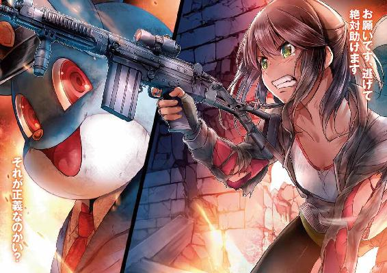
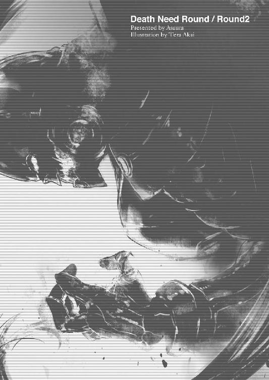
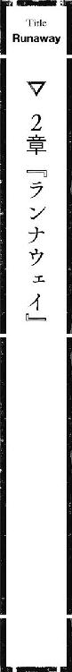
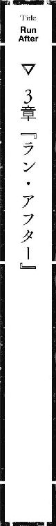

| デスニードラウンド ラウンド 02 | |
| アサウラ | |
| オーバーラップ (2013) | |



「......さぁ、お前の番だよ。二人目だ」
暗闇の中、人工的にトーンを変えられた甲高い声が響く。どこか子供の声のようにも聞こえて、酷く不気味だった。
固いコンクリートの上に投げ出されていた少女は、泣きじゃくりながら後ずさりする。しかし両足をワイヤーで、両手はテープで拘束されていたため、固い床に尻をこするようにしての後ずさりであり、必死に藻掻いてみてもほとんど動けはしなかった。
少女は考える。高校からの帰宅道、何故自分は誘拐されたのか。
そして何故、あんなのが自分を誘拐したのか。
ここはどこ？ 涙のせいで視界は歪んでいる。それでも辺りに視線をやり、吸い込んだ臭いから何とはなしにそこが何かわかる。高い位置から青白い月明かりを差し入れる汚れた窓、ざらざらとした固い床、錆と機械油の臭い......どこかの工場のようだった。
藻掻き続けていると両手を縛っていたテープが破れ出し、何とか外れた。少女は慌てて両足を縛り付けているワイヤーに手をかける。逃げられるかもしれない。その考えは工場の中に差し込む月明かりよりもはっきりと明るい希望として少女の心を照らした。
だが、その希望の光はあまりにも呆気なく消え失せてしまう。
少女は気づいたのだ。何故両手の拘束を解き、足のそれをも外そうとしているのに、すぐ近くにいるアレは何もしないのか。
そして何故、手はテープなのに、足のそれはワイヤーなのか。
指に喰い込む細く、鋭利さすら感じるワイヤー。ソックスのおかげで藻掻いても足の肉を切ることはなかったが、外そうと力任せにワイヤーを引っ張った指先は自分でも気が付かぬ内に血にまみれていた。
「無駄無駄。道具なしではまず切れない。指を失いたいのならそれでも構わないけど......これを読んでからにしようか。手に取って、朗読するんだ」
甲高い声の主は、窓から差し込む月明かりの中にタブレット端末を放り投げた。
少女は血まみれの手で床を這い、そして確信する。手の拘束は初めから解かせるためだったのだろう。そして足の鋭利な、少女の力だけでは外せそうにはないワイヤーはまさに、アレの逃がしはしないという意志そのものだ。
早くしろ。甲高い声はそう言うなり、カチャリ、と音を響かせる。それが銃の撃鉄を起こす音だというのは、少女にもわかった。
銃声。銃口からの発火炎が射手である、アレの顔を浮かび上がらせ......少女は絶叫した。
大きな耳、大きな目、釣り上がった口......ラリっている顔。人ではない見知った化け物の姿。暗闇の中で浮かび上がるそれは不気味ではなく、迫り来る狂気そのものだった。
だが、それ以上に少女に声を張り上げさせたのは衝撃だ。
そいつが放った弾は、少女の靴先を吹き飛ばしたのだ。足の指が一～二本弾け飛んだのが見るまでもなく、わかる。不思議と痛みはなかったが、声が噴き出て、体は痙攣した。
「次は耳だ、とでも言わせたいのかい？ 早くするんだ」
少女はもう考えるのを止めた。逃げるように、言葉に従う。
這ってタブレット端末のもとまで行くと、月明かりの中で電源を入れた。その際、冗談のように血が噴き出ている自分の足先が見えて、力が抜け、悲痛な呻きが漏れた。
だが、今はタブレット端末を読まなくてはならない。アレがそうしろと言っている。少女は表示されている文字を見て、震える声で朗読を始めた。
「23日......今日も朝から加奈子に......。え？ ちょっ、ちょっと、これって......」
加奈子、とあった。自分の名前だった。そして、タブレットに書かれている内容を読むに二年ほど昔に思い当たることがあった。
「続けろ。止めるな。原西加奈子」
また、銃声。また血が噴き出した。片耳が吹き飛ばされた。衝撃に目が眩んだが、加奈子は必死になってタブレットを読む。本能がそうしなければまた撃たれると察していた。
そして同時に加奈子は考える。何となく、今自分がこうなった理由が見えてきた。だが、同時に謎が増えていく。認めたくはないし、言いたいことはたくさんあるが、こうされるのはわかる。
けれど、何故......あんなのが？ 何の関係が？ どうして？
疑問の中、加奈子はひたすらにタブレットに書かれていた文面を声を上げて読んでいく。己が彼女にしたこと、そして彼女から己への恨みが連なる文面。その全てに反論してやりたかった。お前がバカみたいに乗ってきたからだろ、そう書いた奴に言ってやりたい。だが、暗闇の向こうにいるアレとその銃口が許しはしない。
結局、五発の銃弾を体の端々に撃ち込まれながら、自分の名前が連なる長い長い文章を、加奈子はついに読み切ったのだった。
「自分が何をしたのか、わかった？ 少しでもその日記の書き手の気持ちがわかった？」
もう駄目だ。死ぬ、殺される。たとえ生き残れたとしても、体はボロボロだ。今までのような生活は送れないのは間違いない。加奈子は諦め、そして開き直る覚悟を決めた。
タブレットを声の主に向かって力の限り投げつける。
「知るか！ そんなの全部ッ、あのウジ虫の被害妄想だろうが!! あんなサイコ野郎のイカれてくたばったバカ女の気持ちの何がわ――」
アレが信じられない速度で目前に迫り、加奈子の喉をその毛むくじゃらの手で絞め、床に叩きつけた。
加奈子の後頭部に衝撃が走り、頭の中からメキッと嫌な音がし、鼻血が噴き出る。
「......愉快なことを言うね......。予定より早いけど、いいや。もう、死のうか」
加奈子の前に小さなナイフが差しだされる。だが、それ以上に彼女が恐ろしかったのは闇の中から月明かりの中へ出てきた奴の姿だった。
ピコピコ動く大きな耳、楽しげな目、釣り上がった口、毛むくじゃらの大きな体......。本来はかわいらしいマスコットキャラクターの着ぐるみであるはずのそれなのだが......デザインはどこか不気味で、かつ、ただの飾りだと思っていた口は本当の穴になっており、その中に舌も歯もあれば、喉まで窺える。そして大きな両目は明らかに生々しく動き、加奈子を見つめ、時折まばたきをもしたのだ。
着ぐるみでは決してありえない獣の臭いを感じた時、ナイフが加奈子の腹部に突き立てられる。それはザクザクと素人が魚を捌く時のように、刃を乱暴に前後させつつ、腹を横に割いていく。
「今はいい時代だ。いろんなアプリがある。文章を読み上げてくれるものもあるんだ、知っていたかい？」
喉を絞めていた手が外され、加奈子は痛みに喚く。だが、その声は加奈子自身が驚くほどに弱い。腹を裂かれたせいかもしれない。
毛むくじゃらの手が先程投げつけたタブレットをいつの間にか持っていた。そして血でぬめる指先であの文面をアプリに朗読させるようにセット。
機械的な少女の声が憎らしい文章を読み始めると共に、そのタブレットが裂かれた腹に向かっていくのが加奈子の目に映った。
「やだ、ダメ、そんなの入らな......お、お願いやめ、あぁぐっ......ダッ、ダメだって！」
タブレットが傷口から強引に腹の中に押し込まれていく。内側から胃が押し上げられるのを感じ、吐き気を感じるより先に反吐が加奈子の口と鼻から溢れ出た。
「ははは......そんな下品な台詞でいろんな男を愉しませてきたわけだ。あの男もそうやって引き込んだのかい？ ......ダメな子だ、お仕置きが必要だ。ゲンコツだ」
タブレット端末を押し込みきった奴は加奈子の上に馬乗りになり、拳を振り上げた。
「ど、どぅして......あんたが、私......を？ Ｐく......ん」
「そうだよ、Ｐ君だよ。みんなが大好きな、都民の味方、警視庁のマスコットキャラクターＰ君さ。平和の象徴だよ」
「やめて、お願い......ごめん......なさい......！」
拳が振り下ろされる。何度も何度も。
『......間違いない。全部、加奈子が手を回していたんだ。全部、あの女の計画通りだったんだ......。私は全てを失った。ママのお金も、体も、親友さえも......』
加奈子は体内から響く、かつてのクラスメイトの日記の朗読を聞きながら、ゲンコツとは名ばかりの強烈な拳を受け続ける。何発も何発も。
謝る声が消え、そして加奈子が死してなお、拳は延々と振り下ろされ続け、朗読は淡々と続いたのだった。
「悪い子にはお仕置きだ。......お仕置きだ。お仕置きだ。絶対に、許さない。お仕置きだ......。お前の仲間に、一人残らず......お仕置きだ」
『......アイツら、いつか、絶対......殺してやる』
１
「いぇ～い、元気してる!? アキバに降臨ッ！ みんなのアイドル、みっきぃだよ!!」
その冗談みたいな甲高い声に、ステージ前に集まっていた無数の男達は機関銃のようにシャッターを押しまくりつつ「みっきぃー!!」「まうちぃー!!」と野太い盛大な歓声を上げる。女性客も多いのだが、男達のそれに比べるとノイズのようなものでしかなかった。
「イェーみっきぃー!! ......おっ、あの着ぐるみ、邪魔だな。どけよ、クソがっ!!」
すぐ隣で大きな一眼レフを構える男――自分の護衛対象が悪態をつくものの......葛ユリはもうどうでも良くなっていた。ここ五日間の仕事で身も心も消耗しきっている。
ステージ前の、ギュウギュウ詰めの人混みの中に入ると護衛対象が言い出さなかったことだけが救いだが......それにしてもこれはどうかと、ユリは思う。
ユリと護衛対象が陣取っているのは、現在歩行者天国となっている秋葉原の中央通り、そこに設置されたステージから三〇メートルほど離れた所にある『りゅうのあな』と『アニマイト』という漫画・アニメ関連の専門店前の歩道だった。高級望遠レンズを買ったから遠距離でいいのだ、と護衛対象が宣い、あえて離れた位置で三脚を立てていた。
それはいい。というか、どうでもいい。だが、問題はユリの今の姿だった。
いくら仕事とはいえ、これはないだろう......とユリは思う。
『りゅうのあな』のショーウィンドウに半透明に映る己の姿に、ため息が出た。
確かにこれ以上ないぐらい街には溶け込んでいるのだけれど、絶対、仕事が終わった後に武島達からバカにされる。
「......なぁんで、メイド服かなぁ」
やたらスカート丈の短いゴシック＆ロリータなメイド服に、細かな刺繍が入ったガーターストッキングまで合わせた完全仕様だ。とはいえ、これらはアダルトグッズ店で先程買い与えられて着させられたもの。なので靴までは販売しておらず、メイド服にタクティカルシューズというわけのわからないことになっていた。
ユリは鏡に映る自分の姿を見ながら、左側の髪を手ぐしで伸ばす。セミロングの髪ながら、両サイドだけちょっと長め。そんな髪型の左右にはいつも葛の花をあしらった髪留めを用いているのだが、今は右側にだけ。その服にはその方がいいと言われてそうしたものの......左側の髪に髪留めのクセが未だ残っていて、少し気になっていた。
『ユリ、自分の姿に見惚れるのもいいけど、護衛対象から目を離すんじゃないの』
耳に填めている小型の無線機から武島の声。自分の姿や歩行者天国の人混みが半透明に映るショーウィンドウをよぉーく見ていると、ステージ前の人混み近くの場所から手を振る長身の女の姿を見つけられる。
薄手のジャケットを羽織り、スポーティなサングラスをかけた彼女。先日染め直したばかりの長く綺麗な金髪が、ステージ前の熱気にかすかに揺れていた。服はもちろん、その服の上からでもしなやかなモデルのごときボディラインが見て取れる様はまるで映画女優か何かのようだった。ＣＩＡとかスパイとか、女殺し屋とか、その手の役柄が似合いそうだ。
「別に見惚れていたわけじゃないですよ。何でこんな事になってんのかなぁって思って」
ユリはスカートの裾を軽く摘んでみる。短いそれではあるが、その下には見せパンなどという大層なものは穿いていない......というより、見せパンまでは、護衛対象が買ってくれなかったせいだった。
『趣味でしょ？ アキバらしくていいよ。そういうサービスの店みたいでさ』
「良くないですよ、それ。さっき〝君、どこの店？〟って人に訊かれましたし......」
『はいはい〝私、実はこう見えてウケいいんですよ〟アピールはいらないって』
「違いますって！ もー......。はぁ、せめてガーターストッキングに小型拳銃でも差し込んであれば何かそれっぽいんですけど」
『そういうのは出るとこ出てる女がやるもんよ。アンタには十年早い』
胸元を摘んでみる。非情なまでに余裕がある。スカスカだ。
しかも今着ているメイド服は胸の上側が露出する――いわゆるビスチェなので、胸の大きい人なら谷間を強調し、人目を引く効果になるのだろうが、そうでないユリのような人間が着ると、若干の悲愴感を漂わせてしまう代物だった。またデザイン上ブラを付けるわけにもいかず、胸とビスチェとの間に余分なスペースがあるために、深くお辞儀をしようものならユリの小さな胸が全て露わになるというリスキーな状態でもあるのだ。
エロいと言えばそうなのかもしれないが、間違ってもセクシーと呼べる類ではない。
ウィンドウの中の己が、まるでお預けをくらった犬のようにしょぼくれた顔をしていた。とはいえ、普段からクリクリとした元気一杯な目をしているせいか、知り合いから犬のような顔だと言われるので、さほど変わりはないのかもしれない。
ユリは頭を切り換える。ネガティブな考えを捨てた。前向きなのが自分の売りなのだ。
ユリは自分の姿から空へと視線を移す。辺りは大きなビルが無数に立ち並んでいるというのに、太い道路を反映するかのように、そこには広い空間があって気持ちの良い空を眺めることが出来た。雲一つない、見事なまでの秋晴れである。
こうも気持ちのいい空の下で何をやっているんだ、自分は。
そんなむなしさと共に、ユリは護衛対象と肩を並べて歩行者天国の人混みの向こう――アイドルが一日署長をやっているステージの上を見やった。
真内みき、という最近人気のアイドルらしい。『みっきぃ』及び『まうちぃ』という二つの愛称を持つ彼女は、ステージ上でファン以外にはまったく興味のない話をしていた。今日は中国っぽい感じに黒髪を二つの大きなボンボンにしてみた、とか、休日はデスニードラウンドに一人で行っちゃうとか、そこの名物である『エキセントリックパレード』は見なきゃ人生損をするだとか......ユリにとっては面白みの欠片も感じられない話ばかりだ。
アイドルがマスコミと大人を楽しませている傍ら、子供相手のためなのか、警視庁のマスコットキャラクター、Ｐ君の着ぐるみが子供達に風船を渡して回っていた。
それが不意にユリ達を見てきて、思わずドキリとする。二次元のデザインを無理矢理着ぐるみ化した代償なのか、そのＰ君の大きな目、吊り上がった口は、どこかラリってる最中の微笑みにも見える。そのため急に顔を向けられると妙な気分になるのだ。
トコトコと歩いてくると、ユリと依頼主、そしてそのカメラを見やるＰ君。着ぐるみの中からでは護衛対象の長大な望遠レンズが銃のようにでも見えたのかもしれない。
銃は今、ユリの足下に置かれている、私服の入った紙袋の中に一挺あるだけだった。
Ｐ君がただのカメラだと判断したのか、視線の向きを変え、風船をユリに渡そうとしてくる。だが、食べられず、お金にもならないものはあまりいらなかったので、ユリは苦笑いで手を振ってその旨を伝えると、着ぐるみはそそくさと別の場所へと歩いていった。
昔から良く見るキャラクターだが、改めて着ぐるみを近くで見てみると巨大な頭のせいで二メートルもの大きさとそこに浮かぶ微妙な表情に何となくユリは圧迫感を覚える。
そして、どこか洗っていない犬のような、嫌な臭いもかすかに......。
「......きっとあれ、中、凄いことになっているんだろうなぁ」
着ぐるみのバイトは高収入だというのは有名である。その重たい着ぐるみを着て、蒸し暑い中、生意気な子供のご機嫌を伺ったりしないといけないのだから、当然といえば当然だが、本当に辛いのは着ぐるみに染みこんだ他人の汗とカビの方にあるらしい。
洗濯出来ず、そして生地が厚いがために乾燥させるのも難しく、汗でビチョビチョに濡れる夏場などは相当に悲惨らしい。もう秋とはいえ、夏を乗り越えたあのＰ君の中も、きっとそういった地獄の有様なのだろう。
ユリは何とはなしに中の人に同情した。
ステージの方で動きがあり、司会をやっていた女性が壇上に上がる。
「真内署長、ありがとうございました。それでは次のプログラムに移りたいと思います。皆様の中には真内署長と同じぐらい楽しみにしていらした方も多いのではないでしょうか。本邦初公開、我が警視庁が誇る第七機動隊銃器対策レンジャー部隊の新装備によるデモンストレーションです！ 皆様、係の者に従い、道路中央のスペースをお開けください！」
ステージ前に詰め寄せていた大勢の観客とは別に、離れた場所で依頼主と同じように三脚を立てていた男達がざわつき始め、先程までの賑やかさの中に緊張した空気が漂い出す。
『噂の新装備か。見物だな』
まどろんでいるような、のっぺりとした声。ユリ達のチームを束ねる松倉だった。
人に会う用事があるとかで昨日から顔を見ていないが、その声から、またあの眠たそうな目をし、顎髭を生やしたままの彼の顔が簡単にユリの頭に浮かんだ。
電波法に違反している高出力の無線機を使用しているとはいえ、ユリ達が今使っているものはせいぜい半径一キロ程度しか届かない。様々な電波が飛び交い、やたらと干渉しまくる秋葉原であることを考慮すると、松倉がいるのはすぐ近くのはずだ。彼も再び護衛任務に戻った、ということなのだろう。
『アレでしょ、オレ達のと同じ筑波の連中が作ったっていう......』
愛嬌のある若い男の声。大野だ。ユリが辺りを窺うと太い道路を挟んだ所にある漫画ショップ『コミックＺＵＮ』の前にて、彼の姿を見つけられた。大きな鞄を肩に掛け、大学生のような見た目をし、眼鏡をかけた大人しめの彼の姿は秋葉原では没個性といったところ。弾帯をジャケットの上に身に付けてはいるが、それがそうであるように、最近では好きなポーチを自由に付けたり外したり出来るお洒落なデザインのものもあるため、財布やＭＰ３プレイヤー、タブレット端末を入れたりして活用する一般の人も多く、大野のそれはさして目立ちはしていない。無論、彼のバンダリアには本来の機能通り、ポーチの中にショットガンの弾薬が大量に納まっているはずだった。
『というより、部分的な廉価版って噂だ。足と腰周りの駆動系のみ独立させてさらにバージョンアップさせたらしい。まぁ元々俺らが使っていたギアはほとんど職人技の固まりみたいな工芸品だったし、あれを量産していたんじゃ金がいくらあっても足りないだろう』
「......あのぅ、それって、アレですか？ あの、松倉さん達が北海道独立戦争で暴れ回っていた時に使っていたっていう......」
『まぁな。栃木群馬間紛争でも使ってたよ』
ヘリの音が近づいてきた。
北側、末広町方向の上空にオレンジの線が入った青いヘリが現れ、中央通りの道路上空をユリ達の方向に向かって真っ直ぐに飛んで来る。速い。そして、ユリが風を感じ始めたと同時にヘリは機首を下げ、急降下。地面から十数メートルほどの高さまでに下がるとそのまま高速でステージに向かって来る。
その次の瞬間、ユリは驚いた。接近するヘリの両脇の扉は開放されていたのだが、そこから完全武装の男達六人が次々に飛び降りたのだ。いや、飛び降りたのではない。ロープは見えないが、かすかに日の光を反射する細い線――ワイヤーが見て取れる。だが、それにしたって空中停止しているそれとは違い、飛行しているヘリからの降下である。当然ヘリはワイヤー、そしてそれを滑り降りる男達を引きずるはずだ。
男達は地面に近づいたタイミングでワイヤーを放し、今度こそ飛び降りた。叩きつけられるかに思えたそれではあったが、男達は両手に銃器を持ったまま、軽やかに着地すると共に慣性に逆らわずに地面の上を柔らかに転がる。素早く立ち上がると共に、銃口に赤い安全器具が取り付けられたＨＫ４１６を綺麗に構え、一切停滞することなく、辺りを警戒しつつステージに向かって滑るように走る。
ヘリがステージ上空を飛び抜け、真内みきがその風に一度顔を伏せた時には、すでに六人の男達がステージ上にて彼女を守るようにしてフォーメーションを組み終えていた。
彼らが降下を始めてから七秒に満たない、わずかな時間。ほとんど速度を落とさなかったヘリはすでに遠ざかりつつある。
あまりに鮮やかなそれらの姿に、一瞬の沈黙を経て、耳が痛いほどの歓声が上がった。
『へぇ、アタシらのより良さそう。動きが綺麗だよ。隊員の練度もいい感じじゃん』
『どうかな。全員が同じ動きだったぞ。ギアに対地用のセンサーでも付けて、自動の姿勢制御で軟着地するように出来てるだけなんじゃないか？』
武島と松倉の会話を聞きながらユリはステージの上の男達を見やる。濃紺のツナギの上に防弾装具とタクティカルベストを纏う彼らの姿はいわゆる往年の特殊部隊といった様子だが、ゴツいデザインのブーツと直結し、足の側面を伝って膝、そして腰周りを覆う機械だけが少々異様である。後ろ腰には釣り竿のリールのような器具も見て取れ、どうやらあれで極細ワイヤーによる降下を為していたようだ。
以前テレビで見た、全身を装甲板で覆った超重装甲の松倉達の写真と比べると、貧弱というか頼りない印象になるものの、都市部等ではこちらの方がいいのかもしれない。
アイドルが彼らの動きに驚き、キャッキャと騒ぐのをよそに、司会者が新装備について声高に説明していく。そんなステージ上の遣り取りを、ユリ達は何とはなしに眺めた。
『しっかし、あれですよね、よく警察が新装備公開なんてしましたよね。しかもこんな大都市のど真ん中でヘリまで使って』
大野の驚きはもっともだった。装備を公開するというのは、言うなれば自らの手札を見せることになるし、万が一どころか億が一の事故の危険性を考慮しなければ世間から叩かれる警察という組織の中にあって、都市部での武装した隊員とヘリによるデモンストレーションなど、以前は考えられないものだった。
『何年も前から警察の戦闘力......というか、武力による抑止力及び打開力には疑問が投げかけられていたからな。極端に力を入れた特殊急襲部隊は虎の子過ぎて今となっては逆に扱いにくい存在に成り果てたし、末端の警察官は相変わらず貧弱な装備と練度しかない有様だ。そこに来て最近都内で子供が犠牲になる事件が頻発しているから、世間からのバッシングをかわすためにあえて目立つ場所、しかも多少のリスクを承知で都市部でのヘリ降下と装備公開で、小回りが利く強力な部隊の存在をアピール......ってとこだろ』
松倉の言う事件というのは、夏頃から女子高生や大学生が幾人も失踪している件だろう。
日本では昔から失踪事件は多く、殊更騒ぐほどのものではない。だが、失踪理由の見あたらない、それも資産家等の子供が不自然に連続して姿を消していること、そしてその内の一人があまりに残虐な暴行及び複数の弾痕を受けた死体となって海に浮いている所を発見されたことから事件性が急浮上し、現在ネットやマスコミで大騒ぎとなっている件だ。
最近では防刃ベストと拳銃のみの制服警察官とは違い、防弾ベストを着てＭＰ５や表向き警視庁では導入されていないはずのＰを装備した警察官が夜な夜なこれ見よがしにパトロールしているが、事件は一向に解決の気配を見せていない。しかも今度は武装警察官のパトロールは都民に威圧感を与えるとしてこれはこれで叩かれ始めているらしい。
そんな二律背反な意見を、世間の声だと謳うマスコミの言葉に、テレビを見ていた関係のないユリでさえ『どないせぇっちゅうねん』という気分だった。
一応、Ｐ君を深夜パトロールに随伴させたりしてイメージをソフトにしようとしているらしいが、さして効果はないようで、警視庁は非常に苦しい立場にあるらしい。
それ故の、今回のイベントなのだろう。それはわかるのだが、ユリには捜査をしない警備部の部隊がどれだけ強力になろうとも、例の事件が解決するようには思えず、どことはなしに的外れなイベントの気もした。
そんな疑問を口にすると、無線ではなく、隣で買ったばかりのカメラのシャッターを切りまくっている護衛対象がファインダーから視線を外さずに言う。
「世間からしたら警備部だろうが刑事部だろうが、組織犯罪対策部だろうが、全部ひとまとめに『警察』なのさ。だから、どこそこの部が強化されたって言えば警察全体が強化されたイメージになるってわけ」
「あ、そういうもんなんですか」
太く低い護衛対象の声は、その渋い顔によく似合う。ただ、彼の着ているよれよれのシャツと単に古いだけのジーンズはその両方に似合っていなかった。
「まったくもって、うまいやり口だよ。まさか俺らの天使であるみっきぃを一日署長だぜ？ これからはネットで警察に批判的な意見があったら、俺らがぶっ潰すもんな」
「......そーっスか」
イベントが終了し、ステージが撤収を始めると共に、護衛対象もまた片付けを始めた。
「そんじゃ、その三脚とその鞄持って。あ、カメラはいいよ、レンズも俺が持つ」
護衛対象が五日前に手に入れた大金で購入したカメラとレンズは、ユリには触らせたくないものらしい。ユリとしては楽でいい。三脚を担ぎ、護衛対象の鞄と自分の服の入った紙袋を持って彼の後に付いて行く。
「腹減ったし、上野でケバブでも喰うかなぁ。タクシーは......まぁいいや。歩くか」
独り言をぼやきながら歩く護衛対象にユリは付いて行く。一応、上野に向かうとだけ松倉達に無線で伝えた。これで彼らも距離を取りながら付いてくるはずだ。
普通護衛というともっとガッチリと対象者を囲むものだが、今回の仕事に関して言えばこれでいいのだという。そもそもこの業界に入ってからまだ日が浅く、しかも一六歳の現役女子高生であるユリだけが側にいるというのもおかしな話であり、勘づかれるのではないか、という気がしないでもない。
勘づかれた方がユリとしてはありがたい。そうすれば契約された一週間の仕事は楽に終わる。だが、勘づかれなければ......報酬は上乗せされるとはいえ、確実に一度は命のリスクと遭遇することになるのだ。
そんなことを考えながらユリ達は秋葉原から北へ向かう。歩行者天国を過ぎ、末広町に入って秋葉原特有の空気感が消えた時......ユリは気が付いた。
――まずい、自分は今、メイド服のままだ。
「あ、あのぅ～、佐野さん。すみません、出来ればどこかで着替えを......」
不思議なことに、秋葉原の中にいる間は〝何だかなぁ〟程度しか感じなかった衣装が、違う街に一歩踏み出した途端、尋常ではない恥ずかしさとなってユリを襲う。
ユリは護衛対象に、佐野さんと呼びかけたが、反応がないのでもう一度声をかける。
「え？ あぁ、そうか、佐野は俺か。まだ慣れないんだよなぁ。......で、何？ 着替え？ 何言ってんだよ、それで行くのがいいんじゃないか。金、貰ってんだろう？」
佐野はそう半笑いで言うと、またすたすたと歩いて行く。ユリは愕然として思わず立ち止まってしまったが、彼と離れて一人の所を見られる方が恥ずかしいので、仕方なく走って追いつくと彼に出来るだけ密着するようにして歩いた。佐野はどこか満足げである。
うあぁ......と思ったものの、一般人がいきなり大金と人に命令出来る立場を手に入れると、こんなものなのだろう、とユリは出来るだけ大人で、クールぶった思考をしようとしたが、恥ずかしさに心臓がキュッとなるのと、顔が赤くなってくるのは止められなかった。
「そうだ、上野についたら、ユリの靴を買おう。うん、そうしよう」
楽しげに言う佐野だが、その声を聞いていて、あえてタクシーを使わずに歩くことにしたのは自分の恥ずかしがる様子を楽しむためだったのかもしれない、とユリは遅まきながらそれに気が付く。ちょっとムッとした。
「ケバブはその後だな。上野のさ、アメ横にある面白い外国人が作ってるチキンとビーフのドネルケバブは超うまいんだぜ？ ケバブピタなんだけど、絶対ユリも気に入るよ」
ドネルケバブは中東等で食べられる香辛料を利かせた肉料理だ。串に肉の塊を刺し、表面を炙り焼きして、その焼けた部分だけを削いだものである。ケバブピタ、というと袋状のパンにそれらの肉や野菜を入れたサンドウィッチのようなものを指す。
上野のは食べたことがないが、両親が失踪する前、借金がなかった中学時代にユリも高田馬場で食べたことがある。結構好きな味だった。その味を思い出して、ユリは思わず生唾を飲み......そして、メイド服なのもまぁいいか、と納得することにした。
ケバブと服なら、ケバブを取る。それが今のユリである。
おいしいものに勝てるものはそう多くない。犬が尻尾を振るように、フリルの付いたスカートを揺らしてユリは佐野に密着するように付き添った。
秋葉原から離れると極端に人の数が減るものの、それでも休日ということもあり人通りは少なくない。すれ違う人は元より、六車線もの太い道路を挟んだ反対側の歩道の人間達さえもユリを見やっては、あぁそういう人ね、という感じに半笑いを浮かべていた。
「......あっ、ワック......」
あの、夏の暮れ。ワックのマスコットキャラクター、ロナウダと死闘を繰り広げて以来、店を見かける度に重い気分になる。
その店舗を見やれば、ウィンドウの向こうはやや閑散としている。丁度お昼の三時という中途半端な時間であることを考慮しても、客が多いとは言えなかった。
共に戦った男達、そして松倉チームに仕事を依頼し、今は死した男の顔がユリの脳裏を過ぎる。そしてあのロナウダの微笑みもまた。
ユリは首を振り、進む足を速めた。思い出すに苦々しい記憶だ。ただそれはもう終わった仕事。今は、前を歩く男をとりあえず守るのに集中しなくては。
何より、街をメイド服で歩きながらシリアスになるのは間違っている気がした。
ユリはワックのある右手側を見ず、左手側の車道の方へ視線を逃がして前を通り過ぎた。
十字路。青信号が点滅していたので急げば渡れるが、走りたくないのか、ユリの恥ずかしい姿を大勢に見せたいのかわからないが、佐野はあえて横断歩道の前で止まった。
ニコニコしながらカメラを撫でる彼の前に、右手から一台のＳＵＶが現れる。
横断歩道の上で停まったその車は、明らかに怪しかった。車に乗った三人の厳つい顔をした男達がこっちを見ているのである。
ヤバイ。そう感じたユリは無線でその状況を知らせるより先に、何も察していない佐野の肩に手を伸ばした――その時だった。
銃声が十字路を飛び抜けた。ボシャッという嫌な音が背後から聞こえ、首筋に飛沫がかかる。ユリの後ろにいた人が撃たれたのだと、頭で理解するより先に体が感じ、理解した。
初陣の時ならきっと驚いて振り返り、そして腰を抜かしていただろう。だが、今のユリは訓練を積んだだけの女の子というわけではない。ロナウダという尋常ならざる化け物との実戦の中で、〝危機〟との付き合い方は嫌という程に教育された。血と痛みと苦しみ、そして命の危機は、もはや特別なものではなくなっている。
この手のヤバイ状況で本能に身を任せて体を硬直させれば、終わる。
体を緊張に硬くしたところで鉛玉は皮膚を破き、肉を抉り、骨を砕く。人間が生まれながらに知っている動物の戦い方では、銃撃戦には対応しきれない。
唐突に危険を感じると体を硬直させる、という本能を理性で押しのけ、ユリは三脚を捨てて佐野の背中に飛びかかる。そして二人で折り重なるように倒れつつ、背後を見やった。
男が一人、腕を押さえて地面に倒れていくのが見える。
銃声は六車線の道路を挟んだ歩道からだとユリは感覚で判断する。ならば伏せていれば走行中の車が邪魔でそうそう当たらないはず。だが、目の前に止まったＳＵＶが今の銃撃と無関係とは思えない。仲間？ だとしたら伏せているのも危ない？ ユリは頭の中で必死に考えるも、体はそれ自体が考えているかのように、何よりも先に銃を求めた。
紙袋の私服の下に入れておいたハンドガン、ブローニングハイパワーＭＫⅢ。
それを抜き取ると共に無線にて松倉達に指示を仰ごうとしたのだが、ユリが口を開くより先におかしな音声が電波に乗って耳に入ってくる。
『......今の、撃っては、ダメでした？』
無線を持っているのはユリ、松倉、大野、武島の四人だけ。その誰とも違う、小鳥の囀りにも鈴の音のようにも聞こえる、軽やかで透き通った少女の声。
さすがにそれにはユリも驚き、頭の中が真っ白になる。
目の前に止まっていたＳＵＶの助手席、そして後部座席の扉が開けられ、中の男達がハンドガンを手に慌てた様子で降りてくる。その足先が地面に触れた直後、そこを銃撃が襲った。
地面と扉、その隙間を、狙い撃たれたのだ。
「ユリ、殺さない程度に撃て」
のっぺりとした松倉の声。だが、それは無線機ではなく肉声だ。
声のした左手側の車道を見やればＵＭＰを撃ちながら十字路を渡って近づいてくる彼の姿がある。
足首を狙い撃たれた男二人は呻きながら一度地面を転がったものの、這い登るようにして再びＳＵＶに乗り込んだ。逃げる気だ。
松倉は即座に車の前に立ち、ドライバーに向けて数発放つ。フロントウィンドウに蜘蛛の巣状のヒビが入るものの、それだけだ。貫通しない。防弾ガラスだ。
「チッ。45口径じゃ無理か。美鳳、ドライバー、撃てるか？ 殺して良し」
聞き慣れない名を松倉は口にしつつ、ＵＭＰをそれでもなおフロントウィンドウに向けて撃ち続ける。
『そこは射線が通ってないです。無理です』
あの小鳥の囀りのような、綺麗な声。何が何だかわからず、ユリは混乱し、佐野は「うおぉ......」と頭を抱え、ユリの下で震え始めていた。
ＳＵＶがエンジンを吹かし、バックしようとする。だが、後ろから走り込んできたボロボロのハイエースがＳＵＶのケツにその車体をぶつけるようにして、すぐに道を塞いだ。
ドライバーは、武島だった。彼女はハンドルに片手を置いたまま、窓から出したシグマで銃撃するのだが、リアウィンドウも防弾だ。
ならば！ とユリは起き上がり、ハイパワーのスライドを引き、薬室に弾薬を装填。
佐野の横で右膝を突き、ＳＵＶの側面へ、撃つ。ピシッとしたシャープで、誤魔化しのない真っ直ぐな反動がユリの手を走る。
狙いは助手席の窓。中の男達が慌てた顔が一瞬見えたものの、すぐに蜘蛛の巣状のヒビで見えなくなる。貫通はしていない。二発目は狙いがずれて窓ではなく、その下の扉に当たったのだが、今度は何故か野太い悲鳴が上がったのが車外にも聞こえてくる。
へ？ とユリが不思議に思った直後、松倉が、ケチったな、と鼻で笑った。
「防弾は窓だけだ、車体は抜けるぞ。ユリはもういい、大野、行け。ドライバーだけを潰せ。単粒弾」
了解、の声と共に佐野とユリを追い抜くようにして、大野がレミントンＭ８７０を手に、彼女らの脇を走り抜けていく。バンダリアのポーチから取り出したショットシェルを一発、銃に装填しながらＳＵＶのフロントを踏み台にして、車体の天井に飛び乗る。
大野、銃口を下方に向け、躊躇うことなく一発。
Ｍ８７０の轟音とほぼ同時に無数のヒビ割れで白くなっていたＳＵＶのウィンドウが、中から瞬時に赤くなる。クラクションが鳴り出し、男二人の悲鳴が上がった。
その直後に大野の悲鳴も上がり、ＳＵＶから転げ落ちる。車内から反撃があったようだ。
「......わざわざ上に飛び乗る必要ないだろ、ポンコツが。側面撃てよ」
車道の上でケツを押さえて身悶えしている大野を見ながら、ユリの隣まで来た松倉はぼやくように呟いた。
出血がないので、大野は被弾したのではなく、単に落ちた際に尻を打っただけのようだ。
「おい、聞こえるか。車中の二人、蜂の巣にされたくなかったら武器を捨てて出てこい」
松倉が言うと、ＳＵＶの扉がそっと開き、ハンドガン二挺が放り出される。続けて両手を頭の上に乗せた男が二人降りようとしたが、足が被弾して酷い有様になっており、降りるに降りられないようだ。
ケツの痛みから復帰した大野が二人を引きずり出して、地面の上に俯せで寝かせ、拘束するのを見ていると、ユリの視界にＳＵＶの運転席がチラリと入る。そこでは首のない死体がハンドルにもたれかかり、クラクションを鳴らし続けている。酷い光景だった。
煙草を咥えた武島が運転席の扉を開け、うるさいとばかりに、力任せにシートに押しつけると、首から血が未だトクトクと噴き出していて、彼女の手を赤く染める。
見ていられなくて、ユリは視線を外した。
「これで......佐野でいるのも終わりか」
佐野が――いや、佐野という名前になり、佐野という男に似せた顔になった護衛対象の男が、地面に座って苦笑していた。
「そうだな、疑似餌は終わりだ。お前も俺達も、これで仕事は終了。お前はもう自由だし、俺達はこれから釣れた魚と引き替えに報酬の上乗せを貰うよ。警察が来る前にこいつら連れて撤退する。......達者でな」
松倉が依頼主と思しき相手に電話を掛けつつ、言った。
「そうか。仕事、速いんだな、アンタら」
今回のユリ達の仕事は、護衛でありながら、護衛ではなかった。身柄を狙われているらしい佐野が、自身の影武者を用意したから、それを使って相手の尻尾をつかんで欲しい、なお影武者の命はどうでも良い、というものだ。だからこそ半人前のユリなどがたった一人で随伴していたし、あえて彼に好きなように遊び歩かせていたのだった。
自分の影武者を用意した佐野という依頼主が何者なのか、ユリは知らない。今回捕まえた男達が誰の手先で、これからどこに行き、何をされるのかも、知りはしない。
多分、知ったところで夢見が悪くなるだけだというのは、何となくわかったからあえて聞きもしなかった。武島や大野も同様だろう。松倉すらも知らないのかもしれない。
信頼している組合を通してやってくる仕事とは、案外、そんなものだった。何も知らない、だからこそ安全でもある。ユリも最近、ようやくわかってきた。
「......死ぬかと思ったが、案外生き残るもんだな。前よりマシな顔にもなったし、金も入った。いいことずくめかな」
この五日間、金を貰って佐野になっていた男が本当は何者なのか、どんな理由で整形までして今回の仕事を引き受けたのか、ユリは知らない。知っているのは彼と過ごした五日間だけである。面倒ではあったが、決して悪人ではなかった。
ユリが見ていると、佐野であった男がユリを見返す。どこか寂しげなその顔を見ていると、彼の私生活がかすかに垣間見えた気がした。
「いや、ユリとケバブが喰えなかったのが、後悔っちゃ後悔かな。メイド服の女子高生とケバブ喰うなんてまずもう機会ないだろうし、残念だな。もう、すぐ行くんだろ？」
「みたいです。......またの機会に、お願いします」
でも多分、もう二度と会うことはないのだろう。そんな気がしたが、ユリは微笑んで頭を下げた。最後に〝ご主人様〟と付けるべきだったかな、と一人心の中だけで苦笑する。
銃声。ユリは頭を下げた状態から、反射的に佐野に覆い被さって伏せる。大野は横に飛んでショットガンを構え、武島は拘束した男の服で辟易しながら手を拭い、松倉は「あぁ、そうか、忘れてた」とぼんやりとした口調で口にした。
『逃げようとしていたから......。まずかったですか？』
「いや、いい。よくやってくれた、美鳳」
無線機からのあの声に、松倉が応えた。彼が見やる方向をユリも見やれば、最初に腕を撃たれた男が、少し離れた場所でまた地面を転がっていた。今度は足を押さえていて、そのすぐ近くの地面にはハンドガンが落ちており、それでようやく事態をユリも把握した。
後ろから銃で脅して、ＳＵＶに佐野を押し込もうとしていたのだろう。そして失敗したと見て、こっそり逃げようとしていたのだ。
「もう仕事は終わりだろ？ っつぅか、俺を守る必要なんてないんだろ、そもそもさ？」
小さな胸の下で押し潰されている佐野の手が、抱きしめるようにしてユリの背中をポンポンと、優しく叩く。
「あ、すみません！」
「いや、ありがとう。......今、凄く守ってもらったって気がしたよ。何か、嬉しかった」
佐野の上から起き上がると、目の前の男が苦笑しているのをユリは見る。渋い顔をした四十の男。だが、指先や首の肌の感じからすると本当はもう少し若いのだろう。
「いつか礼はするよ。守ってくれたことと、控えめなおっぱいの感触のね」
ユリが少しムッとした顔をすると、佐野は地面に座ったまま笑った。
「大野、三人をハイエースに押し込め。ユリ、撤収するぞ。美鳳、お前も来い」
ユリは立ち上がると私服の入った紙袋を拾い、佐野をその場に残してハイエースの助手席に乗り込む。大野と松倉が三人の男を荷台に放り込むと、美鳳と松倉が呼んでいたであろう少女が小走りにやって来た。
「乗れ、お前のバイクは後で回収する」
はい、とやはり綺麗な声で応じた彼女はスラッと細いシルエット。レディースもののライダージャケットを纏い、後ろに束ねた長い黒髪を揺らす彼女の手には、メカニカルな細く長い狙撃銃が握られていた。
３３８ラプアマグナム弾仕様のレミントンＭＳＲだった。
２
男は薄汚れた洗面台に両手を付き、えずいた。だが、胃液すら出てこない。涎が口からゆっくりと垂れて、排水溝に流れていっただけだった。
......限界だろ。その背後からの声に、男は正面に取り付けられている鏡を見やった。
半裸の自分が目に入る。贅肉を失い、皮と筋肉だけの己の姿。本当にそれだけ。髪の毛も眉毛も、まつげすらない。つるりとしたその肌の具合はどこかマネキンを思わせた。当たり前の人間に見えつつも、良く見れば普通ではない。そんな、自分の姿。
古びた部屋だった。ソファには筋肉質な男。同僚であり、共犯者である田端だ。
「もう無理だろ。昼のイベントで四時間も稼働させた。四時間だぞ？ 安全規定に迫る時間だ。保護スーツも一〇％近く溶解していた。それでもまだやるってのかよ」
「安全規定？ ハンッ、俺の経験上、ガチの限界時間は一〇時間だ。賞味期限と消費期限の違いに似ているな、わかるだろ」
「だからと言って余裕かましてたらまずくなる。今日はもう稼働させるのは無理だ。体に負担がかかりすぎる。精神はもっと――」
黙れ！ 男は額を鏡に押しつけるようにして、声を上げた。
「わかってる！ 出来ることなら、あんなクソみたいなイベントはお前にやらせたかったよ!! あの小娘のムダ話でこっちはズタボロだ！」
男が言うと、田端は苦い顔をして、俯いた。男が深く息を吸って、吐いた。
「やるしかないんだ。お前が勝手に東京湾に死体を捨てたせいで原西加奈子の死体が発見されたんだぞ!? ......今も刑事部の連中は必死にこちらの痕跡を辿っているはずだ」
「あれは......すまない。臭いが酷かった。一人目の時はどうしようもなかったが、二人目はまだ、形があったから東京湾に重しつけて沈めれば十分だとばかり......」
「死体はガスで膨れる、そう簡単には沈まないんだよ、クソが。......お前のせいで俺の人生も今回の計画もズタズタだ。大人しく保管しておけばいいものを......」
すまない、と田端は苦々しげに頭を下げた。
「俺達の動きに勘づく連中が出てくるのも時間の問題だ。一日遅れればそれだけ問題が増える。あと、二人だ。たった二人なんだ」
男は震える手先で洗面台の脇に置いてあった小瓶と注射器を握り取る。そして小瓶の中の液体を腕に注射。手の震えが消え、呼吸も楽になっていく。
「......先にお前に限界が来るぞ」
「構わん。あと二人、それだけもてばいい。......悪いが、最後まで付き合ってもらうぞ」
「わかってる。オペレータの、なんつった？ ......あぁ、大塚か。アイツも俺も、貰った金の分は働くさ」
「大塚は金じゃない。俺の手持ちの薬と、プランター設備を丸ごとくれてやる約束さ」
「ヤク中がヤク中をバックアップしているってわけか。ぞっとしねぇな」
「俺も大塚も作戦行動中にラリったことはないはずだ。わきまえている。とはいえ、俺は少しラリった方が丁度良いのかもしれないがな」
「......Ｐ君としては、か」
「そうだ、俺はＰ君だ。都民の笑顔と平和を守り、街を明るくするのが、俺の仕事だ。少しぐらい笑っていた方が子供にウケがいいだろ？」
鏡越しに、男は笑ってみせる。黄色く、何本か足りない歯が見えた。
「......わかった。夜のパトロールの準備をしておくよ」
そう言い残し、田端は存在しないはずの警視庁本庁舎地下四階にある特別活動課の控え室を後にした。
一人になった男は、注射器を鏡に向かって叩きつける。注射器は砕け、鏡にひびが入った。本当に壊したいのは別のものだった。
男の視界が歪む。世界が揺れる。薬が回ってきている。ひび割れた鏡の中に大きな耳と目を持つ化け物が不気味に微笑むのが見えた。
「まだだ。まだ、早い。あと少しだけ、もってくれ......。俺は、俺だ。まだあと少しだけは......お前じゃない」
鏡の中でけだものが笑っている。楽しそうに、狂ったように。
薬が回る。けだものが、笑っている。男も、笑っていた。
３
捕まえた男達三人を依頼主に引き渡し、ユリ達が帰宅する頃にはすでに日はとっぷりと暮れていた。
武島が運転するハイエースが足立区にある大きな倉庫のような建物――チームの詰め所の前に停まると、ユリは一足先に降り、建物の主な出入り口である大きなシャッターのロックを解除。錆び付いたそれを、メイド服のままながら大股を開いて力任せに持ち上げる。
怪鳥の断末魔のような凄まじい音と共にシャッターを上げ切ると、ユリは真っ暗な室内を進み、壁に取り付けられているコンソールを叩いて明かりを付けた。
今でこそ見慣れた光景だが、こうして数日ぶりに帰宅するとやはり異様な空間なのだとユリは感じる。外見そのままに中もまた倉庫のようなそこ。固く冷たいコンクリートの床、高い天井、それらの間には何の区切りもない空間が広がっている。中央には大きなカーペットとちゃぶ台、その脇に大きなテレビ。壁際にはロッカーや棚や、作業机等がたくさん並べられ、さらに隅には応接用兼武島の仮眠用ベッドにもなるソファと机があったり、ゴミ捨て場から拾ってきた段ボールとパーティションで作られた三畳ほどのユリの仮設自室などがあるものの、それでも〝無駄に広い〟という感想を払拭するには至らない。
台所やトイレ、シャワールーム等の水回りが最奥の壁の向こうに隠れるようにまとめられているせいもあるのだろうが、とにかく広く感じられた。
松倉達が荷物を担いでシャッターをくぐる。
「松倉さんが言ってた人に会う用事って、あの美鳳とかいう女の子だったんですね。愛人ですか？――うぁっ痛いッス！」
すれ違い様に松倉からベシッと一発頭を叩かれた。ユリは大げさに頭をさすりながらも彼が持っていた荷物を受け取ると、銃器類をガンロッカーに納め、今度は全員の洗い物をまとめて手洗い品と洗濯機に放り込むものの二つに分けていく。
洗濯はユリの主な仕事の一つなのだ。
「そもそも結婚してねぇよ。美鳳は、知り合いの娘だ。仕事で日本に行くから、暇だったら面倒見てやってくれ、って言われてただけだ」
「それでいきなり仕事を手伝わせんのはどうかと思うよ、松倉」
武島がジャケットをソファの上に投げ捨て、煙草を取り出しながら言った。
使えるもんは使うさ、と松倉が笑う。これから夕飯を作るというので、荷物の片付けをユリに任せ、一人、彼の聖域たる詰め所奥の台所へと姿を消した。
ユリは自室へ入り、メイド服から普段着へと着替える。さすがに血飛沫のついたメイド服で夕飯を口にしたくはない。
「昔、オレ達が台湾で会った時はまだ子供だったのに......人の成長って早いよなぁ」
大野のボヤき声が聞こえる。ユリの部屋は天井がないので、詰め所内の声は良く通る。というより二メートルもない高さの段ボールの壁で囲んでいるだけなので、天井があったところで恐らく声は聞こえることだろう。
「綺麗でしたよね、あの人」
先程、秋葉原に置きっぱなしにしているバイクを取りに行くということで別れた彼女。本名は林美鳳だという。ユリの人生ではほとんど外国人と接することがなかったので、人種が違うせいなのかそれとも彼女がたまたまそうなのかわからないが、眩しいほどスタイルが良かったのを思い出す。
胴が短く、その代わりに長い脚。ピッチリとしたジーンズは悔しくなるほどに細く、しなやかなラインを浮かべていた。ユリは胸を除けば、自分がそれほど劣ったスタイルだとは思っていなかったが、美鳳とは比べる気が失せるほどだ。
顔も綺麗だったな、とユリは思い出す。彼女の頬など、指で押せば跳ね返しそうな肌の張りと艶。そして無垢な少女のようにも、色気漂う大人の女のようにも見える不思議な瞳が印象的で、かつ、長くコシの強そうな黒髪がまた何とも言えず健康美を感じさせていた。
段ボールの壁にかけられている、これまたゴミ捨て場で拾ってきた鏡にユリは己の顔を映す。ここ五日間、佐野の食事に合わせてジャンクフードばかりだったので、塩分及び脂質過多だったのか、少々肌荒れしている。
......でも、大丈夫。これから松倉お手製の夕飯を食べ、ビタミンを補給すればすぐに持ち直すはずだ。何より美鳳は綺麗かもしれないが、自分の方が愛嬌はあるはず。どちらが上というわけではなく、ジャンルが違うのだ、ジャンルが。
ユリは前向きにそう胸の中で呟くと、メイド服を脱ぎ捨てる。下着類も新しいのに替え、ホットパンツにシャツ、その上に薄手のパーカーを羽織った。
「大野さん、台湾行ったことあるんですか？」
自室から出ると、大野と武島はソファで向かい合うようにして紫煙を吐いていた。
「昔ね。その美鳳の父親が、向こうで警備会社興したから遊びに来いって招待してくれてさ。......あの時は凄い戦いだったなぁ」
「あ、遊びじゃなくて、仕事で行ったんですね」
いや？ と、武島が灰皿に灰を落とす。
「中華圏の文化にはさ、残すぐらいの料理を出すのが最上のもてなしってのがあるんだよね。でもアタシら日本人は逆じゃん？ 残すのはもったいない上に相手に失礼って感じ」
「だから、戦い。食事を出す林さん側と喰うオレ達で」
「もうね、文化と文化の戦争なわけよ。相手の礼儀を知らないからお互い意地になってね。一日五食は当たり前だし、中華なのにポテトグラタン出てきた時なんて、松倉でさえキレて〝大野喰えよ、てめぇ！ 何もう限界じみた顔してんだよ！〟とか喚いてさ」
クククッと武島が笑うと、大野がゲンナリしながらため息と共に煙を吐いた。
「......三日で五キロ増えたもんなぁ......」
ユリはその状況を想像し、ゴクリと喉を鳴らした。お腹まで鳴る。
武島が苦笑したが、最近はあまりユリも気にしなくなった。今ではそれぐらい彼女らを身内として感じられるようになっていた。
松倉が台所から現れ、そのまま開けっ放しになっているシャッターから外に出て行く。
「ハイエース戻しがてら、食材買ってくる。大野、七輪で炭熾しとけ」
あのハイエースはユリ達のような荒事を仕事にしている連中向けのレンタカーなのだ。普段松倉達はジープに乗っていた。
松倉が出て行った後、夕飯までしばし時間がありそうだったので、詰め所奥にある洗濯機に洗い物を放り込み、スイッチを押す。そのついでにキッチンを見やればやや大型の炊飯器に赤いランプが付いていたので、ユリは安心した。
たまにこうして松倉達と食事をする際、主食がない時があるのだ。いつもビールを浴びるほど飲む酒飲み組はそれでもいいのかもしれないが、ユリには耐えられない苦痛である。
それから数十分。大野は詰め所前の駐車スペースの脇に二つの七輪を用意し、ガスバーナーで炭に火を熾すと本日使用した銃のクリーニングを行い、ユリは手洗い用の洗い物を片付け、武島はソファで惰眠を貪る......というそれぞれの方法で忙しく時間を費やした。
途中、武島の携帯が鳴ったものの、彼女が面倒臭がったので、仕方なくユリが取る。
『とても困りました。迷子になりました』
「え？ えーっと、あ、その声って、美鳳さん......？」
『......誰？』
話を聞くと、都内の道に詳しくない美鳳は絶賛迷子中。松倉に助けを求めたものの、彼は夕飯の買い物で忙しいからと武島へたらい回しにされたらしい。
武島はすでにイビキをかき始めていたので、手にガンオイルを付けたままの大野がジープで美鳳を迎えに出ていったのだが、不思議なことに帰ってきた時はバイク一台とジープが二台だった。途中で松倉と合流したらしい。
「大野、机と椅子、七輪の前に用意しておけ。今日は天気がいいし、外で喰おう」
大きなレジ袋を下げる松倉は台所に向かっていき、大野は準備に入る。何となくユリは美鳳にソファを勧めてみる。武島が一つを独占しているとはいえ、並んで座るのもどうかと思い、ユリは仕方なく寝ている彼女の頭を上げさせ、自分の足を差し込む。彼女に膝枕するようにして、美鳳と向かい合って座った。
「......あー......林美鳳です」
美鳳は膝の上に恐らくＭＳＲが入っていると思しきガンケースを載せると、肩をすくめるように身を小さくしつつ、眉間に小さく皺を作り、顎を引くようにして小さくお辞儀をした。一瞬ユリは彼女が怒っているのかと思ったが、よくよく見るとその瞳にあるのは怒りではなく困惑、怯え、その類のものなのだとわかる。
綺麗で大人びていた雰囲気の美鳳が、顎を引き、上目遣いになったせいか、何だか小さな女の子のように感じ、妙にかわいらしくユリには見える。
どこか、微笑ましい。ユリの警戒心が一気に薄れた。
「私、葛ユリって言います。ユリって呼んでください」
「では、こちらも美鳳で」
え、えへへ......と、ユリと美鳳は微妙な顔で笑い合う。しかしそれで会話が終わってしまったので、慌ててユリは自己紹介の続きとして自分が何故ここにいるのかを語った。
両親が失踪し、結果的に自分には多額の借金が残り、返済のためにこの松倉チームの詰め所で住み込みながら合法非合法問わず、働いている......。
盛り上がりはしないまでも、それなりに会話のネタにはなると思った内容だったが、ユリの思惑とは違い、美鳳はまたあの困惑顔を浮かべ、上目遣いでユリを見つめていた。
「......今の、どこから冗談ですか？ すみません。日本語の冗談、まだわからないです」
「あ、いや、全部実話で......その、えっと......えぇーっと......あ、さっき使ってたのってＭＳＲなんですね！ カッコイイですよねぇ～」
話が頓挫しかかったのを感じて、慌てて話題を銃に振る。その瞬間、美鳳の眉間の皺が綺麗に消え、パッと花が咲いたような明るさが彼女の顔に宿った。
「あっ、はい、私のお気に入りです。私が日本に来たのも、これが関係していて......」
どこかしらに訛りこそあれ、美鳳は唄うように次々に言葉を紡いでいく。銃が好きな人間には、愛銃の話題を振ると多弁になるものであるが、美鳳もそれに漏れなかったようだ。
美鳳が言うには、父親が興した民間警備会社で使用する狙撃銃のバレルを始めとした様々なカスタムパーツを、日本が世界に誇る〝堺〟の職人に発注しており、その出来具合の確認のために美鳳が代表でこの国までやって来たのだという。そして今彼女のＭＳＲにはそこで作られた試作品が早速組み込んであるらしかった。
美鳳は喋りつつ鞄から、近未来感の漂うＭＳＲを取り出す。小さな二脚に、大きなスコープ。一見ゴツイ感じはするものの、実際には細く無駄のないそのボルトアクション式の一メートルを超える狙撃銃は、細腰の美鳳には誂えたように似合っていた。
「慣らしのための試射はしてたんですが、実戦で使ったのはさっきが初めてです。近距離過ぎて、まだはっきりわからないですけど、とてもいい感じでした」
ユリは美鳳からＭＳＲを手渡され、構えてみる。......重い。スコープ等が付いているとはいえ、ユリの愛銃であるＳＡ58と比べると一・五倍......七キロぐらいはありそうだ。二キロ少々のＭ４カービンとなら三倍近い重量である。また銃身が長いために構えるのも楽ではないが、狙撃銃なので立射はまずしないだろうから、これで問題ないのかもしれない。
ユリが「よいしょ」という具合に銃を返すと、美鳳はひょいっと軽々受け取り、ガンケースにしまった。
「そんなに腕細いのに。やっぱ鍛えてるんですか？」
美鳳がニンマリと微笑んで首を振る。
「ううん。力じゃないです。......愛です」
......愛。と、ユリは思わずオウム返しに口にする。何となく美鳳という人間がわかってきたような、逆にどんどんわからなくなっていくような不思議な気分だった。
「準備出来たから、外行けお前ら。ユリ、武島を起こせ。大野、手のオイルを落とせよ」
松倉は台所から出てくると、キャスターの付いた机をカートのように押していた。その上には箸、トング、粗塩、醤油、カットされたレモン、大量のお握り、ドンブリ一杯の大根下ろし......そして、秋の味覚の代名詞、サンマだ！
そのサンマの見事さたるや、ユリは思わず目を見張った。鮮度の良さを示す黄色い口先、透き通った目、まるまると太って今にも弾けそうな身......これは期待できそうだ。
ご飯の時間を察した犬のように、ユリはソファから立ち上がって武島を床に落としながらも、それを一切気にすることなく尻尾を振るように松倉の後に付いていく。
外はとっぷりと暮れているものの、詰め所の前には照明がついているので、七輪の周りは明るい。並べられていた椅子の中から二つの七輪の間にあるものにユリは腰を落ち着けた。ここなら両方の七輪を狙える。美鳳はそれとなくユリの横に座ってきた。
「......チッ、網ぐらい焼いておけよ、まったく」
松倉は悪態をつきつつも、網を載せ、熱し始める。そして程よくそれが焼けたのを見計らって、塩が振られたサンマの身をトングで網の上に置いていく。ジュジュッと音が鳴り、それに引き寄せられるように大野と武島も六缶パックのビールを手に、七輪を囲った。
焼き始めて幾ばくもなく、サンマの皮が弾けるように破れ、心配になるほど脂が滴り出す。炎が盛る。煙が昇る。サンマの焼ける匂いがユリの鼻をからかった。
二つの七輪で計五匹も焼いているので、炎も煙も、そして匂いも凄まじい。五感を刺激する炭火ならではのアトラクションだ。
ユリは煙を浴びて咳き込むも、焼けていくサンマから目が離せなかった。
トングと指先で松倉がサンマの身をひっくり返す。白銀のサンマの皮が焦げ、そしてかすかに破れ、透明な脂が表面を流れるのが見える。ユリにはそれが何だかもったいなく感じる。だが、こうして焼くことによって程よく脂が落ち、それによって身が燻され、なおのことうまくなるのだと松倉は語る。
「よし、そろそろいい具合か。軽く塩振ってあるが、好みで醤油とレモンな」
松倉が人数分の紙皿にサンマを置くとすぐさま次のサンマを網の上へ。大野と武島は待ってましたとばかりにビールを手に取る。
「美鳳はビール？ まだ未成年だっけ？」
大野が缶ビール片手に問うと、美鳳は首を振った。
「一八歳です。でもお酒ダメです。あんまり、好きじゃないです」
「あ、そっか。台湾って一八歳から呑めるのか」
ペシッと大野の頭を武島が叩いた。
「大野、気にするとこそこじゃないから。......アタシらが台湾行ったのって三年前だよ。その時、美鳳を見た大野の童貞レーダーがイマイチ反応悪かったから、確か一二か一三だったはず」
「武島、ちょっと待て。何、そのオレの対象年齢が一四歳以上ってシステム......」
「ロリは専門外でムッチリ好きだったでしょ？ 違う？ 童貞臭い顔しやがって」
た、武島ぁ、と、喚き出す大野と笑う武島を尻目に、ユリは自分の分と共に美鳳に麦茶を注いだ。
美鳳はまた、あの怒ったような、困ったような、どこか怯えているような顔をして、麦茶を受け取る。
「......本当は、一六歳です。でも仕事の関係上、日本では一八歳ということにして、嘘のパスポート作りました。台湾帰ったら戻します」
「あ、じゃ私と同い年なんだ」
「そうですね、同い年です。同級生です。同年代の知り合いいないですから......何か、嬉しいです。よろしくです」
同年代とわかって親しみが増した気がした。ユリと美鳳は何となく握手する。体同様、細くて柔らかな手だった。
「ユリ、先に言っておくが自分と同じだと考えるなよ。林さん、趣味で民間警備会社興すぐらいのスゲー金持ちだから、美鳳も小さい頃から教育係付けられてて、学力の面じゃもう高校生とかいうレベルじゃないはずだぞ」
「その先生、日本人だったから、私、日本語出来ます」
あー、それで学校行かずに仕事しているわけか。さっきの同年代の知り合いがいない、という理由も含め、ユリは何となく合点がいった。
頭が良くて、スタイルが良くて、美人で、お金持ちで......。ユリは握手したままだったものの、何となく美鳳を遠くに感じた。
それを美鳳は敏感に感じたようで、またあの困り顔をしてユリを見つめ、握っていた彼女の手を胸に抱きしめるようにした。その仕草の子供っぽさと、手で感じた美鳳の胸のサイズに、ユリは苦笑する。そこだけは本当に同級だ。
「んじゃそろそろ喰おうよ。久々の美鳳の再会と、仕事終わりってことで......乾杯！」
武島の声を皮切りに、盛大な「乾杯ッ！」の声が上がる。
ユリは麦茶を軽く口に含んで喉を潤すと、早速膝の上の紙皿に置かれたサンマへ襲いかかった。まず、醤油をサッと身の上に走り掛ける。ジュプブシュッと爆ぜる音がユリを誘う。とどめにカットレモンを絞って、いよいよ箸を持った。
ユリがまず狙いを付けたのは、サンマ中央部の背側。薄い焦げ目のついた光沢ある薄皮は、箸先で触れた瞬間にパリリッと砕け散る。
ほっくりとしつつも、脂を溢れ出させる白い身が顔を出し、ユリの箸の上に載った。
武島、松倉、大野のゴクゴクというビールを飲み続ける音と、新たなサンマが焼けていく音をＢＧＭに、ユリは涎を口に溜めつつ頬張った。
迸る表面の香ばしさ。炭火の魔法。咀嚼するまでもなく垂れ出るサンマの脂。旬の魔力。食めばそれらが吹き出し、かけられていた醤油と一体となり、ユリの脳天に強烈な衝撃を走らせた。あまりのそれに身を捩りながら、地面をバタバタと蹴る。
レモンの程よい庶民的な酸味を感じつつ、ユリはお握りに手を伸ばし、これに齧り付く。
一口で綺麗な三角に握られた半分をいく。具はなく、軽く塩味を付けただけのようだが......それがまたいい。サンマの味を邪魔しない。
サンマの旨味や脂を受け止めるお米のしっかりとした味と、満足感。これがたまらない。ユリは日本人に生まれた幸せを口いっぱいに噛みしめた。
貧乏生活を送るより以前、両親がいて真っ当に生きていた時代でもこんなおいしい焼き魚は食べたことがない。未だブシュプシュと音を立てる焼き立てだからか、それとも炭火だからなのか、はたまたサンマがいいものなのかわからないが、とにかくうまい。一つ仕事をやり終えた達成感や、外で火を囲んでみんなと食べているおかげかもしれない。
もぐもぐと咀嚼していると不思議と目尻に涙が浮かぶ。ギュッと閉じた目で、ユリは口内のそれを飲み込むと共に、顔を夜空へ向け......万感の息を吐いた。
「「「「くっはぁ～!!」」」」
ユリが声を上げるのと同時に、武島達三人もまたビールを一息に飲みきり、同じ快感の声を盛大に上げたのだった。
「このサンマ、超おいしいですね！ ご飯が止まんないですよ！」
ユリは残り半分のお握りを口に放り込み、またサンマを頬張る。
「生のサンマだからな。今朝獲れたばっかの、刺身でも行けるヤツだ。うまいさ」
松倉はいつもの眠たげな目をしているものの、声にはどこか得意げな気配があった。
うん、ワタもうめぇ！ そう言いつつ武島が頭と尻尾を持って、まるで鮎の塩焼きでも食べるかのように、ワイルドにサンマの腹に齧り付いている。
「サンマって、内臓も食べられるんでしたっけ？ 私、食べたことないんですけど」
ユリの疑問に松倉が網の上のサンマをひっくり返しながら応じる。
「サンマのは喰えるぞ。害があるもんは特にない。ただ、好き嫌いがあるし、鮮度が悪いと妙に苦くなったりするからモノ次第だな。コイツは大丈夫だから、その気があるなら喰ってみろ。大野は喰わないが、俺と武島は喰う」
そういうものか、とユリは勇気と空腹を頼りに、内臓にアタックする覚悟を決めた。
お腹周りの、一番脂が乗っている身とワタを箸に取り、恐る恐るパクッといく。
熱さに注意しつつ、上顎と舌で押し潰す。脂とは違う、トロッとした何かが......。サンマの身からであろう旨味と共にワタのほんのりとした苦さが口の中にやんわりと広がる。そしてその中に身のそれとは違う甘味――いや、深みを感じた。味は違うが、雰囲気はエビやカニのミソのそれにどことなく似ている気がする。ぐぅ～ッと来て、まったりとして......何だか、顔が緩む。無意識に、切なげにユリの鼻が「んぅ～......」と鳴った。
......これは、いい。まずいわけがなかった。うまい。
そのことを告げると、武島が口周りを脂でてからせながら笑う。
「ユリは案外、結構な酒飲みになるかもね。......そういや松倉、日本酒、ある？ これはやっぱビールよりそっちじゃない？」
「一本、日本酒は買ってきてあるが......お前は飲むな。面倒になる。せめて最後にしろ」
ちぇ～っと武島はわざとらしく口を尖らせ、不満を訴えた。
ユリも松倉と同じ気持ちである。ここしばらくでようやくわかったのだが、武島が日本酒を飲むと面倒臭くなるのだ。精神年齢が退行するというか、やたらめったら人に甘えるように絡んでくる。ユリが膝枕して寝かしつけたのも一度や二度ではない......というより最近の泥酔時はほぼ毎回だった。
本人はその大半の記憶を飛ばしているものの、〝良い気持ち〟だというのだけは残るらしい。これが周りとしてはたまらない。松倉が最後にしろと言ったのも、恐らく武島が飲み始めたと同時に自分はさっさと自宅に引き上げるつもりだからなのだろう。そうなるとユリが相手をしないといけない。たまに大野がいても、貞操の危険を感じるのかわからないが、不思議と彼には武島は絡まなかった。
「あ、でも今日は美鳳もいるか。っていうか、美鳳も詰め所に住む感じなの？」
同年代だとわかったので、ユリの言葉は本人も気づかぬままに自然と砕けていたが、美鳳は気にする様子はない。
彼女は何故かわざわざサンマの皮の焦げた部分を取り除きながら食べている。そこがおいしいのにな、とユリは思うものの好きずきだと考え直し、彼女が皿の脇にのけていた部分に箸を伸ばしてパクリと口にする。美鳳がちょっと驚いていた。
「え、えっと、ホテルの部屋用意してあります。しばらく日本見ようと思ってます」
じゃあ、しばらく一緒にいられそうだ。彼女のことをもう少し知りたいと思い始めていたので、何だか、嬉しかった。摘んだサンマの焦げすら、ほのかに甘く感じる。
「現状新しい仕事の予定はない。美鳳さえ良ければ、ユリをガイドに使っていいぞ。コイツ物喰う金もないから、そこだけ面倒みてやってくれ。......よし、サンマ第二弾、焼けたぞ」
「それじゃ......よろしくお願いします、ユリさん」
そっと身を寄せ、美鳳はユリに向けて微笑む。同性でありながらも、近くで見ると思わず「ぬぉ......」となる美貌にユリは少し狼狽えた。
箸先を咥える大野が物欲しげな顔でユリ達を見ていたものの、その後頭部に武島のチョップが叩き込まれる。そして前のめりに倒れかかったところに、松倉が大野の皿に第二弾として投入しようとしていたサンマがあり、その尖った口先が彼の額に突き刺さった。
ぬぉおぁ!! と大野は雄叫びを上げて椅子から転げ落ち、アスファルトの上で悶える。
みんな、笑っていた。
おいしいなぁ、楽しいなぁ、いいなぁ、こういうの。生きてる幸せがたっぷりだ。
ユリは笑いながら、そんなことを思った。
４
「あたしというものがありながら......!! 久々に学校に来たと思えば......酷い、何て酷い裏切りなの!? もぅっ、ユリったら!!」
いやいや久々に学校に来たも何も仕事で休んだのは三日ぐらいで、あとは土日だったわけで......っていうか裏切りじゃないし、そもそも〝あたしというものがありながら〟とは一体どういうこっちゃ......。
ユリは放課後、学校の玄関を出るなり宇佐美玲奈に罵られ、思わず困惑した。
一つ上の三年生とはいえ、たまに屋上で一緒に昼食を取ったり、放課後、彼女からお菓子を貰いつつ駄弁ったりする間柄ではあるが、間違っても〝あたしというものがありながら〟と言われるような関係ではない。というか、そもそも同性である。
しかしながら宇佐美は真剣な顔......というのとは少し違うが、子供が我が儘を言う時のような顔でユリに裏切りだと訴える。
髪を左右に分け、シュシュでまとめた宇佐美は、身長もユリより小さく、肩幅も狭く、遠目には......いや、近くで見ても中学生のように見える童顔であるがために、何だか言い返す気にならず、ユリは宥めるに止めた。
宇佐美は不満を強く訴えるように「うーっ、ユリの浮気ものぉ～」と呻きながら、ペシペシとユリの肩を叩く。
あ、一週間ぶりです～→最近仕事で休んでて～→この後その台湾から来た人と遊びに......。
その直後にこの有様である。帰宅していく他の生徒の視線が痛いものの、ユリはしばらく宇佐美の気が済むまでやらせておいた。
あたしのユリを奪い取ろうとする相手の顔が見たい、と言うので、プンスカと怒る宇佐美を腕にしがみつかせたまま、仕方なくユリは学校を出て、美鳳と待ち合わせしている近くの公園に向かった。
今二人が着ている制服は学年による差がないし、端から見たら年齢が逆転しているように見えるかもしれないな。そんな事を考えながら、公園に足を踏み入れれば、さして広くないこともあり、すぐに美鳳を見つけられた。
美鳳は踵の低いパンプスに、レギンス、短いスカートという女の子女の子している感じなのに、上には男物と思しきフードの付いた大きめのジャケットを羽織って外灯に寄りかかって待っていた。ジャケットのせいか、それとも化粧がないに等しいほど薄いせいか、田舎育ちの上京したての美女という感じである。
彼女は肩から提げているバッグの肩紐を両手で握ってボーッと空を見上げていた。
「美鳳。もぅ～ベンチに座っていればいいのに～」
「あ、ユリさん！ ......ベンチ、座ると公園入り口見えないですから。ユリさん来たらすぐにわかった方がいいかと思いました」
「携帯持ってるんだから、連絡してくれればいいんだよ。もう心配性だなぁ」
最近になってユリも携帯は持つようになっていた。松倉チームのような登録している個人経営の警備会社に仕事を振ってくれる組合所、そこでいろいろと付き合いのある山田という男に買ってもらった、今時珍しい折りたたみ式かつプリペイド式のものだ。月々の基本料金はなく、また、電話やメールを受けるだけならお金がかからないものだ。
「あ......その子、誰ですか？」
美鳳が首を傾げて宇佐美を見やった。同じように宇佐美も首を傾げて見つめ返す。
「ひょっとしてユリが今日デートする相手って、その人なの？ 男の人じゃなくて？」
そういえば宇佐美には遊びに行く相手が女性である美鳳だと言わずに、台湾の人だとしか言っていなかったのをユリは思い出した。
「あたし、宇佐美玲奈。あなたは？」
「林美鳳。台湾から来ました。今遊び中です。一八歳ということにしている一六歳です」
「えーなにそれーおもしろーい。......ふむ。めいふぉん......ね。ふ～ん......」
宇佐美はテキトーに言いつつ、足の先から頭の上まで今一度じっくりと美鳳を眺める。そして、うむ、と一度頷くと彼女の手を握った。そして、空いているもう一方の手で、ユリに向かって親指を立ててみせる。
「この子なら、全然ＯＫ！」
何のこっちゃ？ という気分と顔で、ユリもまた親指を立てて宇佐美に応じてみた。
「うん、あたしの嫁ズに追加しよう。あ、もちろんユリももう加入済みだから安心して」
「ヨメズ......って何ですか？」
美鳳が困り顔で訊いてくるのだが、ユリにもわからない。
宇佐美は一人、満足げに困惑する嫁ズメンバーを眺めていた。
５
美鳳のレミントンＭＳＲは近未来的な見た目をした狙撃銃で、何度見てもユリにはちょっと違和感を覚えるデザインだ。基本的な構造自体は往年のボルトアクション式ライフルのそれと変わらないらしいのだが、銃床が折りたたみ式かつ、長さや頬に当たる部分の高さの調整が出来たりする構造のせいで、複数のダイヤルが付き、機械的で複雑な印象だからなのかもしれない。また銃身を覆う、穴だらけのハンドガード部分もイメージに拍車をかけているのは間違いないだろう。
銃身の放熱用の大きな穴とは別に、様々なカスタムに対応するために必要な箇所に必要なだけレールを取り付けるためのねじ穴が大量に付いており、それ故に、ＭＳＲ（Modular Sniper Rifle）という名なのだ。
また〝狙撃銃は曲銃床〟のイメージを持つユリの目からすると、ＭＳＲの大型ハンドガンを思わせる形状のピストルグリップも異様に映る。ただ、美鳳にお願いして構えてみるとアサルトライフルに慣れたユリには銃に腕を沿わせる曲銃床より構えやすい気がして、悪くなかった。美鳳曰く、長時間伏射の体勢でいるなら、曲銃床より楽です、とのこと。
自分の愛銃について語る時、人は子供自慢する親のような顔をするが、美鳳もそれに漏れず、またやっぱり多弁になっていて、何だか微笑ましかった。
「へぇ～、じゃこの銃って、誕生日にお父さんから貰った銃なんだ」
詰め所のちゃぶ台で、武島の服のアイロン掛けを終えたユリの前で、美鳳はお茶をすすりながら頷いた。それもあってわざわざ美鳳自身が日本に取りに来た、ということらしい。
また、ひょっとすると今でこそ同級生だが、数え年で一七になるユリからすると美鳳は実質的にユリより一つ下の学年に当たるのかもしれない、と気が付いた。
「未成年の娘に非合法の銃って、どうなんだろ」
ロリよりもそこそこ大人で、ちょっとむっちりした女が好きらしいと先週のサンマ祭で暴露された大野がソファの上で紫煙を吐きながら呟く。
武島が「林さん、変人だったからね」と笑った。
「その林さんって、どんな人なんです？」
美鳳が目の前にいるものの、思わず口から出たユリの問いに、台所から茄子田楽とビールを持って現れた松倉が応じる。
「子供っぽい人だよ。少年漫画の主人公みたいな、仲間思いで、好きなことに一生懸命になる、そんな人だ。美鳳も合わせて四人も子供いるのに、わざわざ道楽で日本に来て紛争に参戦するぐらいだからな。面白い人さ。......美鳳にはあんまり似てないな」
「そうですか？ たまに似てると言われます」
見た目からして違う、と松倉が笑った。
「......まっ、あんな性格の人だから......アタシ、ケツ犯されたんだけどね」
大野と向かい合ってソファに座っていた武島がボソッと呟いたその言葉に、詰め所内の空気が一気に重くなる。
彼女の言葉からするに同意の上という感じではないし、何より娘の美鳳の前だ。
ユリはどう言っていいかわからず、アイロンをギュッと握ったまま固まってしまった。
「......オレも、やられたけどね。穴が、もう......。しばらく痛かったなぁ、アレ......」
「お、大野さんまで!? え!? 両刀使いなんですか!?」
抑えていた気持ちがユリの口から飛び出した。目の前で美鳳が恥ずかしげに頬を赤らめ、申し訳なさそうな顔をしていたが、ユリの驚きとよくわからない興奮は止まらない。
武島と大野が遠い目をし、松倉だけが笑っていた。
「言ったろ、子供っぽい人なんだ。だから、イタズラも凄くてな」
「イ、イタズラで、そ、そんな!? 絶対しちゃダメなことじゃないですか!!」
「トイレの話だぞ、ユリ」
「トイレで隙を見せたところを襲われちゃったんですか！」
ある意味あってる、と松倉は笑いながらちゃぶ台にやって来て、茄子田楽を食べ始める。ビールの口を開けるとそれに呼び寄せられるように武島と大野もやって来てビールを開け始める。まだ日曜日の昼だが、特に仕事もないので全員夜まで飲む気なのだという。
ユリはかけ終わった衣類を紙袋に詰め、アイロンを急いで片付けると麦茶とグラスを用意し、話の続きと茄子田楽に喰らい付く。大きな茄子は厚く輪切りになっていて、恐らく米茄子を使ったのだと知れた。その切り口には味噌が厚く塗られ、その上に白ゴマが少々。薄く焦げ目が付いていて、そこから漂う焼かれた味噌の香ばしい匂いが何とも食欲をそそる。
齧り付きたいところだが、さすがに熱そうだ。多少見た目が汚くなるのを覚悟で、箸先で一口大にユリは茄子のカットを試みる。大抵皮がしつこく、箸だとぐちゃっとなるのが難点なのだが......意外と簡単にカット出来た。
見てみると、どうやら味噌の下になる部分に包丁で細かく無数に隠し包丁が入れられており、それで皮にも切り込みが入り、カットしやすかったようだ。またそうしているおかげか、味噌がしっかり茄子に染みるように張り付いていた。
食べる。鬼のように熱い。舌の上で転がしつつ、息を吐くと白くなる。程よく冷め、口の中に味噌の風味が溶け出して来た時、咀嚼してみれば......表面はとろっとろ、中はほのかにサクリとした食感。たっぷりと汁を抱き込んだ茄子の身は噛むに味を染み出させ、素朴に甘い。そこに違った濃厚な甘さを持つ味噌がまた、絡む絡む。
何となく御飯が欲しいような、でももう少し違うものが欲しいような、そんな気分になる。そしてこれはきっと、お酒が欲しくなる味なのだと、ユリにもわかった。
ほっほっほ、と武島達が笑うように茄子田楽を口の中で遊ばせ、そして堪能した後にグビリとビールをやるのが、ちょっとだけ、羨ましかった。
......しかしながらそんな彼女はトイレで美鳳の父親に......。「嫌、やめて！」などとあの武島もか弱い少女のように悲鳴を上げたに違いない。そこを「良いではないか良いではないか」と美鳳の父親におろしかけていたショーツを力任せに剥ぎ取られ、そして......。あぁ、なんてことだろう！
そしてまたある日は同じようにして大野が......。「ダメだ、やめて！」などとあの大野がひ弱な女のような声を上げ、そこを「たまにはこういうのも良いではないか良いではないか」と美鳳の父親に強引にボクサーパンツを剥ぎ取られ、そして......。あぁ！
ユリの頭にはアブラギッシュで、いやらしい笑顔をした中年の性欲魔神の顔がイメージされる。きっと美鳳の母親もそんなふうにして無理矢理関係を結ばされ、そして結婚に......。あぁ、そうして生まれたのが美鳳......忌むべき子。かわいそうな子。優しくしてあげよう。ユリは一人箸先を咥えたまま彼女を見やる。美鳳はその視線に困り顔で応じた。
話が途中だったな、と、喉を潤した松倉がユリの妄想を遮り、先程の話を続けた。
「俺達がここの詰め所に来たばっかの頃にさ、わざわざ林さんが日本に来て、祝いの品をくれてな。それを早速取り付け終わって、何かニヤニヤしてんな、とか、何で仕事でもないのにこの人は防弾ベスト着てんだ？ とか思いつつビール飲んでたら......トイレから武島の〝アッ―――――――――!!〟ってスゲー叫びが聞こえてな」
「......ん？ あれ？ えっと、今の話って、松倉さんと林さんがビール飲んでたんですよね？ 何でそれでトイレから武島さんの悲鳴が？ 矛盾が......」
武島が空になったビール缶を凄まじい力で握り潰す。
「新品のをアタシが一発目に使おうと思ったんだよ......そしたら......信じられないパワーのウォシュレットがアタシのケツを!!」
松倉だけが大笑いするも武島は憤怒の表情を浮かべ、大野は落ち込み、美鳳がこれ以上ないぐらいに小さくなり「すみません、ごめんなさい」と聞き取れない程の声で呟き出す。
「あの時、林さんスゲー笑ってたもんなぁ。わざわざイタズラのためだけに日本に来て、ウォシュレット改造する辺りがあの人らしいよ、遊びにマジメだ」
「あの時だけはマジでキレたもんなぁ。気が付いたらシグマ抜いてたし」
「ケツ押さえながら銃片手に林さん追い掛けて足立区中を走り回ってた武島の姿、ユリにも見せてやりたいよ」
割と酷い光景なのだろうな、というのはユリにもわかった。なまじ武島が美人であるせいで、状況を考えるに凄惨である。
「武島を宥めてさ、林さんも満足したようだから〝ちゃんとしたのも用意してあるから交換しよう〟ってなったんだけど、武島が断固拒否してな。大野をハメようって」
「当たり前じゃん。アタシ一人が引っかかるのって超嫌じゃん」
......酷い、と大野が武島の言葉を聞きつつ、俯いた。松倉が続ける。
「んで、買い物に行ってた大野が......あの時は棚を買いに行ってたんだったか？ まぁいい。買い物から帰ってきた大野が〝う～、トイレトイレ〟って駆け込んで行くのを全員で必死に笑い堪えながら見送ってな。......そんで、しばらくしたら......」
「〝デュワッ!!〟っつぅウルトラマンみたいな叫び声上げて大野がトイレから飛び出てきてさ、下半身丸出しで。超笑ったわ、アレ」
「しかも足をジーンズが押さえてたから即コケてな。そこに大出力のウォシュレットの水が天井経由で降りかかって、あれは悲惨だった」
「あ、トイレの天井の染み汚れって、その時の......？」
うん、と松倉と武島が笑いながら頷いた。大野は燃え尽きたようになり、美鳳が小声で平謝りするというよくわからない状況だった。
「......いいんだよ、美鳳。オレ、前に何度も林さんに助けてもらってるしさ......」
ははは......と、消え入りそうな声で大野が笑うのだが、そんな声を打ち消すようにジリリリリッと音が詰め所に響く。チャイム音だ。この詰め所には玄関という大層なものはない――小さな裏口はあるもののチャイムなどない――ために、シャッター横の壁にチャイムとは思えぬ無骨なボタンが雑に取り付けられていた。
「あれ？ 誰だろ？ 松倉、山田さん来るって言ってた？」
夜って言ってたが、と松倉は首を捻ると、ユリに出てこい、と顎で示した。
ユリが大股開いて、背筋を頼りにシャッターを持ち上げていくと......ニーソを履いた細い脚が見えてくる。
この詰め所にそんな格好をする者がユリ以外に訪れることは未だになかったのだが......。
疑問を抱きながらもシャッターを上げていくと見知った顔が覗いた。制服姿の宇佐美だ。
「あ、ユリ～。やっほー、来ちゃった」
「ちょっセンパッ......何、何来ちゃってるんですか!? っていうかここの場所、先輩に教えてないですよね!?」

合法・非合法を問わずに仕事を受け、暇さえあれば酒を飲んでいるか、銃をいじってばかりいる面白おかしいダメ人間が三人もいるような危ない場所に、数少ない貴重な友達である宇佐美を近づけるわけにはいかなかった。
何より......初めて会ってからの数ヶ月の間に仕事――さすがに詳細までは話していないものの概要程度は伝えていた――では、自分は新進気鋭の若手であり、その仕事ぶりはまさに才気煥発の様であると現実の三倍程度の活躍で話していたりもする。
実際には仕事よりも松倉達の私的な雑用をこなして、お相伴に預かっている有様だ。それを隠すためにも宇佐美を詰め所に近づけたくはなかったのだが......。
「この前、美鳳にメールで教えてもらったんだ。今日ね、大学の方の説明会があってさ、終わって近くまで来たからまたユリ達と遊ぼうかなって......」
ユリの背後に向かって、宇佐美は小さくお辞儀をした。
チラリと見やれば......面白そうなオモチャが来たぞという顔の武島、興味深げな大野、そしてどうでもいいという感じの松倉と、申し訳なさそうな美鳳。
何となくこのまま宇佐美を中に入れて談笑となると嫌な予感がするので、ユリは美鳳を連れ、宇佐美といつものように遊びに行くことにした。
月曜に美鳳と会わせてから今日までの七日の内、もう四日も一緒に遊んでいたが、気にしなかった。詰め所内に入れたくはないし、何より宇佐美と遊ぶのは楽しく飽きたりなんてしない。美鳳もいればなおのことだ。
ユリは宇佐美の手を引き、美鳳を引き連れ、逃げるように詰め所を後にしたのだった。
「ちぇ～、折角ユリの上司さん達にご挨拶しようと思ってたのになー」
お昼はまだだという宇佐美に付き合い、ファミレスのボックス席で、彼女と美鳳はハンバーグランチを、ユリは山盛りのフライドポテトを頬張った。
もちろんポテトが大好物というわけではなく、クーポンが使えて半額になるのと、そもそもが安い上に量があるからだ。
遊ぶといっても、今の東京、タダで遊べる場所などそう多くはない。何をするにしても所持金数十円のユリは宇佐美か美鳳の財布に頼らざるを得ないのが少々心苦しい。
松倉チームに来てすぐの頃から、ユリの衣服は一定期間着た後どこぞの変態に売り払われ、代わりに新品のものが与えられる。そのため着ている物に関してみすぼらしさがないのはせめてもの救いだった。
借金の利子分の足しにするらしいそのシステムは、最初は嫌だったもののこうしてみると逆にありがたい。どうせ古着、どう扱われようと直接ユリに影響あるものでもないのだ。
「別に上司ってわけじゃないんですけどね。先輩後輩というか......」
松倉チームとユリの関わりを果たしてどう表したものか、ユリ自身少し迷う。少なくとも上司と部下という関係ではない。先輩後輩というのも大野や武島はともかく、松倉とは違う気がした。
強いて言えば......松倉が飼い主でユリは犬といったところか。毎回御飯の時間になると尻尾を振って彼の後をついて回る。だが、それを宇佐美に言えるわけがなかった。
ただ、それでも正確ではないのだろう。犬なら――ペットならもう少し愛着というものがある。普段はいいとしても、ユリがしくじったら松倉は躊躇いなく見捨てるような気がしないでもない。娘を残して失踪した両親と同じように。
ここしばらく忘れていた嫌な気分を思い出し、ユリは息苦しさを感じる。隣に座っていた美鳳がすぐに何かを察して心配してくるので、喉にポテトが......と適当に誤魔化した。
「あ～なんかユリっぺと美鳳がラブぃ～。......座席ちぇ～んじ！」
言うなり、宇佐美はユリとの座席交換を要求。彼女は得意顔で隣になった美鳳に寄りかかり、ポテトを頬張った。
自分の前で宇佐美が他の誰かと仲良くするのは何となく寂しいものの......それとは別に、ユリには彼女の優しさが痛い程にわかる。席をチェンジすることで、自分のハンバーグランチを自然にユリに食べさせようというのだろう。
子供っぽいくせに、さりげなく大人。そんな宇佐美がユリは好きだった。工場で大量生産されたファミレスのハンバーグすら、彼女となら最高級の味になる。
「めいふぉ～ん、お主、相変わらずイイ肌艶しとるのぉ～。手触りも最高じゃ、本当にゆで卵みたいじゃのぅ......。腕も腰もこんなに細くてえぇのぅ、ええぇのぅ～」
......本当に美鳳とラブりたかっただけかもしれないが。悪代官よろしくいやらしげな顔をして美鳳の体をまさぐる宇佐美を見ていると、そう思った。
「や、やめてくださ......宇佐美さん、お、怒りますよ」
「ぬほほほっ、良いではないか良いではないか友達ではないか」
「うぅ......ユリさぁん、助けてくださいぃ。襲われていますぅ」
体をまさぐられる美鳳が困り顔で手を伸ばしてきた。だがユリはそれに手を差しのべずに、じゃれ合う二人の様子が面白くてついつい笑ってしまう。
まるで随分前からの親友のような二人の様子は見ているだけで、笑顔になる。
そしてそんなユリを見て宇佐美も笑い、美鳳もまた笑った。三人の笑声が混じり合う。
それは、最近当たり前になりつつある、三人の姿だった。
「あー、もぅ笑い疲れた......。さぁて、本日のセクハラも楽しんだことだし、美鳳、ユリ、今日はどうしようか。原宿行ったし、浅草行ったし、スカイツリーも行ったし、今更東京タワーってのもね～。......あれ？」
「あ、宇佐美じゃん？ 日曜なのに、何で制服着てんの？」
男の声が聞こえ、ユリ達が見やると、そこには三人の男達。私服ではあったが、高校生かそこらだろう。声をかけてきた金髪の男は学校で見た気もする。多分、宇佐美のクラスメイトか何かだ。
「あ、珍しぃ～。あたしは大学で、そこの内定取った学生向けの説明会。そっちは？」
「俺達は、まぁいわゆる合コンってやつ？ 女子校に知り合いがいてさ、ここで待ち合わせ。......うぉ、そこの子かわいいじゃん。誰？ 紹介してよ」
話題を向けられた美鳳がまたあの、怒ったようにも見える困り顔で小さくなった。
「これから合コンでしょ？ しっしっ、行った行った。あたしの嫁ズに手出さないで」
「嫁ズって、お前、二人は多いだろ～、ははは。......って、あれ、こっちの子って......噂の借金少女？」
一体どんな噂が広がってるのか、とユリはゲンナリしつつ水を呷った。
金髪男がユリを見ながら後ろにいた男の耳に口を寄せる。
「結構お前の好みじゃね？ ......いいじゃん、確率低い勝負より、確実な方がいいって」
美鳳がテーブルを挟んでいるものの、あの困り顔でユリの服の袖を摘んだ。
何？ とユリが顔を寄せると、「とても嫌な感じです」と囁いた。
「ねぇねぇ、君さ、アレでしょ？ 借金返すためにヤバイ仕事してるっていう二年生の。......あのさ、仕事ってお願い出来る？」
金髪男がユリに顔を寄せてきたので、ユリは身をよじって少しでも遠ざかるようにするが、大して変わらなかった。宇佐美が慌てるのが視界の端に見える。
「ちょっ、ちょっと、今ユリはあたしと......」
「後ろのコイツさ、まぁ見ての通りちょっと冴えなくて、それもあって今日の合コンなんだけど。いやほら、やっぱ高校のうちに捨てたいってわけでさ」
お、おいっ、と金髪男に指をさされた男が慌てる。だが、金髪男は変わらずユリに優しそうな笑顔を向けるばかりだった。
もう、こういうのには慣れている。借金の噂が広がった時から冗談とも本気とも取れない声をかけられる。弱い立場、負い目がある、弱味がある......そんな相手には何を言ってもいいと思っているような人間は意外に多かった。初対面でも関係ない、悪気もない、自分がそういう人間だという認識もないから、どうしようもない。
もう慣れている。ユリは今一度己の胸の中で呟き、自分に言い聞かせ、間近に迫る金髪男に愛想笑いを浮かべた。知らない相手ならともかく、宇佐美の知り合いとなるとヘタなことは言えない。ちゃんと説明して、やんわりと断りたかった。
「どうかな？ コイツ、結構金持ってるし、君もお金欲しいでしょ？ 一晩じゃなくていいから、二、三時間でちょろっとこいつの童貞もらってやっ――」
その時、パンッと、乾いた音がファミレスの店内に響く。
席を立った宇佐美が、金髪男に平手を放ったのだ。
「ユリに謝れ!!」
宇佐美の金切り声が店内に響き、まばらにいた客が一斉に注目する。
そして、そんな彼女の行動と姿にユリは驚き、言葉を失った。
「あんた最低だよ、どうしてそんなこと笑いながら言えるわけ？ 酷すぎるよ！」
ユリのことなのに、歯を食い縛り、目尻に涙を浮かべて激昂する宇佐美。そして彼女に平手で打たれた男は一瞬、宇佐美を睨み付ける。彼の背後にいた二人が慌てて金髪男に「もうやめろ」と声と腕をかけた。
「ちょっと何、何の騒ぎ？ ......あれ、玲奈？」
女が三人、店内に入るなり近寄ってくる。金髪男の合コン相手らしかった。
「あ、佐恵......？ こいつ、あたしの友達に......！」
宇佐美が今し方のことを話すにつれ、目尻の涙が大きくなり、ついには頬を流れ落ちた。
ユリはハンカチ一つ持っていない自分に苛立ちつつも、テーブル備え付けのペーパーナプキンを取って、宇佐美に渡す。
「ん、そう。ＯＫわかった。......ねぇタケル、今日の予定なしで。もう帰って」
今にも喚きそうな金髪男だったが、他の男二人と店員に止められ、何も言わずに店を出て行こうとする。
「逃げんなぁ！ 土下座してけ！」
泣き喚くようにして言う宇佐美をユリは宥め、深呼吸して覚悟を決めた。
「あの、えっとタケルさん、でしたっけ？」
あ？ と、さっきまでとは打って変わった表情の相手がユリを見てくる。
彼のその目は、何ともわかりやすい。何を考えているのか欠片もわからない相手に比べれば安心すら出来る、そんな目だ。怖いとは思わなかった。
だから、ユリは躊躇いなく、真っ直ぐに見つめて、言い放つ。
「私、体は売っていません。私が売っているのは、命です」
それを聞いた男達は気まずい顔をして、その場から立ち去っていった。
「うぐっ......化粧崩れた。......ごめんね、ユリ。ちょっとお手洗い行ってくる」
宇佐美が来店した女二人を付き添いに、トイレに向かったのを見送った後、ユリは席に戻ってため息をついた。自分のせいで悪いことをしてしまった、そう思う。
でも......それ以上に......嬉しかった。
自分のために怒ってくれる人、守ろうとしてくれる人、何の見返りもなしでそうしてくれる相手が、人には果たして何人いるものなのだろうか。一人いるだけでこんなにも......。
はぁと息を吐く。自分も目尻にちょっとだけ涙が浮かんでいるのに気が付いた。
でも宇佐美のそれとは違う。ユリのは嬉し涙だった。
「......何事もなくて、良かったです。もしもの時は援護するつもりでした」
気配を消していた美鳳が後ろ腰に回していた手を膝の上に戻した。一緒に遊ぶようになってからわかったのだが、彼女が少し大きい男物のジャケットを羽織っているのはファッションというより、腰につけているホルスターを隠す意味合いが大きいらしい。
何かゴメンね、と、佐恵と呼ばれた女が一人、ユリの前に座った。
「いえ、いいんです。よくあることですから。でも宇佐美先輩があんなふうに怒るなんて、思ってもみなくて......ビックリしました」
佐恵は宇佐美の中等部時代までの同級生なのだという。初等部から高等部まで一貫のお嬢様校らしいのだが、宇佐美は中等部卒業時にドロップアウトしたそうだ。
女子校の多くがそうであるように、学費がきつく、両親の負担が大きくなりすぎるとして自発的に家から近い今の学校に進学したのだという。
「......まぁ、玲奈は昔からあんな奴だよ。相手が誰であっても喰ってかかってくから、もう、周りの方が大変でさ。普段は子供っぽいけど、キレると結構ガチなんだよね。特にお気に入りの子が傷つけられたとかなると、もう酷いの」
佐恵は笑うが、どういうことかわからずユリは美鳳と一度見つめ合う。
「いや玲奈ってさ、若干マジかジョークかわかんないけど、レズっぽいとこあるでしょ？ 大抵嫁っつぅ仲のいい子がいつもいるんだよね」
「......それって、喜んでいいもんでしょうか？」
「うん、もちろん。一線越えたって話聞かないし、親友の延長線上でしょ？ ......っつぅかね、玲奈はあれで同性を見る目は確かだからね。アイツが嫁だっつった子は間違いなく〝当たり〟なんだよ。誇れ誇れ。......あ、でも彼氏作る時は慎重にね。玲奈と引き替えに出来るぐらいの男じゃないと損するよ」
「あの......親友なのに、彼氏作るの、ダメですか？」
美鳳がよくわからない、という顔で訊いた。
「私もそこら辺よくわかんないんだけど、男が出来ちゃうと玲奈ってその子から離れちゃうんだよね。だからガチなんじゃないのって噂立つんだけど。......まぁ、私が見たとこ、単にガチっぽいって噂される自分が横にいると二人の邪魔になるからって感じじゃない？ 卵が先か鶏が先かっていう話よ」
なんてね、と佐恵は笑う。裏表のなさそうな、気持ちの良い笑顔だった。
「お待たせー、ちょっと時間かかっちゃったー」
まだ目が赤い宇佐美達が戻ってくるものの、さすがに四人掛けテーブルに六人はキツイということで、佐恵達は店を出るらしい。
「そんじゃ私らは行くよ。何か、ごめんね」
「......ううん。佐恵は、悪くない。悪いのはあの金髪野郎だから」
「じゃまたね。......あ、そうだ。玲奈、あの噂知ってる？ ......最近、高校生が失踪してたりする、噂のアレ」
宇佐美が首を振ると、佐恵は小声で囁く。
「私も最近知ったんだけど......あれ、何人かがうちの生徒らしいんだよね。っていうか......玲奈、あんたの元クラスメイト」
へぇ!? と、宇佐美が素っ頓狂な声を上げるも、佐恵が慌てて彼女の口を押さえた。
「もうおバカ。......隠してるみたいなんだけど、最近じゃ警察が学校に出入りするようになっててさ。ほら、私らって三年だから、推薦とかで内定取っちゃうと学校に来なくなったりするじゃん。それで誤魔化せてたみたいなんだけど......多分間違いないよ。今、当時そのクラスにいた子の家、全部警察が警備しているんだって」
「......全然知らなかった。うちには何も来てないし......」
「学校側からの要請だったんじゃない？ だからドロップアウト組は放置。......でも、マジだと思うよ。ニュース見てる？ 伏せられてるけど、ちょっと前にニュースでやってた東京湾から発見された女子高生の遺体ってのも加奈子だって話だし」
「加奈子!? え、嘘、だって......え!?」
「学校じゃ今、花韮エナの呪いじゃないかって」
聞き慣れぬ名を佐恵が口にした時、宇佐美が視線を床に落とした。
「ちょっと、佐恵......そういうのやめて。あたし、怒るよ」
「......ごめんごめん。でもここで会ったのも何かの縁かもって思ってさ。一応言っておいたの。念のため夜道とか、気をつけてね。それじゃもう行くよ」
折角笑顔で戻ってきた宇佐美は、また沈痛な顔になってしまっていた。
「えっと......花韮エナって？」
ユリの問いに、宇佐美は悲しげに応じた。もういない昔の友達、と。
「やぁめぇんなぁ～。続けろよぉ～クズ～」
はいはい、とユリは止めていた手を再び動かし、膝の上......というより太ももを枕にする武島の頭を撫でた。一本一本がユリの髪よりも細い彼女の金髪は触っているととても気持ちが良いのだけれど......延々と撫で続けるのも楽ではない。
太ももに頭を乗せる武島の白い肌は紅潮し、吐く息は日本酒の匂い。普段は猫科の肉食獣を思わせる目は、今はとろんとしてだらしがない。......要は泥酔していた。
こうなると〝キーン！〟と喚きながら両手を広げて走ったり、今のようにユリにソファの上で膝枕、そして同時に頭を撫でることを強要するのだからたまらない。まるで飼い主に甘える大型犬だ。
宇佐美との日中の出来事によりシリアス気分で詰め所に戻ってみれば、山田が仰向けでイビキをかき、彼のでっぷりとした腹を枕に大野が青い顔で倒れ、その周りで武島が一升瓶を持って〝キーン！〟と叫びつつ走り回っている悪夢のような状況だった。なお、松倉は机の上に洗い物やっとけ、というユリへのメモだけを残してすでに逃走していたので、この惨状の説明を求める事も出来なかった。
多分、飲み会に途中参戦した山田が日本酒を持ってきてしまったのだろうな、とユリは武島の頭を撫でながら思う。
「武島さん......普通、こういうのって年齢的に逆なんじゃないですかね......」
「え～、いいじゃぁん。......ふにふにぃ～」
何がいいのかわからないが、武島はニッコリと子供のような笑顔を浮かべ、体を横に向けると共にユリの腰に腕を回し、ヘソの穴に顔を押し込むようにぎゅっと抱きしめてくる。
大体、武島の顔色が赤から青に変わり、トイレに駆け込むまでこれが続くのだった。
苦笑しつつ、ユリは付けっぱなしになっていたテレビの音に耳を傾ける。街を歩いている人とさして変わりのない出たてのアイドルばかりのバラエティで、山田のいびきと大野のうめき声、それらと同じぐらいに面白みがなかった。
しかし、それが急にユリの興味を引く。ピロリンピロリンという電子音。テレビを見やれば先週みた真内みきの頭の上に味気ない速報のテロップが明滅していた。
そしてそれとほぼ同時に、ユリの携帯が震えた。ポケットに入れていたそれを出してみれば、宇佐美だ。珍しい。彼女が夜に電話をかけてくることなんてほとんどなかった。
昼間のことかもしれない。ユリは武島の頭を撫でつつ、電話に出た。そして、固まった。
『ユリ......お願い、助けて。あ、あたし、殺される』
乱れた吐息で、声を震わせる宇佐美だった。
ユリはテレビを振り返る。テロップが切り替わる。
〝葛飾区で発砲事件発生。パトロール中の警官が駆けつけるも犯人は未だ発見出来ず。付近の住民は注意してください〟
「先輩、今、どこで......」
『わからない、わからないの！ ただ、あたしを襲ってきたのは......あのマスコットの、......警視庁の......Ｐく――！』
『――見ぃつけた♪』
電話から甲高い子供のような声。発砲音。宇佐美の悲鳴。無数のノイズ。
そして、電話は切られた。

花韮エナ。宇佐美玲奈にとって久しく忘れていた、いや、忘れようとしていた同級生であり、幼い頃から長く同じ時間を過ごした親友の名だった。
そばかすの似合う、かわいらしい慌てん坊な子。いい子だった。
そんな子が、同級生を殺そうとした。そして、殺された。
その事件を宇佐美が知ったのは一年が経った、高二の秋。その頃には全てが手遅れだった。家はなくなっていて、連絡も取れず、線香を上げることも出来なかった。
「ダメだな。折角ユリと美鳳と遊んだのに、こんな気分じゃ......」
ホテルで暮らしている美鳳と仕事場で寝泊まりしているユリらと別れ、宇佐美は一人夜道を歩いていた。夜道とはいえ、東京だ。どこもかしこも明るいし、人も多い。昼間に佐恵に言われたものの、気にすることもなかった。
しかしそんな人気も住宅街に入るとガクッと減る。夜になると少し冷たい秋風を浴びつつ歩いていると正面から二人の人影。宇佐美の頭に様々な不安が過ぎるも、それが警察官だとわかると何だか恥ずかしくなる。
通りすがりに小さく一礼した後、宇佐美は自宅のマンションのエントランスへ。いつものようにエレベーターのスイッチを押し、扉が開くまでの間に郵便受けを覗く。共働きの両親はまだ帰宅していないようで、何か入っていた。
父親の免許更新の知らせ、クレジットカードの明細、そして極彩色の広告類。広告はエントランスに置かれているゴミ箱に放り込むものの、ピザのチラシだけは取っておいた。
「そういえば日本のピザって他の国からすると結構独特なんだっけ？ 美鳳、喜ぶかな？......ムッ、明後日はお持ち帰り半額とな？」
お持ち帰り、そうだ、これなら。宇佐美はいいことを思いついた。半額のそれを持ってユリのいる詰め所に行ってみるのはどうだろう？ さすがにピザを持ったまま外に追いやられたりはしないだろうし、何よりお土産ならユリも遠慮無く食べてくれるかもしれない。
普段、自分は図々しいかのように振る舞っているくせに、今日のファミレスで食べたポテトのように、ユリはどこかしらで遠慮を見せる時があった。無意識なのかわからないが、彼女は奢られることに負い目を感じているのだ。
宇佐美にはわかる。ユリは今の状況になってからそれまでの友達がほとんどいなくなった、と以前言っていたが、ユリの方から距離を置いた関係も少なくないはずだ。
宇佐美としてはユリにもっと甘えて欲しいし、もっと我が儘を言ってくれても良かった。学校のお昼時、彼女とお弁当を食べながら聞いた話からすると、松倉というユリの上司や、同僚の大野、武島なる人物には遠慮がなさそうだった。だから、自分にも早くそうなって欲しい。お金のことも、食事ぐらい、別に大した額になるわけではない。
「美鳳が日本にいる間に、もっと仲良くなれたらいいな。あの子とも、ユリとも」
美鳳の日本観光ガイド、という名目があると彼女らを遊びに誘いやすいのだ。
「ピザ食べて、松倉さん達にご挨拶して......それで......」
ピンッと音がして、エレベーターが到着した。宇佐美はカバンを片手に提げ、胸に郵便物と広告を抱いて扉の前に立つ。左右に開く、扉。エレベーター内の照明を背に受け、浮かび上がる人ならぬ者のシルエット。大きい。特に、頭が。
一瞬それが何なのかわからなかったものの、そのシルエットに見覚えがある。
都内に住む人間ならずとも、ドラマなどでもよく登場するので有名な警視庁のマスコットキャラクター、Ｐ君だった。佐恵が言っていた見回りの一環だろうか。
テレビや外で見るとそうでもないが、室内で見るとその姿は異様だ。小柄な宇佐美は圧倒されつつも、小さくお辞儀をして脇を抜けてエレベーターに入ろうとする。
だが、出来なかった。太い毛むくじゃらの手が、宇佐美の口を、顎ごとつかんだのだ。
悲鳴を上げることも出来ず、宇佐美は手にしていたカバンと郵便物を落とす。吸い込んだ鼻からの空気は、洗っていない犬のような臭い。錯乱する宇佐美はＰ君を見上げる。
着ぐるみ、そのはずだった。だが、口に当てられる手には生き物の温もりがある。臭いがある。そして何より......プラスチックの装飾であるはずの大きなＰ君の目が宇佐美を見つめていた。明らかに眼球が動いている。そして大きく笑みの形に曲げられている口は臭い吐息と涎を垂らしていて......もはや、ただの着ぐるみでないことは明白だった。
宇佐美はわけもわからず喚こうとした。だが、奴の手がそれをさせない。
「最後の......一人。ようやく......」
その巨躯には似つかわしくない、甲高い子供のような声が奴の口から漏れる。
宇佐美の小さな体はＰ君に抱きかかえられる。暴れようとしてもまったくビクともしない凄まじい力だった。
エントランスを出る。バンが止まっており、その荷台を開けている男がいた。
「早く乗れ、ずらかるぞ」
Ｐ君は宇佐美を抱えたままバンの荷台に乗るも、サスペンションが撓り、わずかにバランスを崩した。かすかに宇佐美の口元をつかんでいた手が緩む。
その瞬間に、宇佐美は悲鳴を上げた。誰か助けて、と。
平手。宇佐美はバンの荷台を転がった。酷く痛い。だが、そんなこと気にはしない。宇佐美の耳に、走ってくる足音が聞こえたのだ。助かる。助けてもらえる。
現れたのはさっきすれ違った警察官二名だった。
「今、悲鳴が......って、あれ？ Ｐ君だ。この辺って着ぐるみの巡回予定ルートに――」
バンの中の宇佐美と警察官の目があった。助けて、そう叫ぼうとしたものの、その声が上がるより先にＰ君が動く。彼が腰に着けていた帯革、それにぶら下がっていたホルスターから小さなリボルバーを抜いたのだ。飾りだと思っていたそれに収まっていた銃が連続して吠える。警察官二名の額に穴が空き、後頭部から何かを撒き散らしながら崩れ落ちる。
「おい、バカ！ サプレッサーもなしで、しかも警官を......!!」
「どうせ最後の一人。問題ない。田端、死体を積むんだ、人が来る前にいつもの場所だ」
宇佐美はその光景を前に絶句し、震えることしか出来なかった。田端と呼ばれた男が二人の警官をバンの荷台に乱暴に放り込むと運転席に乗り込み、車を発進させた。
宇佐美が手を伸ばせば届く位置に二人の警官が折り重なって置かれている。頭から血と共に何だかよくわからない液体を垂らしながら。そしてその横には天井を見上げながらケラケラと笑い続けるＰ君。着ぐるみではない、けだものの、それ。
体が震える。歯が鳴る。怯える宇佐美とＰ君を乗せて、バンはひたすらに走った。
「あと少しで、あと少しで......思いっきり反省させてあげるよ。いっぱい、お仕置きしようね。ね、宇佐美玲奈ちゃん。......君は特別だ、いっぱいお仕置きしてあげるからね」
化け物が自分の名を呼んだ、たったそれだけのことではあったが、宇佐美はこれ以上ないほどの気持ち悪さと恐ろしさを感じる。まるで自分がホラー映画の登場人物になったかのようだ。もしそうなら、この後の展開は......。
そう感じた時、無意識に宇佐美は悲鳴を上げていた。自分ですらビックリするほどの声。Ｐ君は笑顔のまま宇佐美を殴った。
軽そうに見えたのに、側頭部に喰らったそれに宇佐美は倒れ、意識が飛びかかる。朦朧とする意識の中で、宇佐美は危機感だけを覚えていた。
――しばしの時間が流れた。
車がどれだけ走ったのか、わからなかった。寝ていたような気もするし、ずっとぼんやり起きていた気もする。
意識がはっきりとした時には車から下ろされ、両手足を縛られた状態で再びＰ君に抱きかかえられていた。辺りを見渡せば、畑が広がる土地。それらの持ち主であろう疎らな家々の明かりが遠い。口は塞がれていないので悲鳴は上げられるが、その気が失せるほどだ。
近くの道路には軽自動車とアンテナを伸ばす大型トレーラーが止まっていたが運転席に人はおらず、またＰ君達が気にしない様子を見るに、恐らく彼らの持ち物なのだろう。
宇佐美が連れて行かれたのは周りを鬱蒼とした杉林で囲まれた工場らしき建物。廃工場だろうか。月明かりでもそれが錆だらけで、窓も割れ......使われていないのがわかった。
田端が左右に開く大きな扉を開ける。重そうな金属が擦れる音がした。
「どうだい田端、大塚も誘って最後は一緒に君も楽しまないかい？」
「楽しむ？ 冗談だろ、一発ヤるってんならともかく、それはダメなんだろ」
「当たり前だ。ふざけるな、お巡りさんが口にしていい言葉じゃないぞ。レイプなんて犯罪者のすることだ。ボクらがするのは、悪い子へのお仕置きだよ」
「確かに俺達はお巡りさんだが、犯罪者じゃないと？ じゃ、俺達は何なんだ？」
「平和の象徴、警視庁のマスコットキャラクター......Ｐ君さ！」
ケラケラと笑うけだものに、宇佐美は震えるだけだった。
「趣味じゃない。......しかし、これで最後か。この後、お前、どうする気だ？」
田端の問いに、Ｐ君は何も答えず、宇佐美を連れて工場の中に入る。真っ暗闇のようにも見えたが、高い天井付近に、窓があるらしく、それが月光を取り込んでいてうっすらと中が見渡せる。昔は大型の工作機械でも置いてあったのか、コンクリートの床の上に分厚い鉄板、太いボルトや太い金属製の支柱のようなものが幾本か立っていた。
コンクリートの床に放り投げられる。宇佐美は呻く。痛みにではない。床に染みこんでいる噎せ返るような錆と鉄とオイル、そして異様な腐敗臭のせいだ。酸味を含む、鼻の奥にこびりつくようなそれ。特に何があるわけでもなさそうなのに、一嗅ぎで吐き気がした。
「先に荷台の死体を下ろそう。車内にまで死臭がついたら最悪だ」
田端とＰ君が宇佐美を置いて、外に出て行った。チャンスだった。宇佐美は必死になって両手を拘束していたテープに歯を立て、これを解く。そして、足。だが、こちらはワイヤーで縛ってあって、そう簡単には取れそうになかった。だが、これは切らずに宇佐美はローファーを脱ぎ、ニーソックスを下ろす。生地が厚かったおかげもあってか、ワイヤーの下を滑らせるようにしてそれを足から抜き取ると若干の余裕が出来た。ワイヤーが喰い込み、くるぶしの皮が破れて血が出たものの、何とか足首を引き抜く。
車のエンジン音がして、遠ざかっていく音。Ｐ君が死体を両脇に抱えて、工場内に入ってきたので、慌てて宇佐美はニーソックスを隠し、ローファーを履いて先程同様、縛られたままの格好で床に寝た。
化け物が宇佐美のすぐ脇を通り過ぎる時、彼女の心臓は痛い程に高鳴った。
ワイヤーの有無はわからないかもしれないが、さっきまで履いていたニーソックスがなくなっていることに勘づかれるかもしれない。
だが、そんな心配を余所にＰ君は気にすることもなく工場奥に進み、そこにあった巨大な金属製の、ゴミ箱のようなコンテナの蓋をひょいっと軽く開ける。すると漂っていた腐敗臭が猛烈な勢いで増し、工場内を埋めた。宇佐美は必死に吐き気を堪える。
警察官二人の死体を放り込むものの、一杯で蓋が閉まらないのか、Ｐ君が中に手を突っ込み、グチャグチャとかき回す。
「......まったく、最後まで面倒をかける連中だなぁ」
Ｐ君が箱から何かを引き上げる。人だった。女の子と思しき、顔面がグチャグチャになった見覚えのある制服姿。かつて宇佐美が通っていた女子校の高等部のそれ。
Ｐ君のつかみ上げていた髪がブチブチュという嫌な音を立てて、頭皮ごと剥がれ、彼女の体が死体箱の中に戻った瞬間、宇佐美は恐怖に背を押され、走り出した。
悲鳴を上げることもなく、持てる力の全てでとにかく走った。後ろからＰ君の声が聞こえるも、振り返りなどしない。ただ走った。ひたすらに走った。
工場を出て、柔らかい腐葉土の地面を蹴りつつ杉林の中を駆ける。だが、興奮と恐怖に、宇佐美の息はすぐに切れた。
杉の木の陰にしゃがむ。涙が出てくる。震えが止まらない。何とかしようと自らの体を抱きしめた時、上着のポケットにある財布とスマートフォンの存在を思い出した。
助けが呼べる。だが、誰を？ 最初に思い浮かんだのは警察だった。だが、殺された警察官二人の姿、そして何より田端という男が口にした〝確かに俺達はお巡りさんだが〟という言葉が宇佐美の脳裏を過ぎり、一一〇番をコールする手を止めさせた。
もしかしたら警察全部がグルなのではないか、それなら......。
次に思い浮かんだのは両親の顔。だが、両親に連絡したところでどうにかなるものなのか。わからなかった。何より大好きな両親をこんな狂気の夜に関わらせていいものなのか。
スマホのモニターを見れば、両親から着信がたくさん入っていた。時刻は〇時。遅い帰りを心配してくれている。それが、嬉しかった。
甘く誘う着信履歴の〝パパ〟と〝ママ〟の文字。......だが、今はダメだ。
では誰に助けを？ その自分への問いの答えに思い浮かんだのは、ユリの姿だった。
昼休みなどに、屋上で彼女から聞いた卓絶な仕事ぶり。
ユリなら、全てを解決してくれる。そんな気がした。だから、コール。
彼女はすぐに、出てくれた。
「ユリ......お願い、助けて。あ、あたし、殺される」
『先輩、今、どこで......』
「わからない、わからないの！ ただ、あたしを襲ってきたのは......あのマスコットの、......警視庁の......Ｐく――！」
「――見ぃつけた♪」
時が止まったようにすら感じた。
背後からの子供のような声。宇佐美が振り返れば、そこには当然、太い杉の幹。そして......その後ろには、まるでかくれんぼする子供のように、その幹の反対側でしゃがみ、大きな頭を半分だけ出して微笑む......Ｐ君の姿があった。
宇佐美は悲鳴を上げ、逃げる。スマホが手から落ちてしまう。しかし、拾っている暇はなかった。息が乱れてようが何だろうが、もはや関係ない。走る、走る、走――落ちた。
どうやら丘の上だったらしい。宇佐美は急な坂道を転げ落ちる。その先にはガードレール。その向こうにはアスファルトの地面。道路だ。そこに車が一台通りかかっていた。
辺りは相変わらず畑や林があるばかりで人気は遠い。その車に賭けるしかなかった。
宇佐美は膝から垂れている血をそのままに立ち上がると、ガードレールを飛び越え、車の前に出る。両手を広げる。甲高いブレーキ音に、瞼を閉じた。
１
夜中に松倉を無理矢理呼び出し、宇佐美の自宅マンションがある葛飾区へ車を出してもらったものの......結局ユリは危機感を高めただけで、詰め所に戻っていた。
彼女の自宅マンションの前は警察の非常線が張られ、近づくことは出来なかったが、野次馬から話は聞けた。銃声が聞こえ、通報を受けた警察官が来てみるとマンション前に血溜まりがあったのだという。女の子の悲鳴があったとの証言もあり、帰宅が遅く連絡も取れなくなっている住民の娘の両親が警察に連れて行かれたらしい。
詰め所内では顔が真っ青の武島と、寝ぼけ眼の大野がちゃぶ台を囲みつつテレビを見やっているが、山田は未だに仰向けでイビキをかいていた。
まだ宇佐美とやらが被害者だと決まったわけじゃない、と松倉は平然と言って、寝ていた山田をゴロゴロと転がしてカーペットの隅にどけると、ちゃぶ台の輪に加わり、開封したまま放置されていたさきイカを口にした。
「仮にそうだとしても俺達には何もできんしな。宇佐美が仕事依頼主ってわけでもない」
「だ、だからって......何もしないっていうんですか!?」
ユリは声を張り上げた。何故彼らは人が殺されそうになっているというのに、平然とちゃぶ台を囲めるのか。靴を脱がずにコンクリートの床で一人立っていたユリは腹立ち紛れに近くの山田の大きな腹をペチンと叩いた。
「タチの悪い冗談を言う人じゃないんです！ 何より助けを求める電話が来て、自宅前で発砲音と血、そして今は連絡がつかなくなってる......こんな偶然ないでしょ!?」
「だから、そうだとしても、俺達に何を求める？ ただの個人経営の民間警備会社だぞ。助けを求める声を聞きつけて、程良いタイミングで空からやってくるヒーローじゃない」
大野さん、武島さん！ とユリは声を張り上げるが、武島は「ゴメン、今喋るとヤバイ......」と口元を押さえ、大野はゾンビのような目で「......チャフ」とわけのわからないことを一人呟いているだけだった。目を開けたまま寝ているのかもしれない。
もうっ！ と、ユリは再び山田の大きな腹を叩く。
らちが明かないのと、自分を落ち着ける意味でユリは熱いお茶を人数分淹れ、全員に飲むことを強要した。山田も脇を蹴飛ばすと起きてくれたので、彼にもお茶を渡す。
「......で、どうです、松倉さん」
「何がだよ。茶の味は普通だぞ」
「んもぅ！ 宇佐美先輩のことですよ！」
松倉が茶を啜り、ふぅ、と一息つく。
「わかったわかった。じゃあ全員起きたことだし、一度整理しよう。お前の友達の宇佐美とやらの家の前にて発砲音がして、血の跡があり、現在非常線が張られて警察が対応している。そんな中お前の携帯に宇佐美本人から連絡があるも途中で切れた。その後は電源が切れている。なお、その電話の内容をユリが聞き取った限りでは〝自分は殺される〟ということ、そして、その殺そうとしている相手は警視庁のマスコットキャラクターであるＰ君......。筋が通っているようで、微妙に最後におかしなのがくっついているんだよな」
「まぁ最後は途切れる寸前だったんで、Ｐ君じゃなくて、ピーマンとか、ピーポー君とか、そんなよくわかんない名前のかもしれませんけど......。ただ〝マスコット〟と〝警視庁〟ってのはちゃんと聞こえましたから、多分Ｐ君であっていると思うんですが......」
ユリはため息をした。松倉達が異様に落ち着いているせいか、ユリも段々と焦りが薄れていくのを感じる。宇佐美はもしかしたら今頃殺されているかもしれないと考えると、焦りを失いつつある自分が酷く薄情に思えた。
だから、松倉達が平然としているのはきっと人の生き死にに関わりすぎて、人としての大切な何かが麻痺しているのだ、自分は違う、と言い聞かせる。
だが、それと同時に、かつて対ロナウダ戦の最後、雨が降る夜に、松倉からかけられた言葉をユリは思い出す。
〝良心が痛むのか？ そんなもの捨てちまえ。この仕事を続けていくには大して必要じゃない。だが、元の生活に戻る気があるなら、しまっておけ。今しばらくはな〟
良心は、銃を握り続ける限り、邪魔なのだろうか。ユリにはわからなかった。
「ロナウダと関わったせいか知らないが、ユリ、お前、企業とかのマスコットキャラクターがみんな化け物だとでも考えているんじゃないのか？ 普通に考えろよ、現実はそこまでファンタジックじゃない。Ｐ君は普通の着ぐるみだろ。現実的に考えろよ」
「松倉さんの言葉はもっともですけど......。でも宇佐美先輩がＰ君って言った以上きっと......あ、Ｐ君の着ぐるみを着た変質者とか！ ほら、今、全ての辻褄が合いましたよ！」
「だから、そうだとしても俺達は正義の味方でもないし、着ぐるみを着た変質者が宇佐美を襲ったとしてもどうしようもないんだ。警察に任せておけよ。宇佐美の家でも納税ぐらいしてんだろ。っつぅか何でわざわざ女を襲うのに目立つ着ぐるみを着るんだよ」
松倉が呆れたように首を振って、茶を啜る。それに合わせるように、全員も同じように口を付けるものの、山田だけは飲まず......ただ独り言のように言葉を紡いだ。
「......いや、松倉。警視庁のＰ君はただの着ぐるみじゃないぞ......」
全員が一斉に山田を見る。ユリも慌てて靴を脱いでカーペットの上に乗り、山田の顔を見る。
だが、彼は注目を集めておきながら、そのまま黙った。
でっぷりとした大きな腹を抱えるように正座している山田。愛嬌のあるコロコロとした顔にかけた大きなサングラスの向こうの意外に小さな目は......閉じていた。
ユリと松倉がペチッと彼の額を叩く。手にしていた茶がこぼれて膝にかかり、山田は悲鳴を上げて転がり、さらにお茶が全身にかかって悶絶する。
彼が喋ったのは、パンツと靴下、それにサングラスという変態仕様になってからだった。
「非合法のヤツで昔、ちょっと大きな仕事があってさ。詳細は守秘義務あるから言えないけど、永田君らのチームに仕事を回したんだよね。その時に邪魔になったのがＰ君だったんだよ。......って、葛さん、そんな近寄られたら俺興奮しちゃうよ？ この姿で抱きしめたらさすがに犯罪だよな！ それこそＰ君が来ちゃうか！ アハハハハハ！」
「そういうの今超いらないですから！ さっさと続けてください。またペチりますよ」
松倉が山田の新しいお茶を持って来る。
「あれ、着ぐるみじゃないとすると......まさか、生き物だとでも？」
「うーん、いや、着ぐるみではあるんだよ。ただ、戦闘用スーツとかの類みたい。中に人が入ってるってわけ」
「......オレらが着ていたように、ですか」
「大野君達が着ていたのは機械式だけど、Ｐ君は生物らしいんだよ。ただ、詳しくはわかんない。永田君らからの又聞きだしね」
松倉がちゃぶ台の前で腕を組む。
「永田さんのチームってことは、他に長野さんと藤原さんも？ ......では全力ですね。まぁＰ君が邪魔だったとすると、警察を相手にしたわけでしょうし、わからないでもないですが。そもそもあの人達にお鉢が回るっていうとよっぽど面白おかしい仕事か......内容が常軌を逸しているかのどちらかだ」
聞き覚えのない名が出てきたので、ユリが尋ねると、ようやく目に生気が宿り始めた大野が説明してくれる。松倉達が栃木群馬間紛争を終え、東京に出てきたばかりの時にいろいろ面倒を見てくれた凄腕のチームなのだという。ただ松倉達と違い、そのメンバーはいつもひとまとまりになっているわけではなく、個々で海外をブラブラしていることが多いために総勢で仕事をすることはあまりないらしかった。大野は最後にまとめる。
「よっぽど装備に差をつけるか、人数で押すかしない限り、真っ当にあの人らを越えるのは民間の国内業者じゃまず無理だ」
山田が茶を啜り、続ける。
「まぁ、そんな永田君らが手間取った相手だから、並じゃなかったんだよ。なんつってたかな......結構前だし、仕事の内容的にあんま話してくれなかったんだけど。とにかく、綿で出来た着ぐるみじゃないわけ」
「と、ともかく、これで筋が通って......ないですね、やっぱり」
一瞬全てが噛み合ったかに思えたものの、Ｐ君がただの着ぐるみじゃないとわかっただけだ。何故宇佐美が狙われたのか、襲ったのがＰ君だとすると相手は何者なのか、そして......宇佐美は今どこでどうなっているのか。
「その前に本当に宇佐美って子が襲われてる、っていう確認も取れてないよ、ユリ」
顔色が徐々に回復してきている武島が茶を啜りながら言って、ユリは自分の考えが口から漏れていたのに気が付いた。
「そ、そこは信用します！ こんな洒落にならない冗談を言ったり、嘘つく人じゃないんです！ 子供っぽいですけど、その分素直で、その......えっと、いい人なんです！」
ついでに、と松倉。
「本当に襲われたとして、何故警察ではなく、ユリに連絡したのかっていう疑問がある」
「そ、そりゃＰ君が襲ってきたんですから警察全体がグルかもって思ったんじゃないですか？ だから警察は頼りに出来ないって思って、それで――」
そこまで考えてユリは、目を見開き、硬直した。何故、そこで自分が出てくるのか。それを考えた時、ユリは己の吐いた見栄と嘘を思い出したのだ。
――自分は新進気鋭の若手であり、その戦いぶりは才気煥発の様――。
そんな薄っぺらな嘘を、張りぼての姿を、彼女は信じてしまったのか。信じたがために、頼ったのか。ついた嘘の内容、そして宇佐美の性格からするとそれは十分に考えられた。
電話で話したのは十数秒。しかしその時間があればもっとちゃんとした相手に連絡し、助けを求めることも出来たかもしれない。自分が見栄にまみれた嘘をつかなければ......。
血の気が引いた。指先が震えた。全身が冷たくなっていくのに、変な汗が出る。
武島が茶を飲み干すと、ユリの変化に気が付いた。
「ん？ どした、ユリ？」
「......ど、どうしよう!? 私、とんでもないことしちゃったかもしれない！」
慌てて立ち上がったユリを、松倉はいつもの目で見やる。
「よくわからんが、落ち着け。とりあえず、聞くだけは聞いてやる」
「そんな悠長なことしてられないんですよ！ ど、どうしよう、どうしよう......私、どうしたら......とんでもないことしちゃったかもしれない!!」
どうしよう、とひたすらに喚いて震えるユリに、立ち上がった松倉の手が伸びる。
肩にそれが置かれたと思った瞬間、ユリの視界が回る。カーペットがあるとはいえ、硬い床に背から叩きつけられ、呼吸が止まった。数秒息が吸えず、ユリは藻掻く。
「ユリ、そのまま腹筋、背筋、腕立て、スクワットを三〇回ずつだ。やりながら話せ」
投げ飛ばされたのだと、松倉の顔を見上げていてようやくユリは理解した。
肺に空気が流れ込み、咳き込みつつ「何するんですか!?」と声を上げるものの、相手にされず、山田がユリの足を押さえたので、仕方なく言われたままに腹筋を開始する。
パンツと靴下という格好の山田の顔が近づいたり遠ざかったりする視界の中で、ユリは口を開く。自分のちっぽけな自尊心で、もしかしたらとんでもないことになってしまったのかもしれないという、その可能性を。
大野が苦い顔をし、顔色がかなりマシになった武島が苦笑いし、松倉はいつもの目だ。山田は足を押さえるというより足を揉みつつニヤニヤしていて、癪に障ったので、腹筋の最後に思いっきり体を縮め、彼の額に頭をぶつけてやった。彼がのけぞり、そのままゴロゴロと床を転がった。その柔らかな彼の腹の下に足を差し込み、ユリは背筋を開始する。
焦りが薄れていく気がした。というより、運動しながら喋ることで一生懸命になり、それ以上のことが考えられない。結果的に落ち着いてきていた。
しかしそれで事態が改善するわけでも、状況がはっきりしたわけでもない。ただ自分が見栄っ張りなバカだということを思い知らされ、恥を噛みしめただけである。
ユリがスクワットを始めた時、汗が顎から滴り出す。普段ならまだ汗ばむぐらいだろうが、喋りながらのせいか、やけに疲れる。そんな時、松倉がポケットからスマホを取り出し、その表情を曇らせるのが見えた。スマホを耳に当てる。
「......はい、久しぶりです。その節は......え？ あぁ、葛ユリってのなら、今、目の前でスクワットしていますが？ ......それはまた......随分な偶然ですね。今、その話をしていたところですよ。......おい、ユリ。喜べ、何の奇跡かわからんが宇佐美が見つかったぞ、生きてる。しかも俺達の昔の仲間と一緒だ」
は？ という顔をする一同に対し、松倉はスピーカーフォンにしてスマホをちゃぶ台の上に置いた。男の声がした。
『今、その宇佐美玲奈って子は助手席で気を失ってます。ボロボロだけど、生きてるし、特に乱暴されたって感じもなしです。ただ、気を失う直前に警察はダメだってのと、葛ユリって子に連絡して欲しいって言われたんですよ。足立区の警備会社で働いているって言われたんで、とりあえず松倉さんに訊けばわかるかと思ったんですが、一発ヒットですか。この子どうしたもんかと思って困ってたところです』
どういうことかわからずにユリはスクワットしつつ松倉を見やる。彼が言うには、八王子の方に仕事で行っていた穂積の前に宇佐美が立ち塞がり、危うく轢き殺しかけたらしい。
「相変わらずおいしいタイミングで出てきますね、穂積さんは」
大野が笑った。松倉が一瞬考える素振りをした後、口を開く。
「穂積さん、今、装備何持ってます？」
『グロックが懐に、トランクの中にＧＣ。弾薬は軽く一戦程度。何故ですか？』
松倉がＰ君含め、状況を語ると、穂積と呼ばれた男が電話口で笑うのが聞こえた。
『相変わらず松倉さん達は厄介なことに巻き込まれてますね。......でも警察は相手にしたくないなぁ。この子、そっちに行って置いていっていいですか？』
スクワットを終えたユリが「お願いします！」と声を上げようとしたものの、その直前に松倉の手で口を封じられた。
「怪我をしているかもしれない。適当に近くの病院に放り込んでおいてください。後は、やっておきますので」
『わかりました。......でも時間が時間ですからね。今二時ですよ。例の赤毛の女医さんがいるところにしておきます。そこからも近いでしょ？』
松倉が少し嫌そうな顔をすると、ユリの横に座っている山田が「アハハハ、松倉の奴、勘づかれてやんの」と笑った。何のことかと思って松倉の手から逃れて訊いてみた。
「病院に放り込んでも松倉達が放置するだろうって読んだんだよ。そんでもし本当に狙われてるならそこで殺されて終わりだ。だから、あえてここからすぐ近くの病院に連れて来ようとしているわけ。向こうがここに逃げ込んできたら無関係じゃいられないからね」
「超いい人じゃないですか！ 松倉さんの仲間にもそんな真っ当な人がいたんですね！」
山田が笑い、松倉、大野、武島は不服を訴える目でユリを見てきた。
『そんじゃ、そっちに向かいますよ。あと一時間ぐらいです』
「私、迎えに行きます！ 病院、いえ、どこから来るんですか？」
今首都高に乗るところだというので、その降り口でユリが待ち、そこで合流することにした。松倉達は動く気はないらしいが、構わなかった。とにかく今は一刻も早く宇佐美の顔を見たかったし、ついた嘘を謝りたかった。
面倒なことになってきたな、と松倉は呟き、頭を掻いた。
『......あ、そういえば前におれが貸したバレットって、いつ返してくれるんですか？』
頭を掻いた姿のままで、松倉が固まる。
さらに大野、そして珍しく武島まで顔を強ばらせて固まっていた。
「バレットって......あ、ひょっとしてあの時の？ あれって確か銀座に捨てて――」
ユリは再び松倉に投げ飛ばされ、そのまま床に伏すと同時に武島に口を押さえられた。
「それより穂積さん、知ってます？ 今、林さんの娘がこっちに来てるんですよ。呼んでおきますので、こっち来たら会うといいですよ。......それじゃユリの番号メールしておきますんで、後で確認してください。では」
松倉は素早く通話を切ると、床で押さえつけられているユリの額をペシッと叩いた。
「余計なことは言わなくていい」
「むごむぐ......っはぁ！ あの、ひょっとしてあの時にバレット捨ててきたことって言ってないんですか？」
ロナウダ戦の最後の切り札として使用したレンタルのバレットＭだったが、作戦が予定通りに行かなかったがために、逃げ出す際にその場に放置してきてしまっていた。当然、落とし物として届けられはしないはずである。
「......いいんだ、そのうち何とか誤魔化すから。黙ってろ」
バレットを日本で所有する際の金額がいくらかユリは知らないが、安くはないだろう。何より日本では合法的に所有している銃でも、他人に貸すことは出来ないはずであり、それを穂積から借り受け、作戦に使用した経緯を考えると恐らく非合法の得物だ。そうなると合法で手に入れるより金がかかるのではないだろうか。
それを松倉達が踏み倒す気でいることに、ユリはさすがに驚いた。
「わ、わかりましたよ。......じゃ、それ黙ってますから高速の出口まで送ってください」
いつものように言ったユリではあったが、それに対して松倉達は渋い顔をした。
「ダメだ。関わりは持たない」
「え？ どうしてですか。いいんですか、穂積さんに言っちゃいますよ？」
「そういうレベルの話じゃないんだよ、ユリ。ヘタをすると警察とやり合うことになる」
「そ、そんなの今更じゃないですか。今までだって散々非合法の仕事やって......っていうか、私がここで働いていること自体が非合法ですよね？」
そうじゃない、と松倉は首を振った。彼が言うには、非合法の仕事であっても事前に警察等々に連絡を入れ、賄賂を渡すのだという。そうすることによって、何も知らない現場の警察官に現行犯逮捕されたりしない限りは問題にならないらしい。
ただし、当然それをするためには莫大な金額が必要になり、経費の大半がその根回しに消えるのだという。ロナウダ戦の報酬が凄まじい額であったのに、ユリの借金が帳消しになった気配がないのも、そのせいらしかった。
「つまり、俺達がする裏の仕事は、全て警察の管理下において行う非合法な仕事であって、必ずしもアウトローというわけじゃない。法は無視しているが、その世界のルールには従っているんだ。そうしなければこんなに堂々と詰め所を構えて仕事はしていられない」
「......何か、ショボいっスね」
「無頼のアウトロー気取れるのは社会を知らない高校の喧嘩番長までだ。大勢の人や組織が複雑に絡み合って世界は出来ている。そこで好き勝手やろうとしても潰されるだけさ」
「そうじゃないです。......そういうのにビビって女の子一人助けようとしない松倉さん達が、ショボいなって思いました。普段は強気なくせに、本当は臆病者じゃないですか」
ユリはまた投げ飛ばされるのを覚悟して、松倉を挑発した。だが、彼は乗ってこない。そうだな、と一言漏らしただけでちゃぶ台の前で座ってテレビを見始めてしまう。武島も同様で、大野だけが困り顔でテレビとユリの顔を交互に見やっていたが、最終的にテレビの方に顔を落ち着けてしまった。
きっと発破をかけようとしたのが見破られたのだろう。相手にもされないこの状況がユリには悔しかった。
「もういいです！ 私一人で迎えに行ってきます！」
「まぁ止めはしない。だが、こっちに連れてくるなよ」
「警察がおっかない松倉さん達には頼りません！」
言うなりユリは自室に行って、汗を吸った衣服を脱ぎ捨てる。新しいシャツに大きめのハーフパンツ。その上からゴアテックスのジャケットを羽織り、髪をポニーテールにまとめると鍔付きの帽子を被って、その穴から髪の束を外へ逃がす。全体にスポーティーというか、ボーイッシュな感じだ。ついでに手袋もはめた。
膝当ては少し迷ったものの、そんなものを着けて深夜に歩いていたら職質を受けかねないと思い、それはやめ、スポーツ用のさして目立たない膝サポーターを着けた。
空っぽのスポーツバッグを手に自室を出ると、壁際に並んでいるガンロッカーからブローニングハイパワーＭＫⅢ、そして光像式照準器とフォアグリップの付いたＤＳＡ製のＳＡ ＯＳＷを取り出して、スポーツバッグに詰め込む。
ＯＳＷを取り出して、スポーツバッグに詰め込む。
ハンドガンの前者はともかく、後者も７・62ミリＮＡＴＯ弾を使用する割にコンパクトなモデルであり、かつストックが折りたたみ式なのでバッグに問題なく収まってくれた。
あとは弾薬だ。本来日本の法律では銃と弾薬は別の部屋にて金庫等に保管することになっていたが、少なくとも松倉達の中でそれを守っている者はいなかった。ユリに至っては銃に触れていること自体が違法であり、もはや何の躊躇いもなく銃と共に弾薬が置いてあるので、それをカバンに詰める。
以前――内部のバネがヘタるので良くないのだが――仕事で使うはずだからと弾を込めたままにして結局使わずに忘れていた二〇連マガジンを五つ、さらに未だ箱に入ったままの弾薬を六〇発だ。まとめるとかなりの重量になったが、両肩で背負うタイプのスポーツバッグなのでそれほど苦にはならないだろう。ハイパワーの予備マグは一本だけ。
ついでにマガジンポーチのついたキャリアプレートを持って行こうかと思ったものの、さすがにバッグに入りそうになかったのと、かなり重くなりそうだったので、ピストルベルトにマガジンポーチとダンプポーチ、ハイパワーを納めたホルスターを取り付け、ＳＡ58用の一点スリングと共にバッグに放り込んだ。
「まるで一戦しに行くような用意だな、ユリ」
松倉がユリを見もせずに言った。
「......万が一に備えてです」
「銃はお前が好きに使っていいとは言ったが、お前の物じゃない。それを忘れるな。そしてお前の体も実質的に借金のカタだ。死ぬなとは言わないが、死体は残さないと山田さんを始めとして困る人間が出てくる。忘れるな、高額な保険金がかかってるんだ」
あ、俺の話？ と、相変わらずの格好でテレビを見ていた山田が顔を上げた。
そんな彼らを背にし、カバンを背負ったユリは宇佐美を迎えに行くためにシャッターを開けた。怪鳥の断末魔のような音が夜の足立区に響く。
ユリ、と武島が声をかけた。
「もしヤバイと思ったら埼玉か千葉、後は神奈川に行きな。他県に入るの。Ｐ君ってのがもし警視庁の総意を受けての行動だとしても県境は越えられないはずだから」
警視庁と特殊な名を持ってはいるが、実質的に東京都内を管轄している一地方警察であり、全国の警察がその下についているわけではない。県境を越えると、追跡や捜査をするにはその先の県警に連絡して協力を仰ぐ必要があるのだ。
武島の言葉を聞いた時、ユリはひょっとしたら今から自分はとんでもない相手と戦わないといけないのかもしれないという事実にようやく気が付いた。
Ｐ君ではなく、警視庁全体を敵に回す。それはもうただの犯罪者だ。戦って、勝って、幸せな生活を手に入れられるというわけではない。永遠に逃げ続けるしかなくなる。
息が詰まりそうになるも、ユリは振り返らなかった。後ろ髪を引かれる思いだったが、無視した。ついた嘘を、張りぼての姿を自慢げに語った己の恥を清算しなければならない。そして、自分のために涙を流してくれる宇佐美を決して見殺しには出来ない。
大人しく座している気はない。松倉達が動かなかろうが、関係ない。自分には足がある。腕がある。戦える。だから、行く。
ユリは秋の夜空の下に出た。後ろ手でシャッターを閉める。
このシャッターは開ける時は異様に硬いのに、下ろす時だけはいつも滑らかだった。
待ち合わせした場所である、高速道路のインターチェンジ出口近くにあるコンビニまで歩いてきたユリは、ジャケットの前を開けて服の下の熱を逃がした。夜明け前で一番涼しい時間帯とはいえ、荷物を担いでいるので少々暑かった。
大荷物を持った未成年の姿は家出少女に思われるのではないか、と若干不安を抱きつつ店内に入ってみるも、店員は「ぃしゃあぇー」という謎の呪文を唱えただけで、ユリを見ようともしない。深夜のコンビニはドライだった。
ユリが雑誌を読みつつ時間を潰していると、携帯に着信。見てみると、宇佐美からだ。
電話からは、モシモシ、というか細い声が聞こえた。
「宇佐美先輩？ 良かった、大丈夫なんですよね！ 今どの辺ですか？ 私、もうコンビニで待ってますよ。......あの、先輩、私先輩に謝らなければいけないことがあるんです。......でも、それは会ってからにしますね。とにかく、待ってます」
電話で謝るのは、どこか〝逃げ〟が入っているような気がした。メールよりはずっといいだろう。だが、やっぱり会って、土下座でもしないとユリの気が済まなかった。
『......コンビニ？』
「はい、さっき電話で落ち合おうって言ってたあの小菅インターチェンジ近くの『サンキュー』ってお店です」
『......ウン、わかった。すぐに行くね』
憔悴しているのかもしれない。宇佐美の声が、何だか別人のように聞こえてしまう。中性的というか、どこか子供の声のようだ。
不安になってユリは、先輩？ と呼びかけるも、電話は途切れてしまった。
それから三〇分ほどした時、一台の黒いセダンがコンビニの前に止まる。駐車場がない店舗のために十字路の近くとはいえ、車の客はみなそうしていた。
車が止まる度にユリは飼い主の帰りを待つ犬のように、首を伸ばし、様子を覗う。
「あ、また違う......」
運転席から降りてきたのはスーツを着た小柄ながらガッチリとした体つきの、モヒカン頭のヒスパニック系と思しき外国人だった。穂積ではないだろう。そう思って『激うま！ 東京ラーメン店百選』という雑誌に視線を戻した。
ドンッと音がして、ユリは驚き、音の方......正面のガラス壁を見る。そこには半透明のガラスに映る自分の顔と重なるようにして、窓に手を突いている――ボロボロの宇佐美の姿があった。制服は泥で汚れ、髪はぼさぼさになり、頬には叩かれた跡。
宇佐美玲奈は、目尻に涙を溜めながら、微笑んでいた。
ユリも雑誌を落として宇佐美と手の平を合わせるようにガラス壁に両手を突く。
彼女の姿に申し訳なさと、さらには無事であったことの喜びに、ユリの目も潤んだ。
宇佐美の背後ではあのセダンから降りた外国人がトランクを開け、中から大きな鞄を取り出して担ぐと、宇佐美の肩を叩いた。
宇佐美は外国人と店内に入ってくるとユリに走り寄り、抱きつく。ユリもまた、小さな宇佐美の体を抱きしめた。
「ユリ！」
「良かった、先輩......無事で......！」
宇佐美の体からは草木や土の臭いと共に腐臭のようなものがして、いつもの彼女の甘い香りがほとんどしなくなっていた。
彼女を連れてきた外国人はユリが落としていた雑誌を棚に戻す。......そういえば、宇佐美が来たということは、この三十代そこそこの外国人が穂積なのだろうか。
ユリは宇佐美を抱きしめたまま、彼を見やる。顔は丸みがあるものの、やや浅黒く、両目が大きく、彫りが深め。唇もやや厚く......ひょっとしたら日系人なのかもしれない。何となくメキシコ辺り？ とユリは当たりをつけた。
ユリは宇佐美を抱いたまま「オ......オラー」と以前テレビで見たスペイン語の挨拶をしてみる。するとその男も、笑顔で「オラー」と返してくれた。当たったようだ。
「穂積です。......まぁた、松倉さんは変なこと吹き込んだなぁ。おれ、日本人ですから」
「あ、やっぱり日系の......」
「いや、先祖代々日本人ですよ、おれの家。おれだけメキシカン風味なんですよねー」
笑う穂積だったが、この顔で日本人だというのは無理があるだろう、とユリはさすがに思う。モヒカンというのも日本人らしくない。半袖シャツでも着せて、メキシコのバーでコロナビールでも飲んでいたら凄く馴染みそうだった。
松倉達の昔の仲間であるということを考えるに、きっとまともな経歴ではないのだろう。
「あ、そういう設定になっていて、実は日本人の戸籍を買ったと」
「違いますって。もー、そういうの武島さんから仕込まれたんですか？ 生まれも育ちも神奈川ですよ、おれ」
きっと武島も最初にユリと同じことを感じたのだろう。ユリは様々な想像をしたものの、抱き合っている宇佐美が心配になり、問いただすのは後回しにした。
「それで、葛さん、どうします？ 松倉さんからは来るな、って言われてますけど」
「とりあえず、病院に......。あ、でも、お金がないんですよね」
「まぁ、松倉さんに貸しってことで、それぐらいおれが出しますよ。女の子だし、傷跡が残ったら大変でしょう」
山田が言ったように、穂積はいい人そうだった。好きになれそうだ。
「後で、バレットと一緒にまとめて返してもらいます」
笑う穂積に、ユリは表情が瞬時に強ばり、宇佐美の頭を撫でていた手がピタリと止まる。
それに宇佐美が、どうしたの？ という顔でユリの顔を見上げ、そして、硬直した。
あっ......。そう呟く宇佐美の顔をユリは見る。彼女の大きな瞳はガラス壁の外へ向けられていた。その顔が、白くなる。強烈なライト。ユリも見る。光は二つ。ハイビーム。
何？ そう思ったのと同時に、ユリの中で何かが反応する。目が眩むほどの強い光を当てられ、驚いた体が硬直しようとしている。それを、理性で押さえつけた。
何かを考えるよりも先に、ユリは宇佐美を抱いたまま、彼女を押し倒すようにして飛ぶ。そうしなければ死ぬと、理解するより先に体が感じていた。
その直後、凄まじい音が店内を迸る。コンビニのガラス壁が砕け散り、棚が吹っ飛び、雑誌が鳩のように宙を舞う。一台のバンが、コンビニに突っ込んできたのだ。
それは突入してもなお止まらず、店内の陳列棚を破壊し、商品を撥ね飛ばしていく。
事故？ 宇佐美を押し倒していたユリはようやく状況を理解しつつあったが......この状況下でそんな偶然があるわけがなかった。
明滅する照明の下、粉塵が舞う中、バンからおかしな人影が降りてきた。頭デッカチの二メートルはある人型のそれ。Ｐ君。警視庁のマスコット。笑っていた。ケタケタと着ぐるみなら出るはずのないヨダレを垂らしながら。手にＭＰ５を握って。
「見ぃつけ――♪」
銃声が迸り、Ｐ君の血飛沫が飛び散る。床に尻餅を突いていた穂積がいつの間にか鞄からＧＣを抜き取り、トリガーを引いている。フルオート。
ストックを畳んだままであったために、銃撃の反動を抑え切れず、Ｐ君の腰から肩にかけて斜めに弾着が散った。Ｐ君が銃撃の圧に押され、バンに背をこするようにして尻餅を突く。だが、それと同時に握っていたＭＰ５の銃口が上がった。
逃げて！ 穂積の声に押されるように、ユリはＰ君の姿を見て悲鳴を上げる宇佐美の手を引き、砕け散ったガラス壁から外に出る。後ろから銃声がしたが、適当に撃っているのか、それとも穂積を狙ったのかわからないものの、ユリ達に銃弾は飛来しなかった。
「車に乗って！ これは確かに話通り、普通の着ぐるみじゃない！」
穂積が飛び出てくるとすぐさま黒のセダンに乗り込み、エンジンを掛ける。ユリは宇佐美を後部座席に無理矢理押し込み、自分もそこに乗り込んだ。タイヤから煙を吹き上げながら、車が走り出す。背後となったコンビニを見やれば、Ｐ君が立ち上がり......そして、その手にしていた銃で愕然として固まっていたコンビニ店員を撃ち殺すのが見えた。
「ちょっとこれは......ヤバイですねぇ。いやぁ～、久々に冷や汗かきましたよ」
そう言いながらハンドルを握る穂積だったが、バックミラーから見える彼の顔はニヤニヤとどこか楽しげだ。やっぱり松倉の知り合いは皆、普通じゃない。
「あ、まずい。南に来ちゃったな。松倉さん達のトコとは逆方向だ」
「あの、武島さんから逃げるなら都外へって聞いたんですけど。警視庁も県境を越えてまで無茶はやらないからと」
「なるほど。ただどの道ここからだと北に行って埼玉に入るのが早いかな。ちょっとどっかでまわ――あ」
バックミラーが白くなる。背後からハイビームのライトを当てられているのだ。
穂積が赤信号を無視してアクセルを吹かす。車の窓から横断歩道を渡ろうとしていた酔っぱらいが、穂積の車に驚いて腰を抜かすのが見えた。
ユリが目を細めながら後方を見やれば、あのバンが迫ってくる。運転席にはあの微笑むけだものの姿。頭がデカイために運転席は窮屈そうで、どこか滑稽ですらあるが、ケタケタと体を震わせるように笑いながら追跡してくるその光景は悪夢以外の何物でもない。それが、横断歩道に尻餅をついていた酔っぱらいを何の躊躇いもなく撥ね飛ばしながらともなれば、尚更で、さすがにユリも震えそうだった。
後ろを振り返ろうとする宇佐美の顔を、ユリはまるで強引にキスでもするかのようにつかみ、自分の顔を見つめさせる。
「宇佐美先輩、大丈夫です。絶対、先輩は守りますから」
宇佐美は怯えた子供のような顔でユリの顔を見つめていた。
その顔に、ユリは胸が痛むのを覚悟で、あえて、言う。
「前にも言いましたけど、私、凄腕なんです。絶対、大丈夫ですから」
また嘘をついた。張りぼてを作った。だが、今宇佐美の不安を少しでも拭えるのなら、構わない。そう思った。
謝ろうと思っていたのに、また嘘を連ねるのか。胸の内でもう一人の自分が批判を重ねるも、ユリは宇佐美を安心させるように微笑んだ。
「......あのバン、やるなぁ。これは追いつかれるかな」
時速はすでに三ケタに達していた。深夜三時をとうに回っているとはいえ東京だ。車がいないわけではない。それを穂積は見事にかわして抜いていく。いい腕だったが、後ろのバンも同様に喰らい付いてくる。人を撥ねるのに躊躇いがない分、向こうがわずかに速い。
ユリは宇佐美を足下に伏せさせ、己のカバンからＳＡ58を取り出し、マガジンを装填。コッキングハンドルを引き、薬室に７・62ミリＮＡＴＯ弾を送り込む。
銃を握るとユリの心は静かに、そしてはっきりと落ち着いた。
「すみません、穂積さん......この車の窓、ぶっ壊していいですか？」
「君、凄いこと言うね。まぁ、この状況じゃ仕方ないか。......はぁ、何でおれ、こんなことに巻き込まれてんだろう」
ため息を吐いた穂積だったが、その顔はやはりどこか楽しそうだ。
ハイエースなどのスライドドアならともかく、普通のセダンの扉を開けて撃とうとしても、風圧で扉が勝手に閉まろうとするはずだ。かといって、拳銃弾ならともかく、30口径のアサルトライフルを窓から片手撃ちする自信は、ユリにはなかった。
「修理費は松倉さんにつけといてください」
関わりたくないという松倉への嫌がらせには丁度良い。ユリはそんなことを思いながら後ろを見やる。ハイビームが眩しい。取り回しが悪くなるものの、ＳＡ58のストックを伸ばし、助手席のシートに背を預け、右の足の裏を後部座席のシートに押しつけるようにして己の体を固定する。ダットサイトの電源を入れる。光の点がダットサイトのレンズに浮かび上がる。ストックを肩に押しつけ、金属パイプのようなそれを頬に喰い込ませるように構えて、セレクターをフルオートへ。
穂積の車が左右に動く。タクシーを抜く。後ろのバンもタクシーを抜いて、同じ車線になったと同時に、ユリは撃った。ハイビームの向こうへ、三連射。肌を震わす強烈な衝撃波。金属の塊そのものの無骨なストックがユリの肩に喰い込み、銃口が暴れ回る。盛大なマズルフラッシュで車内が明滅し、後部ウィンドウが砕け散った。
暴力的な銃声が車内に轟き、宇佐美が甲高い悲鳴を上げ、穂積が「うへぇ」と呻いた。
ユリの放った銃弾はバンのフロントウィンドウに突き刺さる。一発目が着弾した瞬間にバンのウィンドウは蜘蛛の巣状に細かいヒビが入り、直後に崩れ落ちた。
狙ったのはもちろんドライバーであるＰ君だ。互いに高速移動しているとはいえ、相対的にはさして動いていない目標であり、かつ対象物のサイズを考えるとほぼ外すとは思えない。だが、バンは変わらず追ってくる。
ユリはセミオートに切り替え、再度撃とうと構えるのだが、その指先がサイレンの音に止まった。パトカーがバンの後ろに二台、喰い付いた。
止まりなさい、と彼らはスピーカーで命じるも、穂積もＰ君も応じるはずがない。
と、その時、バンが急ブレーキ。後方にピッタリとくっついていたパトカー一台がそこに突っ込んだ。後続のパトカーも唐突のそれに慌ててハンドルを切って玉突きを防ごうとしたものの、反対車線に飛び出し、正面からやってきたトラックと正面衝突。パトカーが無数の破片を撒き散らしながら宙を舞った。
バンが再びアクセルを吹かす。滑るタイヤがアスファルトと擦れ、絶叫。再びユリ達に追いつかんとエンジンが唸りを上げた。
「はははは、これはまた派手ですね～。そしてしつこい。......仕方ないですね。ちょっと距離を詰めさせます。もし、撃とうとしてきたら応戦してそれだけは防いでください」
穂積が何をしようとしているのかユリにはわからなかったが、質問を返す暇はなさそうだった。何よりこういう時は黙って従う。松倉達との付き合いの中でそう調教されていたので、構えを固め、トリガーに指を這わせた。ルーキーの質問は時間を殺し、命を縮める。
バンが、迫る。ハイビームがセダンのトランクに遮られるほどに密着した時、ユリの目はケタケタ笑いながらハンドルを握るＰ君の姿をハッキリと捉えた。
「スピード違反だ、逮捕しちゃうぞ♪」
バンが唸る。ユリ達の車が後ろから小突かれ、揺れる。速度が出ているので、それだけで車は左右に激しく揺れた。宇佐美の悲鳴。
Ｐ君が左手にＭＰ５を持つ。そしてこちらに狙いを付けようとしたので、ユリは指にそっと力を込める。不思議とＰ君の銃口の先はユリでも伏せている宇佐美でもなく、穂積に向けられていた。だが、どうでもいいことだ。ユリは穂積に命じられたがままに、トリガーを引いた。車が揺れたせいで、やや狙いがずれ、Ｐ君の大きな耳を貫いただけだ。
続けてトリガーを引こうとするものの、ユリの体を急激な加速度が襲った。体が横に引き倒される。
耳をつんざく甲高いタイヤの悲鳴。穂積が素早く、そして大きくハンドルを切っている。
急ブレーキと急ハンドルで後輪を滑らせての、方向転換。南に向いていた車の鼻先を北へ。そしてタイヤから煙を上げつつ、走り出す。
ユリが顔を上げてみれば、割れた後部ウィンドウから激しく横転するバンが見える。さすがにバンで今の急激な方向転換にはついて来られなかったようだ。
「さて、これからどうしましょうかね。松倉さんトコ行くか、予定通り病院行くか。はたまた埼玉に出ちゃうか。それとも......何故その子が狙われているのかを問いただすか」
ユリは後部座席の足下で小さく丸くなり、震えて泣いている宇佐美を見やった。その姿、ボロボロの衣服はまるでリンチでも受けたかのようで、ユリはいたたまれず、彼女を起こすと力一杯に抱きしめる。わからない、知らない、何もしていない......。そう弱々しく繰り返す宇佐美の言葉を肯定するように、ユリは彼女の頭を撫でた。
「宇佐美先輩は人から恨みを買うような人じゃないです。きっと何かの事件とかに巻き込まれたんだと思います」
ユリは昨日のファミレスでの一件を思い出す。宇佐美は自分なんかのために泣いてまであの金髪男に怒ってくれた。そんな人が、人の恨みなんて買うはずがない。
「ＯＫ、それじゃ松倉さんトコに連絡入れるよ」
穂積がカーナビのようなものを操作すると、モニターに『松倉さん』の文字が浮かび上がり、電話の発信音が車内に響いた。運転中の通話ということでスピーカーフォンになっているようだ。松倉はすぐに出た。
「松倉さん、そっち行きますけどいいですね。ダメと言われても行っちゃうんですけど」
『......いや、穂積さん、こっちはまずいな』
「逃げようとしてもダメですよ～。おれなんて車ダメになりかかってんですから」
『そうじゃない。......詰め所はもう、囲まれている』
車は埼玉へ進路を取った。時刻は午前三時四〇分。秋の夜明けには、まだ、遠い。
２
時刻は午前二時半。田端はようやく全ての準備を終え、死臭で溢れる廃工場から外に出た。ポリタンクで線を引くようにガソリンを垂らしつつ廃工場から十分な距離を取る。
内部にはもう全体にガソリンを撒いてある。爆発するようなことはないだろうが、それでも万が一があるので、田端は慎重に行動した。
田端はまじめで、慎重な性格の男だと己を分析していたが、その割に今回のような大きな事件に関わったことを、終わった今になって驚いていた。
最後の一人を逃がしてしまったものの、大塚とＰ君が現在追っている。もう、終わりなのだ。だからこそ、これまで十数人に〝お仕置き〟し、最初の二人以外の死体を隠してきたこの場所を、Ｐ君は「火を放て」と言い残して去って行ったのだ。
証拠隠滅ではなく、むしろ死体を発見させるためらしい。どこかで生きているかも、と家族が抱いている希望を潰すためだそうだ。その意味が田端にはよくわからなかった。
「......これで、終わりか。罪滅ぼしになったのか、本当に。俺は......」
田端は煙草を取り出し、火を付けた。
田端は本来あのＰ君スーツ装着者の予備要員であり、現在Ｐ君スーツを装着し、逃走している宇佐美玲奈を追っている男――樺山の補欠だった。
樺山や田端は表向きは存在しない特別活動課、通称特活なる特殊部署に所属している。それは仮に名前が表に出ても具体的な活動内容がわかりにくい上、蓋を開けてみても、その実体は警視庁交通部内にあるＰ君の着ぐるみ管理及び着ぐるみを使用したイベント運用のための非公式な小規模チームに過ぎないがために組織図等に明記されていないだけ......という曖昧かつ巧妙な偽装が幾重にも張り巡らされている組織だった。実際的には機動隊同様、警備部の下に配置されており、人員も部内から適応者を選抜して構成されている本当の意味での秘密組織である。
主な活動は要人警護。それも表舞台――先日行われた一日署長や政治家、有名人の来日、国際的スポーツイベントの類――に立っている要人を、世間への圧迫感なく強力に警護する。それを為しているのが、あのおぞましきＰ君スーツであり、それを操る樺山達だった。
スーツの性能は凄まじく、基本的な身体能力の爆発的な向上は元より、様々な銃弾を受けても装着者に苦痛を与えぬ防御力、驚異的な自己修復機能でそのダメージすらもすぐに回復可能な持久性......等々、様々な機能をもって装着者をスーパーマンへと変えてくれる。
しかし何事もノーリスクでハイリターンがあるわけではない。装着者にはスーツの機能をきちんと扱いこなせるだけの素早い反射神経等々の身体能力が要求されると共に、バイオスーツであるが故のアレルギー反応など......誰しもが使える夢の装備にはほど遠いものであった。何より、全身を覆うピッチリとした保護スーツを纏った上であっても、Ｐ君スーツは数時間で装着者の体を溶解し始め、取り込もうとする。これが何よりの問題だった。装着するとわかるが、それはまるで化け物の胃袋の中に入るような気分であり、またこれが原因ではないのだろうが、何故か精神を病む者が後を絶たなかったのだ。
多かれ少なかれ、十数人のＰ君スーツ装着適応者は誰しもが精神を病み、使用時はもちろん、脱着時でさえも薬物によって精神を安定させているのが実状だった。
しかも、その大半が強い中毒症状を有し、事件等で押収した薬物を秘密裏に横領して使用し、人によっては樺山のように個人で生産設備を所有し始める者までいる始末だったが、不思議と未だに一度として取り締まりが行われたことはなかった。
そんな中にあっても一番深刻なのは、やはり樺山だろう。本来は八人、現在は七人となっているＰ君ファミリーの主要キャラクターのメインであり、最も出動回数が多いＰ君スーツの装着者だということもあるのだが......予備要員であるはずの田端の体がスーツに拒絶反応を起こすようになってしまったせいだ。スーツを着ると全身にじんましんが出、痙攣し、果ては意識が混濁するようになってしまったのだ。何年もかけて薬と心理カウンセリングの治療を行ったが、結局現在も症状の克服には至っていない。
Ｐ君スーツは個体毎にアレルギー特性が微妙に変化するらしく、他のスーツ適応者で代理させることも出来ず、結局樺山は一人でスーツを装着し続けるしかなかった。
そして誰もが恐れていたように、樺山が安全稼働時間を大きく越えて連続使用してしまい、彼はスーツに取り込まれかかってしまった。癒着した肉体はスーツから切断剥離され、失われた皮膚も再生出来たが、全身の体毛と精神の傷だけは結局元に戻ることはなかった。
それが樺山という男の終わりであり、全ての始まりである。
だからこそ、田端は彼に協力した。罪滅ぼしのつもりだった。渡された金は樺山からの善意に過ぎない。偽のパスポートとマレーシアに家を一軒すでに用意してはあるが、果たしてそれを使うかどうかは、田端自身わからなかった。
事件の全てを抱きかかえたまま、異国の地で一生を終えられる豪胆さが果たして自分の中にあるのか。やはり全てが終わった後に、樺山を擁護するためにどこかに立つべきではないのか。わからなかった。
「もうそろそろ、終わった頃かね」
田端は短くなってきた煙草を指で摘んで地面に捨てる。かすかな火の粉が舞い、そして地面に炎が走った。それは見る見る内に廃工場へと向かい、到達した直後、廃工場の窓から盛大な炎が吹き上がり、何もかもが赤くなる。拷問の末に十数人を屠った悪夢の記憶も、古いものでは液状化すらしつつあった死体の数々も......全てが、燃えていく。
「......さて、とりあえず離れるか」
こんな八王子のド田舎でも盛大な火の手が上がれば人が駆けつけてくるのは時間の問題だ。それに、これから何をするにしてもとりあえず東京を離れるつもりだった。
田端は複数の鍵が取り付けられたキーホルダーを手に取ると、その内の一つだけを抜き取り、残りをその場に捨てた。バンは樺山が持って行ってしまい、あのトレーラーもそれについて行ってしまった。田端が今使えるのは、自分の足に使っていた軽自動車だけだ。
それでとりあえず千葉にでも行こうと思ったのだが......その足が止まった。
空気を叩きつける、鈍い音がする。
田端が音のする方角を見やるのと、その方向から強烈なライトを当てられるのはほぼ同時だった。廃工場の炎で照らされたその機体は、ブルーの塗装にオレンジのライン。
「まさか......。冗談だろ、早すぎる」
田端は懐から拳銃を引き抜きつつ、慌てて軽自動車に駆け寄ったが、目の前でそれは猛烈な銃撃音と共に鉄くずに変わり果てた。ヘリからの機銃掃射だった。
本来警察が所有する航空機に対地装備などない。だが、先日警備部の一部部隊の装備が一新された際に、さりげなく直接関係ないはずの警視庁航空隊も強化されていたのだ。そもそも装備一新のそれも本来は以前から準備されていたのだが、樺山の事件を受けての危急の装備更新というように演出されて表に出たに過ぎず、武装強化を極端に嫌う鳩派市民の声をかわすためのダシに使われた事実があった。
警察の装備は密かに、しかし確実に強力なそれへと切り替わりつつある。
ヘリが田端に向かって来ると同時に高度を下げる。ヘリの両脇からそれぞれ四人の男達が細いワイヤーだけを頼りに宙へ身を投げるも、腰につけてあるリールのような装備で速度を調整し、見事に着地。そのまま地面を一回転したと同時に銃口を田端に向けて構え、走り出す。銃器対策レンジャー部隊だ。
田端は機銃掃射に呆気にとられながらも、己の手に銃があるのを思い出す。しかしそれで誰かを狙おうとする間もなく彼のすぐ上をヘリが飛び抜けた。田端はそのヘリの羽根が生み出す強烈な風から身を守るので精一杯で、構えられない。
田端が顔を覆っていた腕を解いた時には、すでに部隊は目前に迫っていた。遠くからパトカーの音が聞こえる。それも一台や二台ではない。
これはダメだ。田端は銃を捨て、そのまま降下してから一度も停止することのなかった銃器対策レンジャー部隊の先頭の男に投げ飛ばされるようにして、身柄を拘束される。
見事な動きだ、と田端は他人事のように思った。
後ろ手にかけられる手錠の冷たさを感じながら、田端は何故こうも連中が迅速に対応したのかを考える。恐らく宇佐美玲奈を拾ったという車の男、もしくは宇佐美玲奈自身が通報したのではないか。それとも彼らから話を聞いた誰かが......。
いや、それより第一陣で銃器対策レンジャー部隊が投入され、こちらが銃を抜いたとはいえ、バックアップを待つことなく、先手を打つように機銃掃射が行われたというのは日本警察においては極めて異例な動きだ。新しい装備を大きな事件で使ってその実力を示そうと抜け駆けしたのか、それとも......。
何にせよ、マレーシア暮らしは叶いそうもない。田端は実感した。ならば、するべきことは一つしかない。全てを話し、樺山の、迷惑をかけてしまった同僚の名誉が少しでも守られるように行動するだけだった。
「これでいい。これでいいんだ、きっと」
田端はうつ伏せに地面に押し倒されながら笑った。
田端とそれを取り押さえている仲間を守るようにフォーメーションを組んでいる部隊の一人が、不気味なものを見るような目で、田端を見ていた。
ヘリが上空を旋回している。獲物を見つけた猛禽類のようだと田端は思った。
３
午前三時五分、武島の腹が鳴る。トイレで全てを戻したせいでもあるが、最後に食事を口にしてから五時間が経とうとしているせいでもある。ユリが出て行ってからはそろそろ一時間。それは松倉に胃に優しい夜食を要求してからの時間でもあった。
おい、と詰め所の奥にあるキッチンから松倉が顔を出す。ついに夜食の時間かとソファで寝ていた武島と、机に突っ伏していた大野が顔を上げる。山田は相変わらずイビキをかいて寝ていた。
「大野、確か以前使わずに終わった指向性対人地雷のラスト一個、地下に戻さないでロッカーのとこに置いてあったよな」
「え？ あ、はい、ありますよ。......メシは？」
「まだだ。それよりクレイモアを裏口に仕掛けろ。センサーが反応してる。誰かいるぞ」
また猫じゃないの？ 夜食はまだだというので、全てのやる気が失われた武島はそうぼやいて再びソファに横になった。この辺りには近所に大きな公園があるせいで、野良猫が多いのだ。それで詰め所の裏に設置してあるセンサーが二日に一度は反応するので、最近は電源を切ってあることの方が多かった。
「武島、警察へ情報提供した一時間後に、うちのセンサーが反応する偶然があるかよ」
「宇佐美ってのが、逃げた先で穂積さんに拾われた偶然があったし、あるんじゃない？」
「偶然がそんなに頻繁に続いてたまるかっていう話だよ。美鳳を起こして、不自然にならない程度に近隣を見回らせろ。その間に夜食の鍋焼きうどんの準備が終わる」
大野が電話を掛けるのを見つつ、武島は彼がさりげなく美鳳の番号を押さえているのをツッコんでやろうかとも思ったが、面倒だったのでやめて、今腰のホルスターに納まっているシグマに弾はちゃんと入れてあったか、そして薬室に装填していたかどうかを瞼の裏で考える。弾種はホローポイントのはずだ。
美鳳から連絡があったのは、それから三〇分後。武島がうとうとしかけてからだった。
「あ、待って。スピーカーフォンに変えるから。松倉さん、美鳳からです」
大野の声で、うとうとしていた武島はソファから起き上がり、煙草に火をつけた。
腕まくりしてエプロンを着けた松倉がキッチンから現れる。
『離れた場所にバイク止めて、ウォーキングのマネしました。詰め所の周りを見てみました。おかしな人が裏口に二人、表には止まっている車が二台。中、見えませんでした。それと私と同じように歩いている人に、三人会いました』
松倉が腕を組んで唸る。確かに怪しい。この近隣で、こんな時間帯にそれだけの人間がうろうろしているのは普通ではない。出来ることならその内の一人二人を捕まえて正体を確かめたいところだろうが、チームのメンバーでもない美鳳にそこまでやらせるのはさすがに松倉にも躊躇いがあるのだろう。
大野がガンロッカーからＭ８７０を取り出し、弾薬を装填し始める。仕方なく武島もソファを立ち、ガンロッカーからＲＰＫを取り出して交戦に備えた。
「ん？ 美鳳、少し待て。穂積......あぁいや、昔の仲間から電話だ」
松倉が携帯を取ると、自分達が現在何者かに囲まれていることを告げ、電話を切った。
「コンビニで、ユリと合流した後、穂積さん達が襲撃されたそうだ」
大野が顔を上げて何か言おうとしたが、それを松倉は手の平で制する。
「あと、恐らく今回の一件は警視庁の総意ではないのではないか、とのこと。無関係の人間を平然と巻き込んだし、Ｐ君の運転するバンが追跡してきたパトカーを吹っ飛ばしたそうだ。組織立っての行動にしちゃやり過ぎだ。だが、それでも穂積さんらは念のために埼玉に向かうらしい」
「でも外の連中を考えると単独行動ってわけじゃなさそうじゃない？」
武島がドラムマガジンに弾を込めつつ、言った。
「少なくともチームでは動いているんだろうな。問題は奴らの目的が何か、まったく見えないところだ。宇佐美を殺そうとするなら俺達までマークする必要はないはずだ。アイツを逃がそうとしている穂積さんとユリが殺されることはあったとしても、だ」
あの、と大野がグロック17のマガジンを抜いて弾薬の装弾数を確認しつつ口にする。
「宇佐美って子、穂積さんの車で八王子から逃げたんですよね？ それで何で襲撃受けたんですか？ しかも葛さんが合流した後で」
「宇佐美を拾ったのは間違いなく偶然だろうし、車に発信器はないだろう。あるとしたら宇佐美の方だろうが、穂積さんがそこら辺を気にしないとも思えない。......となると......ユリの方か？」
高速道路上ではなく、ユリと合流してから襲われた辺りを考えるとそう思える。だが、ユリがその類を取り付けられているのはさすがに考えにくい。強いてあるとすれば彼女が持っている携帯ぐらいなものだ。番号さえ判れば警察や携帯電話会社、その他それなりのソフトや機器を用意すれば交信している基地局から大凡の位置は特定出来る。
だが、ユリの番号をすでにＰ君側の人間が押さえているとも思えなかったし、何よりユリと合流することを彼らがどう知ったのかもわからなかった。
「まぁそこら辺は一旦置いておこう。穂積さんがいるならユリ達はどうにかなる」
あの人はいい人だからな、と松倉は鼻で笑う。確かにいい人だし、そうであるからこそバレットのことを有耶無耶に出来ないものかと考えているわけだが......彼が全力で守ろうとしても守りきれないぐらいに敵が強力であった場合、果たしてどうなるのか。――答えは、決まっている。だから武島は疑問が出そうになる己の口を煙草のフィルターで塞いだ。
「今解決するべき問題は、詰め所の周りの人間が何者で、連中が俺達をどうしたいのかで......武島、大野」
詰め所の入り口であるシャッター前に人の気配。松倉が素早く室内の照明を落とし、大野と武島はＭ８７０、ＲＰＫそれぞれを手にシャッターの両脇に張り付いた。外からシャッターが押し上げられる。
数十センチほど開いたシャッターの隙間から這うようにして現れたのは、荒い息の美鳳だった。レギンスパンツに丈の長いシャツ、それにジーンズ生地のジャケットを羽織った彼女の背にはギターケースにも見えるライフルケース。そんな、どこかのガールズバンドのギタリストかのような格好は、彼女の雰囲気によく似合っていた。
武島が銃を構えたまま外を窺い、大野がシャッターを閉めた。松倉が照明をつける。
「ユリさん、宇佐美さん、どうしたんですか？ 今、何が、どうしているんですか？ 教えてください」
いきなり詰め所にやって来た美鳳に、松倉があの眠たそうな目をしたまま数秒考えた後「......あぁ」と何かを納得した。
「大野、お前、状況を美鳳に知らせてなかったのか。......ったく、外の手駒が減ったぞ」
囲まれた場合、その外にいる仲間ほど頼りになるものはない。いざという時――突破をするにしても立て籠もるにしても外部からの援護は極めて有用だった。
「仕方ない。大野、美鳳に説明してやれ」
松倉がちゃぶ台の上に置かれていた大野のスマホを取ると、電話を切る。その後どこかへとそのままコールして、ちゃぶ台の上に放り投げた。
『......誰だ？』
「俺だ。念のため今、仲間のスマホからかけている」
『少し待て、回線を切り替える』
耳障りな電子音ノイズが小うるさくなった後、音声が急にクリアになった。
「八王子の情報をくれてやった後、こちらの詰め所が囲まれた。どういうことだ？」
『すまん、情報が漏れたようだ。Ｐ君の格好をした実行犯がいるとのことで、着ぐるみの所在確認を取ろうとして他部署を通したのが失敗だったようだ』
「では外の連中は交通部辺りか？ 戦闘用バイオスーツを管轄しているとは思えないな」
『......どこまで知っている？ いや、そうか、君らはあの組合に登録していたな。ということはあの一件から多少の情報は仕入れているわけか。なるほど』
松倉はちらりと未だ眠り続けている山田を見やって、フン、と鼻で笑った。
『特活、という組織がある。総務部や交通部などにおいて様々な偽装が為されているが、その正体は警視庁警備部特別活動課だ。以前は警視庁警備部第二警護課とされていたそこが、Ｐ君を運用する連中だ。表向きは存在せず、我々の方からも直接コンタクトが取れない。警備部を通すしか手段がなかった。......だからこちらの意志で君らの――』
「......ちょっと待て。おい、大野。説明がヘタ過ぎるぞ。説明は端的に事実だけを述べろ。お前の予想やもったいぶった言い回しはストレスだ」
唐突に松倉に言われ、美鳳に語っていた大野は不満げな顔をした。
確かに武島が意識せずに聞いていただけでも、大野の説明はイライラする内容だった。全てにおいて面倒臭い表現を使う上、自分勝手な予想や己が感じたことを混ぜてくるので事実の輪郭がぼやけて、曖昧な説明になっていた。
ただ松倉は大野ではなく、謝罪と責任逃れを始めようとしていた電話の相手にプレッシャーをかけたかったのだろう。核心部を話せ、謝罪は聞きたくない、と。
「すまん、続けてくれ」
『......どこまで話したかな？』
「警備部経由で特活なる組織にＰ君スーツの所在を確認させたら案の定誰かが持ち出していた。それに気が付いた警備部が慌てて行動を起こして......それから？」
『そこまで言った覚えはないが、まぁ、当たりだ。それと同時にこちらから刑事部に匿名情報として君の電話内容を提供。第九方面本部のケツを叩いて八王子周辺の警邏を強化したんだが、その際、事態をようやく把握したであろう警備部が捜査協力と万が一の事態に備えてという名目で、最近話題の銃器対策レンジャー部隊を航空隊のヘリに乗せて行動を開始。八王子の廃工場から火の手が上がったのを視認し、これに駆けつけた。......個人的な予想だが、恐らく消息がつかめなかった特活メンバーを現場で見つけたんだろう。第一陣で駆けつけ、そのまま援護を待つことなく身柄を拘束して連れ去っている』
「ちょっと待て。何故今予想が入った？」
『確保したはずの人員の情報がこちらに入ってこない。......恐らく、警備部内でケリをつけるつもりだ』
「だが事件のもみ消しは出来ないはずだ。人が死にすぎている」
『その通り。端からは警備部の暴走に見えるが、上は黙認している。何か取引があったのかは知らないが、恐らく上は上で、事件を闇に葬る気なんだろう。犯人を特定出来ないまま事件を風化させるか、身代わりとなる〝犯人と思しき死体〟を用意するつもりかもしれない。......ただ、何にせよ極めて大きな物的証拠が残るのはまずい』
「......Ｐ君か」
『そうだ。存在自体警視庁内でも知っている者は極めて少なく、その実状は極秘中の極秘だ。要人警護の切り札だからな。何より、生体兵器という時点で倫理に反しているとして警視庁はつるし上げを喰らうだろう。君に今こうして喋っているのもすでに正体を知っているがための特例に過ぎない。実際、そうであるからこそ君らの組合で過去にＰ君の恋人、Ｐ美ちゃんを処理された際にお互いに沈黙することで手打ちとしたはずだ』
電話口の男が語るところによると、警視庁の公開している情報では『Ｐ君ファミリー』なるものが存在するのだという。誰もが知っているＰ君とは別に、そっくりなおじいさん、おばあさん、お父さん、お母さん、そしてＰ太という弟とＰ子という妹がいるのだという。それらからわかるように、本来Ｐ君ファミリーは常に同世代の雌雄が存在するのだが、公式情報ではＰ君世代においてのみ雌がいない。これはかつて、永田チームに殺害されたがために公的記録から抹消したのだそうだ。
『恐らく警備部でＰ君を回収する気だろう。......というより、他の部署の連中はもちろん、特殊捜査班でも歯が立たないだろうしな。誰も生体兵器を身に纏った武装犯と戦う訓練なんてしていない。さらに言えば銃器を始めとしたかなりの装備が特活に配備されているのを先程確認したんだが、それらに触れずにＰ君スーツだけを持ち出すとは考えにくい。......つまり、どのみち警備部がやるしかないんだ』
「追われている連中は先程埼玉に向かった。つまり、県境を越える。暴れ回るＰ君を押さえるために、埼玉県警は動くか？」
『犯罪検挙率が全国でも有数の低さを誇る埼玉県警に何が出来る？ 銃声を聞いたら率先して逃げ出すような連中だ。動くとは思えないね。全てが終わった後、警視庁からの箝口令を受け、〝貸し〟が出来たとして悦に入るのが関の山だ。......ただ、警視庁が介入する際には難癖をつけてくるかもしれないが』
「では、埼玉に向かったのは失敗か？」
『難しいところだ。Ｐ君は都内での運用が前提のはずで、外に出た場合その性能は著しく制限される。都内であれば現在警察が扱っている情報システムの大半がＰ君単体で傍受出来るという話だ。知っての通り、現代の東京はどこであっても大抵の場合誰かしら、何かしらに監視されている。だが、外に出れば監視は甘くなるし、仮に情報を手に入れてもそれらのデータは特活の指揮室で受信し、それを衛星経由で送る必要があるらしいんだが......さすがにそこは制限しているだろう。鬼ごっこを続けるなら外だが、そうなると警視庁の手駒の到着は若干遅れる。どちらが賢明かは結果が出るまで何とも言えん』
「仮に鬼ごっこを逃げ切り、警視庁の仕事が間に合った場合、宇佐美......いや、狙われていた連中はどうなる？」
未だ何故宇佐美が狙われているのかはわからない。いや、もうこうなるとその目的などどうでもいいのかもしれない。わかったところで何かが変わるとも思えない。
問題は宇佐美達を果たして警視庁がどう見るのかだった。Ｐ君の存在を考えるのなら、一緒に葬ってしまうのが確実のはずだ。そうでなくても、今し方の話からすると警視庁警備部が埼玉に入るには時間がかかるはずで、彼らの手によってＰ君を押さえる前に殺されてしまう可能性も高い。
『......大切な人達かい？』
電話口の相手は、松倉を試すような口調だった。松倉は眠たそうな目をしたまま考えるように腕を組み、ゆっくりと口を開く。だが、声が発せられるより先に、美鳳がちゃぶ台のスマートフォンに飛びついた。
「大切です！ とてもとても大切です！ 私の友達が二人、宇佐美さんとユリさん！ 二人しかいない友達です！」
美鳳が必死に叫ぶようにして告げる様に、三年前の彼女の姿を武島は思い出す。美鳳は彼女の三人の兄同様、学校に通うことなく家庭教師につきっきりで勉学に励んでいた。林の、父の仕事を手伝うようになって大人の世界は知っているのだろうが、同年代の知り合いは以前言っていたように本当にユリ達しかいないのかもしれない。
だからこそ、美鳳は宇佐美達の話を電話越しに聞き、リスクを承知で詰め所に入ってきたし、今もまた必死になっているのだろう。武島からすると何とも眩しい少女の姿だった。
電話口の男が、松倉？ と、確認する。
「......あぁ、昔の仲間もいる。今回の情報漏洩はチャラでいい」
『わかった、交渉してみよう。ただし、代理の犯人を用意した後、その人達に〝自分達を襲ったのはコイツで間違いない〟と口を揃えて証言してもらうぞ。そうすることでダミーに信憑性を増せるはずだ......とでも提案してみる。ただし、警備部の連中が消さないというだけで、Ｐ君に殺されないという保証はしない』
「十分だ。これで穂積さんのバレットを帳消しにさせてやる。......いや、何でもない、こっちの話だ」
穂積を助けるために警視庁側と取引をした、その代わりとしてバレットの件を水に流す......松倉が考えたのはそんなところだろう。こずるいやり方だった。穂積が事件に巻き込まれた経緯が宇佐美を偶然拾ったというのでなければ絶対に納得されはしないだろう。
ちゃぶ台の前で靴を履いたままヒヨコ座りし、両手でスマホを持っている美鳳が安心したような、でも焦りが拭いきれない、そんな顔をして深く息を吐いた。
あの～、と大野が申し訳なさそうに手を挙げる。
「結局、外の連中って......何なんですか？」
大野にしては珍しくもっともな質問だ。すっかり話がＰ君と警視庁の動きに関してのものになっており、本来の目的から大きく離れていた。
『まぁ警備部が慣れない仕事をしているか、頼み込まれた他の部の連中だと思う。単に騒ぎ立てられないように事態に関与している連中を見張っているだけで、大人しくしている分には何もしないだろう。だが、介入しようとおかしな動きを見せようものなら力ずくで押さえようとしてくるかもしれない。我々が部外者の介入は極端に嫌うのは知っているだろう？ それとは関係なくても外に出る際は誤解を招かないよう、気をつけた方がいい』
「ちょっといい？ アタシから一つ。ユリ達を一旦こっちに引き寄せて、外の連中とＰ君を引き会わせてみたら？」
「武島、それはない。そんなことをしてみろ、発砲があっただけで近所のババア連中が口々に〝うるさい、静かな眠りを寄こせ〟と銃撃戦の最中だろうと関係なく、大挙して波状攻撃を仕掛けてくるぞ」
『その子らをエサにする、というのは悪くないアイディアだと思うがね？』
「冗談キツイ。どうしてもやるというのならユリ達を警視総監の家に突っ込ませる」
『君らのところじゃなくていい。布陣を敷いた中に飛び込ませるのは悪くない。こちらからそれも警備部に提案してみよう』
「好きにしろ。方針が決まったら連絡をくれ。こちらからは以上だ。何かあったら頼む」
電話は松倉の言葉を最後に一言もなく途切れた。
「んで、松倉、今のは？」
「気にするな。賄賂の行き先の一つだ。忘れろ」
松倉が美鳳の手からスマホを取り上げようとするも、何故か彼女は「うぅ～っ」と切なげな声を上げて抵抗する。松倉がペシッと美鳳の頭を叩いた。
「カーペットの上は土足禁止だ、靴を脱げ。あとスマホは大野のだ」
ハッとして美鳳はハイハイ歩きでカーペットから降りる。レギンスパンツのせいで浮かんでしまう艶めかしいヒップラインと下着のラインを、大野がいやらしい目で見ていた。
４
Ｐ君を退けたせいか、ユリは己がつい眠ってしまっていたことに気が付いた。
走る車の外はまだ暗い。恐らく数分か長くても十数分かそこら微睡んでいただけだろう。
辺りはすでに田舎の雰囲気を出しつつあった。広い間隔で建つ民家ばかりになり、ところどころには畑や何にも利用されていない原っぱなどが見て取れる。
「すみません、寝ちゃってました。......あ、宇佐美先ぱ......い？」
隣に彼女の姿がない。一瞬驚くが、その直後に膝にかかる重さと温もりに気が付く。
ユリの膝を枕に、宇佐美が胎児のように丸くなって寝息を立てていた。制服を汚し、体に細かい傷をたくさん付けている彼女の頭をユリは撫でる。
「もう埼玉入ってますんで。適当なトコで休憩しましょう。おれもちょっと疲れました」
その時、車内にコール音。穂積がカーナビを操作すると松倉の声が車内に響く。警察から聞き出した情報を共有するための連絡らしい。
ユリが耳を欹てていると、事件はＰ君とその仲間の少人数で行われていること、警視庁が対応に当たろうとしていること......そういった安心出来る材料がいくつか出てきていた。
何とかなりそうだ、ユリがそう思った時、ポケットに入れていた携帯が震えた。美鳳だ。
『ユリさんユリさん！ お元気ですか!?』
この状況で、お元気ですか、と問われても何と答えていいのかわからず、ユリは苦笑した。きっと彼女も松倉達から話を聞いて、心配してくれているのだ。
とりあえず自分達は五体満足で無事であることを告げると、電話の向こうからは嬉しくなるような安堵の息が聞こえてくる。
自分を心底心配してくれる人がいるというのは、本当に嬉しい。たまらない。
『宇佐美さんの声、聞きたいです』
「あー、ごめん美鳳。今寝てるから、また後でいいかな？」
『あ、はい、わかりました。......あ、それでですか。実は先に宇佐美さんの電話かけたんです。そうしたら〝誰？ 誰？〟って訊かれて......何か、〝アトスコシ、モウスコシ〟ってよくわからないこと言ってたです。きっと、寝ぼけていたんですね』
なにそれー、もー。ユリは美鳳の言葉に笑った。
『あんまり喋っていると宇佐美さん、起こしちゃうから、一旦切りますね』
「うん、それじゃ、またね。......ありがと、美鳳」
美鳳との電話が切れた後も、穂積と松倉の遣り取りは続いていた。松倉は苦労に苦労を重ね、何とか警視庁側に穂積達を生かしたままにしておくよう、交渉したのだそうだ。
「マジッスか。いやぁ、松倉さん、助かります」
『......で、相談なんですけどね、穂積さん。あの、バレットの話なんですがね？』
宇佐美を撫でるユリの手がピタリと止まる。松倉がらしくもなく、長々と恩着せがましく、苦労して交渉したのだという報告をしていた理由が瞬時にわかった。
そんなユリの反応に穂積が勘づき、バックミラー越しに見てくる。ユリは視線を逸らす。携帯が震えたので、これ幸いとそれを手に取った。宇佐美からメールだった。
「......何、これ？」
【やっぱり玲奈は私を捨てたんだもう私の名前を甘えるように呼んでくれないんだ前みたいに玲奈さえいてくれたならきっとこんな気持ちにはならなかったきっと救われた手首に刃を当てることもなかったひょっとしてこれも加奈子が仕組んだこと？ それとも単にこうなるってわかってた？ だから？ でもそんなの関係ないよね。本当の親友だったら私を捨てたりしないよねきっとやっぱり玲奈も嫌な奴なんだ学校から出て行ったのもきっと私を寂しくさせるために違いない何て嫌な奴だからリストにいれよう加奈子やアイツもアイツもアイツもアイツも玲奈もリストにいれようみんな一人残らず絶対後悔させてやる許さない】
改行も句読点もない、文字が連続する読みにくい文面だった。携帯で書かれた文章をＰＣ等でコピー＆ペーストした際に、改行が反映されずにこうなることがたまにあるが......。それよりこの内容は？ ユリは眉根を寄せた。
『その......いささか言いにくいんですがね、穂積さん。バレットは――』
それより何より、送信者が......宇佐美？
ユリは膝の上で眠る宇佐美を見る。そして頭の中で先程の美鳳の話、そしてコンビニで自分にかかってきた甲高い子供のような声の電話......ゆっくりと全てが繋がっていく。
「あっ、松倉さん、ちょっと待ってもらっていいですか。......今もう、埼玉なんですよ。そのＰ君って奴は能力に制限が入るんですよね？」
ユリは宇佐美が着ている制服のポケットをそっと手で探る。
ない、ない、あった。違う、財布だ。――携帯が、ない。
『そのように聞きましたが？』
ということは、つまり......。
「そりゃどの程度ですかね？ いえね、気のせいか、今し方遠くの方からサイレンが......」
頭の中の疑問を一旦脇に置き、ユリは慌てて振り返る。割れたウィンドウ越しに後方を見やり、耳を澄ます。確かにかすかにサイレンのような音が......近づいて来る。
穂積の車は制限速度に従って走っている。後部ウィンドウが割れてこそいるが、問題はないはずだ。何かしらの事件の通報を受けた埼玉県警のはず。そうユリは思いたかった。
車内の緊張と近づきつつあるサイレンに、宇佐美が目を覚ました。
ユリ達の気配に、膝枕から体を起こした彼女は怯えを顔に浮かべる。
「関係ない一般の警察ですよ、きっと。それより......先輩、携帯ってどこにあります？」
「え？ えっと......あ、逃げる時に落としちゃった」
「......じゃ、私に電話をかけても、メールを送ってもいないわけですね？」
頷く宇佐美に、ユリは嫌な汗が背筋を流れた。手にしていた携帯を彼女に見せた。宇佐美の顔色が暗い車内でもわかるほどに、青くなる。
「......エナ......」
震えだした宇佐美の手に、ユリはそっと己の手を添えた。
「あー、ダメっぽいですね。今、見えてきました。......奴ですね」
速度を上げつつ、穂積は平然と言った。
ユリは後方を見やる。東京よりもいくらか広い間隔で並ぶ街灯。その明かりの中を、数台の車の脇を抜けるようにして路肩を走ってくる、それ。サイレンを鳴らし、赤色警告灯を光らせる白バイだ。それにＰ君が跨っている。
街灯で照らされるその姿は何とも滑稽だった。当然といえば当然だが、異様に頭がデカい。そしてそのせいでバイクが小さく見え、まるで幼児用遊具に大人が跨っているようだ。あまりに滑稽な様にユリは冷や汗を浮かべながらも思わず口の端が吊り上がる。
「大丈夫ですよ先輩、伏せていてください」
震えていた宇佐美を再び後部席の足下に押し込むと、ユリは迫り来る白バイを見やりつつ、カバンに放り込んでいたＳＡ58を握る。予備のマグを念のためジャケットのポケットに収め、愛銃を構えた。
バンとは違う。バイクの車体に何発か当てれば転倒させられるはずだ。Ｐ君本体を狙うよりも、多分確実に引き離せる。
ユリは穂積の車にどんどん接近してくるバイクの前輪を狙う。距離約一〇〇メートル。セミオートで、トリガーを三度引いた。
銃口から噴き出る強烈なマズルフラッシュが車内を照らす。音速を超えて飛翔する７・62ミリの弾頭が夜を切り裂いた。
暗すぎて弾着が見えないが、最低一発は当たったのをバイクの揺れで見て取る。だが普通に走っているところを見るとタイヤではなくボディに当たったのだろう。
白バイがさらに速度を上げる。足の速さでは圧倒的に向こうの方が上だった。
「赤信号、突っ切ります。一応何かに備えて」
「何かって何スか!?」
事故。穂積は小さく言うとハンドルを握り直す。車、十字路に突入。ユリは再度後方に向かって発砲しようとしたが、穂積はＳ字を描くようにして、横から走ってきた車をかわしたので、車内が荒れ狂った。慌てて踏ん張り、その揺れに対抗する。
後方を見やれば、慌ててブレーキを踏んだ左右からの複数の車が十字路を覆い、白バイを隠してしまう。そこにバイクが突っ込んでくれれば......と思うものの、さすがにそうはいかなかった。Ｐ君は膝と巨大な頭をアスファルトにこすりつけるように大きく車体を倒し、弧を描くようにして車の群れをかわしきり、追随を継続する。
「アー、アー、聞こえるかな？ 速度超過、赤信号無視だ、前の黒いセダン、止まりなさい。止まらないと発砲しちゃうぞ？ デェヘヘヘエハハエッヘヘハエアッハエヘハ!!」
白バイからの、音割れした拡声器の声だった。子供のような声質と相まって、調子こいたクソガキが遊んでいるようにしか聞こえず、ユリは虫酸が走った。
当然穂積はブレーキを踏まず、ユリはフルオートのＳＡ58で応じる。
さすがにＰ君も受け止めようとはせずにバイクをジグザグ走行にして、避ける。
「公務執行妨害だ！ 殺っちゃうぞぉ～！ 宇佐美玲奈、君はまだお仕置きがあるから死なないようにシートベルトしておくんだ、いいね!?」
Ｐ君がスリングで背中に担いでいた銃らしき物を左手に取る。街灯に照らされたその太いバレル、くびれの多いストックのシルエットに、ユリはそれがＭ79グレネードランチャー、もしくはその類だと察した。
「ランチャー、来ます!!」
「え!? 弾種は!?」
「知りませんよそんなの!!」
ユリは叫んだものの、少なくともここで暴徒鎮圧用の催涙弾やゴム弾が飛んでくるわけがない。まず間違いなく、中にたっぷりと炸薬の詰まった40ミリグレネードのはずだ。
シュポンッという間の抜けた発射音。気のせいなのか、それとも死ぬ直前に全てがゆっくりに見えるというアレなのかわからないが、ユリの目には発射された弾頭が見えた気がした。ちょっと大きないなり寿司程度のそれが、穂積の車、そのケツを狙って飛来した。
トランクではない、恐らく、その下。リアバンパーか後輪、もしくは......ユリの真下。
次の瞬間、衝撃が車内を蹂躙した。ユリは足下からのそれを感じると共に、上への加速度を感じる。着弾は地面だ。炸薬の発火のエネルギーで、車のケツを跳ね上げられた。
つんのめるようにして車のフロントがアスファルトに接触、そこを支点に車が回転。天井からアスファルトに叩きつけられるも、バウンドし、それまでの慣性で車は前へ。空中で車の向きが変わり、横転して地面を二度、三度と跳ね回る。
ユリは荒れ狂う衝撃、次々に変わる重力方向に翻弄されながらも、宇佐美の頭を自分の胸に押しつけるようにして、彼女を抱きしめ続けた。
車が上下逆さまの状態でようやく止まる。剛性が良かったのか、車体フレームは強固で潰れておらず、何とか助かったようだ。
「せ、先輩、生きてます......？」
宇佐美はユリの胸で頷くように動いた。荒い息で、声が出ないようだった。運転席の穂積にも声を掛けたが、こちらは返事がない。
「とにかく、外に出ましょう、先輩」
何故かサイレンの音は消えている、もしかしたら......。
ユリは淡い期待と共に粉々に砕け散っているリアウィンドウから這うようにして外に出る。街灯があるのだから真っ暗ではないはずなのに、何故か異様に暗い。
吸い込んだ夜明け前の冷たい空気には獣の臭いが混じっている。
硬直したユリの項に、生暖かいねっとりとした液体が垂れてきた。
震えそうになるのを堪えながら見上げてみれば、当然のように白バイから降り立った笑うＰ君の姿。腰から肩にかけての弾痕と出血の跡、それらが笑顔と相まって、おぞましいほどの狂気を生んでいた。
「アレ？ あ、宇佐美玲奈じゃないじゃない」
蹴りが来た。ユリは反射的に握っていたＳＡ58を胸元に引き寄せるようにして銃のボディでガードしたが、尋常ではない強烈な一撃に体ごと空中に吹っ飛ばされた。
背中からアスファルトに叩きつけられ、息が出来ず、ユリは藻掻く。その視界の中でＰ君がリアウィンドウから車内に腕を差し込んだ。
奴はまるで福引きでもするように楽しげにその手を動かすと、宇佐美の悲鳴が聞こえてくる。シュシュでまとまった髪の束をつかみ、彼女を車内から引きずり出す。
「良かった！ 思ってたよりも炸薬のパワーが大きくて、危うく殺しちゃったかと思って心配していたんだよ！ 本当だよ!? デェヘヘヘヘ！」
「ユリ......ユリィ！」
顔をぐしゃぐしゃにして宇佐美が呼んでいる。逃げ出したい気持ちを抑え、ユリは脱げかかっていた帽子を倒れたまま被り直し、ＳＡ58のグリップを強く握る。
「場所を変えてどこかでゆっくりお仕置きと行こうか。大丈夫だよ、バイクの二人乗りなんて危ないマネはしないから。もうすぐ仲間のお迎えが来るのさ」
「どうして......どうしてあたしに、こんなことするの......？」
宇佐美が髪を引っ張り上げられ、体を宙に浮かせられる。悲鳴が上がった。
「......エナ......。花韮エナっていう女の子を知っているね？」
「しっ、知ってる！」
「あの子を君が、殺したからだよ」
「あたし、殺してなんかない！ エナはだって、友だ――」
宇佐美がひっくり返っている穂積の車に背中から投げつけられる。彼女は悲鳴を上げ、そして車体を背にアスファルトに蹲って、呻く。
その時、ユリの視界の端に、静かに運転席から抜け出てきた穂積の姿が映るも、彼はハンドガンを手にしたまま闇夜の中に逃げて行った。
大人はみんな臆病だ。ユリの頭の中で警察が怖くて動けないと言い訳をした松倉達の姿と逃げていく穂積の姿が重なり、よくわからない悔しさがこみ上げてくる。
「どの口がそう言うのかなぁ？ ......知っている？ 警察はね、悪いことと同じぐらい、非合法に良いこともするんだよ？ 証拠が少なすぎて立件出来なかった性犯罪者を路地裏で待ち伏せしてタマを蹴り潰した刑事の話なんてのは、結構あるものさ。法律は万能じゃないの。その穴埋めを現場の人間が柔軟に対応することで世間の平和は守られている。だから、これもそれと同じ。直接手を下していないから殺していない？ そんな言い訳が通ると思っているの？ ねぇねぇ？」
「違う、だって、あたし......エナが殺された時はもう学校も......」
「言い訳が聞きたいわけじゃないんだよ？ それとも謝罪？ いらないいらない、ゥフフフッ。ただ、お仕置きをするだけなんだから。デヘヘェ」
車体を背に身を小さくし、両手で頭を守るようにして泣いている宇佐美の頭に、Ｐ君が手を伸ばす。そこで、ユリは立ち上がると同時にトリガーを引いた。
耳障りな金属音と共に小さく火花が散り、白バイが倒れる。マガジン内に残っていた弾全てをフルオートで叩き込んだのだ。
「......さっきから、ずっと......君は、なんだい？」
宇佐美に伸びていた手が止まり、彼女に向けられていた巨大な瞳が、ユリを見る。
これでいい。ユリは震えそうになる自分の膝を叱咤しながら、フンッと笑ってみせた。
自分は新進気鋭の若手であり、その仕事ぶりはまさに才気煥発の様......。宇佐美についた嘘を今一度胸の内で唱え、自分自身を騙すようにして怯えを払う。銃撃戦は冷静でいられることが何より重要だが、今だけは暴虎馮河でいなければ恐怖に押されそうだった。
空のマガジンを外し、ポケットの中のマガジンに装填。
「何故ボクのバイクを？ まったく、よくわからない子供だなぁ」
Ｐ君がゆっくりユリへと歩いてくる。腰の帯革に下がるホルスターから小さなリボルバー、Ｓ＆ＷのＭ37を引き抜いた。
相手が人間であるのなら宇佐美に気を取られている間に一発撃ち込めばケリが付くだろう。だが、化け物になるとそれで殺しきれない恐れがある。というより、まず死なないだろう。大量の弾を撃ち込むにしても、フルオートでは暴れ馬になるＳＡ58の反動を押さえ込み、Ｐ君にだけ、それも急所を狙って打ち込めるのかどうかは正直ユリの腕と体格では自信が持てなかった。最悪、宇佐美に当たる可能性も否定できない。だから、Ｐ君には宇佐美から離れさせる必要があった。
だが、それによって自分自身にＰ君の意識を向けさせるのは頭で考えていた以上に強烈な恐怖となって襲ってくる。
相変わらず笑顔を崩さない目の前の化け物をユリは見つめる。
怯えるな、奴をよく見ろ、血が出ている。あのバーガーショップのマッドピエロ、ロナウダに比べればまだ常識の通じる相手だ。様々なところでいろいろおかしいが、それでもユリの知っている物理法則から極端に離れたことをやっているわけじゃない。
ならば、それならば......殺せる相手だ。
銃撃は呪文を詠唱する間を必要とせず、音よりも速く、巨漢の剣よりも鋭い。銃は、薄っぺらなファンタジーを越える。そうだ、ファンタジーを殺せる武器だ。
それを手に持つ今、何を恐れる。
事故だと思ったのか、周りに車が数台止まり始めた。銃を持って対峙するユリとＰ君の姿を見れば状況をすぐに察するだろう。いや、警視庁のマスコットキャラクターと女子高生だ、理解は難しいかもしれない。
Ｐ君がリボルバーの銃口を下げた状態で、止まる。距離、一〇メートルほど。この距離ならばフルオートでも全弾ぶち込める。ユリもまた銃口を下げたままで、待っていた。
別に決闘ではないのだから、さっさと撃ち込んでしまえばいいのだが、不思議とユリは体を動かせなかった。大きすぎる奴の瞳を見ていると吸い込まれそうな気分になると共に、押し倒されそうな圧迫感をも覚える。
息が、荒くなる。嫌な汗が湧く。それでも不思議と震えなかった。
ユリの視界の外で何か人の声が聞こえる。寄ってきた人達が状況の異常さに気が付いたのかもしれない。だが、どうでもいい。ユリには、もう、気にしている余裕はなかった。
「......ん？ 何だ？」
Ｐ君が横を向きかけた、その瞬間にユリはＳＡ58の銃口を上げると共にトリガーを引く。Ｐ君もまた慌ててリボルバーをこちらに向けるものの、一発地面へ暴発させただけで横から突っ込んできた車に、吹っ飛ばされた。
慌ててユリはトリガーから指を離し、銃口を上げる。
フロントに二発穴を開けた車は加速し、吹っ飛ばされたＰ君へと追撃するように走り、その車体の下に化け物を巻き込んでようやく止まった。
「いやぁ、ハイブリッド車はやっぱり静かでいいなぁ。奴も勘づくの遅かったもの」
穂積が、足を引きずりながら運転席から出てきた。事故だと思って停車した車を奪い取ったようだ。見やれば、遠くの方に頭を抱えて地面に蹲っている男が一人いた。
「穂積さん！ やりますね、どっかの腐った魚の目をした人とは全然違います！」
「それ、松倉さんのことでしょ？ 地味に怒るよ、あの人。あぁいや、それより早く逃げた方がいいな。......あれで死ぬとは思えないし、殺せるほどの火力も今はない」
「そうですね。車は......」
「いや、徒歩の方がいい。手に入れるにしてもここから離れた場所で。松倉さんの言葉を疑うわけじゃないけど、案外埼玉の交通監視システムぐらい奴は押さえているのかもしれない。あと、君らだけで行って。おれは、もう無理。走れない」
穂積が大型の無線機をユリに渡すと、その背中を押した。
「役に立つかもしれないから持っていって。餞別だよ。チャンネルは昔のまま。......多分、松倉さんが何とかしてくれる。その時に役に立つはずだから。あの人、何だかんだで最後は仲間を......あー、結構、見捨ててるなぁ。それ邪魔になるだけかも。はははは」
穂積は笑うが、ユリはあまり笑えなかった。
ハイブリッド車が揺れる。轢かれたＰ君が下から車体を持ち上げようとしているのだ。
とにもかくにもユリは無線機を握り締めると、車の中からスポーツバッグを引き抜き、赤子のように震えて泣いていた宇佐美の腕を取る。力ずくで彼女を引っ張り、道路を離れ、畑の中を二人で走った。
そしてその走っている最中、ユリは気が付く。確かに穂積は足を痛めているようだった。だが、だからといって逃げない理由にはならない。ひょっとしたら彼は宇佐美達を逃がし、命の危険を覚悟してまでＰ君の足止めをしようとしているのではないか。だから――！
後ろから大きな音。走りながら振り返ってみれば、ハイブリッド車が横倒しになり、街灯の下、Ｐ君がゆっくりと立ち上がるのが見えた。そしてその側には決死の覚悟でＧＣを構える穂積の勇姿が――。
「穂積さ......え？」
――なかった。代わりにその場からフルアクセルで走り去る車があり、その車内にはハンドガンをドライバーの頭に押しつけている穂積の姿。
「うあぁ......あの人、逃げた......」
冷静に考えてみると追われているのは宇佐美であり、彼女から離れるのが何より穂積にとって安全なのだろう。好意的に見れば自分達を逃がすために囮となってくれているように思えなくもないが......真相はわからない、というか多分違うだろう。
悪い方に考えてしまうのは、松倉達との付き合いが長くなった証拠かもしれない。ダメ人間を見過ぎている。
まったく、大人は臆病だ。ユリは小さく呟くと、宇佐美の手を取って畑の中を走る。行く先の空がうっすらと明るくなってきている。夜明けだった。
５
いつものことながら、それは新しくこの世に生まれてくる気分になる行為だった。
狭い穴からぬめる体液を全身にまとわりつかせながら、温かな生命体の中から冷たい外気へと、ぬるりと顔を出す。
肌の感触だけではなく、それまでの全能感を失い、脆弱なただの薬物に溺れた一人の男として世界に放り出される絶望感は、無慈悲な世界に未熟なまま産み落とされる赤子の気分とは決して遠くはないはずだ。少なくともその男――樺山はそう思っていた。
黄色い照明がつけられた長細く、狭い部屋の中、樺山はＰ君の背から下半身を引き抜き、用意しておいたバケツに反吐を吐いた。装着している時は一切気にならないが、脱いだ瞬間に、唾液として腹に流れ込んでいた化け物の体液は耐え難い不快感を生むのだ。
「どうする、樺山。警視庁が動き出したようだぞ」
長細い部屋の最奥には無数のモニターと一人のでっぷりと太った男が座る椅子があった。大塚という同僚であり、樺山の最後の共犯者だ。
特活のＰ君スーツ装着者が薬物の横領の仕方を覚え、それを他が黙認するのが知れると、指揮室でＰ君のバックアップをするオペレータ達にまで薬物使用が広がった。その中でも一番に溺れ、今ではそれなしではまともな活動も出来ない程に成り下がったのが彼だ。
今回の一件で、薬をエサに大塚を巻き込むのは大したことではなかった。
「〝ユリッペ〟と宇佐美の方はまだ畑を移動している。Ｐ君の足の長さで畑はさすがに厳しいだろ？ 白バイも失った今となってはどこかで落ち着いた所を襲うべきかな。まぁ、お前の方も休憩を挟まないと厳しいだろうからそれはいいんだが......問題はユリッペの携帯のバッテリーがどこまで持つかだな」
携帯電話は常に最寄りの基地局と電波の送受信を行っているため、番号から大凡の居場所を探知するのはそれほど難しくはなかった。ただ問題がある。それをなせるのが電話会社だけであり、本来ならば事件等で警察が企業に情報開示を要求してようやく判明するわけだが、今の樺山達にはこれが出来ない。そのため現在発売されている機種の携帯電話及びスマートフォンでは標準的にＧＰＳ機能を持たされているので、これを利用した。
あまり存在を知られてはいないが、一一〇番等の緊急通報用電話番号へかけた場合、自動でＧＰＳ情報を警察側で取得出来るシステムがあり、電話会社に問い合わせる必要がないのだ。
大塚はその機能を駆使し、番号から同様のことをやってのけていた。そう聞いてはいる。どういう原理を用いて為しているのかは樺山にもわからない。趣味と仕事を同一にする専門家はやたらと話したがるくせに相手に理解を求めないが、大塚もその類の人間だった。
それで十分。使えればどんなものだっていい。今の樺山は気が付けばそういう男になっていた。まだ淡い幻想を抱いていた、〝お巡りさん〟になったばかりの頃とはもはや別人だ。そうでなければ、今回の件にＰ君を使うなどという皮肉なマネを出来はしなかった。
使えればいいのだ。樺山からの頼みなら断ることが出来ない田端を巻き込んで手数を稼ぎ、趣味と薬以外に興味のない大塚を抱き込んでリストにあったメンバーの居場所を特定し、Ｐ君で行動を起こした。そのどれもが最低の寄せ集めだが、どれ一つ抜けても今回の計画は成功しなかったことだろう。
「少し前にかかってきた〝メイフォン〟とかいう番号があったでしょ？ あっちは？」
「東京の足立区だな。地元の友人かその類だ、ユリッペとはちょっと違うだろう。っつぅか、あのユリッペとかいう女の子は何だ？ 違法で銃、それも30口径ライフルなんか振り回してたんだろ？ おてんばにも程があるぞ」
宇佐美のスマホの中にあったデータによれば【ユリッペ（葛ユリ）】とあるだけでその詳細は不明だった。ただメールのデータを見る限り学校の後輩ではあるらしい。
「さぁ、ボクにはわからないよ。仲の良い友達って感じみたいだったけどね」
「そうか。......あぁ、あと樺山、お前、Ｐ君の口調のままだぜ？」
大塚に指摘され、樺山はさらに吐いた。Ｐ君スーツは装着者の体と融合しようとするが、それは精神も一緒だというのは特活内では常識である。
さらに長時間使用していると、脱いでいる時の方が体に違和感を覚え、それまでの人格が段々と別人のそれに感じられてくるはずだった。今の樺山のように。
自覚なく己が化け物になっていくのは、反吐が出る程に恐ろしいものがあったが、実状、それを受け入れる他にない。
「弊害が出ているが、まぁ、気にするな。どうせ最後の一人だ。その辺に転がっている青い蓋のを使え。オレ特製のカクテルだ。程よく楽になって、頭が冴える。あと、栄養剤もな。薬だけじゃ体が動かなくなるぞ」
全身をピッチリと覆っていた保護スーツを脱ぎ捨てるなり、樺山は大きな痣のようになっている腕の注射跡に、新たなる穴を加える。
以前は装着前に使用するだけだったのが、いつの間にか使用後も気が向くと使うようになっていた。今は、これなしでは日常生活も送れない。
だが、それでもいい。樺山は思う。日常生活と呼べるものは、もう、樺山には訪れない。
「落ち着いたら、運転お願い。ドライバー席に誰もいないで何もない路肩に長時間止まってたら怪しまれる。っつぅかよ、八王子からこっちまで、慣れない車の運転のせいでオレはもう疲れたよ。大型も牽引も免許なんて持ってないんだから、ある意味オレの運転が一番のリスクってもんだ」
「あと少しの辛抱さ。......そうだろ？ それより宇佐美どもの位置を見失うなよ」
樺山はジャージの上下に着替えて栄養剤を飲むと、その長細い部屋――大型トレーラーの荷台から降り、運転席に移った。
車を走らせる。積んでいた白バイと装備をいくつか捨てたせいで、いくらか車体が軽くなっていた。これからもっと軽くなるだろう。
「トレーラーじゃさすがに目立つな。移動用にどこかで車を手に入れないと......うっ」
樺山はハンドルの上に胃液を吐いた。固形物は、何もない。量も少なかった。先程飲んだ栄養剤がそのまま出てきたようだ。体があらゆるものを拒絶し始めている。
いずれ、人間であることも拒絶し始めるだろう。
「......お仕置きを諦めるにしても、宇佐美だけは殺しておかないとな......」
樺山は汚れたハンドルを握り締めつつ、一人呟いた。チラリとカーナビを見やれば、画面隅に小さく表示されている現在時刻が目に入る。
「あぁ、しまったぁ！ Ｐ君、おやつを食べないと！ お腹がすく時間だよねぇ。デェヘヘヘヘヘ！ 甘いケーキ、あるかなぁ!?」
バックミラーを見る。毛のない男が涎を垂らして笑っていた。それが誰だったか......その答えを得るのに樺山は数秒かかった。
６
納屋から出ると、太陽はすでに真上に近かった。数時間程、寝ていたようだ。
昨夜の逃走の全てが夢だったのではないかと疑いたくなるほどに、綺麗に澄んで心地よい晴れた空だった。
周りには畑ばかりのせいか、空は素晴らしく広く見え、なおのこと気持ちが良い。
納屋の中から物音がした。宇佐美も起きたらしい。
「......おはよう、ユリ。夜、明けたんだね」
壁に寄りかかるようにして言う宇佐美は目に生気がなく、憔悴し切っている顔は見ていてかわいそうになるほどだ。着替えがないのでどうしようもないのだが、今も汚れた学校の制服を着ているせいかもしれない。畑の中を走ったのでローファーも泥がこびりつき、酷い有様だった。
「良い天気ですよ、先輩。......何か食べ物と飲み物、どこかで買ってきますね。納屋で待っててください」
「ううん。一緒に行く」
ユリのジャケットの袖を宇佐美が摘む。酷く弱い力だった。
「今の先輩じゃキツイですよ。疲れてるんですから。大丈夫です、すぐ戻ります」
「......一人にしないで、怖いよ、ユリ」
でも、とユリは口にするものの......途中で言葉を飲んだ。
もしかしたら昨日の穂積のように、ユリもまた逃げようとしているのではないか。そう疑われているのかもしれない。
宇佐美なら、ユリが決して逃げたりしないとわかってくれるはずだ。
それでもこんなにも疑うのは、きっと恐怖のせいだろう。幾度となく襲撃を仕掛けてきたＰ君の存在が、宇佐美をユリに縋らせているのだ。
「大丈夫ですって、すぐ行って、ちゃちゃっと戻ってきますから。逃げたりしません。ずっと一緒にいます。......だから、待っていてください。先輩、昨日からずっと大変だったんですから、疲れてフラフラですよ？ 倒れちゃいますって」
明るく言ってみるものの、宇佐美はユリの袖を摘んだまま、俯くようにして首を振った。
「......違うの......これ、貧血なだけなの」
朝弱いの、そう言ってテヘッと笑って見せた宇佐美に、ユリはちょっと驚く。
そしてユリもまた、笑った。
宇佐美の血圧が落ち着くのを待って、畑を区切るかのように作られている砂利道を二人で歩いた。タクティカルシューズのユリは普通に歩けるが、ローファーの宇佐美は何度も転びそうになったので、手を繋いだ。
ザリ、ジャリ、ザリという聞きようによっては心地よい足音を立てて、民家がいくつか見えている方向へ向かう。
「......ねぇ、先輩。エナって、誰なんですか？」
「昔の親友だよ。女子校時代の。そばかすのある、素朴で、かわいい感じだった。......ユリも今回のこと、エナの呪いだって......思う？」
「白バイ乗って銃振り回すマスコットキャラクターが呪いとは思えないですね」
ユリが笑うと宇佐美も笑顔を見せた。彼女と繋いでいる手が、ギュッと握り直される。
「だよね。......エナは、そんなことするはずないもん。きっと......」
「宇佐美先輩......良かったら、聞かせてください。エナって人のこと」
宇佐美は「ユリになら......」そう小さく呟くと、少し考えるようにして語ってくれた。かつての親友、今は亡き、花韮エナのことを。
宇佐美とエナは初等部の頃からの親友だったのだそうだ。中等部の二年まではいつも傍らにいて、進級した際にクラスが変わっても休み時間の度に大抵どちらかの机の横には、相手がいたのだという。他の友達と遊ぶ時も宇佐美はエナを連れて行って「あたしの嫁」だと言っていたのだとか。
ユリには当時の宇佐美の姿が簡単に想像出来た。
「ユリとは違うんだけど、でもちょっと似てるかも。エナはユリみたいに活発な感じはなくて、もっと大人しいっていうか、インドアな感じなんだけど......何て言うか......ちょっと間が抜けてる感じがするんだよね」
「......先輩、私のことそんな風に思ってたんですか？」
もー冗談じゃーん、と宇佐美は空いている手でユリの肩を叩いた。
「うーん、多分抜けてるっていうより......目の前のことに一生懸命って感じなのかな？ だから先が見えてなかったりして、何となく抜けてるように見えるっていうか、慌てたりするっていうか。あたしは、好きだよ、そういうの」
何となくバカにされているものの、最終的に好きだと言われると怒るべきなのか照れるべきなのかわからず、ユリは被っていた帽子を少し深く被り直した。
「そのエナさんとは中等部までっていうと、やっぱり転校したせいで距離開いちゃった......みたいな？」
「......ううん。その前。エナに、彼氏が出来ちゃって」
ユリはハッとした。きっとその彼氏というのが宇佐美の憧れの人だったのだ。女の友情を壊すのはいつだって男の存在。きっとエナと彼氏と宇佐美の三角関係によって友情は崩れたのだ。何て昼ドラ展開だ。中学生でそんなドラマチックな恋愛をしていいものなのか。
酔っぱらいのオジサンにすれ違い様、半笑いでいきなり告白された経験しか未だないユリからすると、宇佐美が別世界の人間に思えてくる。
「な、なるほど......。つまり、それで恨みを......。でも、おかしくないですか？ それなら恨みを持つべきは宇佐美先輩の方じゃ？」
「え？ ううん、別にあたしは......」
「だってその彼氏さんって、先輩の憧れの人とかじゃ......？」
「ほら、また抜けてる。うち女子校だよ？ そもそも男の人の知り合いなんてほとんどいなかったし。......そうじゃないの。あたしがいない時に、加奈子の知り合い紹介されて、それで付き合ったんだって」
加奈子というと......確かファミレスでその名を聞いたはずだとユリは思い出す。連続失踪事件と関連しているかわからないものの、死体となって発見された......らしい子だ。
「加奈子とはあんまりあたし、仲良くなかったんだよね。向こうからするとあたし、キャラがうざいって思われてたみたいで。加奈子のグループが何人かの子をいじめて遊んでたの見つけちゃって、それで一度大喧嘩しちゃっててさ。......だから、今にして思うとエナに男友達紹介したのって、あたしへの嫌がらせだったのかなって思うんだけど」
「えーっと......どういうことですか？」
思うに任せて喋っているようで話の内容が若干まとまっておらず、ユリは少し困惑した。
「......あたし、友達に彼氏出来ちゃうと......何か、距離置いちゃうんだよね」
――私もそこら辺よくわかんないんだけど、男が出来ちゃうと玲奈ってその子から離れちゃうんだよね。だからガチなんじゃないのって噂立つんだけど。
頭の中をあのファミレスで聞いた宇佐美の噂が過ぎる。そして今の会話の流れからすると......まさかここでカミングアウトが来る？ 当然そうなると最近よく一緒にいる自分に彼女は好意を持っている可能性が高いはずで......それすらカミングアウトされたら......その時自分はどう答えるべき!? 宇佐美先輩のことはもちろん嫌いじゃない。けれど異性として好きかと問われると、よくわからないというより、そもそも先輩は異性じゃない。同性で好きになるというのは友情の延長線？ それともやっぱり男性に感じるものと同じものを覚えるということで、その、つまり――先輩を見ていたら繁殖欲が湧かないとダメってこと!? あぁ先輩との間に子供が欲しい......とはさすがに思わないけれど......でも、そもそも子供が欲しいと思ったことないし......。
ユリはさして優秀ではない頭をフル回転させ、この後のカミングアウトに備えようとしたが、同性同士のそれに対する知識があまりに少なく、何も備えられない。
嫌じゃない。もちろん嫌じゃないし、好き。けれどこの好きはライクなのかラブなのかと問われると何とも言えない。そういう風に思ったことがない。けれど、そういう風に思わなかったという時点でライク、即ち友達のジャンル......？ いやいや待て待て、とりあえず、待って。今までそういう意識がなかったからというだけかもしれない。ほら、言うじゃん？ 外国では肩こりっていう概念がないから肩こりが存在しないんだって。同じように、日本の学者が旨味を見つけても、それは西欧では塩気と甘みの調和だと言い張っていたわけで、その、ほら、何、つまり今ようやく一つのブレイクスルーを果たしたわけで、これから......そう！ 私はこれからなんだ！
......待て待て、何となく自分で今無理矢理ラブな方に引っ張っていこうとしているのは何故？ 落ち着いて、落ち着くの......。まずは、その、確かめないと......。
ユリは必死になって胸の内で考えをまとめ、真実を確かめる覚悟を決めた。
「えっと、先輩ってその......アレなんですか、やっぱり」
ユリは帽子の鍔で目線を隠してドキドキしながら、宇佐美の言葉を待つ。彼女と繋いでいる手に変な汗が湧く。
「......うん」
やっぱそうだった！ ユリは慌てるものの、胸にはあまり嫌な感じはない。ということは自分もそっちの人間なのかと再び自問自答する。
「な、ななるほど......うん、なるほどですね。うん、まぁ、その、いいんじゃないですか、そういうのも」
まだ宇佐美の好意が自分に向けられていると限ったわけじゃない。ユリはそう思い定め、何となくお茶を濁した。
「そうかな？ ......あたし、ユリが思っているより、多分、凄いよ？」
凄い......？ 凄いって何だろう？ ユリは必死に考えてみる。
その手のもので〝凄い〟となると、もう昼ドラもビックリな感じに愛を求めちゃう......とか？ 旦那が会社に出て行った後に訪れる間男と夫婦の寝室で......。そしてその夜には同じベッドで旦那と......つまり、そういうことが凄い......？
ユリの全身に妙な汗が浮かんだ。
こんな小動物みたいな先輩の、そんなあられもない姿は想像出来ない。あ、でもウサギはあんなにかわいく見えて実はその交尾は凄いらしいってこの間、生物の授業で......。
ユリの頭に、ウサギ耳を着けた宇佐美があられもない姿になっている光景が浮かぶ。
そんな彼女に迫られた時、果たして自分はどうするのか。
おかしな想像をして、また妙な汗が噴き出た。
「あたし......ホント、凄いんだ......」
追撃が来たかっ!?
ユリは立ち止まり、宇佐美を見やる。彼女は俯き、その表情を覗わせない。
こんな場所で!? こんな状況で!? でも人は命の危険を感じると子供を残そうとする本能が......って、これもまた生物の時間に先生が言っていた。生物って、凄い。いろんなことを教えてくれる。
「う、宇佐美先輩......私は、その、私......！」
口から言葉が出ていた。宇佐美の愛を拒絶するのか受け入れるのか決めないまま言葉が紡がれていた。
「あたしホント、凄い自己中だから」
「ガンバ......え!?」
「え？」
きょとんとして顔を上げた宇佐美とユリは見つめ合う。頬を一筋の汗が流れた。
「あ、ユリ、汗凄い。どうしたの？ ハンカチ......あったかな」
自分は今何を言おうとしたのか、ユリは宇佐美に汗を拭いてもらいながら自問自答するが、よくわからなくなっていた。
二人で手を繋ぎ、また、歩き出す。
「......で、その......うぁっと......ジコチューって、どういう意味ですか？」
ユリは何かおかしな妄想に取り憑かれていた頭を振りつつ、訊いてみた。
「んーっとね、いっぱいキスしちゃうの。じこちゅ～って。ほらほら、ユリ、むちゅ～」
「......え!?」
慌てて横を向いたユリの鼻をタコのように伸ばしていた宇佐美の唇がかすめた。
「もー、冗談だって。自己中心的ってこと」
「......それはわかってますけど。っていうか、今ちょっと私が振り向くタイミング違ってたら唇いってましたよ......。私、まだ経験ないんですからね」
「えーそうなの～？ じゃユリの初めてもらっとこうかな。ほらほら、ユリ、むちゅ～」
「もー、そういうのいいですから！ 話、続けてください！」
えへへ、と宇佐美は冗談とも本気とも取れない、でも見ていて胸を掴まれるような笑顔を浮かべた。けれど、細められていた目が再び大きくなると、そこには笑顔の欠片もない。
どこか哀しげで、後悔しているような、そんな瞳で、見ている者の胸を苦しくする。
「......ホラ、やっぱさ、彼氏出来ちゃうと、みんなそっちが一番になっちゃうじゃん。女同士で会ってても、みーんなその相手の話しかしないしさ。何だか、急にあたしが二番、三番っていうか、その他大勢になった気がして......嫌なんだよね。だから、エナに彼氏が出来た時も何となく、離れられる前に、あたしの方から離れちゃったんだよね......。初めて告白されて、初めて彼氏が出来たって、エナ、私といた時には見せてくれたことがないぐらい嬉しそうな顔で、声で、言葉で......だから......」
宇佐美はため息を吐いて、空を見上げた。
「でも、あの時、ずっと側に居てあげられてたら......きっと、エナは今も元気だったんじゃないかって、たまに思うんだ」
ユリは沈黙で、彼女の次の言葉を促した。
「......エナの彼氏って、加奈子と仲良くって、何かアイツにそそのかされてっていうか、悪ふざけでエナと付き合ってたみたいで......その、よくわかんないんだけど......」
宇佐美は言葉を濁したが、何となく、ユリにも全体像が見えてきた。きっとエナは真剣だったのに、相手はそうじゃなかった。それどころか、きっと......。
「それで、その......あたしが今の高校に入ってからの出来事だから、噂で聞いた感じだと......何か、いろいろ写真とか撮られて、お金とかも渡してたみたいで。......それで悪い噂が立って、他の友達も離れていったみたいでね。......それでエナ、包丁持って、街を歩いてたんだって。それで人に襲いかかろうとしたところを、逆に相手が持っていた銃で撃たれて、死んじゃったんだ。ニュースじゃ犯人も被害者も、銃で撃った人も未成年ってことで名前は伏せられてたけど......」
「襲いかかられたのは、その加奈子って人......？」
「それと......エナの彼氏だって。銃で撃ったのは、こっち。普段から親の護身用の拳銃を持ち出して見せびらかしてたらしいんだけど......でも正当防衛ってことになったみたい」
「違法に携帯していた銃で発砲って......正当防衛が成り立つんですか？」
「わかんない。でもエナから以前聞いた感じだと、政治家さんの親族らしくって」
クソみたいな世界だ。ユリもまた空を見上げてため息を吐いた。後ろ盾はおろか両親もおらず、借金だけがある状態の自分はどこかで酷い殺され方をしても、相手は案外無罪になるのかもしれない。あのファミレスでのタケルとかいう金髪男がそう考えていたように、何をしたって許されるように世界は出来ているのだろう。平和を謳い、憲法の下で平等とはなっているが......結局、全ては建前。中身のない、張りぼてだ。
「でも、だからって......それでＰ君が先輩を襲ってくる理由にはならないですよ」
「Ｐ君はわからないけど......でも、もしあたしがずっとエナの側にいてあげられたら、こんなことにはならなかったのかなって。あのユリの携帯のメールを見たら、そう思った」
ユリはポケットの中に入れてあった携帯を出して、あの宇佐美の携帯から送られてきた文章を見てみる。もしこれが花韮エナが書いたものだとしたら......今の話を聞いてから読めば、彼女の苦悩が何となく感じ取れる。そして同時に、こうなったのは宇佐美のせい、加奈子のせい、違う誰かのせい......そう、責任を自分以外の誰かに押しつけようとしているようにも感じられた。ユリはそれを宇佐美に伝えてみたが、彼女は苦い顔で首を振る。
「やめて、ユリ。あたしの......親友だったんだよ？」
「......ごめんなさい。先輩」
ユリと宇佐美は歩き続け、畑を出る。県道のようだが、さすがにコンビニの類があるエリアではなく、古い民家や潰れた商店がいくつかぽつんぽつんと道に沿って疎らに並んでいるだけで、食べ物を購える場所はなさそうだった。
「田舎はこれだから嫌だなぁ。車ないと厳しいっての」
ユリはぼやきながら、県道脇の歩道を進んだ。今、自分達がどこを歩いているのかわからない。もしかしたら埼玉でも特に田舎である北埼玉の辺りまで来ていたのかもしれない。車通りも少ないどころか人通りそのものがないので、誰にも何も聞けなかった。
「あ、見て、ユリ！ あそこ、お店っぽいよ！」
宇佐美が急に元気に走り出したので、ユリは彼女に手を引かれるようにしてそのお店っぽい所――『直売所』ののぼりが揺れる野菜の無人販売所に駆け寄った。
朽ちかけたような、黒ずんだ木材で作られた小さな掘っ立て小屋。道路に面した壁は取り除かれ、車で行き交う人々に所狭しと並べられている野菜を見せていた。
「わーっ、やっすーい！ ユリ、何か買おう！」
「うーん、野菜より飲み物が欲しいですかね......」
じゃトマトだね！ と、わけのわからないことを言うと、宇佐美は財布から小銭を取り出し、レジ代わりの木箱にコインを入れて赤々とした巨大なトマト二つを買った。
彼女から渡されたそれは、不思議と冷たく、ユリはごくりと唾を飲む。大地の力強い匂いが漂っていた。
宇佐美と二人で見合って、頷くと、ヘタとは反対の尖った部分、そこへ大胆にガブリと齧り付く。張りのある、厚い皮。しっかりとした生命力を感じさせるそれを突き破れば、トマトの魅力がドッパッと溢れ出た。
スーパーのものではまず体験出来ないでっぷりとした肉厚な身の食感もさることながら、それに守られるようにして中にあった、ゼリー部分が凄い。まるで封印を解かれるのを待っていたかのように、ユリの口の内外に向けて噴き出したのだ。トゥルトゥルと水々しいそれは何ともフルーティーで、ほのかな酸味を持ち、渇いていた喉には痛い程に染みる。
そしてそれらで潤った口内を転がる身を食めば、またこれが甘いときた。
熟れてデロデロのものならともかく、シャクシャクと音がするほど歯ごたえがしっかりしているのに、何故こんなにも甘いのか。
取れたてで、水分をしっかりとその内に秘めているからだろうか。わからないが、おいしいというのはわかる。そして、それがわかるのならば、十分だった。
「んーッ......あぁっー！ もう、最高、おいしい！」
「もーユリ、何かお風呂上がりにビール飲んでるみたいだよー」
「あ、宇佐美先輩、口周りすっごいですよ」
「ユリもだよー」
二人で笑った。そして、渇きを癒すためにユリは齧り付いたトマトの断面に唇を這わせ、先にゼリー部分を啜る。どんな高級な洋菓子店でもこの丸みのあるトゥルリとした食感はマネ出来ないだろう。天然が作り出す最高級のスイーツだった。
トマト自体が大きいので、その内部に秘めたそれも結構な量があって、飲み応えはなかなかだ。
喉の渇きが一段落すると、ユリは実をモシャモシャと頬を膨らませて食べていく。
「おいしいねー、ユリ」
「最高です。喉も渇いてて、お腹も空いてて......あー、これで砂糖でもかけたらさらに」
「......え？ トマトにはお塩でしょ？」
え？ ユリは宇佐美の顔を見やる。塩？ それではサラダだ。ユリとしてはトマトはフルーツの類――違うのだというのはわかっているが、どちらかといえばフルーツ寄りだと信じている。こんなにも水々しくて、甘くて、おいしいものは野菜よりもフルーツに近いはずだ。だから、塩ではなく、砂糖をかけてデザートとして食べるのはさしておかしなことではないはずだ。
宇佐美は違うらしいのが、ユリには衝撃的だった。
「ムムム......舌の違いは一緒に暮らすようになったら、大変だなぁ」
「何ですそれ、どういう状況ですか。一緒に暮らすって」
「あたしがだね、嫁ズを一網打尽で我が家に迎え入れてだね......なぁんて♪」
宇佐美はイタズラ気な笑顔を浮かべ、ヘタを直売所の隅にあったゴミ箱に放り込んだ。
よくよく考えてみるとさっきの宇佐美との遣り取りでも、明言こそしていないだけで......どっちとも取れる曖昧な会話であったことに、ユリは今更ながら気が付いた。
花韮エナとのことも、彼女が自己中だと自分で言ったことも、聞きようによってはどちらにでも取れる。ガチなのか、友達の延長線上なのか......。
当たり前のように学校では一緒に食事をしたり、お菓子を食べたりしている先輩であり......そして今は手を取り合って逃げている相手。それでも、まだまだ人というのはわからないものだ。
ロナウダ戦において、松倉達が最終手段としてあのような手を用いたというのも、一緒に日常の生活を送っていると、ともすると忘れてしまいそうになる。人はいくつもの面を持っているというが、もしかしたらそうではなく、薄い層が重なり合った一塊なのではないか、とユリには思えてくる。何かの拍子に一皮剥げれば、違う顔を出してくる。
ユリは「次は何を食べようかなー」と唇に指を当てている宇佐美を横目で見やった。
「あらまぁ、珍しい。ここにこんな若いお客さんなんて」
その声に宇佐美はビクリと反応し、ユリは下ろしていたカバンの中に手を差し込みＳＡ58のグリップを握る。しかし直売所に現れたのは四歳ぐらいの女の子を連れた腰の曲がったお婆さんだった。
あんた達、どうしたんだい？ そう言って優しく微笑むお婆さんの姿に、ユリ達は安堵の息をついた。
お婆さん達は近所に住む農家の人らしかった。たまたま昼休みで孫と散歩しがてらここに来たのだという。持っていた水筒から麦茶をもらい、それで全身を潤しつつそんな話を聞いていたのだが、その話が終わると今度はこっちの話をしなくてはならないのではないかとユリは徐々に不安に思い始めた。
ユリはまだいい。高校行かずにブラブラと旅行しているとか、何十キロもウォーキングしてトレーニングしているのだと言えば通じるような格好だ。問題は汚れた制服を着て、傷だらけの宇佐美の方だった。良くて家出少女、悪ければ何かしらの犯罪に巻き込まれた被害者のように見える。実際そうなのだが。
それでヘタに警察に通報されようものなら面倒なことになりそうだった。先の松倉との遣り取りからするに、警察は保護してくれるかもしれない。だが、ヘタにあの手の化け物を相手にしたことがない人間に主導権を握られるというのは、自らを檻に入れることに繋がりかねなかった。行動を制限されかねないし、宇佐美の情報が広がればそれだけＰ君が位置情報をつかみやすくなる恐れがある。埼玉に出てきてもなお、追尾されたのだからいくらＰ君の能力が制限されているらしいとはいえ、慎重に行動した方がいいはずだ。
ユリは宇佐美に買って貰った梨を食べつつ、そんなことを一人考えているのだが......その当人であるはずの宇佐美は昨日のことが嘘のように、小さな女の子と遊び、お婆さんと楽しげに最近の天気の話や学校の話などをしていた。彼女の笑顔からは犯罪に巻き込まれた、という様子はない。結構タフなのだろうか。
案外、これなら自分達の素性を疑問に思われずに済むかもしれない。そして、宇佐美らの会話の中に入れない今の自分はきっとテンパっているのだとユリは感じる。
いつもなら宇佐美のポジションは自分がいる。けれど、それはきっと......平穏だったり、横に武島や大野や松倉がいるおかげなのだ。
彼女らがいるからこそ、自分は何も難しいことを考えずにヘラヘラしていられる。
自分に莫大な借金があり、死んだ後ですら体の行き先が決まっているという状況なのに、気楽でいられた。彼女らがいれば、きっと何とかしてくれる、大丈夫......いつの間にかそういうふうに思っていた自分がいる。
それはきっと彼らを頼りにしていたということなのだろう。そして、そんな関係に自分は甘えていたということなのだろう。
腐った魚みたいな目をしてやる気を見せるのは料理する時だけの松倉や、ユリから見ても戦闘時以外は基本ダメダメで使い物にならないことが多いポンコツの大野、酒と煙草大好きのグータラで日本酒飲むと悪酔いして面倒臭いけれどいざという時は一番に頼りになる武島......端から見ればほぼダメ人間な三人のことが酷く恋しかった。
今ならわかる。自分は少しは使える人間だと思っていたし、少なくとも最近は多少成長出来てタフになったと思っていた。
けれど......自分は所詮、貧弱な小娘に過ぎない。タフなのは銃だけなのだ。
ユリはポケットの中の携帯を意識する。それを使って松倉達に助けを求めるべきか否か、迷う。それが出来たらどれだけ楽だろう。彼らが「任せろ」と言ってくれたら......宇佐美も自分も、きっと助かると心から信じられる。
そして自分はまた今までのように楽でいられる。今の宇佐美のようにしていられる。
ユリは梨をヘタだけにして捨てると、それとなく横目で宇佐美達を見やった。
遊び疲れたのか、直売所の中にあるベンチにお婆さんと二人で腰掛け、宇佐美は子供を膝の上に乗せて後ろから笑顔で抱きしめていた。
ユリは帽子を被り直して、静かに深呼吸する。後ろ向きになっている気持ちを抑え込む。
自分の売りは前向きなことだ。それを意識し、ネガティブな気持ちを捨てる。
宇佐美が笑っている。それはきっと安心しているからだ。松倉達と共にいる時の自分がそうであるように、宇佐美は自分といることで笑っている。
そう考えると沸々と力とやる気が湧いてくる。自分が宇佐美に頼りにされている。その感覚は、悪くない。体の芯がキュッとするような責任を感じもするが、力は湧く。
しっかりしなきゃ、そう思う。
今、宇佐美のあの笑顔を支えているのは自分なのだ。
自分は新進気鋭の若手であり、その仕事ぶりはまさに才気煥発の様――。
どう考えてもありえないが、そんな薄っぺらな嘘を、張りぼてを宇佐美が信じてくれている。せめて、この一件が終わるまではそれを貫かなくてはならない。
そして気合いと体力と、銃と知恵で強風にも飛ばされたりしない、強固なものにして、いつかはきっと張りぼてを本物にするのだ。
警察が怖くて動けないという松倉達がいない今、頼りになるのは自分だけ――。
「......ん？ アレ？ そういえば......アレ？」
ユリはそこで、あることに気が付いた。
よくよく考えてみれば、松倉達が動かないのは警察を敵に回したくないからだ。では、Ｐ君が実質的に単独行動をしているだけだというのが確実となった今なら......。
必要なのはお金。何とかお願いして必要経費だけにまけて貰えれば......。宇佐美の貯金を......いや、何だったらどうせ今更総額が増えようが減ろうが関係ないレベルなのだから自分の借金に上乗せしても......。
ユリは様々な可能性に思い至り、胸が高鳴った。ちょっと前まで自分が宇佐美を守るのだと決心を新たにしていたが、そんな過去をユリはもう忘れた。前向きだから。彼女は過去を振り返らない。そのクリクリと犬のような瞳は明るい未来だけを見つめているのだ。
ユリは二つめの梨を食べ終えると、携帯を手に静かに直売所の外に出て......そして、固まった。目の前に、静かにパトカーが停止したのだ。反射的に腰に手をやるものの、当然そこにハイパワーが納まるホルスターなど、ありはしなかった。スポーツバッグの中だ。
「あれまぁ、珍しい。若い子だぁ」
パトカーから顔を出したのは白髪の目立つ太った制服警察官だった。
彼はパトカーを降りると、ユリに会釈しつつ直売所の中を覗く。
お婆さんに帽子を取って挨拶してベンチに座ると、極自然に会話に混じりだした。田舎特有の、住んでいる人はみんな顔見知り、というやつのようだ。
「いやぁ何か上から、パトロールを厳重にしろって言われてねぇ。何か変わったもんがいたら報告しろって。何なんだろうねぇ」
お婆さんや宇佐美と並んで座って朗らかに喋るその様子は、まさに絵に描いたようなお巡りさんの姿。以前までなら安心するような光景なのに、ユリはその風貌にどこか圧力を感じずにはいられない。隣に座っている宇佐美に至っては顔は真っ青になり、体が硬直している。警察官そのものに、もはや恐怖を感じているのだ。
「......ところで、そこの美人さんは、どうしたね？」
宇佐美は地面に視線をやったまま、酸素が足りずに苦しんでいる金魚のように口をパクパクとするだけで声を出せないようだった。明らかに不審であり、ユリが慌ててフォローに入ろうとしたが、その前に警察官の手が宇佐美の頭を撫でた。
「わかってる。家出だろう？ 何があったか知らんが、親御さん、心配しとるよ。......大丈夫、すぐにどうこうせんって。少しここいらの田舎ブラブラして、気ぃ楽にするのも悪くはないしなぁ。ただ夜とか危ないから、その時は警察、来るんだよ。いいねぇ？」
宇佐美が俯き、その大きな目に涙を浮かべ、パパ、ママ......とかすれる声で呟いた。
警察官はこれ以上ないほどに優しげな笑顔でまた宇佐美の頭を撫でるのだが......様々な行き違いが生まれつつも何となく感動的なシーンになってしまっていた。家出少女を優しく諭したと思っている警察官と、単に両親を心配しているか、両親に会いたいと思って泣いている宇佐美......双方の心情がわかったものの、ユリは黙っていることにした。この場合、真実にさして価値はない。
しかしながら宇佐美はもう限界かもしれない。二人で手を繋いで歩いた時や一緒にトマトを頬張っていた時はいつも通りだと思っていたが......あれは虚勢だったのかもしれない。
考えてみれば今まで普通の女子高生だった彼女がいきなり化け物に狙われ、襲われ、そして銃撃戦の中を際どく生き長らえた。それなりに訓練を受けたユリでさえ、銃を握っての初陣では失禁し反吐を吐き、泣きじゃくったのだ。
対抗しうる武器を持たず、わけもわからず事件に巻き込まれている宇佐美はきっとあの時の自分よりもさらに強いストレスの中にいるはずだった。
さっきの笑顔からもわかるように、この人はきっと、見た目とは裏腹に強い人だ。でも、もう、限界に来ている。ユリはそう思った。
少なくとも自分程度が横にいるだけでは彼女を笑顔に止めてはおけないのだ。
腹に気合いを入れ、ユリは直売所から出て少し離れた場所で松倉にコールした。
......なかなか出ない。少なくとも今朝に当たる午前三時か四時までは起きていたはずだから案外寝ているのかもしれない。そう思い始めた時になって、ようやく彼が出た。
『......あぁ、生きていたのか』
「うあぁ......何か嫌ですね、その挨拶......」
寝起きのような松倉の声。いつもそうなので本当に寝起きなのかどうかユリにはわからなかった。とりあえず寝ボケてはいないようなので、先程思いついたことを話す。
Ｐ君の行動は警視庁の総意でないというのなら、松倉達が介入しても問題ないはず。そしてその際の料金は優しさでまけて、必要経費だけで宇佐美からの依頼という形にし、料金はユリの借金に上乗せ（＆宇佐美の貯金とか）。
あ、葛さんですか？ と、電話口の向こうから大野の声。その直後にガッチャンという食器か何かを落としたような音がして、美鳳が慌てたように何か外国の言葉を口にしていた。ユリさん!? という声が聞こえる。彼女も詰め所に泊まったのだろう。
――松倉さん、次は私に貸してください！ ――別に話すことないだろ、美鳳。――いいんです、声、聞きたいです。宇佐美さんも聞きたいです。
チッ、と松倉が舌打ちをすると、何やら音質が変わる。スピーカーフォンに切り替えられたようだ。
『ユリさん、お元気ですか！ 今どこですか！』
いきなり大きな声で美鳳の声が携帯から飛び出てきて、ユリは顔を離す。
「えーっと、うん、とりあえず生きてるよ。宇佐美先輩も、うん。多分埼玉の北辺りだと思うんだけど......って、美鳳、わからないか」
『わから......ないです。あの、松倉さん、地図ありますか？』
『ねぇよ。っつぅか美鳳、俺のスマホを持つな。唾かけるな、下がれ、少し黙ってろ』
『うぅ～っ......』
『放せ、この。......ったく、この強引さは林さんに若干似てるな。遺伝か？ それともそういう教育を受けているのか？』
『......強引の教育、受けてないです......』
『いやぁそんなに似てないですよ。林さんだったらもっと大胆で、アグレッシブじゃないですか？ スマホ持って屋外に逃走してますよ』
大野の言葉に「言えてる」と松倉が笑うのを、ユリは黙って聞き、向こうが一段落したのを見計らい「あの～」と声を出した。
「......それで、どうでしょう？」
『何の話ですか？ ユリさん』
うーん、美鳳が面倒臭い。ユリはそんなことを思いつつ苦笑し、今し方松倉に告げたことを自分の確認のためにも再度口にした。
『結論から言おう、ユリ。......ダメだ』
「え？ ど、どうしてですか!? もう警察を敵に回すわけじゃないってわかっていますし、損は出ないはずで......」
『理由は二つある。一つは経費のみで俺達は仕事を受けない。たとえどんな内容であれ、経費だけの時点でこちらには損が出過ぎる』
松倉が言うには、ユリが考えている経費は弾薬やガソリン等、その他諸々の実費に過ぎない。普通の町工場ならそれでもいいのかもしれないが、仕事内容では松倉達の命を危険に晒すリスクへの経費が含まれていない、ということだった。つまり、人件費だ。
生身の人間など、数十円の拳銃弾一発で簡単に死ぬ。それは〝死に損ない〟だとされる松倉達であれ、例外ではない。もし死んだら？ 命の経費とはいくらになるのか？ 仕事とは無関係の要素が影響した事故、本人のミス、状況が必然的に招いたもの......理由はどうあれ並の職業の比ではないリスクを常に被る以上、そこは大きな問題となる。だからこの手の個人経営民間警備会社の場合、己の命に関しては全て自己責任で仕事を受ける。その代わり――命と引き替えにするにはあまりに安いとはいえ――報酬にはあらかじめ色を付けるのが通例だった。
特に中抜きはするが仕事を振ってくれ、依頼主及び内容について吟味してくれる組合を通していない仕事、もしくは表には出せない仕事の場合はこれの額が極端に跳ね上がるのが常識だった。今回の一件はその両方に触れている。
「じゃ、じゃあ......その分も上乗せで......」
『......そうだな、今ざっと頭の中で計算してみたが、もしこの手の仕事を受けるとしたら全体で大凡――』
ユリは目玉が飛び出そうになる額を提示され、思わず「へぇ!?」と声が出た。
『武装した警視庁所有の生体兵器を相手にすることに加え、場所が埼玉だとこちらにはコネがない。誰かを通して賄賂を配る必要があるから、その分、額が上がる。あと......』
「にしたって高過ぎですよ！ そ、そんなにお金が欲しいんですか!?」
そりゃ欲しいに決まっている。ユリだって欲しいのだ。それはわかっていたが、思わず言ってしまっていた。
『お前が大野のようにバカなのか、それとも武島のように大雑把なのか知らないが......』
なぁに、アタシ......？ と、ゾンビのような声がかすかに聞こえた。多分、武島は今、起きたのだろう。
『目の前の仕事をこなして、かろうじて利益が出ればいいとでも思っているのか？ 仕事はいつかは必ず失敗するものだということを忘れるな。その際に赤字を出してもなお、次の仕事に挑むための備えは常に必要なんだよ』
どれだけ手堅くやっても仕事はしくじることがある。前払いなどであればまだいいが、成功時に後払いのみとなると一円の収入も望めない。
松倉達の仕事内容は、警察を始めとした様々なところに事前に金を渡し、隠蔽を図った上で行うことが多い。そうなるとそこにかかる金、使用する装備等の支度金、仕事期間中にかかる生活費等々の雑費......それら全てを松倉達で負担する必要がある。つまり金がかかるのだ。探偵業のように成果の有無に関わらず報酬を取る、というのが出来れば一番楽なのだが、日本の業界ではあまりメジャーなシステムではなかった。
『勝ち続けることもあるだろう。だが、同様に負け続けることもある。どちらか一方だけということはない。つまり、それに備えておく必要がある以上、ヘタに安い仕事は受けられないんだよ』
結果的にプラスになればいい、というわけではない。きちんと黒字を出し、今後必ず訪れるであろう損失に備える......というわけだ。ちゃらんぽらんな経営をしているとユリは思っていたが、松倉は何気に堅実だった。
「で、でも......今回は失敗してもちゃんとお金払うっていうことで......」
『クズ。失敗ってことはお前も死ぬってことだ。保険金は行き先が決まっているし、死体に借金は被せられない。というか、今のお前に借金を上乗せ出来るのかも疑問だぞ』
言われてみればもっともだった。そしてユリは自分が死んだ時のことを何も考えていないのに気が付いた。彼らが死ぬとも、負けるとも思っていなかったからだ。
だが、当の本人達からするとそれは少々迷惑な信頼なのかもしれない。
『それに......うちのルールとして、身内から金は取らない。そうしないとどっかのバカが、自分が一部を支払うからと、情にほだされて安くてヤバイ仕事を受けようとする。以前それで酷い目にあった』
「で、でも、今回だけ！ 今回だけ特別に......その、宇佐美先輩はもう限界です。私なんかじゃどうにもならなくて......だから......その......お願いです」
一息入れ、松倉ははっきりと言い放つ。
『お前の依頼は、受けられない』
その言葉に、ユリは息が詰まった。だったら他の同業者を紹介してもらって......と頭にすぐ代案が浮かぶも、それと同時にユリの目に涙が浮かんだ。
松倉の言葉が、死ね、と聞こえた。いらない、と聞こえた。
それがユリの胸に酷く突き刺さる。最近は薄れつつあった自分と借金を残して失踪した両親の顔が頭に蘇った。痛い。苦しい。息が乱れる。立っていたはずなのに、気が付くとアスファルトの上にしゃがみこんでいた。
両親が消えた時、すぐに帰ってくるはず。きっと。そう希望を抱いて待っていたのに、それでも夜中に発作のように不安が襲ってきて、怖くなって、寂しさが溢れて、悲鳴を上げ、そして泣きじゃくった。毎日のように。
自分はいらない子だ。置いていかれた。捨てられた。頭に浮かんでくる嫌な言葉を違う違うといくら振り払っても胸の苦しみは消えなかった。
忘れようとしていたそんな夜の思い出が......今、不意にユリの胸に蘇っていた。
無理なら無理でもいい。助けに来ないのはいい。でも、いらない、とだけは思われたくなかった。言いようのない恐怖が襲ってくる。
今、自分には彼らしかいないのだ。彼らと共に生活しているあの詰め所しか、自分の居場所がない。そこから拒絶されれば、自分は一人ぼっちだ。
松倉さん、とユリは震える声で口にした。
「お願いです......助けて、ください」
返ってきたのは、沈黙だった。そのサーッというノイズ音が、ユリの首を絞める。体を震わせる。涙が、零れた。
もうダメだ。ユリは電源ボタンに指を這わした。切られるのだけは、嫌だった。あのブツッという音を聞くのはきっと耐えられない。だから、自分から――。
宇佐美が自分から離れてしまうという、その理由が、今なら何となくわかる気がした。
『ユリ、群馬に行きな』
唐突に聞こえた、武島の声。よせ、という松倉の言葉を彼女は無視して続ける。
『武島、やめろ。警視庁が動いている。こちらが何もしなくてもケリが付くはずだ。ヘタに県を移動させると面倒が起こる』
『それも県庁跡。あそこに行くといい、北埼玉からなら割と近いし。......警察はいざという時に頼りにならない、奴らが守るのは人じゃなくメンツだけだって......松倉、アタシらの業界じゃ当たり前の営業トーク、アンタも言ったことあるんでしょ？』
武島が得意げにフフン、と笑う。松倉があの目のまま不愉快げに彼女の顔を見ているのが電話越しにでも、ユリにはわかった。
群馬県庁跡というと、かつては田舎に無駄に高層建築物が建てられ、県内外の人間から業者との関係が怪しいと噂になっていた、それ。経緯はともかく、群馬県民にすれば誇れる数少ないものであったことから自慢の建造物であり、またそうであるが故に栃木群馬間紛争勃発直後に真っ先に狙われた場所だった。
あそこに何があるというのだろう。あそこは大量の爆薬が使用された上、トドメに毒物までもばらまかれたせいで、人が寄りつかず、今に至るも廃墟のままのはずだ。
「そ、そこに行けば......どうなるんですか!?」
『案外、いいことあるかもね』
暗闇の中に差し込んだ一筋の光のように思え、その言葉の意味を理解するより先にユリは腕を顔にこすりつけるようにして、涙を拭う。知らず知らずの内に鼻水も垂れていたようで、ジャケットの袖がえらいことになってしまった。
だが、ユリは気にせず立ち上がり、携帯を耳に当てたまま、宇佐美のもとへ駆けた。
「宇佐美先輩！ 何とかなるかもです！」
まだ何がどうなるのかわからなかったが、宇佐美にも早く希望の光が見えたことを伝えたかったし、今の自分の喜びを誰かと共有したかった。
「え？ 何が、ユリ？」
涙を拭う宇佐美が顔を上げる。無理に、口元に微笑みを作っていた。
「群馬の県庁跡に行くといいらしいです！」
「あんなトコ、若い人が行くもんじゃないよ。まだ何があるかわかんないんだからぁ」
警察官が眉根を寄せて言った。あの場所は未だ毒物で汚染されているという噂が根強く流れているせいだろう。心配してくれているのだ。
「そこに行くと......何があるの？」
「私もよくわからないんですけど、今、電話で武島さんから......あ」
「あ～、あ～！」
宇佐美の膝から女の子が降りると、ユリの方に駆け寄ってくる。ユリはしゃがんで抱き留めようとするのだが、彼女はその手をかわし、その背後へ。
「あ、道路は危ないよ。って、どうせ車なんて来ないか」
さっきから数分に一台という程度しか通らない。見晴らしも良い。日中なら車道で寝ていてもまず事故など起きない、そんな場所だ。
ユリは笑顔で振り返る。女の子が誰かの短い脚に抱きついていた。紺色のズボン。警察官の、それ。見上げてみれば、巨大な瞳がユリを見下ろしていた。
日陰になっている直売所の中からだと、日光を背にしているそいつ――Ｐ君のシルエットが不気味に浮かび上がって見えた。
ユリは絶句した。それが電話の向こうにも伝わったらしく『どうした？』と松倉の声。
「あれまぁ、Ｐ君だぁ。どうしたんだぃ、警視庁のマスコットが迷子かぃ？ こんな埼玉の田舎で何しとるんだい」
制服には昨夜の弾痕がそのまま残り、耳には指が入る程の穴が空き、半身に血の跡もある。だが、それでも女の子は突如現れた着ぐるみのキャラクターに興味津々で、警察官は不思議そうな顔で立ち上がり、お婆さんは首を傾げていた。
宇佐美とユリだけが状況を察する。だが、動けなかった。直売所の中は袋小路。そして何をするにしても、巻き込まれるであろう人が三人もいる。
Ｐ君が女の子に手を伸ばす。ダメッ！ と、ユリは女の子を抱き留めようとするものの、間に合わない。だが、Ｐ君は女の子を抱き上げただけだった。
くちゃい～、と女の子が自分の鼻を押さえた。
「......宇佐美玲奈、行こうか。それともここで昨夜の続きをするかい？」
ユリは逃げ道を探すようにＰ君の背後を見やる。路肩に止められているパトカーと並ぶようにして、フロントガラスに穴が空き、血で汚れているハイブリッド車が見えた。力ずくで手に入れたそれで、奴は現れたということだろう。......だが、何故？ どうやって？ 監視システムはおろか、こんな周りに何もない場所に......。
その疑問、今は考えるべき時ではない。ユリはそう思い定め、銃の詰まったバッグを意識する。ちょっとずつ、Ｐ君に意識されないようにユリは靴底を擦るようにしてゆっくりゆっくりバッグに近づく。
「......そ、その子を下ろしてください......」
宇佐美はベンチから震えながら立ち上がった。
「友達は殺してもヘラヘラと笑っているくせに、この子供は助けるのかい？ ふーん、おかしいね！」
「こ、殺してなんかない!!」
「殺したんだよ。現実を見なよ。君がもし、きちんと善良な人間らしい倫理的な行動を取っていれば......花韮エナの力になってあげていれば、あの子は死ななくて済んだんだ」
「そんな......そんなの......」
「それとも何かい？ 自分が直接殺してないから、血飛沫がかかってないから、殺していないとでも？ 間接的であれば罪はないと？ ホームから線路に人を突き落としておきながら、殺したのは電車だとでも叫ぶのかい？」
極論的な物の言い方で、ユリからすると呆れたくなる話だ。
だが、宇佐美は唇を震わせている。彼女の中にあった罪の意識が、突かれている。
「君みたいな頭のおかしい連中が多いから、あの子を殺した連中を法律では裁けなかった。......みんな殺人犯の方を哀れな被害者だと宣い、花韮エナは頭のイカれたクソガキだと一蹴したよ。この国では死んだ被害者よりも生きている加害者の方が大事らしいんだけど、それにしたって......ねぇ？ どう思う？ ねぇ、どう思うの？」
宇佐美は震えながら下唇を噛んだ。Ｐ君が笑った。
「許せないよね！ 放っておけないよね！ それが普通さ！ だからボクが奴らに反省を促すために、お仕置きして回っているんだ。......君で、最後だよ、宇佐美玲奈。これであの子の復讐も終わるんだ」
「そんなの、エナは――！」
その瞬間、宇佐美の体は野菜が陳列されていた机の上に殴り飛ばされた。子供を抱いたまま、Ｐ君は大きく踏み込んで間合いを詰め、平手を放ったのだ。凄まじい速さのそれはまさに目にもとまらぬほどだった。
唐突な出来事に警察官やお婆さん、化け物の腕の中にいた女の子でさえ呆気に取られる。
「君の小汚い口で、あの子の名を口にするな。していいのは謝罪の時だけだ。エナちゃんごめんねぇ～って!! デェヘヘヘヘヘヘヘへヘヘヘヘヘヘヘヘヘヘヘヘヘヘヘヘヘ!!」
Ｐ君が笑う。肩を震わせ、小刻みに上下に体を揺らすようにして。先程までと声は同じだが、どこか言葉の発し方が変わったような気がして、独特の気持ち悪さを生んでいた。
女の子が泣き出したのを切っ掛けに「アンタ！」と警察官がＰ君に詰め寄り、お婆さんが野菜の上に倒れている宇佐美に駆け寄った。
「やめなよ、ド田舎の埼玉県警のお巡りさんが警視庁所属のボクに楯突くのかい？ 逮捕しちゃうぞ？」
Ｐ君が腰に手をやり、ホルスターからＭ37を抜く。反射的に警察官も己の腰から、かなりモタモタしたが、ニューナンブＭを引き抜き、構えた。
「......ほら、どうした？ 銃を抜いたのなら撃つといい。それともやっぱりお巡りさんは攻撃出来ないかい？ んフフッ、そんなことしているから、いつも後手後手に回って何も守れないのさ。ほら、撃ちやすくしてあげるよ」
Ｐ君が天井に向かって一発放つ。女の子が暴れ、化け物の腕から逃れてお婆さんのもとへ駆け寄る。警察官の銃口が震えていた。
この人は、生き物を殺せない人だ。仮に撃ったとしても、ヤケクソで一発放つだけだろう。当然、それでどうこうなる相手じゃない。
ユリは、この状況をどうにか出来るのは自分だけであることを意識する。
「......どうして、どうしてあなたは......あなたはあの子の何なの......？」
宇佐美が震えながら顔を上げる。右手で押さえていた耳からは血が出ていた。平手は頬ではなく、彼女の側頭部を叩き、それによって鼓膜が破れたようだ。
「ボクはＰ君!! 平和の象徴、警視庁の愛くるしいマスコットだ!! 悪い奴を皆殺しにしちゃうのさ!! アハハハハハハハハハハハハハハハハハハハハハハハハハハハハハハ!!」
甲高い子供のような不愉快な声で笑い、化け物は上げていた銃口を水平にして構えた。警察官は、撃たない。ユリは携帯を捨て、バッグに飛びついた。ＳＡ58を引き抜く。チャンバーに弾はある。マガジンの中にはまだ何発か。この場を凌げる――はずだ。
Ｐ君の銃口がユリを向いた。ヘタに逃げるぐらいなら――と、ユリはバッグを持ったままＰ君に向かって身を低くし、相手の足下に飛び込むようにしてジャンプ。銃声。ユリのポニーテールを風がかすめたのを感じつつ、セレクターをセイフティからフルオートへ。
走り込んだ勢いと全体重を掛け、ＳＡ58の銃口を化け物の股間に叩きつけた。
一瞬トリガーを引きかけたが、密着状態で発砲するとガス圧が強すぎて銃が死ぬかもしれない。意識して指を放した。
さすがの化け物とはいえ、痛みというよりは恐らく本能的な感覚で怯み、一歩下がった。叩きつけた銃口が股間と数センチ離れた瞬間に、トリガーを引く。フルオート。けたたましい銃声が上がる。いつもは真っ直ぐ伸びる強力なマズルフラッシュが奴の股ぐらに広がった。銃口が笑うように、踊る。ユリは銃身を横から鷲掴みにし、ダンスを押さえ込む。
「こ、この......悪い子ちゃんめ!!」
短い脚がユリを蹴り上げようとして来るが、射撃を止めてそれをかわし、奴の脇からユリは直売所の外へ転がり出る。そして立ち上がると同時にカバンの中からマガジンポーチ、ダンプポーチ、ホルスターの付いたピストルベルトを抜き取って腰に巻いた。
Ｐ君が膝を突き、直売所の壁に手をやっている。予想以上に効いている。
ここでやるしかないのか。奴を自分の手で倒す。出来るのか。ユリは真っ昼間の、田舎の野菜直売所の前で自問自答した。
ユリは迷い、慌てながらも残弾がわからないマガジンをダンプポーチに収め、新しいマガジンを装填。コッキングハンドルを引いて、薬室へ弾薬を送り込む。
右膝を突き、立てた左膝の上に左肘を乗せ、ストックを肩に押しつける。体を硬直させ、固定砲台のイメージを頭に浮かべる。そして放つ。二発、三発と、銃をコントロール出来るよう指先で連射数をコントロール。７・62ミリの銃弾が、化け物の肉を削いでいく。近距離ででかい獲物。まず外さない。いける。
ユリは全弾、頭に狙いを付けた。中に人が入っているにしても、そこが急所のはずだった。
化け物の頬の皮膚が飛び散り、肉が抉れる。血が爆ぜる。その向こうに怖くなるほど大きな奥歯と共に、金属光沢のある機械のようなものが見えてくる。それも、硬い。
ユリの指が止まる。Ｐ君の脇を女の子を抱いた宇佐美が逃げようと走ったのだ。
「宇佐美ぃいいいいぃいぃいいぃ!!」
Ｐ君の巨大な目、そして銃口が宇佐美に向けられる。宇佐美の後ろを走っていたお婆さんがＰ君の手にしがみついた。ユリは歯がみする。こうなるとこちらが撃てない。
その子連れて逃げて、早く！ そう叫ぶお婆さんの腕はあっという間に振り払われると共に、その体はたやすく十数メートルもの距離を舞い、畑に投げ飛ばされた。
Ｐ君、発砲。銃弾は宇佐美の二の腕をかすめただけだが、それでも彼女は転倒し、女の子をアスファルトの上に落としてしまう。
「ほらほら、君があがくから被害者がどんどん増えちゃうよ～？ 君が生きているってことは大勢の人に迷惑をかけるんだ。人が死んじゃうんだぞ。早くくたばらないと大変だよ」
頬の肉を削られてなどいないかのように、化け物はボタボタと血を滴らせながらも笑う。
ユリは攻撃を再開しようとしたが、先程の平手と同様に一瞬にして間合いを詰められ、顔面にＰ君の拳を喰らった。世界が反転する。
アスファルトを転がった時、ユリは自分の手からＳＡ58がなくなっているのに気が付いた。鼻血が噴き出しているのを無視し、ユリは痛む体を押して顔を上げる。
ＳＡ58、目の前。だが、化け物の銃口がこちらを向いている。奴の指が動く。ユリは横っ飛びでそれをかわし、またアスファルトを転がる。銃口が追随してくる。
ユリは腰からハイパワーを抜く。その名とは裏腹に、化け物相手にはいささかパワーが心許ないが、ないよりはいい。素手でいる時より希望を見せてくれる。
化け物の指が動くのを見て、そこにユリは伏せた状態で速射。かろうじて一発、向こうが発砲する直前に当たった。銃弾が空へ飛んでいく。
「あ。弾がもう......これだからリボルバーは。次はオートマチックのにしよう」
ユリがＳＡ58に飛びつき、Ｐ君は自分が乗ってきたハイブリッド車に体を寄せた。助手席の扉を開け、中から出してきたのは伸縮タイプのパイプストックを装備し、銃身を短く切り詰めた......Ｍ２４９、通称ミニミのパラトルーパータイプだ。
「ちょっ！ それはダメだって!!」
Ｍ２４９は５・56ミリＮＡＴＯ弾の小口径高速ライフル弾を用いる軽機関銃だ。この近距離戦で、まともに弾をぶち込んでもまず死ぬことはない上、動きも速く、いともたやすく人一人をぶっ飛ばせるパワーのある化け物が持つには、ヤバ過ぎるアイテムだった。
Ｐ君が倒れている宇佐美に片足を乗せ、体重をかける。宇佐美が呻く。
「化け物、やめっ――!!」
ユリの声を遮るように、Ｍ２４９が雄叫びを上げた。片手撃ちで放たれたそれは、ユリの目前に弾着し、そして蛇が這うがごとく彼女の足下へその跡を伸ばしてくる。
ユリは短い悲鳴を上げて転び、何とかそれをかわした。
「アハハハハハハハッ！ いいだろ、これ、いいだろー!! さぁ、行くぞ、殺すぞ！ 公務執行妨害で死刑だぞぉ～！」
大笑いしながらＰ君が空を見上げ、Ｍ２４９を片手で撃ち続ける。操作はできているようだが、狙いをまったくつけようとしないそれは弾幕というにもお粗末で、反撃の暇こそないものの、ユリが必死で飛び回っていれば何とかかわせていた。パトカーの後ろに隠れ、ユリは息を整え、備える。
歩道に面して建てられている掘っ立て小屋の直売所に警察官、歩道にＰ君と宇佐美と女の子、そして車道の路肩に止まっているパトカーとハイブリッド車、その蔭にユリ。そのさらに車道を挟んだ後ろの畑ではお婆さん。かなり近いエリアに何人も密集している。
また周りが畑ばかりなので遮蔽物が何もない。掘っ立て小屋を楯にしても、恐らく弾は抜けてくるだろう。唯一隠れられるのは、パトカーと車だけだ。
......つまり、ここで、この状況で、やるしかなかった。
「あーダメだ、あぁあああ―――――――――――――――――ダメだなぁ!! あの薬、ちょっと効き過ぎてるぞ大塚くーん!! これはダメだよ、どんどん......楽しくなってきちゃったじゃない!! デェヘヘヘヘヘヘぇ!! エナァ、エナァ!! もう抑えられないよぉおぉオォオ!! アヒッヒヒヒアハハイハイアヒッヒイッハッハハハハハ!!」
「化け物......どうして、アンタなんかがエナの名前を知って......どうして......うッ」
宇佐美が蹴り飛ばされ、直ぐ脇のハイブリッド車の扉に叩きつけられる。地面に落ちた宇佐美が脇を押さえて悶え、胃液と共に呻きを漏らした。
「知ってるよ！ Ｐ君の耳がこんなにも大きいのはね、都民の声をよく聞くためだもの！ 目がこんなに大きいのはね、社会の隅々まで見渡すためだもの！ あの子にエナって名前が付いた瞬間から、エナを知っているよ！」
子供のようなはしゃぎ声でＰ君は言って、ぴょんぴょんっと何度も何度も歩道の上を跳ね回った。嬉しくて、楽しくて、体がどうにかなってしまいそうだという様子だった。
奴の意識が宇佐美に向いている、今なら撃てる。ユリはパトカーのボンネットに肘を突いて銃を構え、宇佐美達と射線が被らないように銃口の向きに注意しつつ、ダットサイト越しにＰ君を狙う。そこでふと、気が付いた。
先程の抉り取った奴の頬が、ジュクジュクと音を立てると共に白い煙を上げて再生し始めている。普通に考えてそれは目を見張るような光景ではあったが、ユリが驚いたのはそこではなかった。その再生の様子が、どことはなしにロナウダのそれと似ていた。
何故？ 共通点なんて何もないはずなのに。
「あぁダメだ殺したい！ 殺したいよ宇佐美玲奈!! 一秒でも早く君を殺して、早く楽になりたい!! エナを幸せにしてあげたいよぉ!! あああああああああああああああああああああああああああああああああああああああああああああああんんもぅッ!!」
Ｐ君がＭ２４９の銃口を宇佐美に向ける。ユリはトリガーを引いて奴の先程削った頬へ追撃を仕掛けるように弾を放った。
Ｐ君がよろめきながらも、体を捻り、銃口を宇佐美からユリへ。
５・56ミリの大量の弾が、襲う。慌ててパトカーの蔭に隠れ、伏せる。弾が車体を揺らした。銃声、金属が砕け散る音、ガラスが割れる音。ユリのかみ殺した悲鳴の代わりに辺りに鳴り響く。
ユリはタイヤの蔭に身を小さくして隠れていたが、その直ぐ脇の運転席の扉を弾が何発も貫通していく。
「アァハハハハハハハハハハハハハハハハハハハハハハ!! パトカーごと削り取っちゃうぞぉー!! ......あ」
パンッと、ライフル弾のそれと比べると、何とも半端な音がした。Ｍ２４９の銃声が止まる。ユリが車体の下から覗いてみれば......直売所の入り口で、あの警察官が全身を震わせながら、ニューナンブを構えていた。
「に、逃げなさい!! 早く、逃げなさい!!」
Ｐ君がＭ２４９の銃口を下げ、微笑みながら警察官に向かって行く。
ユリはパトカーの蔭から出ると共に、Ｐ君の後ろを通り、ハイブリッド車の横に倒れている宇佐美を抱きかかえ、扉が開いていた助手席に押し込んだ。車に鍵は、付いている。
「ダメ、ユリ......ダメ、せめてあの女の子も......」
胃液で汚れた顔で宇佐美は歩道で泣いている女の子に手を伸ばすが、ユリは構わず彼女を車に押し込んだ。
「いいんです、一緒に来させると逆に危ないですから！」
狙われているのは宇佐美だ。彼女と一緒にいることが何よりも危ない。ただ、ここであの化け物があの子を放っておくかどうかはわからない。賭けるしかなかった。
「でも！」
「先輩が狙われているんです、先輩が離れれば奴も追ってくるはずです！」
宇佐美がハッとして、絶望的に哀しい表情を浮かべた。だが、それに構っている余裕などユリにはない。ＳＡ58、そしてカバンを車内に放り込むと運転席に回る。
お婆さんが泥だらけになりながら、女の子に駆け寄り、そのまま抱き上げて再び畑の中へ走っていく。ヨシッ、とユリは声を出すと共にキーを捻った。静かにエンジンがかかる。
パンッパンッと乾いた銃声が聞こえる。ほとんど密着状態で撃っている警察官がバックミラーに映っていた。初老の彼は泣きながら、それでもトリガーを引いている。銃はあっという間に弾を失い、カチカチと哀れに鳴った。
「行きなさい！ 逃げなさい!!」
彼の悲痛な声に、ユリは歯を食い縛る。ギアをドライブへ。
「ユリぃ......!!」
宇佐美が悲痛な声を上げてユリの腕をつかむ。全て、無視した。
「行きます!!」
ユリはアクセルを踏み込んだ。
警察官の手首をつかみ、それを握り潰していくＰ君が、ユリ達に気が付いた。
「あ！ 逃げちゃダメだ宇佐美玲奈!! いや、そうだ、逃げろ！ ここにいたら殺しちゃう!! お仕置きは、苦しみはまだまだこれからだ!! 逃げろ、早く、そしてもっと苦しめ!! 後悔しろ!! 絶対後悔させてやるぞ!! エナの苦しみを少しでもわからせて、それで......デェハヘハハハッハハッハハハッハハハッヘヘヘハハハァ!!」
ハイブリッド車が走り出す。バックミラーの中で、腕を引き千切られた警察官が直売所の壁に叩きつけられるのが見えた。
様々な事を考えそうになる己の頭を抑えつけ、ユリは状況を振り返る。パトカーはＭ２４９が潰したはず。まだ走れたとしてもタイヤが死んでいる。周りに他の車もなかった。そう簡単には追って来られないはずだ。......ならば距離を取れるだけ取る。まずはそれだ。
「......あ、携帯......しまったな」
松倉との連絡手段を失ってしまっていた。昔の人は番号を覚えていたというが、ユリが覚えているのはせいぜい自分の番号程度だ。当然穂積から餞別で貰った無線機で東京と通信するというのも無理がある。
「もうダメだよぉ......もう、嫌だよぉ......。どうしてこんなことに......」
宇佐美が泣いている。ボロボロになりながら、ボロボロと涙をこぼし、助手席で膝を抱えて小さくなって泣いている。手を伸ばし、慰めの言葉をかけてあげたかった。あなたのせいじゃない、と。だが、今のユリにはそんな余裕がない。免許は当然持っておらず、動かせる程度に教練で学んだだけなのに、今、フルアクセルだ。ハイブリッド車といえども最近のは十分なパワーを持っている。田舎道でも油断すると事故を引き起こしそうだった。
しばし経って、直線に入ったタイミングを見て、ユリはようやく一息ついた。
「大丈夫ですよ、先輩。女の子もお婆さんもきっと逃げられたに決まってます。それに、あの警察官の人も......大丈夫のはずです」
「......全部あたしのせいだよね。あたしが、エナを......ううん、あたしがあそこにいたせいで、それで......あの人達巻き込まれて......」
「先輩、今そういうのやめましょうよ。あ、シートベルトしてください。私、ぶっちゃけ公道走るの初体験なんで」
宇佐美の意識を逸らすために冗談めかして言ったが、彼女はそれに反応することなく自分を責め続ける。当然かな、とユリも小さくため息を吐いた。自分でも面白いとは思えなかったのだから、仕方ない。
返り血と弾痕とひび割れで視界の悪いフロントウィンドウの先を見やっていたユリは、ふと、ダッシュボードの上にタブレット端末があるのに気が付いた。
何だ、アレ？ 車の持ち主の？
「......もう、やめよう、ユリ。もういいよ。ユリまで、死んじゃうもん......」
「何言ってるんスか、大丈夫ですって。まだまだなんとでもなりますって」
「無理だよ......。ううん、違う。......あたしがどこかに行くと、きっとそこにいる人を巻き込んじゃう......。もう嫌だよ、あたしのせいで、人が死ぬの......。だから......もう」
すぐに否定出来ず、一瞬間が出来てしまった。それを肯定だと宇佐美は感じ取ったのかもしれない。彼女は抱えた膝に顔を埋める。
「あの化け物が言っていたみたいに......きっと、あたしが悪いんだ。あたしが、きっと、全部......だから――」
ユリは宇佐美の言葉を切った。
「先輩、群馬に行きます。県庁跡に。あそこは、今も人がいないですし、武島さんからそこに行けってさっき連絡があったんです」
「そこに行くと......何があるの......？」
わからなかった。それを聞く前に携帯を手放してしまった。まさか単に周りに人がいないから余計な被害者を生まないというだけで、あの武島が行けと言うとは思えなかった。チームの中で一番周りの被害に無頓着なのが彼女なのだ。
つまり県庁跡には何かある――はずだ。
「きっと......あの化け物を殺す手段と、先輩が助かる道があるはずです」
きっとある。そしてこの車が走る道の先がそれに続いている。
ユリは祈るようにハンドルを握り、アクセルを吹かし続ける。
目指すは群馬県、県庁跡。少女二人を乗せ、車が走る。
７
携帯を落としたであろうノイズの後に聞こえてくる笑いながら話す子供の声――に似た、聞いた者を不安にさせるような声、ユリ、宇佐美、老いた男と女、女の子の泣き声、そして激しい銃声。
それらを足立区の詰め所で、武島達は黙って聞いていた。美鳳だけが「アァ......、うぅ～っ......、ユリさん、宇佐美さん......」等と松倉のスマホを手に握って呻いていたが、松倉も大野も一言も発することなく状況の成り行きに耳を傾けるだけ......いや、松倉は途中で遅い朝飯兼昼飯か、早い夕飯のために米を磨ぎにキッチンへ立っていた。
車が一台走り去る音がした後、十数分にわたって化け物の笑い声が延々と電話口から聞こえ続けた。それが聞こえなくなると、今度はダバダバダバダバというパンクした車両が走る音がして、携帯はノイズと虫の声だけとなった。
「......ユリさん、宇佐美さん......。み、皆さん、ユリさん達、助けに行きましょう！」
美鳳が青い顔をしてスマホを手に、ちゃぶ台の前で立ち上がった。
「まぁ、ユリは無事に逃げおおせた......といったところか。アイツもなかなかしぶとくなってきたな。というより、敵側がラリってるおかげか？」
松倉が美鳳の手からスマホを取り上げようとするも、彼女はまたも「うぅ～っ」と何故か抵抗したので、彼はペシッと彼女の額を叩いて奪い取ると通話を切った。
「助けに行くといっても連絡手段はもはやない。無理だ。ユリが俺達の番号を覚えていればあるだろうが、まずないだろう」
「......群馬に行くさ、アイツなら」
ソファに寝転がっていた武島はポケットをまさぐり、煙草を探した。ない。
「何故、群馬だったんだ、武島？」
大野が箱で投げて寄こしたので、それを開けて一本咥える。
「群馬が良かったわけじゃない。重要なのは県庁跡。大野、少しは自分で考えてみ？」
大野は天井を見上げるようにして頭を掻き、かなりの時間を経た後、ハッとした。
「......ははぁ、武島、考えたな。確かにあそこしかないわけだ」
なるほどな、と大野はクールぶった顔をしてソファまで来ると武島の腹の上の箱から一本取り出し、その背もたれに寄りかかって紫煙を吐いた。
その様子がパグが狼のマネをしているように見え、無様で、武島には何だか笑えた。
「どういう......ことですか？」
昨夜からカーペットの上で雑魚寝していたせいで頭がボサボサになっている美鳳は頭を手で押さえつつ、首を傾げた。
「美鳳、君は台湾の人だからわからないのかもしれないけどね。あそこは紛争時、栃木側が毒物を撒いた場所なんだ。それがかなり特殊なものだった......という噂があって、現在はもう安全だと宣言されても住民の不安感とか変な活動家の働きから復興が進んでいない特殊なエリアなんだ」
あぁ美鳳がいるから格好付けているのか。珍しく真っ当に、かつ、流暢に語り出した大野の姿に、武島は納得した。
「わからない......です。それで、何がいいんですか？」
フッ、と大野が笑う。
「つまりさ、県庁跡にバラ撒かれた栃木の毒薬......あれがＰ君には効果覿面、一撃必殺の効果があるってわけなんだ！」
武島は寝たままその長い脚を持ち上げると、背もたれに寄りかかっていた大野の後頭部に強烈な蹴りを叩き込んだ。
大野がぶっ飛ぶようにして床にうつ伏せになって倒れる。咥えていた煙草を落とし、それを腹の下に敷いてしまったらしく、Ｔシャツだった彼は「アチャチャチャチャ！」と喚いてオモチャのように床を跳ね回った。
「松倉、そのバカ、いい加減病院に入れて頭見てもらいなよ。国から保護受けられるレベルじゃないの？」
大野の一番の問題点は頭の良し悪しではなく、勝手な自分の予想・想像・妄想・勘違いを事実だと思い込み、それを一切疑わないという点だ。恐らく彼の中では自分を天才だとでも思いこんでいるのだろう。
だから大野を介して正しい情報を聞こうとするのは、三流ゴシップ紙から世界の経済状況を読み取ろうとするのと同じぐらいに難易度が高かった。
「病院で治るものなのか、これ？」
松倉が大野の醜態を不愉快げに見ていると、その服の裾を美鳳が摘んだ。
「あの、どういうことですか？ よく、わからないです」
「銃を持っていない時の大野はポンコツで使えないって、話さ」
「......酷い......」
仰向けになり、煙草で空いたシャツの穴を手でさすりながら、大野は嘆いた。
「......そんなこと、違うです！」
美鳳、と大野はパッと顔を輝かせ、立ち上がると詰め所中央のカーペットの上にいる松倉と美鳳の方へ歩み出す。
「大野さん、どうでもいいです！ ユリさん達のことです！」
大野が一歩踏み出したまま固まったので、うひゃひゃひゃっと武島は笑って煙草の箱をその頭に投げつけた。
「ユリさん達、グンマケンチョに向かって、それで、どうなるんです!? そこに何があるんです!?」
何もない、と松倉が口にすると美鳳が眉根を寄せ、怒ったようにも怯えているようにも見える独特の顔をして彼を見やった。
「何もない。でも〝何もない〟がある。......安く、派手にやれるってことさ。ね、松倉」
武島の言葉に、松倉が露骨に嫌そうな顔をした。
認識されない出来事は存在しない。つまり、あそこならばドンパチするにしても、最も経費のかかる根回し分の費用が丸ごと浮かせられる、ということだ。流れ弾は飛び散るだろうが、そんなものは微々たる問題であり、人で溢れかえっている都内で事を起こすことに比べれば、県庁跡で何をしようが楽なものだった。
「武島、だからといって高校生の小遣いでどうにかなるものじゃない。ユリの借金に上乗せするのだってとても現実的じゃない。何よりユリは県庁跡の利点を理解していないはずだ。必ずしも向かっているわけじゃないだろう」
武島は得意げな顔で寝ながら足を組み、腕枕で煙を吐く。
「向かうよ、あの子なら。......あの子はあの雨の夜に、綺麗事も何もかも捨てて〝生〟にしがみついた。最後には泣くことすら捨てて銃を抜いたんだ。それが藁だろうがなんだろうが、可能性があるのならつかむ。アタシが県庁跡に行けって言ったのを聞いた以上、あの子は必ず向かう。理由なんてわからなくても、そこにしがみつけるのなら、必ず向かう」
松倉は腕を組んだまま沈黙した。それで、彼もまた武島の意見を肯定したのだというのはその場にいる誰もがわかった。
「穂積さん同様、宇佐美を見捨てる可能性がある。それが一番確実に生き残れる手段だ」
さすがにそれを言われると武島も何も言えず、フィルターで口に封をした。しかし代わりに美鳳が立ち上がって声を上げる。
「見捨てません！ ユリさんと宇佐美さん、とても仲良しです！ 私も仲良しです！ 見捨てません！」
美鳳が珍しく、今度ははっきりとした怒り顔でがなった。
「それは願望っていうんだ、美鳳。仮にそうだったとしても、結局問題はある一点に帰結する。......金だ」
「あの～、松倉さん。やっぱオレがいくらか支払うってんじゃダメですか？ もしくはオレの分無償でっていう感じで」
「大野、美鳳がダメそうだからってやっぱユリに狙いを戻そうとすんなって。何、ユリちゃんのためにオレは犠牲を厭わないナイスガイなんだ、っていうアピール？ あ、それとも宇佐美の方？ 小柄な子の方が性欲強いっていうから、案外捨てられるかもね、童貞」
「た、武島！ ......違うっての。普通だろ、それぐらい......人として」
若干の下心ぐらいはあったのだろう、と武島は笑う。松倉がため息を吐いた。
「金は経費やら会社の収入分やらを差し引いた残りをその仕事内容に合わせてきちんと分配する。身内から金は取らない。これはウチがやっていく上でのルールだ。......忘れたか、お前が情にほだされてやらかした一件の後に決めたんだぞ」
「懐かしいなぁ。あの〝母の味がするキャンディー〟の件ね。わざわざ千葉から横山を呼び寄せて超派手にやった割に、貰った報酬ゴミみたいな額だったよねー」
「状況はかなりヤバかったが、それでも何とかやり通して予定以上の成果をも上げた。だが、大赤字だ。度肝抜かれるぐらいの借金抱えて、倒産しかかったんだぞ、クソが。あれの返済にどれだけかかったと思っている」
大野が悔しげに俯いた。あの一件以来、仕事を受けるか否かの判断は松倉一人が行い、かつ、組合を通していない仕事は可能な限り拒否することにしていた。
だから間違っても大野が口にしていい提案ではないのだ。
今回、もしやるとするならば身内の金を使い、組合を通さない突発的な仕事をし、場合によっては警察とのトラブルにも繋がる危険性を有した上、縄張りにはほど遠い群馬にまで遠征し、そこで化け物を相手に戦闘するという仕事内容になる。普通なら断る。
けれど例外を用いなければユリが死ぬ。県庁跡に向かうことで、ハードルは下がったが、まだまだ飛び越えられるものではない。武島はそれとなく頭の片隅で抜け道を探した。
「ユリ達は放っておけ。警視庁ご自慢の警備部が頑張ってくれるさ」
松倉がスマホを操作し、どこぞへコール。一瞬の間もなく、あの〝賄賂の行き先の一つ〟だとした男の声が大音量で聞こえてきて、耳に当てていた松倉が慌ててスマホを落とす。スピーカーフォンのモードになったままだったようだ。
美鳳が素早くしゃがんでスマホをキャッチし、松倉の足下でヒヨコ座りした。
『松倉、今丁度こちらから連絡しようと思っていたところだ』
「そ、そうか。......あ、いや、何でもない。こちらのミスで、少し焦っただけだ。それより情報を一つ渡しておく。追い掛けられている宇佐美玲奈とウチの若いのが、さっきまで北埼玉の辺りにいたんだが、群馬の県庁跡に向かった可能性がある。Ｐ君も追うはずだ。警備部の方とも共有しておいてくれ」
『そのことなんだが松倉......まずいことになった。すまない、例の約束は保証出来ない』
「......詳しく話せ」
『警備部と交渉出来ない。様々なルートを使い、今まで可能な限りコンタクトを取ろうとしたが、全員がこちらを拒絶した。情報の出入を拒否し、もう情報封鎖の有様だ』
「バカな、警備部のみでやり遂げるつもりか。無理があるだろ」
『だが、奴らはやる気だ。身内の問題は身内でケリを付けたいのはわかるが、さすがにこれはやり過ぎだ。何をするかわからん。早朝から本庁舎のヘリポートでも何か作業を始めているが、それが何であるのかすら情報が入ってこない。異常な事態が起こっている』
美鳳がまた眉根を寄せ、微妙な顔をする。そして両手で持ったスマホを凝視した。
「そ、それはどういうことですか？ わかるように話してください。お願いします」
『運が良ければ問題ない。悪いと......警備部側の判断次第では追われている子供も――』
美鳳がいきなり口角泡を飛ばす勢いで、台湾語を口にした。マシンガンのように連ねられる言語に、武島や大野はもちろん、松倉も目を丸くする。
美鳳は大人しくてどちらかといえば寡黙な性格だと思っていたが、案外日本語を使おうとするあまり言葉数が減っていただけなのかもしれない。
その語感から彼女が激昂し、相手を批判しているのだけは何となくわかった。
松倉がちょいちょいと手で大野を呼び寄せると、傍らに立たせる。そうしてから松倉は美鳳の手からスマホを奪おうとするが、また彼女は「うぅ～っ！」と喚いて抵抗するので、ペシッとその手を叩いて取り上げた。
スマホを見て不機嫌そうな顔をした松倉は、美鳳の唾が飛び散っていたモニターを大野の背中で拭いた。
「......松倉さん......酷い......」
「たまには戦闘時以外でも役に立て」
『......松倉、何だ、今のは』
「昔の仲間の、その娘だ。追われている連中のお友達さ。忘れてくれ。......とにかく状況が良くない、ということはわかった。あと、やると言ってやれなかった今回の件、貸しにしておく。高いぞ」
『さすがに今回ばかりはぐうの音も出ない。すまない。己の力不足を実感したよ。こちらが言うのも何だが、まだまだ警察ってのはわからんもんだ』
「珍しくしおらしい。......とにかく警備部の動向は探っておいてくれ。コンタクト取れるようなら頼む」
『了解した。蚊帳の外になった刑事部の連中も業を煮やしている。恐らく、こちらも独自に動く気だ。別の線から事件に当たろうとしている。そちらの情報ならば渡せるはずだ。何か出てき次第連絡を入れよう。では』
美鳳が松倉の手からスマホを奪い取ろうとするものの、その前に通話を切ってポケットにしまう。そこにもさらに手を伸ばして取ろうと美鳳が喰い下がってきたので、松倉は彼女の細い体をカーペットの上にふわりと転がすように投げ飛ばした。
「......で？ 松倉、どうするわけ？ ガチで警察が頼りにならないんだけど。ユリ達、見捨てる？」
「ボランティア精神ってのは生憎持ち合わせてなくてな」
「アンタ、クリスチャンでしょ？」
「肉を喰って酒も呑むし、武器を持って隣人も殺す、立派な信者さ。独立戦争に参戦していなかったら今頃宣教師だったよ」
敬虔なクリスチャンである両親にその道を押しつけられそうになったものの、それが嫌だったから彼は参戦したのだと、武島は遠い昔に聞いた気がした。それでも宗教を完全に捨てたわけではなく、たまに礼拝堂に行っているはずだった。
結局お金かぁ。大野が拭われた背中を気にしつつ、ぼやいた。
「ユリさんと宇佐美さんとお金どれが大事ですか！ 松倉さん達、おかしいです!!」
ユリはともかく、さすがに宇佐美と接点がない武島達には、その耳が痛くなるのと同時に顔が赤くなりそうな美鳳の言葉に、苦笑した。
「オレは、もちろん仲――」
「大野さんはどうでもいいです、黙っててください！」
大野がまたションボリ顔で不服を訴えていたが、武島からすると美鳳の判断は正しい。この短い期間でチーム内の情勢をよく見ている。大野がどう意見したところで松倉が決断しない以上、チームは動かない。だから、その存在はどうでもいいのだ。
さらに美鳳が理解しているかはわからないが、大野はアタッカーという最前線のポジションを担うことが多いくせに、実は個人ではまずリスクの高い行動はしない。行動力及び決断力が極端に弱い、典型的な北海道民（男）の気質なのだ。指示があればそれこそ犬のように働くが、自主的な行動はあまりない。周りに合わせることが多かった。
松倉は「どれと言われてもな」とぼやいて、眠そうな目で、その細い眉毛をＶ字形にして肩を怒らせている美鳳を見やる。
見つめ合いが続いた。先に痺れを切らしたのは美鳳だ。
「もういいです！ 私、一人でグンマケンチョに行きます！ ユリさん達助けます！」
「よせよ、美鳳。お前が死ぬとこっちが林さんに何言われるかわかんねぇんだ」
「父には私のこと、大丈夫です、言っておいてください」
美鳳が松倉に背を向け、脱いでいたスニーカーを履いた。
「やめておけ、慣れない土地でお前が見たこともない文字通りの化け物とやり合うんだぞ。林さんから無謀はやめろと、教えられなかったのか？」
美鳳は詰め所に持ち込んでいたＭＳＲの納まるガンケースを背負うと、軽蔑するような目で松倉を振り返る。
「仲間を......友達を見捨てていいとは、教えられてないです」
美鳳がシャッターをこじ開けると、眩しいほどの明るい日差しが詰め所に差し込んだ。その中へ、彼女の細い体は消えていく。
閉め忘れたのか、シャッターは開けられたままだった。光と共に軽やかな、しかし意志を感じる足音が聞こえ、少しするとそれは走り去るバイクの音に変わった。
「大野、シャッターを閉めろ。ついでに外の様子を覗え。......美鳳は無事に包囲を抜け出たか。まぁ、朝方に山田さんが普通に帰って行ったようだし、詰め所を囲んでいる連中、何もする気がないのか？」
「警備部だけでやってるってんなら、単に文字通りに見張っているだけかもよ。......それより、松倉、どうすんの？」
「何がだ、武島」
「ユリの中の好感度ランキングで、美鳳が頭一つ飛び抜けちゃうよ。代わりにアンタはドーンと下に落ちる」
「何だそのランキング。上位に入ると海外旅行でも当たるのか？」
「まぁユリの心と体が手に入る、ってとこかな」
シャッターを閉めていた大野がピクッと反応したが、武島は無視した。
「特にいらないな。こう見えても立派なクリスチャンだ」
「アタシらも行こうよ、松倉。このままじゃ、ユリが死ぬ」
「どうした、武島。らしくないぞ。情にほだされたか」
「かもね。......松倉、アンタさ、ユリに膝枕してもらったことある？」
武島はソファから起き上がると、頭に〝？〟マークを浮かべている松倉の顔を笑いながら見やる。
「アイツの太ももってさ、スッゲー寝心地いいんだよね。微妙に鍛えきれていないから丁度いい感じにふにふに柔らかくてさ、横になるだけで夢見ごこちなわけよ。酒が入ってるともう天国。あれ、冬はさらにいいと思うんだよね。雪が降った夜とかに、試してみたい」
「それは情にほだされたとは言わないな。......それも太ももとは、酷く俗物的だ」
大野が顎に手を当て、何か考える仕草をした。
「......太もも......」
「大野が部位を口にした途端に俗さが増すのはなんなんだろうね」
「奴の存在そのものが俗だからな」
「......酷い......」
「大野はどうでもいいからさ。松倉、たまには例外も必要じゃないかってこと。美鳳にいいところ全部持って行かれちゃうよ」
「ユリにいいところ見せて何になる。......あぁ、さっきのランキングか。いらねぇ。それに例外は規律を崩す一番の毒だ。ダムに小さいからと穴を空けるのと同じだ」
松倉のつれない様子に、武島は寝てばかりでボサボサになっていた金髪の頭を掻いた。
一度でもユリの太ももを枕にして頭を撫でられてみれば考えも変わるのに。今度やらせてみるか、武島はそんなことを思った。今度があればだけど、と胸の内で付け足しつつ。
「考えてもみろ。金を貸している連中はいいとしても、奴を生き残らせることで俺達にどれほどの利点がある？ お前にとっては枕兼、雑用係だろうが、俺と会社の利点は？」
「ユリが来てからボロい仕事増えたじゃん。山田さんがどう宣伝してんのか知らないけど、この前の護衛任務みたいなのとか、横に女の子置いておきたい変態からのとか」
「ユリである必要がないな。そういう商売がしたいのなら、そこら辺で体売っているガキでも連れてくればいい」
一理あるが、ユリには護衛対象の緊張を解す効果があるようで、あれが他ではなかなか代用が利かないはずだ。銃撃戦で命の遣り取りをするのだとしても、いつもの通りにちゃらんぽらんでいられるあの明るさはユリの生まれ持った大きな能力だ。バカともいうのかもしれないが、大野と違って周りを苛つかせないのがいい。危機的な状況でもやる気を失わない前向きさも、護衛対象からすると魅力的だろう。
だがそれは感覚的なもので、松倉を説得する材料としては非常に弱い。武島にもそれはわかった。
ではユリが持つ代用の利かぬ利点とは何だろう。武島は今一度ここ数ヶ月一緒に暮らしてきた、犬のような少女を考える。
銃の扱いは決してうまくない。運転を任せられるわけでもない。というより、ユリが仕事をしているというだけで違法であり、存在そのものがチームにとって不安材料と言えた。
洗濯、掃除、買い出し、松倉がいない時の料理と賑やかし担当......。考えれば考えるほど、いなきゃいないでまぁいいか、と思えてくる。
今一度考えてみると、松倉の言うとおり、思いの外役に立っていない存在だった。
武島はちらりと詰め所の片隅にあるユリのプライベートルーム......とは名ばかりの段ボールハウスを見やった。
唯一断言出来るユリの良さは、武島にはやはり一つしかない。酔っぱらった時にしてもらう膝枕の心地よさ、そしてその際には自然と優しく頭を撫でてくれること。体にアルコールが回っている時にあれをされると、たまらないのだ。反吐と一緒に記憶がトイレに流れていったとしても、後頭部や頬にあの子の温もりとその時の幸福感だけはいつも残る。
それを失いたくはない。その気持ちは確かだった。だとしても、松倉を説得出来る材料には成り得ない。それもまた確かだった。
やはり本当にユリを諦めるしかないのかもしれない。
武島はギブアップを示すように、煙草を捨てると肩をすくめて首を振る。
松倉が勝ち誇ったように鼻を鳴らしてキッチンに向かった。
「松倉、メシ、何？」
「ずっと詰め所にいるんだ、ちゃんとしたおかずがあるとでも思っているのか。残ってる冷凍食品か何かで済ますしかないぞ」
「えー。しょんぼりだなぁ。ちゃんとしたもん作れよ」
「仕方ないだろ。ヘタに外に出るわけに行かないんだ。無駄なリスクは背負いたくない。米は多めに磨いでおいたから、腹は膨れるさ」
ブーブー、と武島が子供のように不満を示すと、松倉が明らかに苛ついた顔をする。
「贅沢な奴め、腹一杯喰えるだけでもありがたいと思え。ただの飯だと思うな、銀シャリだと思え。......ったく、どっかのバカなら塩かけただけでも喜んで......」
松倉の言葉が不意に薄れる。その直後、武島はユリが持つ特色にして何よりの価値に気が付いた。当然、松倉もそうだ。
それは、松倉にとって、一番くすぐったいところを突いていた。
武島がニヤリと笑って松倉を見つめ、新しい煙草を咥えて火を着ける。
意図したものではなかったにせよ、勝利の後の一服は、うまい。
松倉が苦い顔をしてキッチンへ逃げるように歩いて行った。
「冷凍庫を覗いてみる。何か組み合わせて作ってみるさ」
キッチンから炊飯器のスイッチを入れる音がする。そしてしばらくの静寂の後に「......そうか、組み合わせか」という松倉の声もまた、武島の耳ははっきりと捉えた。
数分してから電卓を手に松倉が現れると何かを計算した後、ちゃぶ台の前に胡座をかいて座り、しばらく黙り込んだ。
大野も武島も、詰め所の中央でちゃぶ台に向かう眠そうな目をして腕組みをしている男を見つめる。
静寂は時を長く感じさせるものだが、それにしてもかなりの時間を経て......松倉がため息をつく。
「......まぁ、いい」
松倉が立ち上がる。武島は仕事の気配を感じ取った。
「大野、山田さんに電話しろ。起こせ、金の話で相談があると伝えろ」
「何する気？」
武島の問いに、松倉は視線を合わせずにボソリと呟く。組み合わせる、と。
松倉は自分のスマホであの男を呼び出した。そしてまたスピーカーフォンにしているのを忘れていたようで、耳につけていたスマホを悪態と共にカーペットの上に落としていた。
『忙しいな、どうした？』
「警備部との交渉が出来ないのはわかった。......だが、宇佐美玲奈の両親とは接触出来るな？ 時間がない。すぐに電話に出させてくれ。交渉したい」
『それは可能だが......何をする気だ？ まさか松倉、動く気か？ さっきも言ったが警備部は自分達のみでやる気だ。他の介入は、それも民間となると黙っちゃいないぜ』
「全ては奴らの貯蓄次第だ。......出せ。サービスの押し売りをする」
『......わかった。君にはさっきこさえてしまった貸しがあるしな。だが、気をつけろ。親と接触すれば、さすがに警備部にも知れるだろう。連中も状況を察するぐらいの頭はある。あとＰ君の存在は伏せておけ』
そうして回線を切った後、松倉は大野のスマホで山田と交渉を始める。こっちは山田の声が聞こえないので何を言っているのかわからなかったが、ユリの借金返済に充てられようとしていた、ここ最近の仕事における彼女の取り分の総額を調べているようだ。
松倉がそれをどうするのかを山田に説明するのを聞いていると、ようやく彼が何をする気なのかが見えてくる。
ユリの借金は山田及び組合を通して金を貸している連中へと分配される。しかしそれはある程度まとまった額になってからだ。そうなると今現在山田の手元にはここ最近のユリの稼ぎがストックされているはずで、それはまだきちんと返済には充てられていない以上必ずしも彼女の金とは言えない。つまり、まだ松倉が代表となっているここの警備会社の資本だと言えなくもない。
今回の一件に関わったこと自体をユリの失態として本来支払う予定だった報酬からマイナス査定を行い、これを今回の一件の補填に充てる......という、屁理屈を通り越してかなり無茶な概要だった。
松倉は、身内からは金を取らない、というルールを意地でも守ろうというのだ。彼なりの精一杯の抵抗なのだろう。
武島は煙草を咥えたまま、ソファから立ち上がり、軽く体操を始めた。昨日からずっと寝てばかりだったので、様々な関節が鳴る。
松倉の携帯が鳴るも、さすがに三度目のミスはせず、彼は山田との通話を切るとスピーカーフォン機能をオフにして、出た。
宇佐美の両親にＰ君のことを伏せつつ、政治的な理由で隠されているが昨今の都内における高校生の連続失踪事件は連続殺人事件であり、その犯人に彼らの娘が追われていることを告げる。どうやら向こうはいきなり連絡を取ってきた松倉を相当に怪しんでいるようだったが、松倉がＰ君のことを強力な武装を有した犯罪者だとして話し、偶然友人関係にあった自分のところの社員が今現在命を賭けて娘を守っているのだとヘタな演技ながら長々と力説すると、さすがに状況を受け入れ始めたようだった。
ユリのことは娘から聞いていたのかもしれない。
「娘の命の対価を正確に払えとは言わない。今日明日中に動かせる額を教えて欲しい。可能な限りだ。五体満足で帰ってこなければ必要ない」
額を聞き出すと、松倉は天井を見上げつつ電話を切る。武島がちゃぶ台の上の電卓を覗いてみると、状況からするに妥当な額の数字が並んでいるが、一般家庭に即金で用意させるにはいささか無理のあるものだった。
松倉はユリ、宇佐美両親からの金を組み合わせようというのだ。だが、それでもまだ、足りないはずだ。
「......次は林さんだ」
松倉がまた電話をかける。
「林さん。......唐突ですが、美鳳にはどこまで教育してあります？ 狙撃のみ？ え？......実戦経験ほぼ皆無？ 先日手伝ってもらったんですが......ということは、アイツあれが初陣だったのか。いや、それはいいことを聞いた。いえね、そんな素人に毛の生えた程度の美鳳がこれから化け物と戦おうとしているんですよ。金をください。介入します」
あまりにド直球な言い方に、武島は笑った。松倉はかつての仲間――即ち現在は身内とは言えない林に、現状を説明すると、即座に金額の交渉に入る。
これで全て、組み合わさった。金は揃うはずだ。遣り取りを聞きながら武島はガンロッカーを開けた。
さぁ、何を使おうか。今手元にあるものだけでは少々心許ない。出来れば地下の火器も使いたいところだ。爆薬も使いたい。
「あ、林さん、ちょっと待っててください。......大野、お前のジープ、エンジンを掛けておけ。何もしてこないと思うが、外の連中への警戒は怠るな。地下を開ける。全力だ」
「え!? 松倉さん、ってことは、まさかギアを使うんですか!? ロナウダ戦でも使わなかったのに!?」
「ロナウダ本体が銃を使わなかったからな。今回は銃撃戦になる。時間がない以上、銃持った化け物と正面から相対するのは避けられない。アレがあるとかなり楽になる」
「いや、いいんですけど......でも、アレ、最後に使ってからもう一年ぐらい放置してますよ。ちゃんと動くのがどれだけあるか......。何よりバッテリーが......」
「全員の分をバラして、組み直せ。最低でも一人分は欲しい」
大野、と武島は声を上げる。
「アタシのをベースにして。......アタシが使う。いいでしょ？」
「好きにしろ。大野、急げ。Ｐ君と美鳳の接触前にケリを付けたい」
「それさ、美鳳バイクだし、どうやったって間に合わないんじゃない？」
「土地勘もない上に、群馬県の県庁をグンマケンチョとか言っている奴が早々に辿り着けるとは思えない。......急げば間に合うはずだ。夜明け前までにケリを付ける」
大野がシャッターを開け、駆けていく。武島はＲＰＫをロッカーの中に戻した。地下の扉を開け、ギアを使うというのなら......アレが使える。普段の相棒であるＲＰＫには悪いが、今回出番はなしだ。
「武島、お前の75連ドラムマグは用意しておけ。俺のＡＫで使う。四つはあるだろ？」
銃が死ぬんじゃない？ と武島は体が疼き出したのを感じつつ笑った。
「俺のＡＫはイズマッシュ製だぞ、舐めるな。問題なく持ち堪えるさ」
「あらあら、随分やる気で。......そんなにユリが大事？」
林との交渉を終えた松倉は武島を腐った魚のような目でしばし見つめた後、視線をキッチンへと逃がす。
「最近のクセで、米を多く磨ぎすぎた。炊飯スイッチを入れた以上、食べる奴がいなかったら無駄になる」
武島は短くなっていた煙草を笑みで歪む唇から離すと、携帯灰皿に落として火を消した。
米を多く炊いてしまったというのは、多分本当だろう。だが、冷凍なりなんなりすればいいのだ。理由にしては薄すぎる。
松倉が行動を起こした理由は、間違いなくユリの特性だ。
――ユリは、御飯を誰よりも美味しそうに食べる。
それは食卓を囲む者に笑みを浮かべさせる才能だ。作り手にはこの上ないご褒美にも成り得る。
何を喰ってもうまいというところはあるが、それでも松倉にとって、彼女のその姿、頬張った時の幸せそうな笑みはどんな宝石よりも光輝く。

これで武島はもちろん松倉も、そして適齢の女であれば誰でもとりあえず反応する大野も......チーム全員がユリの生存を望み、金の目途がついた。動かない理由がなかった。
「......ツンデレオッサンめ」
松倉は聞こえないフリをして、ちゃぶ台とその下のカーペットを脇へどかす。地下へと続く鋼鉄の扉が姿を現し、彼はいつも肌身離さないで持っている鍵でロックを解いた。
開き切ったシャッターから大野がジープを入れ、そのフロントについているウィンチを床の扉に取り付けると、バックによって強引にそれを引っ張り上げていく。
鋼鉄の悲鳴が耳を劈く。乾燥した空気が漂い出した。
もうすぐ、あの装備が目を覚ます。道軍最狂にして不死と称された部隊、そのトレードマークにもなった試作型の歩兵用補助動力付重装甲。ギア、アーマー、プロテクター......様々な代名詞で呼ばれるも、使用者でさえその正式名を知らぬ、封印された試作兵器。
武島はポケットをまさぐってヘアゴムを見つけると、長い金髪を後ろにまとめた。
８
空が赤くなり出した時、詰め所に山田の運転でトレーラーが到着した。
バックで荷台の先端部分だけを詰め所の中に入れ、武島をその中に積載すると、ジャケットにタクティカルベストを羽織り、レッグホルスターにキンバーのカスタムⅡを入れた松倉がＡＫを手に運転席に、ジャケットにシェルポーチの付いたバンダリアを身につけ、腰に様々なポーチ類を邪魔にならない程度に下げた大野がＭ８７０と共に助手席に乗り込む。その二人の腕には髑髏とジャック・オー・ランタンの部隊章が張り付いていた。
「山田さん、留守番を頼む。朝方にはユリ達を連れて帰ってくる」
「俺の労働力って経費に......入ってないよなぁ。だと思ったよ。まぁいいよ、武島オススメの葛さんの膝枕とモーニングコールで我慢するさ」
アハハハ、とまん丸い腹を抱えて山田が笑い、手を振った。
「あ、そうそう！ 永田君達から君達に伝言があった。〝そんなの、動かなくなるまで撃てばいいんだよー〟だ、そうだ」
永田達からの伝言というよりは、山田が気を利かして永田達からＰ美戦の情報を聞き出してくれたものなのだろう。
こういうサービスをしてくれるから、山田との付き合いはやめられない。
「単純明快で、確実だな。......ありがとうございます」
松倉は小さく頭を下げると運転席の扉を閉め、エンジンを掛ける。
その時、トレーラーの前に四人の男達が現れた。しかも国道に通じる道路の前にはセダンを止めて道を塞ぐという丁寧さだ。あからさまな足止めだった。
恐らく宇佐美の両親と接触した時から動きを察知したら止めるつもりだったのだろう。
彼らは警察だと口にするのだが、松倉はアクセルを吹かし、全ての音を薙ぎ払った。
トレーラーが走り出す。警察だぞ!? とバカの一つ覚えのように喚く男達を蹴散らし、道を塞いでいたセダンを文字通りに押し飛ばす。
トレーラーは速度を上げ、国道に出た。
「大野、ＰＣを起動させろ、渋滞情報を引き出せ。急ぐぞ」
「了解です。......ってか、何か良い匂いがしますね」
「あり合わせで作ったから、大したもんじゃないがな」
運転席と助手席の間にあるスペースには、大きな重箱が置かれていた。
「......悪くなる前に、ケリをつけるぞ」
目指すは群馬、県庁跡。ユリ達が生き残るためにすがり、それを追う化け物が目指し、そして彼を倒さんとする美鳳が向かっているであろう、かの地。
夕暮れの東京をトレーラーが走り行く。

《液体燃料注入完了。打ち上げ機各部安全チェック......全て問題なし。P1からP4、搭載開始。......各スーツのロックを確認。全ての最終チェック、問題なし。打ち上げポイントにおける天候、晴れ。南西からの風、風速二メートル。全て、問題なし。これより緊急試験を開始する。係の者はヘリポートより離れ、安全領域に避難せよ。......搭乗者各員に告ぐ。Ｐ君ファミリー、起動せよ》
緊張を孕んでいるようにも、眠気を誘うようにも聞こえる事務的な声が自分を呼んでいる気がした。よく分からない。緊急の呼び出しを受けてからすでに半日以上が経過している。意識が朦朧としていた。
《どうした、P1。起動しろ。おじいさん》
Ｐ君のおじいさん、そういえば自分はそんな名だったような気がした。全身を化け物の胃袋に納めているような、ぬるぬると生暖かい感触の中で、彼――おじいさんは瞼を開く。真っ暗闇。唾液のような温かいぬめる液体が目の中に流れ込んでくる。そしてその液体で眼孔内が満たされると、太い触手のようなものが眼球にへばり付いた。仲間――Ｐ君のおばあさんが言うには、その形状は亀の男性器に似ているのだという。それを左右の眼球に押しつけられているのだと考えると、毎度のことながら気色悪さが頭を過ぎった。
触手が眼球との接続を終えると、おじいさんの視界は急激に開ける。
一八階建ての警視庁本庁舎屋上からの眺めは絶景だ。足下に桜田壕、その先には国会議事堂、さらにその向こうに視線を移せば新宿のビル群に行き着く。さらにその先、西の果てでは今まさに太陽が沈もうとしていた。
赤い空だ。今、彼が背にしている東の空ではきっと夜の気配が漂い出している頃だろう。
風も心地よい。全身を撫でるようなそれ。暑くもなく寒くもない、今ぐらいが一番いい季節だ。生体兵器――Ｐ君スーツの表面を覆っている体毛が秋を捉え、まるで己の皮膚感覚であるかのように装着者の感覚神経に伝達していた。
先程まであった肉体とスーツの境目が曖昧になっていく。それが完全に一体化した時、おじいさんの視界の中に無数の文字や図形、地図が浮かび上がり、次々に情報を流していく。まるで目の前の空間に透明なモニターでもあるかのようだった。
《P1からP4までの起動を確認。各員、如何か》
「こちらP1、おじいさん。問題なし」
耳元で他のファミリーからもまったく同じ声質の、機械的に作られた耳障りな声が上がる。子供の声に似ているのだが、何かが胡散臭く、何年経っても慣れなかった。
通話時ぐらい、装着者の肉声にすればいいのに、といつも思う。
《事前に通達したが、これより諸君らは飛行試験に挑んでもらう。これはシミュレーションこそすれ、実際に行うのは八七年にP1ことＰ君、即ち現在のおじいさんがロールアウトされて以来初のことであり、何かしらのトラブルは致し方のないものである。......そのため諸君らは打ち上げ後、上空での突発的な暴風を受け、コントロールを回復しようと試みたものの失敗し、北へ流される。すぐに回収部隊が向かうが、数時間はかかると予想されるため、諸君らはその間、スーツの秘匿に努めてもらう。物理的な防衛及び情報の漏洩を防ぐためにやむを得ないと判断した場合に限り、今回スーツに装備させた銃器の使用を許可する。これにより――》
『まどろっこしいねぇ。はっきり言いなよ。暴走したＰ君をあたしらでぶち殺して来いってことでしょうが』
「落ち着け、おばあさん。何事にも建前がある」
おじいさんの相方にして元Ｐ美である彼女は、年を経るごとに口が悪くなっているような気がした。
ふむ、と誰かが口にする。おばあさんのように口調で誰だかわかるのなら問題ないのだが、声質が同じであるために今の発言がお父さんとお母さんのどちらなのか、耳だけではわからなかった。視界の隅で〝お父さん〟の文字が点滅しているのを見つける。
『それより確認したいのは我々旧モデルが総出で出撃するってことは、現行Ｐ君はそれだけ性能が大幅更新されているということなのか？』
Ｐ君ファミリーは実は全て同一のものだった。しかしながら生体兵器である以上、細胞の劣化を止めることは出来ず、〝老い〟が生まれる。それを誤魔化すため、そして常に万全の状態を維持するために定期的に新モデルが製造され、それは成長段階のＰ太とＰ子を経て、Ｐ君とＰ美へ、そして旧モデルとなった暁にはお父さん、そしておじいさん世代へとシフトするシステムだった。
そのため暴走している現行Ｐ君に比べれば今回招集されたモデルは全て旧式であり、性能はいくらか劣るはずだ。それにしても成長途中のＰ太とＰ子を除いた戦闘可能なＰ君ファミリーは全四体である。まさに特活の総力であり、現行モデルとはいえ、たった一体のＰ君に当てる必要があるとは思えず、おじいさんも同様の疑問を抱いていた。
《ハード的にはさほど変わっていないが、ソフトは大きく更新されている。ただ、都外における戦闘に際してはさして差はないだろう。強いて言えば奴はすでに長時間の連続使用の可能性がある。......つまり、一体化が進んでいる恐れがあるということだ》
一体化が進むにつれてＰ君スーツは通常のそれよりもさらに馴染む。そうなるとそれまで以上の身体能力の行使が可能となるのだと、おじいさんは事故を起こし、現在目標と成り果てたかつての同僚に聞いていた。
《それ故におじいさん、おばあさん、お父さん、お母さんの計四体を出して万全を期そうというのだが......状況が少々変わった。民間の警備会社が動き出している。介入する気だ。これをおじいさん、おばあさんの二体で止めろ。お父さんとお母さんは予定通りに群馬へ向かい、Ｐ君を破壊せよ。質問は以上か？》
『その警備会社の連中って、Ｐ君を殺しに行く気かい？ だったらやらせておけばいいじゃないのさ。楽が出来るよ』
「おばあさん、こういうのは何事もメンツというものがだな」
『はんっ！ 反吐が出るような無駄遣いだね。そんなことをやっているからいつまで経っても日本の警察は......って言われるのさ』
《質問は以上か？ ......では、これよりＰ君ファミリー飛行試験を開始する。打ち上げまで三分。カウント、スタート》
『まったく。......あぁ、無駄といえば、Ｐ君に飛行機能があったとは驚きだわ。今回のコレ、何？ いつからあったわけ？ 今まで使うどころか存在自体知らなかった機能だわ』
『おばあさん、配置された際にテキストを読まなかったのか？ 最近は明記されないことも多くなったが、Ｐ君は八七年に配備された当初より、公式プロフィールに飛行能力を有するとあった。お空からパトロールというわけだ。だからこそ、バイクや自転車に使われているＰ君ステッカーなどのデザインでは空を飛んでいるようなものが今でも多いんだ』
『お父さんは博識だわ。......でもさぁ、八七年って......。そんな大昔から飛行機能を有したバイオスーツを開発出来たとは驚きだわね。......まぁ、若干理想と現実の違いがあるようだけど。ほら、コレを見てよ』
フィクションのＰ君はそれ単体で空を飛んでいたが、現実にはそうじゃない。
おじいさんの視界におばあさんの言った〝コレ〟の映像がカットインされた。
どこかの監視カメラの映像らしく、本庁を見上げるようなアングルであり、その屋上のヘリポートには、普段は存在しない白くて細長い円錐状の物体が見える。
十数メートルもあるそれは、Ｐ君打ち上げ用二段式ロケットだった。
おじいさん達は一本のそれを背負うように立った状態で四方に搭載されており、その姿もカメラ映像から見ることが出来ていた。おじいさんが映像をズームすれば、自分らしき姿もかろうじて見て取れる。和服のおばあさんとお揃いの小さな眼鏡はさすがに見えないが、羽織っているチョッキは確認出来た。
彼らは剥き出しで、ロケットに貼り付けられているのだ。生身の人間ならば狂気の沙汰だが、強靱な体表組織を有するＰ君ファミリーに、防護壁など必要ない。
『......おばあさんの言う通り、そうよね。普通に考えておかしいわ。あの時代の技術レベルでこんな化け物や打ち上げロケットを製造出来るとは思えないけれど......』
お母さんの疑問に応じようとしたものの、おじいさんは言葉に詰まった。目眩がした。通常のそれよりも長時間の作戦行動が予定されているために大量かつ普段とは違うタイプの精神安定剤を使用したせいで、体調が少しおかしかった。
「......昔、科警研の連中に聞いたことがある。これは日本の技術ではない、と。米国だ」
『おじいさん......それ、冗談？ 何で米国が？』
「八七年に初代Ｐ君がロールアウトされたということは、製造自体はさらに過去に遡る。最低でもＰ太からＰ君の体型にするまで四年はかかる。......つまり八〇年代初頭に製造されたと予想出来るわけだが......その頃、東京近郊における大きな出来事があったはずだ」
『その頃で、しかも米国と東京が関係することとなると......まさか、八三年か!?』
「日本警察は旧態依然として合理性に欠けると世界から批判されているが、当時は現状をはるかに上回るアナログ時代だ。今でこそマシになったが、事件が県境を挟んだ途端に各県警の縄張り争いが発生し、事件解決が遠のくという冗談みたいな事態が頻発していたし、場合によっては互いの足の引っ張り合いまで演じていたのは有名な話だ」
『待って、おじいさん。お父さんはわかったようだけど、あたしやお母さんは話の意味がわからないんだけど』
「つまり、県境に極めて近いエリアで商売を始める場合、事件等々において警察の対応に不安を抱くのは当然であり、それに対して事前に何らかの布石を打っておくのは妥当だということだ。......広大なエリアを用いて、日に万単位の人間を呼び込み、巨額の金を動かす予定があるのなら尚更だ」
『じゃあ何？ Ｐ君ってのはその企業が警視庁側に便宜を図らせるために渡した挨拶料だったってこと？』
「当時、開園を控えたある企業と警視庁の間で密約が結ばれたのは事実だ。イメージダウンに繋がる事件の隠匿及び特別注力による早期解決、この企業が関わる事件に関してのみ稼働する千葉県警との特別なパイプ......特例的な内容のものばかりだが、全て企業側が提案し、警察に用意させたものだ。Ｐ君だけでなく、上層部では莫大な額の金と人の動きもあったらしい。故に......未だ不自然にとあるエリアでは記録上の事件は極端に少ない」
『何それ。そんなのがあるわけな......開園？ 開園ってことは......あっ！』
「そうだ、おばあさん。八三年、ほぼ東京にして東京に非ず、旧江戸川を挟んで東京に大きく密接するエリアにして米国の強力な支配下にある特別区が生まれた年。......あの埋立地に、かの悪夢と絶望のテーマパークが開園した年だ」
『ま、まさか、あそこなの!? ちょっ、ちょっと待って、それじゃひょっとしてＰ君と同じように、あそこのキャラクター達って......。嘘、信じられない......あの、デスニーあがおしｈｖやｓぽｆｊｍｉかｋｙｓｌもふぁひｊｆはｐｈんｖ――』
お母さんの声が途中で大きなノイズと共に乱れ、回線が切れた。しかし激しいノイズだけが残り、おじいさんは顔をしかめる。
「......どうした、お母さん」
《......ザザッ......ザーッ......カカカ各員、何を無駄なお話をしているのかな。すでに残り三〇秒。時間がないよ。さぁ、まじめにやるんだ》
「待て、オペレータ。お母さんの様子がおかしい。トラブルだ」
オペレータの声と共にノイズは幾らか弱くなったが、それでも先程までのクリアな音質に戻らない。何か、嫌な予感がした。
《単なる回線不調。念のため現在お母さんは再起動中。打ち上げ二秒前には回復する見込み。全て問題なし。残り二〇秒、各員Ｇに備えて》
「......了解した」
今更ながら、やけに耳に障る声だ。そう思った瞬間、おじいさんはふと、今現在遣り取りをしている相手が誰なのかを疑問に思う。本来は警視庁に存在しないはずの地下四階にある特活専用の指揮室にいる五名のオペレータの内の一人のはずだ。Ｐ君からお父さん、そして今のおじいさんになってからは出動回数が極端に減っているが、それでも特活メンバーは全員知っているはず......なのに、今カウントを刻んでいる声は、知らない声だった。
オペレータの一人は例のＰ君の共犯者であり、行動を共にしていると聞いている。そのため急ぎで代理の人材を用意したのかもしれない。
だが、そうだろうか。そう疑問に思うのには大きな理由があった。単なる気のせいかもしれない。先程のノイズに関連したシステム的なトラブルの影響かもしれない。可能性はいくつも思い当たるが、それでもおじいさんはある疑問を払拭出来ない。
――こいつ、さっきまでの声と、違わないか？
《打ち上げまで残り、一〇秒！ 八、七――》
「オペレータ、最後に一つ教えてくれ。......お前は誰だ？」
《......君達の味方だよ。おかしなこと訊くなぁ、おじいさんは。..................ハハッ！》
ロケット、点火。テイクオフ。足下に猛烈な煙が現れたと同時に、衝撃が走る。
重力に逆らい、空気を切り裂き、真っ直ぐ首都上空へとＰ君ファミリーが飛び立った。
乱れる視界。街が、都市が、眼下に沈んでいくようだった。視界の端にまとめて表示されている様々な環境データの数値が激しく動く。高度が上がる。
おじいさんが上方へ視線を移す。夕暮れの赤い空へダイブ。雲が迫る。
打ち上げ用ブースター、投棄。直後にメインブースター点火。爆音が轟いた。さらに加速する。頭上から叩きつけるような、Ｇ。
立った状態で搭載されているために、全身の血が一気に足元へ下がろうとするものの、強烈なＧを認識したＰ君スーツの緊急保護機能が作動。足の先からスーツの筋肉によって絞り上げられることで装着者の体に圧がかけられ、ブラックアウトを防ぐ。だが、それでも意識が遠のきそうになるほどの猛烈な加速。高度計の数値が跳ね上がる。雲を貫き、なおも上昇を続ける。気温がマイナス一二度を下回り、酸素濃度も危険域に入る。
それら過酷な状況でもなお、Ｐ君スーツは問題なく稼働し、装着者を守り続けている。
さらに昇る。都市が消え、地平線が見えてくる。空の色が変わり始めた。高度計が一〇〇〇〇メートルを表示。高高度。作戦予定高度に到達した。
電子音が聞こえる。ＤＥＴＡＣＨの文字が視界の中で点滅。
P1おじいさん、ロケットから切り離される。
夜を迎える時間帯もあり、空というよりももはや宇宙空間に近い広大な世界で、おじいさんが単体で空を舞った。体勢を整えると、自動でランドセルのように背負っていた巨大な飛行ユニットが作動する。折りたたみ式の四枚の翼が展開。慣性で続いていた上昇速度が薄れる。重力との均衡が生まれ、心地よい浮遊感がおじいさんを包んだ。
マイナス五二度の空中浮遊。凍り付きそうな寒さだが、Ｐ君スーツには何の問題もない。
おじいさんが空を見上げてみれば、未だ上昇を続けていたロケットから数十メートルの間隔を置いて順次家族が切り離され、同様に飛行ユニットを展開していく。
全員が安定飛行に入った段階で通信を再開。ファミリー、オールオンライン。
『うっひょぉー、コイツは凄いね！ テンション上がってきた！』
おばあさんのテンションが高い。シミュレーションではない、初めての高高度に興奮しているのか、それともＧによる血流の変化で精神安定剤が急激に回り始めたのか。
『打ち上がってしまった以上、無駄話は厳禁だ。お母さん、すぐに補助ブースターを展開し、目標ポイントへ向かおう』
補助ブースターを搭載した飛行ユニットがあるとはいえ、Ｐ君スーツという航空力学からかけ離れた生物が主体である以上、一度高度を失うと取り戻せないのだ。そのため時間の無駄遣いは出来ない。
『あーあー、聞こえてる？ ......こちらお母さん、了解。......急にシャットダウンなんてしたから、驚いたわ。初めてよ。不安になるわね』
シャットダウン？ 通信障害から再起動したのではないのか？
打ち上げの衝撃で忘れかけていたオペレータへの疑問が再びおじいさんの頭を過ぎった。だが、それを口にしている暇はもはやない。
『行こう。Ｐ君を止めるために。......おじいさん、おばあさん、幸運を祈る』
お父さん達が補助ブースターに点火。おじいさんの上空を飛び去っていく。
おじいさんの視界の中に埼玉県のマップが浮かび上がり、その道路を目標であろう光点が移動していた。その移動速度を合わせて計算しても、高高度ほどの高さがあれば、補助ブースターを展開することなく、滑空で追いつけるだろう。
翼の角度を調整しつつ、滑空を続ける。高度計が一定速度で下がっていく。
光点に近づいていく。地上まであと十数分。その間、これが続くのだと考えるとおじいさんは何ともむず痒くなるような気分がした。
Ｐ君スーツは生体兵器と称してはいるが、ベースになっているだけで内部には防弾素材、通信機器、一昔前のスパコン並の処理能力を有する補助電子頭脳......様々な機械的機能をも有する、常軌を逸した高性能ハイブリッドスーツだ。その中でも特に優れている点は装着者との一体感だと、おじいさんは思っていた。装着さえしてしまえば自分の体を動かすのと同じ要領で操作でき、自分の肌で感じるのと同じように外界の感触をも与えてくれる。まさに、着た瞬間に自分の体になるスーツだった。だからこそ余計に装着者の精神を病ませるのだが、それを差し引いても見事だった。
そんなスーツを纏っての滑空は何とも気持ちがいい。裸で空を飛んでいるような開放感――股ぐらがキュッとするような感触と共に全身に幸福感が漂う。
薬が回ってきているのかもしれない。おじいさんは慌てて自制を保とうと意識した。
武装を点検する。パラトルーパータイプのＭ２４９、腰に下げている各種手榴弾、ホルスターに納まっているＳ＆ＷのＭ37。おばあさんの装備も同様のはずであり、Ｐ君スーツと合わせるのならばかなり心強い装備だ。お父さんとお母さんはこれらに加えて六連発グレネードランチャーやドラムマガジンを取り付けたＡＡ－なども装備しており、かなりの重火力となっていた。
滑空を続け、雲を抜けるとあれだけ壮大な都市を感じさせていた眼下の景色も、群小な家々や車、入り組んだ道路......それらがはっきりと見えてきて感動が薄れていく。
高速道路に沿って、なおも滑空を続ける。眼下はまるで太い川を泳ぐ魚の群れのようだ。時間帯もあって街灯や車のライトがついているが故に、キラキラと輝いて見えていた。
目標の光点はすでに追い抜いていた。安心しているとおじいさんの真下、数十メートルをトレーラーが走り抜けていく。視界の中に表示されている地図上で、自分の位置を示す黄色い点と目標を示す赤い点が一〇秒以上遅れてから交差する。衛星経由のデータ通信だ。リアルタイムとは名ばかりで、ラグが大きかった。昔のカーナビのようだ。
「おばあさん、補助ブースターを使おう。追いついたら、荷台の上に着地だ」
本来ならば目標の前に着地して、走り来るそれを攻撃するつもりだったが、こうなってしまった以上は致し方ない。機械を信用しすぎた己の失態だ。
『了解、おじいさん。悪いけど、あたしが先行くよ。高度がヤバイ』
滑空時の体勢が悪かったのか、それとも和服がおじいさんのベストよりも空気抵抗が大きかったのか、おばあさんはおじいさんよりも後方かつ高度が低かった。
「当然だ、おばあさん。レディファーストだ。行くといい」
おばあさんの背負った飛行ユニットの補助ブースター、最大出力。文字通り火を噴いてトレーラーを追い掛け、その上空へ。
時速一〇〇キロ近いトレーラーと相対速度を合わせ、おばあさんがそのコンテナのような荷台の上で高度を下げていく。
「着地と同時に飛行ユニットを破棄しろ。翼で煽られるぞ」
『了解した、おじいさん。......では、これよりタッチダウンに入る。三、二、い――』
おばあさんの足が荷台前方部に触れた、まさにその時だった。
おばあさんの悲鳴が耳と通信機それぞれから響いた。
おじいさん、補助ブースターを点火し、距離を詰め......そして目を見張った。
荷台の中から猛烈な銃撃。弾が着物を貫き、おばあさんの体を抉っている。飛び散る血肉が道路とトレーラーの荷台を赤黒く染めていく。
おばあさんの体を貫いた弾により、飛行ユニットの翼が破壊。それと共に、補助ブースターの燃料タンクが爆発した。おばあさんが荷台に叩きつけられ......そして、めり込んだ。
『ぎゃあああああああああああああああああ!! 何だ、何なんだよ!! 荷台の中に何かが、何かがいるよ!! ひ、引きずり込まれ......あっあぁ!! 潰される!!』
下半身全てを荷台の天井にめり込ませたおばあさんが空を見上げるようにして口を開け、絶叫する。その手は武器を捨て、荷台の天井をひたすらに引っ掻いていた。
風切り音やブースターのそれの中に、何やら機械の駆動音が聞こえる。それも野蛮な大型機械のそれではない、精密かつパワフルなアクチュエーターが無数のパーツと組み合わさって生まれる、心地よさすら覚える機械の協和音だ。
おじいさんはとにかくブースターを吹かしに吹かす。Ｍ２４９による攻撃も考えたが、それをしている間にトレーラーに置いていかれることを危惧し、堪えた。
かろうじてトレーラーに追いついた時には高度が下がりすぎていたため、手を伸ばして荷台の最後部にぶら下がるようにしてタッチダウン。飛行ユニットを投棄し、這い昇る。
連続する銃撃音。身を硬直させるも、おじいさんに弾は来なかった。
かろうじて荷台の上に這い昇った時、目の前には万歳をしているおばあさんの背中があった。半身を荷台に埋めたまま、目、耳、鼻、口......穴という穴から赤黒い血や半透明の黄色い液体を垂れ流し、目は上を向き、走行の風に煽られて両手を挙げている姿だった。
おじいさんが絶句していると、おばあさんの体がまるで黒ひげ危機一発のおもちゃのように、荷台からボフンと音を立てて飛び上がる。胸から下の着物を破り捨てられ、弾痕が確認出来ぬほどに肉を抉られ、防弾繊維や各機械部分がずたずたに引き裂かれ、足が四本になっていた。装着者の肉体が引きずり出されかかっている。
そんな肉塊が、おじいさんの頭上をきりもみしながら飛んでいく。全身の骨が完全に砕かれ、もはや糸が切れた操り人形のようになったそれは、ボチャッと生々しい音と共に高速道路の上に落ちて転がり、後方へと流れていった。
「お、おばあ......さん......」
道路の上で小さくなっていく相方の姿に、おじいさんは我が目を疑った。
あの駆動音が聞こえる。おじいさんは顔をトレーラーの進行方向、先程までおばあさんが半身を埋めていた荷台の穴へ向ける。手が、出ていた。まるで甲冑のような手が穴の縁をつかむと、駆動音が大きくなる。穴から何かが飛び出てきて、荷台の上に立った。
「......何だ、お前は......」
夕暮れの空の下、時速一〇〇キロのトレーラーの上に現れた返り血を浴びた黒い影。それは手と同様に隙間なく装甲板を全身に纏い、異様な威圧感を有した機械的な化け物。
背から冷却システムと思しき煙を噴き上げつつ、そいつは俯いていた顔を上げた。
鬼、いや、髑髏のようなおぞましきデザインのそれを見た時、おじいさんはＰ君スーツを装着しているにも関わらず、恐怖を感じた。人間が化け物と相対した時に感じるであろうそれを、Ｐ君のおじいさんという化け物になりきった今、感じたのだ。
髑髏の面を付けるそいつの手には巨大な機関銃、Ｍ２４９をそのまま二倍ほどのサイズに巨大化したかのようなＭ２４０があった。
使用弾薬は７・62ミリＮＡＴＯ弾。それを秒間最大一五発以上の連射速度で叩き出し、かつ長時間連射に耐えうる信頼性を持つ優秀な銃だ。ただし、デカくて重く、携行火器として扱おうとするのならばかなり苦しい。......生身の人間ならば。
おじいさんは己が装備しているＭ２４９を意識する。広大な荒野や砂漠を持たぬ日本国内ならば、海にでも出ない限りは５・56ミリＮＡＴＯ弾で十分であり、これを用いるＭ２４９を、優秀な耐弾性を有して装着者に莫大な膂力を与えてくれるＰ君スーツと併用すれば、まさに鬼に金棒......そう思い続けていた。だが、それらを身につけている今、彼が感じている頼りなさはまるで裸で街中に立っているかのようだ。
おばあさんがやられた事実、相手の武装、それらを別にしても、装甲の具合からして手持ちの装備では貫ける気がしないのだ。それを裏付けるかのように、優秀な画像分析力を有するＰ君スーツが荷台の穴を挟んで相対する対象の装甲素材と厚み、その耐久性を予測し、５・56ミリＮＡＴＯ弾では力不足であると結論を出していた。
「......何なんだ、お前は......」
「バカな天才達が作り上げた浪漫の塊さ。最強の歩兵装備を求めた夢の成れの果て......」
驚くべきことに、髑髏面が発した声は女のそれだった。いや、おばあさんやお母さんも女だ、この手のものを装着する以上、もはや男女の差など能力に関係しないものだ。
髑髏面は後頭部辺りから生え、風に揺れていた長い金髪の束を指で払った。
あれは何だ？ Ｐ君におけるアンテナのようなものか？ それとも......装着者の髪？ ということは後頭部に穴があるということか？ だとしたらそこに撃ち込めれば......。
全身をくまなく特殊な装甲板が覆っているのに、まさかの急所に穴......。信じられないような有様だが、おじいさんはそれによって希望を見た。
Ｍ２４９で牽制しつつ、何とか背後に回り、腰のＭ37で勝負を決める。駆動音からして機械的な補助動力で動いているのは間違いない。パワーはともかく、反応速度と小回りでは実質的に肉体と一体化しているＰ君スーツの方が上回っているはずだ。
おじいさんは頭の中でプランを立てる。足場は高速道路を進むトレーラーの荷台であり、その揺れと風の抵抗を忘れずに計算に含める。――いける。
おじいさんが荷台の上で身を低くし、下げていた銃口を上げる。弧を描くようにして走りつつ、トリガーを引く。......が、Ｍ２４９のトリガー共々人差し指が弾け飛んだ。
指先は銃器の使用や、子供に風船を配る関係上、最も繊細かつ耐久性の低い部位だった。
おじいさんが衝撃に転倒しかかり、膝を突く。髑髏面は視線を動かしただけだった。
「武島ぁ！ 頭の後ろ、付け忘れてる!!」
その声でようやくおじいさんは、トレーラーの助手席の窓から眼鏡をかけた男が箱乗りのように体を出し、ショットガンを構えていたのに気が付いた。髑髏面にあまりに意識が向きすぎていて、視野が狭まっていたようだ。
「あぁそこ？ さっき外したんだよね。完全に頭覆っちゃうとさ、超蒸れんじゃん」
「死ぬぞ、バカ！」
「バカにバカ言われたくないなぁ」
この状況でありながら、まるで日常のように声を発する髑髏面が何とも異様に思えて仕方がない。そして直後に自分もまた異形の化け物であり、異様な存在であることを自虐的に思い出し、冷静さを取り戻した。
トリガーを失ったＭ２４９を捨て、おじいさんは腰のホルスターからＭ37を引き抜く。左手は腰にぶら下がる手榴弾を握り取った。
「あくまでやる気か。まぁいいけどね」
逃げようと思えば逃げられるだろう。たとえ走行中のトレーラーからだろうが、飛び降りたところでＰ君スーツならダメージにはならないだろう。
「こんな愉快な格好だが......生憎とまじめなお巡りさんでね」
「他の連中もそれぐらい働いてくれれば日本もマシになるってもんだけど......残念だね」
おじいさんが走る。Ｍ37のトリガーに中指をかけ、手榴弾のピンを噛んで抜き取った。
機械の駆動音が響き、髑髏面が予想を超える速さと滑らかさでＭ２４０の銃口を上げる。
矯激な弾雨がおじいさんに襲いかかってくるも、腕で目を守りつつ、目前にあった荷台の穴を飛び越えると共に、握っていた手榴弾をその中へ放り込んだ。半密閉空間だ、荷台はただで済みはしないだろう。最悪、髑髏面を倒せずとも足止めにはなるはずだった。
「ホントアンタ頑張るなぁ！ 嫌いじゃないよ！」
荷台を凹ませ、髑髏面が射撃を継続したまま素早く、そして大きく踏み込んでくる。
彼我の間合いが瞬時に消え、目前に髑髏のマスクが迫った。
穴を飛び越え、着地寸前のおじいさんの腹部に衝撃と共に目をひん向くような痛みが走る。スーツを着ていればまず感じることのないそれを覚えながら、おじいさんは髑髏面の首に抱きつくがごとく腕を回し、Ｍ37の銃口を奴の後頭部に押しつけようとするのだが......愛らしさを求めてデザインされたスーツの短い腕では、ギリギリで、届かない。
惜しい。囁くような女の声が聞こえ、腹部にさらなる衝撃。何かが背から飛び出していくのを感じつつ、おじいさんは髑髏面共々荷台の穴に押し込まれるようにして落とされた。
暗闇の中ではあったが、スーツの両目は自動で暗視機能を作動させ、荷台内に積載されていた大量の重火器類の姿、そして同時に己の腹にＭ２４０の太く長い銃身が突き刺さり、背から血と共に中身がこぼれているのを警告と共におじいさんに認識させる。力で突き破られたとは思えない。一点集中射撃の後に突き刺され、そしてさらにそこから零距離射か。
髑髏面、機械式スーツとは思えぬ高速な動きでＭ２４０本体とおじいさんに刺さる銃身を分離。本体を投げ捨て、銃身を片手でつかみ、おじいさんを荷台の壁へと叩きつけた。
彼女のもう一方の手には、先程おじいさんが投げ入れた手榴弾。
「餞別だ、このバレルはくれてやるよ。......そろそろ寿命だったしね」
口の中に手榴弾が押し込まれるも、おじいさんは歯を閉じ、体内に入るのだけは防ぐ。
髑髏面はおじいさんの体を素早くかつ強引に翻すと、凄まじい力で頭を壁に押しつけた。壁、手榴弾、おじいさんのサンドウィッチ。抵抗出来ない。スーツのパワーが違いすぎる。
そして、衝撃、轟音。おじいさんの顔面の肉を引き連れ手榴弾が爆発し、荷台の横っ腹に巨大な穴を空けた。穴から落ちる。だが、落ちきらない。足を髑髏面がつかんでいる。
高速で流れゆくアスファルトに反射的に両手を突こうとするものの、全て弾かれる。そして、スーツの巨大な頭が路面に接触。毛が、肉が、骨が、内部装甲板が......引きずられ、削られ、すり下ろされていく。おじいさんは生まれて初めての絶叫を喉から迸らせた。
もはや己の意志で死ぬことも、逃げることも出来ない。それはまるで檻の中で科学者達に弄ばれるモルモット......。
その時、おじいさんの耳に、あのオペレーターの甲高い笑い声が聞こえた気がした。
１
樺山は夢を見ていた。まだ自分の頭に髪があり、薬物も仕事の際に精神安定剤として処方された分だけを適切に摂取していた頃の、思い出と等しい夢だった。
夢の中では、彼は良き旦那であり、良き父だった。日々訓練に次ぐ訓練で仕事人間だと妻から皮肉られ、その内容一切を家族にすら伝えられぬが故に誤解が度々生まれてしまう大変さこそあったが、それらはＳＡＴの隊員達同様であり、己が優秀である証拠だと信じられたために不満はなかった。全ては、幸せな時間だった。
どこで間違ったのだろう。どこで失敗したのだろう。機動隊から特活へ引き抜かれた時？ 田端がスーツを着られなくなった時？ スーツの安全稼働時間を大幅に超過した時？ スーツの剥離手術で全身の体毛を失った時？ そしてその一件を発端として薬物に溺れた時？ ......その後、生まれて初めて女性に、それも愛していた妻と宝物である娘に手を上げた時？ わからない。
もしかしたら娘を連れて家を出ていくと泣き喚く妻を止めようともせず、仕事だとして小学校の交通ルール講習会に出かけた時かもしれない。薬でラリったまま、子供達の前で自転車に乗ってわざと転倒し、愉快なマスコットキャラクターを演じていたあの時間......。あの三時間ほどの間に、違う選択をすればもっと幸せな今を迎えられたのではないか。
だがそれはそこに限らず、どの時間においてもそうなのだろう。どんな些細な、当たり前に流れていく日常の時間さえ、それをどう扱うかでその後の人生は大きく変わるはずだ。
そうだ。後悔のない未来を手に入れるために、〝今〟があるのだ。
だからやらなくてはならない。あと一人なのだ。
「......エナ......あと、少しだぞ......。お前の望みが叶う......」
交渉も何もしなかったがために、出て行った日を境に娘のエナに会うことも出来なかったが、その辛さは薬の量を増やして誤魔化し続けていた。
その間に幼かった娘は昔の妻に良く似たかわいらしい女子高生になっていたのだと、彼女が撃ち殺されて数ヶ月が経ってから知った。世間からのバッシングに耐えきれず自殺した妻の遺骨と共に送られてきた遺品――ＰＣの中にあった写真データを見つけた時だ。
警察は常に後手に回る。それは事件が発生してからでないと動けぬ日本警察という組織の性格上やむを得ないことだ。それでも救える命がないわけではない。
だが、それにしても今回ばかりはあまりに後手に回りすぎだ。救うべき人が誰も残っていない。何も出来ない。だから、樺山は今回の計画を立てた。ある意味で全ての元凶とも言えるＰ君スーツを使い、娘が望んだ復讐だけは果たしてやろうと決めた。警察としてではなく、犯罪者として、親として。
離れてからは与えることの出来なかった愛の代わりとして、苦しみと死を捧げるのだ。
「目を覚ませ、樺山。......やはり、来たぞ」
大塚の声に、樺山は大きな瞼を開く。薄暗いトレーラーの荷台の中。樺山は膝を抱えて座っている自分に気が付いた。大きな頭に手をやる。夢を見ていた気がしたが、どんな内容だったのか、雪粒が手の平の上でとけるようにその輪郭が失われていく。
大塚がだぶつく首の肉を引き伸ばすようにしてモニターから振り返り、樺山に疑うような眼差しを向けていた。
「......何ともないんだな？」
「あぁ、そのようだ。体はかなり回復出来た」
「体はいい。どうせ化け物だ。それより、頭の方だ。まだ、正気は保てているんだな？ すでに装着してから連続七時間を経過した」
頻繁な使用が響いて、特活から持ち出した保護スーツはとうに底を突き、現在は全裸でＰ君スーツを装着していた。そのため北埼玉の一件の後にＰ君スーツを脱ごうとしたが、皮膚の癒着が始まっていて脱ぐことが出来なかったのだ。通常の特活での活動であれば緊急の外科手術となるが、もはや関係なかった。樺山は、それでいいと判断した。
哀れで惰弱な父親よりは、化け物でいる方が救われる気がする。
「正気などスーツを着た瞬間に失っているさ。......それより、どうした？」
「口調からするにまだ大丈夫そうだな。......先程、警視庁上空で何かが打ち上がったようだ。データからすると高高度に達している。Ｐ君ファミリーが投入されたと見るべきだろう。恐らく、そう時間を置くことなく、ここに来る」
どうやって連中が樺山達の位置情報を得ているのかわからないが、大塚の読みは正しいだろう。警察が形振り構わなくなれば、割と様々なことが出来るものだ。埼玉県警や群馬県警の交通監視システムから警視庁が情報を引き出したのかもしれない。
樺山は立ち上がると、壁に掛けてあった巨大なハンドガンを腰のホルスターに納め、スコープ付きのバレットＭ95を手に取る。
「......なぁ樺山。すでに群馬に入った。本当にあの子らが向かったのかわからないが、県庁跡まで二キロぐらいだ。お前の復讐ももうすぐ終わりだろ？ そろそろオレはお役御免のはずだ。なぁ、樺山？」
樺山はまるで弁当箱のようなマガジンをバレットに装填し、コッキングハンドルを引き、巨人の指ほどもある50ＢＭＧ弾を薬室に装填する。
「なぁ、頼むよ。化け物同士の戦いに巻き込まれたくはないんだ。......樺山？」
バレットを脇に抱えると、仮眠の前に用意しておいた粉末の薬を袋ごと口に放り込んだ。Ｐ君の人間のそれををそのまま大きくしたような歯で咀嚼し、腹に落とす。
「......お腹空いたな。ボクのおやつはないのかな？」
「あの、粘土みたいな高濃度蛋白か？ あれはもう、怪我を治すのに必要だっつって、全部使っちまっただろう。......しっかりしろよ、樺山」
「樺山？ 違うよ、ボク、Ｐ君だよ！ アハッ！」
Ｐ君が笑いながら大塚の額をツンと指で押す。彼のたるんだ顔が引きつっていた。
「......もういいよな。な？ 折角プラントを譲ってもらっても、使わないでくたばっちゃ意味ねぇからな。じゃ、じゃあな樺山。達者で」
大塚がその大きな尻を椅子から持ち上げると、カバンを抱えてＰ君の脇を抜けようとするが、足下に転がっていたＭ２４９につまずき、うつ伏せに転んでしまう。シャツがめくれ上がり、彼のたるんだ腹の肉が露わになった。
醜い贅肉だと一瞬思うものの、頭の片隅でそれとは違う感想が表れるのをＰ君ははっきりと自覚した。
「......Ｐ君ね、お腹が空いたんだ......。これからきっと家族相手にお仕事しないといけないのに......お腹が......。ねぇ、大塚。友達だろ、力を貸してくれるよね。ゥイヒヒヒ」
Ｐ君は大塚を見下ろしながら笑う。涎が、彼の柔らかそうな肌に垂れていく。
「さぁて、誰が来るのかな？ おじいさんはいるかな、おじいさんが家族の中じゃ一番やり手だからなぁ」
Ｐ君はトレーラーの荷台から降り立ち、辺りを見渡した。群馬県にある五〇台ほど止められる広さのパーキングエリアだった。近くに止められていた車の中から人々の視線を感じたので、バレットを肩に担ぐと、赤黒くぬめる口元で微笑みを作り、食事で汚れたままの手を振ってみせてやった。車中の人も、自動販売機の前にたむろしていたカップルも同様にみんな呆然としていて、何だか笑えた。
夜空を見上げていると、南方に二つの光が見えてきた。轟音が徐々に大きくなってくる。Ｐ君の目が画像を分析し、それが二体だけであり、エプロン姿のお母さんとスーツを着てネクタイを揺らすお父さんだと知れた。
「あれれぇ～？ ボクも甘く見られたもんだなぁ」
Ｐ君、バレットを構え、撃つ。二つの光が左右に展開。かわしたわけではなく、驚いて散開しただけだ。照準が少々ずれているのかもしれない。
お父さんとお母さんがパーキングエリア上空数十メートルにて旋回を開始。それは見上げていたＰ君に、天使の降臨を思わせた。
お父さんが両手にそれぞれ持っていた六連発グレネードランチャーを連射。ポンポンと間の抜けた音。他の銃弾に比べれば弾速は低い。一体化の進んだＰ君は、弾着位置を予測して、その地点から素早く距離を取った。トレーラーや車の幾台かが爆発に巻き込まれ、悲鳴と煙が噴き上がり、その破片がＰ君にいくつか突き刺さってくる。
続けざまにショットガンの追撃が来た。ＡＡ－。弾種は散弾。さすがに上空から面で攻撃されるとかわしようがなかったが、まだ高度があるために被弾してもそれほど深刻なダメージには至っていない。散弾は近距離でこそ意味を持つ。
......だが、このままではまずいかもしれない。
「まぁまぁやるじゃないか！ 飛行ユニットなんて初めて使うくせに！」
反撃しようにも二体の家族はＰ君の真上を常に移動しているので、散弾と榴弾をかわしつつ、長大なバレットを構えて迎撃するのはいかな化け物といえども厳しかった。
予め対Ｐ君戦闘を想定した打ち合わせを十分に行ってきたのだろう。嫌な展開だった。
Ｐ君、やむなくバレットを捨てて走る。駐車中の車に飛び乗り、天井から天井へ凹ませながら飛び回って距離を取ろうとするが、飛行ユニットの速度の方が上だ。逃げ切れない。彼らが高度を失うまで待つ手もあるが、そうなると散弾が力を発揮し出してしまうだろう。
「覚悟を決めろ、Ｐ君。もう無理だ。我々からは逃げられんぞ」
「あははははははっ！ いい気味よ、Ｐ君！ ゆっくり殺してあげるわ！」
上空からの攻撃に耳がほとんど千切れている。頭皮も抉れているだろう。血が噴き出している。瞼も剥がれ落ちたようだ。だが、それでもＰ君は走った。腹に入った大塚の肉で、これぐらいならばどうにか回復出来るだろう。だが、これ以上はあまり好ましくない。
二体を見た時、大した脅威だと思えなかったが、なかなかどうして地味で確実な手段を執ってきた。素早く致命的なダメージを与えるのではなく、肉を削り取ろうというのだ。
倒すには、どこかでチャンスを作るしかない。
「宇佐美玲奈が待っているんだ。きっとユリッペが言っていた県庁跡に行っているはずだ。あそこに行って、ケリを付けるまでは......デェヘヘヘヘヘヘヘヘヘヘヘヘヘへへへ!!」
パーキングの端に止められていたワゴン車の上に飛び乗り、そこから可能な限り上空に高く飛ぶ。Ｐ君スーツ、フルパワー。関節が軋み、筋肉が唸る。
Ｐ君、一〇メートル以上飛翔するも届かない。二体はさらに二〇メートル上だ。
「バカな子！ 空中じゃ逃げられないわよ！」
お母さんが笑う。ＡＡ－12の銃口を向けたまま、高度を捨てて距離を詰めてくる。
彼女は必殺の距離を狙っていた。だが、それはＰ君にとっても狙い通りだった。
「お母さん、ダメだ!!」
お父さんがこちらの思惑に気がつく。だが、彼は両手にそれぞれ六連発グレネードランチャーという有様であり、その武装は即応性に欠けていた。弾速の遅い、両手の得物を合わせても一二発しかない、それ。直撃ならばダメージは大きいが、互いに空中を移動している状態でそれを為すのは容易ではない。空中炸薬弾もあるが、一般的なグレネードは目標の周辺に当てて炸裂させ、その爆風及び破片でダメージを与えるものであり、間違っても対空兵器には成り得なかった。
Ｐ君、空中で腰のホルスターから巨大なセミオートマチックハンドガンを抜く。生身の人間にはあまりに大きく無骨なそれではあったが、Ｐ君には誂えたように似合うそれ。スライドを引く。デザートイーグル。装填してある弾は50ＡＥ弾。５００ＳＷにはパワーが劣るものの、その名の通りの50口径弾、ストッピングパワーは伊達ではない。
夜空に向け、装弾していた七発、全てを放つ。
ケタケタと笑っていたお母さんの笑みが固まる。しかし、その指は動いていた。ＡＡ－12が放った散弾の中を50口径が貫く。お母さんの顔面に二発、腹に二発、そして飛行ユニットの翼に三発叩き込んだ。
バランスを崩し、甲高い悲鳴を上げるお母さんが落下を始める。同様に連射された無数の散弾を脇腹に至近距離で浴びたＰ君もまた、地上へ落ちていく。車の上に重なるようにして落ち、下敷きにした車体を粉砕しつつ、二体はもつれながら地面に転がり落ちる。
Ｐ君、腹から下がる細い己の腸を無視し、お母さんに馬乗りになる。そしてその右手を拳に固め、彼女の巨大な目にありったけの力で叩き込んだ。眼球が破裂するも、そのまま体重を掛けてお母さんの頭の中へ手首を丸ごと押し込む。お母さんの体液が噴き出した。
「いぎゅああああやっやめやぁあああああああぁぁっぁぁあああああぁああぁあぁ!!」
「デェヘヘァアハッヘヘッハハハヘヘヘハハヘヘアヘアハハァハヘヘハァヘヘヘヘ!!」
お母さんの悲鳴とＰ君の笑声が混じり合う。押し込んだ拳をお母さんの頭の中で開き、指先で内部をかき回す。硬い金属や肉や骨の感触があったが、躊躇わずありったけの力でシェイクする。力のあまり、己の指が折れている気配もしたが、関係なかった。どうせ再生する。Ｐ君スーツの回復力は素晴らしい。
笑いながらシェイク、音を立ててシェイク。スーツの機関も中身も何もかも、笑い声の中で混ぜ合わせる。股の下でお母さんが断末魔の叫び声を上げながら両手足をじたばたと動かし続けるも、気にしない。手を、動かす。激しく。
「やめろぉおぉぉおぉぉ!!」
お父さんが飛行ユニットと六連発グレネードランチャーを捨てて地上に降り、サブで持っていたらしいＭ２４９を構えて走って来る。
未だジタバタ動き続けるお母さんの眼孔から〝ぬぽっ〟と音を立てて右手を引き抜く。左手で彼女のＡＡ－12を拾い上げつつ、お父さんに向かってＰ君は走る。笑顔で。
お父さんが撃つ。Ｐ君もまた、残っていた散弾全てを放つ。向かい合う銃弾の雨。放ちあった大量の弾は交差し、互いの顔面に着弾する。二体ともに仰向けに転倒した。
Ｐ君はすぐに立ち上がり、ＡＡ－12のバレルを握り締めると、起き上がろうとしていたお父さんの頭にフルスイングで叩きつけた。
「楽しい、楽しいね！ お父さん!!」
「このイカれ野郎が......！」
「デェヘヘハァ!! イカれたこの国のイカれた警察でイカれたスーツを着て戦っているお父さんはイカれてないの!? ね!? ねぇ!? イカだよイカ！ スクイード!!」
馬乗りになり、Ｐ君はお父さんをひたすらに銃で殴り続ける。お父さんが呻きながら腰のホルスターから拳銃を引き抜き、Ｐ君の顔に押しつけてきた。だが、その銃のトリガーを引かれるより先に、Ｐ君は素早くその銃ごとお父さんの手首を口に入れ、噛みきった。
「があぁぁあぁあ!! こ、この化け物めぁぁあ!!」
「......ぺっ。弱いなぁ、お父さん！ お母さんも守れなかったね！ お父さんは弱い！ クソだ！ お父さんなんて死んじゃえばいいんだ！ 誰も守れやしないお父さんなんていらない、そうだろ!? デェヘァハハハハハハイアハハイエファヘハハイアハハ!!」
Ｐ君はお父さんの頭を殴りに殴り、そして銃が折れた後は己の手を拳に固め、ひたすらに殴り続けた。お父さんの頭の原形が判らなくなるまで。
「......さぁ、これで邪魔者はいなくなった......。行くよ、宇佐美玲奈。ついに最後だ、これで、もう......ウヘヘヘヘヘッヘヘヘヘヘッヘヘヘヘヘヘヘヘヘヘヘヘヘッヘヘヘヘヘ」
Ｐ君は立ち上がり、空を見上げる。
彼の足下ではまだ、頭を潰したお父さんの両手足が別の生き物のように蠢いていた。
２
利根川の悠々とした流れを見ていたら、気が付かぬままに夜の帳が降りていた。群馬県庁跡、この場に到着した段階ではまだはるか北西に榛名山の稜線が見えていたが、今はもう空との境を失い、黒色となって一体と化していた。
ユリは地上より数メートルはある瓦礫の山の上で、今一度辺りを見渡してみる。南側は比較的近くに人家の明かりがあるが、それ以外の方向では遠い。西は利根川を挟み、その向こう側にも数百メートルに渡って背の低い草が生えているだけの川縁が続いていたし、北側は前橋公園なる緑地エリアとなっていた。東側には建物は残っているが、大きなものばかりで、人の家ではなく会館などの類のようだった。
東京から見るとため息が出るほどの田舎である。それなのに、かつてはここに三三階建てもの巨大ビルが建っていたというのが、ユリには信じられない。明らかに場違いだ。
しかしながら数メートルほども積み上がっている辺り一帯の瓦礫の山は、それぐらいの建築物が倒壊でもしなければまず出来ないだろう。
しかも県庁ビルと接続され、複合施設となっていた他の建築物――北側のＥ字に見えた三階建ての昭和庁舎も、南側にあった六階建ての県議会も、南西の県民駐車場も......全ては破壊され、ほとんど数メートルの高さで均一に、平らになっている。
このエリアで、唯一残ったのは北東にあり、ビルから少々離れていた一〇階建ての元群馬県警察本部の庁舎だけだ。それだけが辺りでもやけに大きいのに、明かり一つ付いていないことで建物全体が不気味な雰囲気を漂わせていた。県庁施設が移設されたのと合わせて警察本部も近くの建物に移設されていて、ここ数年は誰も使用していないのだ。
栃木側が散布した毒物汚染の影響により瓦礫の撤去も出来ずに放置されているのだと、学校では習っていた。だが、毒物はすでに雨などで地中深く、または利根川に流されているはずだったし、実際に群馬県の調査でもすでに安全であることが確かめられている。だが、シンボリックなそのビルを破壊された恨みを忘れぬためにその瓦礫の山を記念碑として保存しようという、非生産的な活動家達の動きもあって、三年経った今もなお、何一つ再開発が進まずに放置されている群馬の中心にして実質的に放棄されたエリア。それが、群馬県庁跡だった。
噂通り、人気はない。たまに聞こえるのは配達か何かのトラックや今時珍しい珍走団らしき賑やかなバイクの走行音ぐらいなもので、家庭の賑わいというのとはかけ離れていた。
こんな所に何があるというのだろう。武島からのメッセージにすがりはしたが、その真意は未だ見えて来ていなかった。穂積から渡された無線機も電源は入れてマガジンポーチやダンプポーチと一緒にピストルベルトに下げてあるが、一度も反応していない。
ユリはスリングの位置を直し、それに下がるＳＡ58を握り直すと、この辺りでは一番高い、斜めに伸びていた柱の上から飛び降りた。カラカラと乾いた音が小さく響く。
三年もの時間のせいで、瓦礫の間には多くの草や蔓が生え、しっかりと互いを支え合っているため少々のことでは崩れる気配もなく、意外と歩きやすい。時期柄、それら植物は少々乾燥しているが、夏になると案外瓦礫の大半を緑が覆っているのかもしれない。
所々に人一人分程度なら身を隠せるサイズの壁や柱が突き出ているため、どこか都市戦用の訓練施設のように見えた。詩的に表現するならば瓦礫の森といったところだろうか。
そんな中で、瓦礫に突き刺さっている大きな十字の鉄骨に背を預けて宇佐美が蹲っていた。その顔は青白くぼんやりとタブレット端末の光によって浮かび上がっている。
「先輩、もう読むのやめましょうよぅ。......先輩？」
宇佐美が反応しない。右の耳の鼓膜が破れたせいで聞こえないのだろうか。ユリはタブレットを彼女の手から取り上げる。
Ｐ君が乗ってきたハイブリッド車のダッシュボードで見つけたそれには、花韮エナの日記の一部が入っていたのだ。恐らく宇佐美の名があるところだけをピックアップしてコピーしたものなのだろう。
宇佐美は膝を抱え、そこに額を預けるようにして小さくなった。
「......どうして、あたし......エナに何もしてあげられなかったんだろう。友達がこんなに苦しんでいたのに、何も......」
「先輩のせいじゃないですって。自分を責めてもしょうがないですよ」
「あたしのせいだよ。......この中にあった日記って、三ヶ月分ぐらいしかないけど、それでも......わかるよ。エナのママのこともあったけれど、それよりずっとたくさん......何回も何回も、あたしの名前が出てて......きっと、エナは一生懸命に助けを求めてたんだ。もしあたしがそれに気づいて、応えてあげられていたら......」
ユリも幾らか中身を読んだが、最初は宇佐美に助けを求めていたものの、最後は恨みの行き先を彼女に向けていて、何だか素直に同情は出来ない内容だった。
「今回のことがあった時にさ、あたしはユリに助けてって言ったよね。......頼れるのは、助けてくれるのはユリだけだって、思ったんだ。......もしそれでユリに無視されたら、きっとあたしはすっごく絶望したと思うんだ......」
エナの助けを求める声は、それと同じだということなのだろう。
ユリはあの直売所での松倉の突き放すような言葉を思い出した。心底お願いしたらきっとどうにかしてくれるんじゃないか。そう思っていたのに、突き放された。あの時の絶望感は、強烈だった。もし自分が死んだ後、松倉が助けようともせずにユリ達を見殺しにしたことを何とも思わずヘラヘラ笑っていたら嫌な気分だろう。呪ってやるかもしれない。
「ユリは、いい子だよね。......あたしのために、こんなにボロボロになってまで助けてくれて。......本当、ありがとうね」
「そんな、先輩......。友達ですから。ね、私達」
「えらいなぁ、すごいなぁ......。あたしは、ダメだったよ......結局、自分のことしか考えてなかったんだ。だからエナは......」
「......そうだね、ようやくわかってくれたね、宇佐美玲奈。全て君のせいだ」
人工的に作った子供の声......に似た、不快な声。忘れようもない。Ｐ君の、声。
宇佐美が顔を上げ、ユリはＳＡ58のストックを肩に当て、声が聞こえてきた方角の様子を瓦礫の陰から覗う。見えない。銃をスリングに任せて背丈ほどある瓦礫を登り、鼻から上だけ出して見やれば......いた。
放棄されたエリアであるために街灯はないが、その代わり辺りにはほとんど明かりもないので、星の光で暗闇でもかろうじて人影が見て取れる。元県庁前の道路、その消えている信号機の下に頭の大きい二メートルほどの人影がある。ユリ達がいるビルの跡地からの距離、約一〇〇メートル弱。ユリの腕でもセミオートなら十分狙える距離だったが、しかし、数発撃ち込んだところで勝てる相手だとは思えない。どうする？ ユリは自問自答する。
「少し時間を置いて良かった。ボクが先に来てたんじゃ君達は逃げたかもしれないからね。しかも来ただけじゃなく、自主的に反省を始めるなんて！ そこだけは褒めてあげるよ。......他のガキ共は実際にお仕置きが始まるまで全然反省しなかったんだ」
「それって......加奈子や日記の中に出てきた子達のこと？」
宇佐美が弱々しく立ち上がり、言った。周りが静かなのを差し引いても決して大きな声ではないのに、Ｐ君には聞こえたようだ。そうそう、と笑っていた。
「エナを苦しませた連中さ。生きている価値なんて蠅ほどもない連中だ。時間をかけて反省してもらって、そしてくたばってもらったよ」
Ｐ君が歩いてくる。道路から歩道へ、歩道から瓦礫の山へ足をかけた。
ユリは躊躇したものの、瓦礫の上に登り、ダットサイトの電源を点灯。踏ん張って銃を構えた。セミオートで、撃つ。衝撃で肩口に硬い金属が喰い込む。暗闇と振動で弾着は視認出来なかったが、手応えはあった。剣撃と違い、銃撃は体から弾が離れて目標物にダメージを与える。それでも、不思議なもので撃った瞬間にそれが当たったか外れたか、手応えとして射手にわかることが多々あった。今のユリの射撃もそうだ。しかし、Ｐ君は歩みを止めない。ユリはゆっくりと、一発一発を着実に撃ち続けた。
近づいてくるに連れてあの化け物の姿が今までと少々違うのにユリは気が付いた。
しかも、何か、持っている？
「......裁判とか、そういうのってしなかったんですか？」
ダットサイトを覗いていたユリの視界の端に、歩き出した宇佐美の姿が入る。彼女は朦朧とした表情のまま、Ｐ君に向かっていた。
「どうせ君は知らないだろうが......エナを殺した連中の行動は正当防衛との判断が下り、その殺人は無罪だって。さらに被害者だとして、エナの母親に多額の賠償金を要求する始末さ。そんな連中を生かしておく価値があると思うのかい？ 万が一繁殖でもされてみろ、そんな連中がネズミ算式に増えていくんだ。殺処分するのが適切だろう？ 目に付いた親族も一緒に殺してやったよ」
「でも、エナがされていたこともあるんだし......そうすればその人達も罪に......」
「法的に考えれば十分な犯罪なのに、未成年だったり学校内の出来事だったりした途端に、犯罪は単なるいじめに切り替わる。エナにどんなに酷いことをしても痴漢よりも罪は軽いどころか、反省したと言えばなかったことになる。......それがどうしたんだい、宇佐美玲奈。まさか罪を認めておきながら何とかお仕置きされないで済む方法を探しているのかい？ 自分は知らなかった、関係なかった、エナが勝手に自分の名前を日記に何回も何回も何回も何回も何回も繰り返し書いていただけで自分に罪はない、自分は悪くない、悪いのは別の連中だ......って？ 一四二回も名前が出てきたのに関係ないって!?」
違うよ！ 宇佐美は声を張り上げ、走り出す。ユリは銃撃をやめ、彼女を慌てて追った。
宇佐美とＰ君の距離、七〇メートル。立ち塞がるような瓦礫は丁度二人の間になく、真っ直ぐに道が出来ていた。宇佐美がそこを走るが、彼女は瓦礫に足を取られて転ぶ。
「暗いから、気を付けるんだ。勝手に死なれるとお仕置きが出来なくなる」
ポンポンポンッと間の抜けた音がした。空に白い光が生まれ、弧を描くようにして宇佐美の周りに落ちてくる。照明弾だった。
倒れた宇佐美を抱きかかえ、ユリは逃げようとするが彼女は動かない。暗闇の中を歩いてくるＰ君を朦朧とした顔で見やっていた。だが、そんな彼女も、明かりの中にＰ君が現れ、その姿が見えた途端「ひっ！」と声を上げて、ユリの体にしがみついてくる。
それはもはや、警視庁の愛らしいマスコットという姿ではなかった。腰にホルスター、左右の手に二つの六連発グレネードランチャー、背中にはＭ２４９を背負っているのだが......そんな武器はどうでも良かった。問題は、本体だ。
ユリが抉り取った時のように頬は削れて歯と赤い舌が晒され、耳は半ばで千切れ、ズタズタになっている瞼は巨大な左右の眼球を押さえきれずに今にも転げ落としそうだった。ボディもまた警察官の制服は破れ果て、首とベルトの周りに残骸が残っているだけだ。だからこそ、体毛はおろか皮膚や肉の回復もせずに、ぬめる内臓を見せている脇腹がはっきりと見えている。まるで巨大な獣に喰らいつかれたかのようなその傷はかなり深い。
よく見ればかすかに煙が上がっており、一応ゆっくりと回復はしているようだった。
ユリは怯えて宇佐美の肩を抱き寄せつつ、反射的にＳＡ58を化け物に向ける。そして、はたと気づいた。
脇腹の大きな傷......あんなにも深く抉れていたら装着者に達しているのでは......？
あの内臓って人間の......？ 回復している？ スーツだけではなく、中身も化け物？
「どうしたんだい宇佐美玲奈、まさか反省しているフリをしただけなのかい？ お仕置きされるのが怖くなったのかい？ 反省してお仕置きを受けるために出てきたのに、今更ユリッペに助けを求めるのかい？」
化け物に自分の名を呼ばれた、その嫌悪感に、ユリは思わず撃った。脇腹の内臓狙い。もし内部の装着者に達している傷ならば、もしかしたら......。
ユリは宇佐美の前に出て彼女を背に隠すようにして、撃ち続ける。以前のＰ君の体と違って、たやすく臓物が飛び散った。
やはり、人間のそれだ。装着者の体、人間の細胞......これは、殺せる。
「グッ、往生際が悪いなぁもぅっ......!! 回復するにしても、ここは痛いんだぞ!!」
ピシッと、瓦礫の音がかすかに聞こえた次の瞬間、Ｐ君との二十数メートルはあった距離が瞬く間に消失する。目前に握り拳よりも大きい眼球が迫る。
Ｐ君が両手の六連発グレネードランチャーを投げ捨て、ＳＡ58の銃身を握り締めると、それをまるで棍棒でも投げるようにして振りかぶる。
スリングで銃とくっついているユリの体までもがたやすく持ち上げられ、十数メートル離れた瓦礫の壁に背中から叩きつけられる。意識が飛びかかった。
ユリの視界の中で、尻餅をついたまま化け物を見上げる宇佐美が震えていた。
「さぁ、宇佐美玲奈。お仕置きだ。君は特別だからね。......今までの奴よりもキツイのにしてあげるからね。朝まで、ゆっくりやってあげるからね。......ね？ ね？ ね？」
「ど、どうして......どうして、あたし、特別なの......？」
「一番の罪人だからさ。エナは何度も何度も君に助けを求めていたんだ。君にすがっていたんだ。それなのに、それを無視した。......知らない？ 言い逃れはさせないよ。友達なら気づいて然るべきだ、気づかないのは君がエナを捨てたからだ。そうだろう？」
「そ、そんなの無理だよ！ あたし、エスパーじゃないもん！」
「デェハハハハ！ 化けの皮が剥がれたぞ、さっきまでのしおらしさはどこに行ったのかな？ ......それを差し引いてもだ。そもそも君がエナを......あの子を親友だの嫁だの何だの言わなければ、原西加奈子に目を付けられもしなかったはずだよね？ 君は見た目と違って何気に優秀らしいじゃないか。友達も多い。だからヘタに攻撃できないから......全ての矛先が君の親友であるエナに向いたってわけだ。そして狙われてハメられた途端に君はエナを切り捨てた。これは罪ではないのかい？ 自分に被害が来る前に切ったんだろ？」
宇佐美は愕然として、わなわなと震えて泣き出していた。
「違う、離れた時は幸せそうで......だから......。あなた誰なの？ どうしてエナを......」
「ボクはＰ君さ。他の誰でもない。誰でもないんだ。ただの正義の執行人さ。......さぁ、本当に罪の意識があるのなら、お仕置きを受け入れ、いっぱい反省するんだ......」
宇佐美の頭にＰ君の両手が、包み込もうとするかのように伸びていく。
ユリは歯を喰い縛り、痛む体を無理矢理に動かし、倒れたまま銃を引き寄せる。腰に下がるマガジンポーチから新しいマガジンを取り出すものの......しかし、宇佐美とＰ君があまりに密着している。最悪、自分の放った攻撃が宇佐美に当たるかもしれない。
「宇佐美先輩......逃げて、早く、お願い......」
全身が痛い。呼吸がおかしい。それでもユリは瓦礫の上に倒れたまま声を絞り出した。
「ユ......ユリ......ユリぃ......」
宇佐美が俯き、涙をこぼす。だが、動かない。声は助けを求めている。けれど、彼女の体を恐怖と罪悪感が縛っている。
「お願いです、逃げて......。そうしたら......絶対、助けます......助けてみせますから......」
ユリは瓦礫の上に手を突き、膝を突く。瓦礫の破片が左手の手袋を突き破って突き刺さる。血が出る。だが、ユリは気にしなかった。
化け物が、横目で見てくる。その姿、その視線がおぞましい。
「信じて、ください......助けられます。私は――」
新進気鋭の若手であり、その仕事ぶりはまさに才気煥発の様。ユリは胸の内で唱える。宇佐美についた嘘を、今一度。自分を騙す。握り締めた銃の力強さがそれを支える。
怯えるな、立ち向かえ。自分なら出来る。
「助けてどうするんだい？ あなたは悪くないと弁護を並べるわけかい？ エナを殺した事実は変わらないってのに......そんな悪いことをしようとするのかい？ それが正しいのかい？ 正義なのかい？」
ユリの口元に彼女自身不敵だと思う笑みが浮かんだ。頭の中に、あの雨の夜が思い出される。
松倉は言った。自分達は正義の味方ではない、と。その時はあまりに酷い言葉だとユリは思った。まともな人間の言葉だとは思えなかった。
けれど今なら――あの後、死を覚悟してもなお銃を握り、生にしがみついて夜を越え、そして今、再び化け物を前に這い蹲りながらも銃を握った今なら、それがわかる。
世界はそんなに美しくなんて出来ていない。だから人は夢を見ようとする。醜い現実から離れられるように。でも夢ばかりなんて見ていられない。人は現実を生きることしか出来ないのだ。そして......そんな世界を生きようとするからこそ、人は武器を持つ。
今、この瞬間のように――。
「正義である必要なんてない。義務もない。悪人でいい。何でもいい。それでも私は......宇佐美先輩を見殺しにしようとは思わない！」
たとえ本当に宇佐美に花韮エナの死に対する責任があったとしても......いや、仮に彼女が直接花韮エナを殺したのだとしても、関係なかった。その手がどんなに血塗られていようと知ったことではない。自分は彼女の手を握れる。共に歩める。一緒に笑い合える。
誤っていてもいい。罪の有無や、善人か悪人かなんて関係ない。知ったことか。自分にとっては宇佐美は宇佐美だ。友達の宇佐美玲奈だ。
もしそれが許されないというのなら......何も恐れず、ただ胸を張り、当たり前に戦うだけだ。
宇佐美がユリを見る。ユリは視線でその気持ちを伝え、そして一言だけ叫んだ。
「逃げて！」
ハッとした宇佐美がＰ君に背を向け、立ち上がると共に走り出そうとするが、二歩目で転倒する。それでも彼女と化け物の間に距離が出来た。
Ｐ君にユリは銃口を向ける。セレクターをフルオートへ。マガジン内の残っていた弾、ありったけを脇腹の穴へ撃ち込む。化け物の体が震えて血と肉が飛び散る。
リロードのために新しいマガジンで、銃に刺さっているマガジンを前方へ叩き飛ばすようにして外し、装填する。マガジンも安くない。だが、今回ばかりは、拾わない。
Ｐ君の顔が宇佐美からユリへ向く。彼の足元の瓦礫がピシッと音を立てた。先程の急激な接近がユリの頭の中で蘇る。ヤバイ、そう体で感じたユリは考えるよりも先に横へ飛んだ。その体をＰ君の尋常ならぬ拳がかすめた。十数メートルの距離がまたもや消失するかのように、急激な化け物の攻撃だった。
信じられないような速度ではあったが、所詮は当たり前の化け物だ。その巨体で急激に動こうとすればその分だけ地面を――瓦礫の山を激しく踏む必要がある。音が鳴る。そしてこいつは音より速い徒手空拳など出来ないのだ。だからこそ、コイツは銃を持っている。銃の力がないと戦えない程度の能力だ。
ユリは倒れながらもストックを肩から外さず、銃口の先をＰ君、その脇腹に向け続ける。撃つ。暴れる銃口を押さえ込む。
「クソガキ！」
Ｐ君が脇腹をガードしつつ、空中へ飛び上がった。その際、背負っていたＭ２４９を手に取り、先程までユリが立っていた斜めに生え、辺りでは一番高い柱の先端に着地した。
「宇佐美玲奈のお仕置きの前に、まずはユリッペ、お前を――！」
その瞬間、Ｐ君の右の眼球が爆発するように、弾け飛んだ。
Ｐ君が仰け反って柱から落ちていく。
直後、間延びした銃声が辺りに響く。かすかにだが、それには聞き覚えがあった。
『ザッ......ザザッ......ユリさん、お元気ですか？ 助けに来ました』
沈黙を貫いていた無線機が初めて音を発した。
それは涙が出そうになるほど嬉しい、友の声だった。
３
ユリ達のいる県庁ビル跡から北東に二〇〇メートルと少し。辺りでは唯一まともに形を残している一〇階建ての元群馬県警察本部、その屋上でも最も高い位置にあり、空調の室外機や剥き出しの鉄骨ばかりのその場でほぼ唯一伏射姿勢を取れる広さを持つヘリポート、その南西の隅に林美鳳はいた。
ヘリポートの上で、地面と下半身を一体化するようにして伏せ、二脚を立てた愛銃のＭＳＲのスコープで、美鳳は友の姿を捉えていた。
ギリギリで間に合った。人に道を尋ねながら何とか三〇分ほど前にグンマケンチョに辿り着いたものの、てっきりこの廃墟然とした建物がそれだと思い、ユリと宇佐美の姿を求めて、Ｐ２２６を片手に中をずっと探索していたのだ。
外からの銃声に反応し、慌てて屋上に駆け上っての援護射撃だった。
階段を駆け上り、施錠されていた扉をぶち破ったせいで、呼吸は未だ落ち着きを取り戻していないが、二〇〇メートル程度の距離ならば何とでもなる。
そして辺りを包む暗闇が美鳳を隠してくれているが、向こうはわざわざ照明弾をバラ撒いたせいで美鳳からは丸見えだ。背の高い障害物が無数にあるものの、森と違って枝葉がないために上からの見通しはかなり良い。狙撃手からすると、とても理想的な環境だった。
だから、走って乱れた息と、ボロボロになりながらも化け物に立ち向かったユリの姿に興奮した心を、たやすく鎮められる。深く息を吐き、そしてゆっくりと吸った。
『め、美鳳！ どうして......!?』
ヘッドセットから聞こえる久しぶりのユリの声に、美鳳はちょっとだけ微笑んだ。
「スコープで覗いたら、ユリさんの腰の無線機、電源入ってるの見えたので。もしかしたら通じるかもと思いました」
ダメ元で、美鳳は秋葉原で渡されたままになっていた無線機を試したのだ。周波数はその時のまま......つまり、松倉チームが普段使っているそれだった。
スコープの中で、ユリが転んでいた宇佐美のもとに駆け寄り、彼女と抱きしめ合った。
『......美鳳、松倉さん達は？』
「動かないので、置いてきました。......さっきから何度も電話が来てますけど無視してやりました。それより、ユリさん、宇佐美さんと逃げてください。援護します」
『いや、逃がさないよ？』
無線に割り込んできた子供に似た不快で不自然な声に、全身に寒気が走った。
気が抜けていた。美鳳は油断していたことを反省しつつ、スコープをユリ達ではなく先程柱の上から撃ち落としたＰ君がいるはずの辺りに向ける。
いない。探しても見つからない。恐らく瓦礫の陰に張り付くようにして隠れているのだろうが......あの巨体だ。隠れられる所は少ないはず。
『Ｐ君スーツは多機能でね。こんな芸当も出来るのさ。......さて、それより......だ。宇佐美玲奈、君は逃げるのかい？ やっぱり、反省なんてしないのかい？』
美鳳は化け物の声を聞きながら、奴が隠れられそうな障害物にいくつか目星を付ける。呼吸を整える。まるで眠りにつく時のように心臓も心も、穏やかに。負けるはずはない。攻撃される心配もまずない。その二つを念頭に置くことで、美鳳は緊張を殺す。シューティングレンジのそれと何も変わらないのだと自分に言い聞かせる。
瓦礫の陰からマズルフラッシュが光る。美鳳の真下である一〇階辺りのガラスが割れ、壁が削れる音と共に連続する銃声が響く。出元は大きな瓦礫の脇、美鳳が目星を付けていた内の一つだった。即座にそこにスコープの照準を合わせる。調整は先程宇佐美とＰ君が密着している時間に計算して終わらせていたし、その後の初弾も理想的なまでに決まっている。美鳳は落ち着いてマズルフラッシュ――恐らくＭ２４９のそれに照準線を合わせて、優しく呼吸を止めてそっとトリガーを絞る。３３８ラプアマグナム弾が群馬の夜に迸った。
ＭＳＲが震える。メカニカルなデザインの大きなストックは今や美鳳の頬骨や肩と一体化し、その衝撃を彼女の体に円滑に伝え、そして地面に根を下ろしたかのような下半身からヘリポートへと逃がす。
銃の震えはわずかだった。寝息のようにそっと息を吐きながら、ボルトハンドルを握り、銃から長い薬莢を排出し、次弾を装填する。
さすがに着弾は視認できなかったが、Ｍ２４９の連射は止まっている。姿も見えないが、当たったはずだ。そう信じられるぐらいの己の腕と銃の性能だった。
しかしまだ殺してはいないかもしれない。念のため美鳳はスコープでその瓦礫の周辺を探るのだが、その時になって彼女の頭で何かが引っかかる。
敵の攻撃が来た。それはいい。サプレッサーは付けていないから二発目以降ならマズルフラッシュからある程度場所は知られるかもしれない。だが、初弾は敵が自分――狙撃手の存在を認識するより前だったはず......つまり、初弾のマズルフラッシュもまず見えていないはずだ。
何故、敵は二発目を撃つ前に、的確にこちらに向けて攻撃出来たのだろう。
それも銃を構えている真下の階に弾着が集中している。
つまり、それは......二〇〇メートル強の射程と撃ち上げの重力影響による弾道変化の計算を誤っただけで、こちらの場所はバレている......？
美鳳は慌てて息を吸うと共に銃身を持ち上げ、立ち上がる。そもそも一発撃ったら場所を変えるのが狙撃の基本だ。状況の有利さから、油断してそのまま射撃を継続しようとしていた己の愚かさに美鳳は震えそうになった。
実戦経験の少なさがモロに出ている。父や兄なら絶対にしないミスだった。
『ご明察、Ｐ君ＥＹＥは闇夜でもクリアな視界を約束する。君の姿はよく見えているよ、メイフォン！ デェヘヘァ!!』
『美鳳、逃げて！』
ポンポンポンッとグレネードランチャーの音がかすかに聞こえた。美鳳は銃を抱き、脇に置いてあった予備弾薬の納まるガンケースを背に担いでヘリポートの北側へ――県庁跡から離れるように走った。直線距離で二〇〇メートル強となると四〇ミリグレネードランチャーの射程ギリギリのはず。届かなければ何の問題もない、だが、届いたら......。
真っ暗闇のヘリポートを走る美鳳の耳にユリのＳＡ58の銃声が聞こえてくる。彼女が、戦っている。助けに来たはずの自分が助けられている状況が、情けなかった。
――来る。美鳳は直感で背にそれを感じた。父がくれた、出来て一ヶ月と経っていない愛銃を胸に抱きしめつつ美鳳は地面に伏せる。三発のグレネード弾がヘリポート上に弾着。爆音を轟かせ炸裂する。粉塵と金属片が辺りに飛び散った。
熱風と共に美鳳の太ももと腕に斬りつけられるような痛みが走ったが、尻から背、後頭部にかけてはガンケースが守ってくれた。
凌いだ。そう思った瞬間、美鳳が伏せていたコンクリートの床にヒビが走ると共に、甲高い絶叫を上げてヘリポートそのものが北側に傾き出した。
群馬県警本部のヘリポートはその半分ほどが建物の北側に突出し、長い鉄骨のみで足場を支えている桟橋状の作りだった。だが、それにしてもあまりに脆い。県庁舎が爆破された時のダメージか、それとも放棄された間に劣化したのか......。ともかく建物全体にガタが来ている。このままではまずいのは明らかだった。
美鳳は立ち上がろうとするものの、傾いていく足場のせいで転げそうになった。傾きが止まらない。立っていられなくなって美鳳は這い蹲るものの、それでもずり落ちていく。まるで滑り台だ。落ちれば三〇メートル下の地面に叩きつけられる。
美鳳は銃を脇に抱えて、ヒビ割れに指やつま先を差し込むようにして、這い昇る。グレネードで受けた傷が痛むが、気にしている状況ではない。
美鳳は滴る血と痛みを無視してとにかく上まで登り切った。
『美鳳、大丈夫!?』
「だ、大丈夫です、ユリさん。何とかなりました。......少し時間ください。そうしたら援護出来ます」
『デェハハヘヘヘハァェヘヘッッハハハハハヘェアァ！ 助け合いって美しいなぁ！ でもね、女の子同士のそれなんて宇佐美玲奈を見ればわかるように、酷く脆いもんさ。どれだけ助けたってきっと裏切り合う。そんな弱い関係なんだ、助けたって無駄だよぉ～？』
追い込んでいる。美鳳はＰ君の笑い声にそれを感じた。自分の存在は無駄ではなく、きちんと奴に効いている。だからこそ、こちらにプレッシャーをかけるような発言をしているのだ。少なくともそう思うことで気分は楽になる。
だが、まだ足りないとも思う。決定打が、ない。もしこちらの位置が相手にまったく見えていないのなら手元にある弾全てを一方的に撃ち込み続けられる。だが反撃を警戒して場所を移動しながらとなると......その間に回復される恐れがある。あの詰め所で電話越しに聞いた戦闘の様子からするに......一発二発でどうにかなる相手ではないのだろう。
あれは、化け物だ。人間相手の戦術ではダメなのだ。一気に畳み掛けるが如く、大量の弾を叩き込む必要がある。
ユリに宇佐美を守らせながら足止めを願うのは厳しいだろう。何より彼女の体力と残弾数も気になるところだった。すでに丸一日以上宇佐美を護衛し、今回ので四度も化け物と相対している。消耗は大きいはずである。
『こっちも結構ボロボロだからね......。宇佐美玲奈さえ渡してくれれば、ユリッペ、メイフォン......君達は逃げてもいいよ。見逃してあげる。女の子同士の友情なんて無駄だよ？ そんな弱々しい繋がりで命を賭けるのはバカってもんさ。少なくとも宇佐美玲奈はそう思っているんだから、きっと許してくれるよ。罪の意識を覚える必要もない。ぐふっ』
この声に少しでも賛同したら――少しでも逃げようと考えたら負けだ。心が負ける。美鳳は己にそう言い聞かせ、新たな狙撃ポイントを探す。
ヘリポート全体が傾いてしまい、すでに屋上には伏射可能な程の平らなスペースが存在しなくなっていた。立射でも構わないが、それなら高度は下がるものの、多少は身を隠せる階下からの方がいい。
美鳳は屋上から階下へと走り、割れた窓から庁舎ビル跡へ向けて銃を構える。
瓦礫の中、宇佐美を背にしつつ、銃口を上げたまま、ジリジリと後退して県庁跡から離れようとしているユリの姿を、美鳳のスコープは捉えた。
そしてその近くに、瓦礫の陰に隠れている化け物の姿もある。ただ、かすかに千切れた耳の端が出ているだけだ。そこから出てきた時を狙うために、美鳳は窓枠の柱に体の大半を隠しつつ、立射で狙いを付ける。銃は重いが、何とか堪える。支える左腕の傷が酷く痛い。だが、肘の先から滴る血も痛みも、頭の外に押しやり、ただ無感情であろうと努める。今は痛みも苦しみも、必要ない。それらは勝利の余韻の中でゆっくり噛みしめればいい。
『宇佐美玲奈が全ての元凶だ。ボクや君達が苦しんでいるのは全てその子のせいだ。それなのに、その子を守るのかい？ 不幸を呼び寄せるのに？ 友情なんていう弱い繋がりで何が出来る？ それとも何かい？ 君達にはエナとは違い、宇佐美玲奈と他の繋がりがあるとでも言うのかい？』
美鳳も、そして無線機の向こうでユリもまた言い返すために息を吸う。だが、それが声となって放たれるより先に、一言、誰かの声が聞こえた。
――あるさ、と。
そして、複数方向から瓦礫の上に何かが無数に放り込まれる。それは地面に落ちると猛烈な炎となってその場の草や蔓を焼き始めた。照明弾のみの明るさだった瓦礫の山が、一気に赤々とした炎によって照らし出されていく。
それはまるで爆撃を受けた戦地......いや地獄のように成り果てた。
瓦礫の山、その隙間から噴き出すようにして炎が燃え盛る。
再び無線機からあの声が聞こえる。まどろんだような、まったりとした男の声。
『金の繋がりは強いぞ』
この状況、この周波数を使っている者、そしてこの声は......。
スコープの中で、Ｐ君がハッとしたように顔を上げ、瓦礫から頭を出した。
美鳳は確信しつつ、トリガーを引く。
足りないと感じていた決定打......それが今、現れたのだ。
４
強烈な一撃をこめかみに喰らい、Ｐ君はよろめいた。ダメージは今更どうということはないのだが、問題は残り一つになった眼球への被害だった。
強靱な耐久性を示すＰ君スーツではあったが、唯一に近い弱点が両目だった。正確にはそれが納まっている眼孔――そこだけはどうしても守ることが出来ず、銃弾を撃ち込まれると装着者の頭に達してしまう。
だからこそＰ君はお母さんと戦闘した時にまず目を狙い、そこから内部を抉ったのだが......知ってか知らずか、狙撃手はそこを狙っているように感じられた。
眼球自体もその器官としての機能がある以上合金で作るわけにいかないため、一定以上の衝撃が与えられると、あえて砕け散ることで攻撃のエネルギーをそこで散らし、眼孔内への突入を防いでいるのだが......当然これが出来るのは左右それぞれ一回ずつだ。
とはいえ、本来潰れてしまった方は瞼を閉じて穴を塞ぐのだが......それはパーキングエリアで上空から降り注がれた攻撃のせいですでに破壊されている。つまり、潰れた右目にもう一発叩き込まれると......それなりの確率で、死ぬ。仮にそれを防げたとしても、左目が潰されれば人間のそれと同じように視界は失われるのだ。
先程の攻撃で狙撃手を墜とせなかったのは、もしかしたら致命的だったのかもしれない。反撃に使ったランチャーは弾切れで捨てた。もう一挺投げ捨てたものがどこかに落ちているはずだが、はっきりと場所が特定出来ないため、過度な期待は出来ない。
まだ狙撃手に背を向け、被弾覚悟で逃げることも出来るが......ここで宇佐美を逃がしてしまうと二度とチャンスは訪れないはずだ。田端も大塚もいない。腹の傷が示すように、すでに樺山の肉体までＰ君スーツの力で回復するほど一体化は進みきっている。
もはや人間の体が何割残っているのか、樺山にはわからなかった。
だからこそ......やるしかないのだ。今、ここで。
樺山は手にしていたＭ２４９の下部にあるボックスを交換する。二五〇連の弾帯を内部に納めるそれが、Ｍ２４９の残り全弾だった。後は腰のデザートイーグルとその予備マガジン一個のみ。
「......うっ。くそ、薬が......切れてきているな」
頭の奥底でＰ君の笑い声が響いている。実際に笑っていたのかもしれない。
まだトレーラーを降りてからそう時間は経っていないはずだが、度重なる戦闘とその回復により、一体化が加速し、薬の分解能力が人間のそれをはるかに凌駕しているのだろう。
こうなってくると樺山の脳が化け物に完全に乗っ取られるのもそう遠くはないはずだ。それまでに宇佐美玲奈にお仕置きしなくては。最悪でも、殺すところまではいきたい。
辺りの瓦礫が、燃えている。正確には瓦礫の隙間に生えていた草や蔓が焼夷榴弾の炎を伝播し、燃えているのだ。庁舎跡はまるで夕暮れのように、赤い光で包まれていた。
『まっ、松倉さん！ た、助けに来てくれたんですね！』
ユリの溌剌とした声が聞こえる。
『金の目途がついたのさ。......Ｐ君、いや、樺山。もう十分だろう。終わりにしよう』
自分の名を呼ばれた。この松倉という男、警視庁の人間か？
Ｐ君の鋭敏な神経は、辺りに人の気配を感じ取る。複数人がＰ君を取り囲むように動いている......ような気がした。耳が千切れ、目は一つだけ、ダメージも大きい上に周り一帯が炎を噴き上げているせいで、皮膚感覚が鈍く、確信が持てない。
『刑事部の連中もやるもんだ。この数時間でお前の情報を調べ上げ、自宅にも踏み込んだそうだ。そこでお前という人間は大凡知れた』
「デェヘエヘェ......何が知れたって？」
Ｐ君の正面、瓦礫の向こうに人影。素早くＭ２４９を放つも、側面から散弾が飛んできて、Ｐ君をよろめかす。
今度はそちらに向かって撃つものの、ダメだ。逃げられている。ヒット＆アウェイ。
「クソッ！ すばしっこ――ぐぁっ！」
狙撃が来た。瓦礫からはみ出ていた耳が根本から千切られる。Ｐ君は四つんばいで慌てて違う瓦礫の陰へ移動し、隠れた。
――まずい。狩る側と狩られる側が入れ替わっている。
『......死が、お前を駆り立てたか』
息が乱れ始めていた。よくわからない不安感が沸々と沸き起こり始める。完全に薬が切れたのかもしれない。
視界の端に銃口が見えた気がした。瓦礫の隙間から出された、それ。撃たれる前に撃つ。瓦礫を砕く。だが、その向こうには誰もいない。幻覚？ いや、逃げたのだ。
『こっちだ、特活の樺山。それとももう化け物に成り果てたのか？』
背後から撃たれる。この音、ＡＫだ。連射してきたそれを数発喰らいつつも、Ｐ君はジャンプしてかわす。一気に十数メートルの高さへ。眼下には燃える瓦礫の上をネズミのように素早く動くショットガンを持った眼鏡の男と、今し方銃撃してきたＡＫにドラムマガジンを装填した男、そして......宇佐美とその手を引く、ユリの姿。――いた。
Ｍ２４９を空中で構えようとするものの、そこに狙撃が来た。
また、頭だ。頭蓋骨表面の肉が飛び散ったのがわかる。
空中へ飛び上がってもなお、精密に追随してきた狙撃手の腕にＰ君は歯がみし、衝撃にバランスを崩しながら落ちていく。
『妻と娘の死が、お前を凶行に走らせた。......そういうことだろう、樺山？』
『妻と、娘って......まさか、花韮エナって、あの化け物の中身の......』
少女の声がした。ユリなのか宇佐美なのか、それとも知らぬ誰かの声なのか、よくわからない。どうでも良かった。瓦礫の上に落ちたＰ君は狙撃が来るより前に立ち上がり、走った。飛び上がった際に、最初に捨てたランチャーも見つけていたのだ。それで状況を変えられるはずだ。背後から狙撃されたが、気にしなかった。どうでもいい。
あった。ランチャーに弾は後何発残っていた？ そんな疑問を抱きつつ、持ち上げた瞬間に違和感を覚えた。軽いのだ。しかし全弾撃ち尽くしてもいないはず。そして、このグリップに巻き付いているワイヤーは......？
Ｐ君の視界の隅で、大きな弁当箱のようなものがこちらを向いて設置されているのに気が付いた。そしてそのワイヤーが向かう先もまた、そこであり......一瞬後になって、それが罠だと知れた。指向性対人地雷だ。数百発もの金属弾が爆薬の力で飛ばされ、Ｐ君の全身を襲った。目だけは守る。だが、体毛が、皮膚が、肉が、血が......体全体を吹き飛ばされながらも、まだ、持ち堪えている。Ｐ君スーツの耐久性は、並ではない。
仰向けに倒れる。周りの炎のせいか、群馬の空に星は見えなかった。だが、何かが瞬く。瓦礫の上に昇った男二人の銃口だった。
ショットガンとＡＫの連射。仰向けに倒れていたＰ君は何も出来ずに喰らうしかなかった。ポンプアクションのショットガンは散弾と単粒弾を交互に、ＡＫは銃身から煙を上げる程に大量の弾丸を降らしてくる。Ｐ君は手元の瓦礫を拾い上げ、二人に向かって投げつけるも、逃げられた。そして、気配が消える。
「大丈夫だ......まだ、大丈夫だ、これぐらいなら回復出来る」
Ｐ君スーツをまともに火力で押し切ろうというのなら、相当量の攻撃が必要になる。
今のように弾数こそ多いが散発的なそれならば、回復を繰り返せば凌げるはずだった。奴らには決定打が未だ足りていない。
全身から回復のためにジュクジュクと音を立てて煙が上がる中、Ｐ君は膝を、そして腕を突き、立ち上がろうと力を込めた。だが、その腕に狙撃が来て、また転倒させられる。
狙撃が与えてくる両目に撃ち込まれる危機感に加え、常時弾が飛んでくるプレッシャーは実際のダメージのそれを上回る強大なストレスとなってＰ君を襲っていた。
Ｐ君は腹の底から沸き起こる衝動に突き動かされるままに、思わず叫んだ。
「公務執行妨害だ！ 皆殺しにするぞ！ 宇佐美玲奈、お前もだ！ エナを見捨てたお前の罪は重い！ 知らなかったなんて言わせない、お前が側にいればエナはあんな酷いことにならなかった!! お前のせいだ!! お前がエナを殺したんだ!! エナはずっとお前の助けを待っていたのに何故何もしなかった!?」
『あぁ、アンタの自宅ＰＣ内にあったっていう娘の日記の話か。アタシも読んだよ。......それじゃあさ、アンタの罪はどのくらい重いのかな？』
見知らぬ女の声だった。先程ジャンプした時にはわからなかったが、もう一人いるのか。
『妻も娘も死ぬまで何もしなかったアンタの罪はどのくらい？ まさか知らなかったなんて言い訳......しないよね？』
Ｐ君は、叫んだまま、その女の声に固まった。投げかけられた言葉に。そしてＰ君の視線の先――瓦礫に斜めに突き刺さった一番の高さがある柱の上、そこに立つ大きな人影に。
何故だかわからない。だが、Ｐ君は柱の上に立つ人影が、その声の女だと直感した。
瓦礫を焼く炎が風で煽られ、そいつを照らし出す。全身を分厚い装甲で覆った機械的なスーツに身を包み、巨大な機関銃――Ｍ２４０を持った異形の姿。長い金髪の束を風に揺らすそいつの顔は鬼......いや、髑髏。
地獄のような場を見下ろすその姿は、まるであの世からの使者だった。
『......二人の死が、お前を駆り立てた......』
Ｐ君は「黙れ！」と叫び、Ｍ２４９をそいつに向かって、撃つ。
だが、そいつは何ら避けることもなく受け、その全てを装甲で弾いてみせた。
――それでも一点集中で関節等の弱そうなところに撃ち続ければ......。
銃撃を浴びせているというのに、平然と髑髏面のＭ２４０がＰ君に向けられる。７・62ミリＮＡＴＯ弾が降る。強烈なそれだったが、さらに側面からＡＫの連射も加わる。
眼球を守ろうとした左手の平が弾き飛ばされ、右手のＭ２４９はフィールドトレイカバーごと弾帯が引き千切られる。もう使い物にならない。
Ｐ君はたまらず彼らに背を向け、跳躍。逃げる。だが、飛び上がった瞬間に狙撃が来る。また、頭。急所だけを狙ってくる。
『目の前に〝死〟を突きつけられるその時まで、何もしようとしなかった。......夫として父として、何もしなかったアンタの罪はどのくらい？』
燃える瓦礫の山に叩き落とされる間にも、声は頭に響いてくる。弾が来る。無視して走る。飛び上がった際にかろうじて宇佐美の姿が見えていたのだ。南だ、転んだ際に足でも痛めたのか、逃げようとはせず、瓦礫の陰で一人隠れていた。うまく隠れたつもりだろうが、炎の灯りで人影が見えていたのだ。スカート姿で膝を抱えていたせいでシルエットが人だとわかりにくかったが、まず、間違いない。行ける。そして殺せば、終えられる。
Ｐ君は走る。地獄のような燃える瓦礫の上で、死神のような髑髏面から逃げるように。
樺山さん、と誰かが名を呼んだ。少女の声に聞こえた。
『私もエナさんの日記、読みました。......確かに、彼女は宇佐美先輩へ恨むような言葉を連ねていました。でも、それって本当は、宇佐美先輩を恨んでいたのとは少し違うんじゃないですか？ 前半の方は助けを求めるように書いてあって......それって、むしろ好きだから、助けてくれる人だから、だから頼りに......』
「違う！ 黙れ!!」
クールぶったような、初めて聞く男の声が、無線から入る。
『そうだ、お前は勘違いしている。宇佐美さんを殺したとして娘のエナさんが喜ぶとでも思っているのか!? 娘さんを想うならもうこんなことはやめるんだ！』
誰だか知らないが、コイツは相当なバカだ。Ｐ君は確信しながら宇佐美へ向かって走る。
「思うね！ 思うからやっているんだ！ エナはきっと宇佐美が苦しみもがけばもがくほど、嬉しくなるんだ！ 幸せになるんだ!! 当然だろうが!!」
......え？ とその男は呆気に取られたような声を出した。
『......大野、お前さぁ黙ってろよ。ポンコツなんだから』
『松倉の言う通りだよ。そしてユリ、アンタは惜しい。後一歩......そうでしょ、松倉？』
『多分な。刑事部曰く、普通恨みからの連続殺人となると、順序ってのは案外大事らしい。最初と最後は特に。一番恨めしい奴か、割とどうでもいい奴がそのどちらかに収まるもんだが......刑事部の連中の調べでは失踪した時期からするに花韮エナを撃ち殺した男と原西加奈子とかいう女のどちらかが最初で間違いない。では、宇佐美玲奈は樺山にとってどうでもいい相手だったのか？ あんなに繰り返し娘の日記に名前が出てきていたのに？』
「宇佐美玲奈が憎いのさ!! 全ての元凶さ!!」
『だからといって直接エナを殺した二人をどうでもいいと思いはしないだろう。......もし元凶だというのなら、それは今回の事件そのものの元凶なんじゃないのか？』
心臓が高鳴っている。震えている。わけがわからない焦りがＰ君の中で生まれている。何故なのかわからない。だが、何か恐ろしいことを言われるような気がする。反吐を催す程の危機感が全身を包んでいる。
Ｐ君は走る。逃げるように。宇佐美を殺して、早く楽になりたい。
彼女が隠れている瓦礫が見えてきた。あの大きな一枚板のような瓦礫、その向こうだ。
銃撃は、来ない。連中も攻撃をやめて追い掛けてきてるようだ。
――行ける。間に合う。殺せる。腰のホルスターからデザートイーグルを引き抜いた。
Ｐ君は瓦礫を飛び越え、そのまま落下するに任せ、陰に隠れていた宇佐美玲奈に襲いかかる。本当はもっと苦しめてやりたかった。泣き叫ばせ、謝罪をさせ、そしてエナと関わったことすら後悔させてやりたかった。だが、仕方ない。殺す。そして自分も――。
瓦礫に背を預け、汚れた制服姿で膝を抱えている少女。彼女は視線を上げる。こちらを哀れむような目をした少女は、その手に銃を持っていた。
ＳＡ58。髪を解き、宇佐美玲奈の制服を着た、葛ユリ。
30口径ライフルが、フルオートで火を噴いた。
ユリは暴れる銃身を押さえつけ、脇腹を狙ってくる。そこだけは酷く痛い。
Ｐ君は何も出来ずに、内臓の肉片を撒き散らしながら地面に落ちた。
返り血を浴びながらユリは立ち上がり、なおもフルオートでＰ君の体を削り、そのまま後退していく。
Ｐ君が立ち上がろうと両手、両膝を瓦礫に突き立てた時、ユリの後方で、下着の上にジャケットを羽織った宇佐美が瓦礫の隙間に身を隠しているのが見えた。
周りからはまず見えない、瓦礫が重なり合って穴蔵のようになっている......そこ。Ｐ君の高性能な目でなければまず見つけられなかった、穴蔵の暗闇の中。
してやられた。だが、まだだ。右手のデザートイーグルで――。
デザートイーグルをもたげる、が、ユリが放った銃撃によって指ごと弾き飛ばされた。
「クソガキがぁあぁぁああぁ!! まだだ、まだ――」
その時、Ｐ君の目は捉えた。30口径のフルオート射撃をコントロールするために重心を落としながらも、距離を取ろうと下がり行くユリ......その彼女の左手に巻き付いていた数本の細いワイヤーの存在を。
頭を過ぎる、先程のリボルバーランチャーをエサにしたトラップ。
Ｐ君は四つんばいのまま、地面を見やる。そこには今の彼を囲むかのようにして瓦礫に突き刺さっている四本の焼夷手榴弾。
......ユリはエサ、銃撃は爆発までの数秒間この場に己を張り付けるための時間稼ぎ......。
そこまで考えた次の瞬間、焼夷手榴弾が爆発。猛烈な炎がＰ君を包み、残っていた体毛、そして剥き出しとなっている人間寄りの内臓を焼く。
「何故だ!? どうして、こんな......いつの間に!? ガキの出来ることじゃ......!?」
吸い込む息に混じる炎で口内や喉を焼きながらも、Ｐ君は叫ばずにはいられなかった。
何より彼女は手榴弾を持っていなかったはずだ。どこからこれらを......。
『発案松倉、設置はアタシ、実行ユリ......って感じ？ 予定通り過ぎて笑えてくるよ』
最も火力を有し最も防御力の高いあの女をわざわざ工作に回した......？ 何故そんな無駄なことを。どうして。何の意味が。声にならない声でＰ君は疑問を叫んだ。
『ヘタに宇佐美を外に逃がして、アンタに追い掛けられるよりは確実にケリつけられるでしょ？ っつぅかまぁ、アンタにこの敷地から出られると予算の都合上、まずいしね』
だとしても手榴弾の設置作業を彼女が、髑髏面の化け物がする意味が......。
次々に疑問が湧いていくものの、宇佐美のことを考えた時にようやく全てが繋がった。
男達の決定打に欠ける、ストレスだけを与えてくるヒット＆アウェイ、そしてわざわざ話しかけてきた意味が、ようやくわかった。あれらは、トラップの設置とユリの着替え、そして宇佐美を隠すための時間稼ぎだったのだろう。
仮にそれらを無視してこちらが宇佐美を狙ったとて、彼女らの近くにいる重装甲兵が最後の壁になればいい。あの装備ならば唯一Ｐ君スーツとタイマンで戦えることだろう。逃げるにせよ隠れるにせよ、それで十分な時間は作れるのだ。
では瓦礫の山を焼き始めたのも、その一環？ いや、これは単に暗闇での戦闘の不利を払拭するためのものか。となると初めからＰ君の機能を知っていた？ それとも狙撃手との会話を聞かれていたか。だとしたら奴らは実際に姿を見せる少なくとも数分以上前からこの場に到着し、状況を把握して......。初めから、完全に追い込まれていたのか。
Ｐ君は燃える苦しみを味わいながらも、頭は必死に〝何か他のこと〟を考えようとしている自分に気が付いた。あの男の言葉を考えないように、必死になっていた。
燃えるＰ君は転がり回り、そして自らの血で炎を払う。全身の大半が焦げ、そして肉が溶けるようにして焼けただれていたが、まだ、動ける。Ｐ君は立ち上がる。
そんな彼を囲むように、眼鏡の男と、ＡＫの男が瓦礫の上に現れ、そして正面に立つユリの脇にはいつの間にかあの髑髏面が立っていた。
全員の銃口が、Ｐ君に向けられる。ＡＫの男が無線を通して喋り出す。
『妻と娘の死がお前を駆り立てた。しかし、本当の事件の原因は......』
「違う、やめろ！ 俺は、ボクは......！」
『......全て、宇佐美への嫉妬だったんじゃないのか？』
やめろ。Ｐ君は泣き叫ぶように声を上げた。無線を切ろう。だが、どうやって切るんだった？ 切り方がわからない。頭が、混乱している。指のなくなった手で己の頭を叩く。
『娘の日記に出てくるのは恨んでいる相手と、ひたすらに助けを求めた宇佐美の名だけ。まぁ最後は愛憎入り交じっていたがな。......そして母親は何度か出ていたが、一度として父親であるお前への言及はない。恨みも述べず、助けも求めなかった。離婚したのはエナが物心ついた後だろう？ さすがに知らないわけじゃないはずなのにな』
黙れ！ 叫んで、足下の瓦礫を投げようとしたところに、無数の弾が飛んでくる。
四人、いや、狙撃手を含めれば五人からの猛撃だ。もはやかわしようがなかった。
『花韮エナが助けを求め続けたのは、宇佐美玲奈ただ一人だけ。頼れるのはかつての親友ただ一人。......実の父親より、離れていった親友の方が、心の支えだったわけだ』
弾が来る。肉が抉られる。最後の左眼球も弾け飛んだ。世界が闇になる。弾が来る。弾が来る。体が、削られていく。身も心も抉られていく。
『だから、お前は......宇佐美玲奈に嫉妬した』
「違う！ ボクはＰ君だ!! 警視庁の愛くるしいマスコット、平和の象徴なんだ!! エナのパパじゃないんだ!! ただ、ボクは罪を、罪深い宇佐美玲奈を罰し......デェハハハヘヘッハハミッヒィーハエウハヘウエハヤハハアッハハハヘヘヘァハセヘヘヘァ！」
狂え、狂ってしまえ。一秒でも早く。正気でいるな、逃げろ。早く。狂気の中に逃げ込んでしまえ。そうすれば全てを有耶無耶に出来る。あぁ、薬が欲しい。大塚特製のがいい。アレはビックリするぐらい効いた。アレが欲しい。アレが欲しい。あぁ、早く早く――!!
『仕事に埋もれ、薬に溺れ......離れていった家族のことなど、遺骨が送られてくるまで思い出しもしなかった。その罪の意識から逃れるために始めた今回の事件。それは自分は本当はこんなにも娘を、家族を愛していたんだ......と、必死で言い訳するような哀れな復讐劇。......そんなところだろ。俺も刑事部の連中の感想も同じ結論だったよ』
銃声がなおも続く。何百発もの弾が、抉ってくる。Ｐ君を、樺山を、攻め立てる。両目から体液が噴き出している。子供の声に似た己の絶叫が、止まらない。
『なぁ樺山、お前が本当に罰したかったのは誰だ？』
「や、やめ......やめろっ......!!」
膝が砕け、転倒してもなお、弾は撃ち込まれ続ける。爆音がし、下半身の感覚が消える。吹っ飛んだ気がした。手榴弾を腹の穴にでも投げ込まれたのかもしれない。
その数瞬の後、当たり前のように銃撃が再開される。
硬い金属音が響き始め、それが消えた時......ふいに左目の視界が開けた。Ｐ君の頭蓋骨が、割れ、剥ぎ取られ、そして樺山自前の左眼球が外へ露出したのだ。
瓦礫の上からＰ君を囲むようにして銃を撃ち続ける眼鏡の男と眠そうな目をした男、歯を喰い縛るユリ、そして髑髏面は間近でＰ君を見下ろしながら、銃を延々と撃ち続ける。
過度の連射で銃身が煙を上げてもなお、彼らの指はトリガーから離れない。
――妻も娘も死ぬまで何もしなかったアンタの罪はどのくらい？
髑髏面の言葉が頭の中で蘇った。
自分の罪？ そんなものはわかっている。娘が苦しんでいるのを知ろうともせず、離れていった妻に連絡を取ろうとすることもなく、ただ漠然と働き、生きてきただけの自分の罪は重い。だからこそ、その贖罪のために今回の事件を......。
しかし......たかだか十数人を殺しただけで濯げるほど、軽いものだったのか。妻と娘の死は、その程度でしかないのか。それは言い訳に過ぎず、全てはあの男の言葉の通りだったんじゃないのか......？
Ｐ君スーツを長時間使用した時の疑問と、エナの日記を読み終えた時の疑問は不思議と同じだった。――自分は一体なんなんだ？ 人か化け物か、それとも夫か父か、どれでもないただの哀れな男か。信じたいものこそあれ、それらの答えは未だ出ていなかった。
逃げ道を探す自分とそれを追い詰める自分がいる。
Ｐ君の笑い声が聞こえてくる。その笑声に身を委ねてしまいたい。だが、無線で投げかけられた言葉が、銃撃の痛みが、それを許さない。正気に樺山を縛り付けている。
何も見たくなかった。だが、樺山の瞼はＰ君の肉と一緒に持って行かれたらしい。きっと、もはや人の顔の形すらしていないのだろう。
樺山は瞼の代わりに指のなくなった両手を持ち上げ、顔を覆った。
「......やめ......デェハ......ははは......助けて......赦して......苦し......デェヘヘハぁ」
銃撃が続く。肩をやられ、もたげていた左腕が千切れ飛ぶ。
その腕が落ちた場所に己の下半身があり、やはり分断されていたのだとようやく知れた。
「......もう......もうやめて！」
銃撃が止む。穴蔵から出てきた宇佐美が涙を流しながらＰ君――樺山に向かって走ってくるも、ユリがすぐに抱き止めた。
銃撃こそ止めたものの、髑髏面と瓦礫の上の男達は銃口をしっかりと樺山の頭に向け、トリガーに指を置いている。さっさとそれを引いてくれればどんなに楽だろうか。一秒でも早く、樺山の心を覆う苦しみから助けて欲しかった。
ユリが止めるものの、宇佐美は彼女を押し切る形でＰ君の近くまで来ると大粒の涙を流しながら膝を突いた。それは降って湧いたような幸運だった。
右手はまだ、動くのだ。手の平は吹き飛ばされているが、代わりに欠けて尖る手首の骨が露出している。そして宇佐美玲奈の今の位置は、ギリギリ間合いだ。
殺せる。あと少し、頭を下げてくれれば手首をその脳に突き刺せる。
宇佐美が顎から涙を滴らせながら、喘ぐ。言葉を紡ごうとしているが、うまく声にならないようだ。......息苦しくなれば、きっと、俯く。それが最後のチャンスだ。
計画の完遂。娘の復讐が終わる。きっとその瞬間に髑髏面達は自分の頭を撃ち砕くことだろう。楽にもなれる。完璧だ。素晴らしい。
「エナは......エナはきっと......知らなかったんです」
宇佐美は息もろくに出来ないくせに、絞り出しながら言葉を発していく。だが苦しくなっているのか、喋るにつれて徐々に頭は下がっている。
――それ、もうすぐだ。あと少しだ。
ユリが宇佐美の傍らに膝を突き、その背をさすった。
Ｐ君は右腕に緊張を走らせる。そのせいで一層血が噴き出したが、勘づかれてはいない。
「エナは......知らなかったんです――」
宇佐美玲奈が大きく息を吸うために、頭を下げた。今だ。殺せる。死を――。
「――あなたが生きていることを！」
わずかに浮かした右腕が、硬直した。
「あ、あたしに......以前......父親はもう死んだって、言ってた......んです。だから......日記にも......名前が......なかったのは、仕方な......かったんです......だから！ だから！」
息も絶え絶えに叫ぶ宇佐美の姿に、樺山は血を吐き、そして、笑った。
どう考えても、嘘だった。離婚したのは低学年とはいえエナが初等部の時だ。覚えていないはずがない。何よりエナが成人するまで樺山の口座から高額な生活費を自動で振り込むようになっている。だからエナは私立の女子校に通えていたし、そのことはエナも重々わかっていたはずだ。だから、エナが、知らないわけはない。
樺山は弱々しく笑いながら泣きじゃくる宇佐美を見やる。彼女は俯きながらも樺山の一つだけの目を見つめていた。ユリに抱き締められつつも、その胸に顔を埋めることなく、震えながらも視線を向けてくる。それを見て、確信する。
エナが宇佐美に嘘をついたのではなく、宇佐美が樺山に嘘を言っているのだ。彼女は必死に自分の言葉を信じさせようとしている。それが嘘臭さを逆に強調していた。
宇佐美が樺山のためについた即席の薄っぺらな嘘。少女の一生懸命の優しい嘘。くだらなかった。何の慰めにもなりはしない。だが、酷く笑えた。その嘘に、そしてそれに騙されてやれない卑屈な己に。とにかく笑えた。右腕を宇佐美の頭に突き刺すのを忘れるほど。
「ハヒハハハァッ、ハァッ......ハハッ......も......もういい......こっここ殺してくれ......」
力ずくで宇佐美の顔をその胸に押しつけるようにして、ユリが抱き寄せる。最初抵抗していた宇佐美玲奈も、最後にはユリの体を抱きしめ、震えて嗚咽を漏らした。
「こう言うのもおかしいですけど......エナさんが少し、羨ましいです。私の両親、私と借金残して消えちゃったんです。だから、そんなにも愛されるのって......」
ユリは眩しいものを見るような目で、樺山を見ていた。
樺山もまた、彼女を見返す。今のは本心の言葉かもしれない。
そしてそれは宇佐美玲奈の優しい嘘よりも、ずっとずっと樺山の心を楽にした。
「......君の両親も......同じぐらい......君を、愛しているさ」
血を吐いた。死んでいくのがはっきりとわかった。穴の空いた革袋から水が漏れるように、樺山の命が抜けていく。そしてそれと入れ替わるように頭の中でＰ君の笑い声が響き始め、大きくなっていく。
もしかするとこの状況からでも再生出来るのかもしれない。だが、それはきっと自分ではないのだろう。樺山には、それがわかった。
自分は一体何なんだ？ そんな疑問を抱くことない完璧な化け物に成り果てるのだろう。
だから、漏れ行く命を抑え、言葉を紡ぐ。
「俺みたいに、忘れることは......逃げることは......あっても、きっと心の底では......いつも。......だから......待っててやれ。きっと......帰って......くる。子は親を......捨てても......親は子を......捨てたりなんて、しな......い」
はい、と彼女は小さく呟き、宇佐美を今一度強く抱きしめた。
樺山は溢れ出そうになる笑い声を抑え込み、髑髏面を見やった。もう喋れない。口を開くとＰ君の笑声が吹き出るだろう。だから、視線だけで髑髏面に伝えた。頼む、と。
Ｐ君に、化け物になって罪の意識から逃げようとしていたのに、最後の最後で、言い訳がましくも父親ぶった自分が何とも滑稽だった。
――妻も娘も死ぬまで何もしなかったアンタの罪はどのくらい？
もはや化け物になって逃げようとは思うまい。樺山は覚悟を決めた。苦しみを抱いたままで、いい。哀れなまま、何も出来なかった罪を背負って、地獄へ行こう。
髑髏面は無感情に、まるで審判を下すかのように、銃弾を放ってくれた。
慈愛も赦しもない。だが、それで良かった。
何も出来なかった、何もしようとしなかった、そして全てが終わってから慌てたバカな男には、それぐらいが丁度良い。
「痛い痛いッ、超痛いですって！ 普通これって麻酔使うんじゃないですか!?」
経費節約だ、と、えらい巨乳の女医が冷めた口調と視線で言い放ち、ユリの手の平の傷を縫い始める。数時間前に県庁跡の瓦礫で切ったもので、随分前に出血は止まり、神経などにも達していなかったそうだが、手の平ということで念のため縫ったのだった。
消毒の段階で悲鳴を上げそうになったが、縫うとなるとさらに痛い。ユリは意識を逸らすために診療室の窓から、外の景色を見やった。そろそろ夜が明ける時刻のはずだがまだまだ夜の気配の濃い、そんな足立区の空だった。
彼女がいるのは看板を掲げていないどころか、電話帳にもネットにも掲載されていない病院だった。松倉チームのような荒仕事をこなす者達から一般人、果ては犯罪者まで金次第で受け入れてくれる場所であり、ユリももう馴染みになりつつある。
だからこそ、麻酔をしなかったのはまず間違いなく経費節約ではなく、面倒だったからなのだとわかる。この腕も良ければ寒気がする程に顔も良い女医はそういう人間だ。愛想や慈愛という医療行為に携わる者には必須と思われるべきものをどこかに忘れてきているらしく、ユリが痛い痛いと喚いても無視を決め込む。彼女の腰にホルスターに収まる拳銃がなければ一発ひっぱたきたくなるほどだった。
赤毛の女医は最後にユリの手に軽くテーピングをして処置を終えた。
「半日は検査入院になるが、それが終わってもしばらくそのテーピングは外すな」
医療用手袋をゴミ箱に投げ捨て、彼女はユリより先に椅子から立ち上がる。
これから休憩時間だというのだが、患者より先に診療室を出て行こうとする辺りにこの女医の性格が出ていた。
そんな彼女の足が、白衣のポケットの中からの電子音で止まる。
ポケットから出てきたのはマニキュアのような小型無線機だ。
『二〇二号室の今野さんが階段から落ちて、傷口が開いてしまいました。出血していますので今から緊急の手術をお願いし――』
「他に回せ」
『いやあの、今手が空いているのは先生だけで......』
「知るか。アイツはタッパがある、少々の出血ぐらい気にするな。私はこれから休憩だ。心肺停止したら連絡を寄こせ。葬儀屋を紹介してやる」
これ以上ないぐらいに冷たく言うと、女医は歩き去る。そして恐らく麻酔をしなかったのは面倒だったからではなく、単に早く休憩に入りたかったせいなのだと何となくユリは察した。自分の傷がきちんと縫われているのか、ちょっと不安になってくる。
ユリは傷口をさすりながら診療室を出ると、廊下のベンチに座って誰かと喋っている松倉を見つけた。
コートを羽織ったその男はユリを見やると松倉に一言二言言い残し、消えていった。
「松倉さん、今のは？」
「警察の関係者という感じかな。......樺山の死体は警備部が強行して回収を終え、今回の一連の事件はＰ君の着ぐるみを着た薬物中毒者が起こした事件......ということで数日中に発表されるそうだ」
県庁跡を離れた直後、入れ替わるように頭上を飛んでいったヘリの光をユリは思い出した。恐らく、あれだろう。
「特活は解散される見通し、上層部も相当数が入れ替えになるようだ。......あぁ、Ｐ君ファミリーはほぼ壊滅したものの、今後もマスコットキャラクターとして継続だとさ」
「中の人が死んだとしても......ですか」
「樺山はどっかのマッドピエロのようにＰ君そのものじゃなかった。......着ぐるみをまとっただけの、ただの人間だ」
そうですね、とユリはため息混じりに言った。
「......あぁそうだ、警視庁は今後、Ｐ君とは別にこのキャラも押していくそうだぞ」
松倉の隣に座ると、一枚のコピー用紙を渡される。そこには粗い画像で、萌えキャラの目をしたリスの被り物をしている婦警の姿が写っていた。本当に頭に被っているだけで着ぐるみでもないそれは、可愛いと言えば可愛いような気もするが、不気味といえば不気味だった。名もフリコマナイーヌというらしい。よく意味がわからなかった。
ユリはうんざりしながらそのコピー用紙を松倉に押し返す。
「......武島さんと大野さんは？」
「あの装甲、実は基本的に門外不出なんだ。今、使わなかった装備と合わせて詰め所の地下に戻しているところだ。多分そのまま祝杯上げて倒れるパターンだろ」
また、宇佐美の両親は今支払いのための取引手続きを行っており、その後は今回の事件に関して警視庁側と情報のすり合わせをするのだという。それらが終わるまで三〇三号室で先に処置されて寝ている宇佐美を、検査入院がてらユリと美鳳で警護......というか、面倒を見ろ、とのことだった。
怪我人以外は追い出されるのがこの病院だ。無傷の松倉は長居が出来ないため、この後は詰め所に戻ってビールを飲む気らしかった。
了解ッス。そうユリが呟くと、松倉との間に沈黙が訪れてしまう。ユリは床を見やりつつ、打撲の箇所が痛い、そして病院側から渡された使い捨ての極薄シャツとズボンが今にも脱げるか破れるかしそうで不安だと言って笑ってみるものの、沈黙はまたすぐに訪れた。
何となく、気まずい。いつもなら松倉はこういう時さっさと消えるのに、何故か今回ばかりは席を立とうとはしない。
いや、気まずさはそこではないのだろう。喉に小骨が刺さっているような気分がユリにあるせいだ。松倉達を臆病者だと宣って詰め所を後にしたくせに、最後は彼らが現れなかったら自分はおろか宇佐美さえもどうなっていたかわからない。
きっとこの気まずさはその罪悪感があるせいだ。そして、きっと......松倉はそんなユリが謝るのを待っているのだ。強要はしてこない。ただ、待っている。
ユリの自主性を信じて待ってくれている......そんな気がした。
ユリも悪いとは思っている。でも、あの状況で松倉達に従っていたら宇佐美はどうなっていたか......。
必ずしも自分が間違っているとも思えない。だから、謝るのは少し抵抗があった。
このまま黙っていれば有耶無耶になって何となく今まで通りになるのではないか。そんな期待もまたユリの口を重くさせる。
誤魔化せるのなら、誤魔化してしまいたい......けれど......。
ユリは瞼を閉じる。瞼裏に、あの県庁跡で戦ったＰ君の姿が浮かぶ。樺山。彼は突き付けられた家族の死に駆り立てられた。迫り来た死によって、ようやく行動を起こした。
自分の〝死〟であれば、気づいた時点で動けただろう。だが、家族のそれでは、気付いた時には全てが手遅れだ。何も行動しなかったがために、彼は後悔し、苦しみ、憎しみを抱いて、Ｐ君となってしまった。
逃げるように何もしないでいるのは、きっと一番ダメな選択なのだ。
ユリは俯き息を吐き、そして大きく吸った。そして、声を出す。
「あの、松倉さん。今更なんですけど、私、あの......アレ？ 何か、アレ？ 気のせいか......いい匂いしません？」
思い切り吸い込んだ空気に腹を擽る匂いがあって、喉元まで出かかっていた謝罪の言葉が生唾と共に腹に落ちていった。匂いに反応してユリの腹も鳴る。前日の昼に野菜を齧って以来、水しか口にしていなかったので盛大な音がした。
松倉が脇に置いていた紙袋から風呂敷に包まれた大きな容器を取り出した。
「あぁ、そういえば群馬に向かう前に弁当を作ったんだった。......忘れていたな。結局手を付けずに戻ってきちまったが......喰うか？ まだ半日だ、大丈夫だろう」
「もちろん！」
「ただ、買い物に行けなかった。あり合わせのもので作っただけだから、あんまり期待するなよ。しかも出発を急いだから時間もあまりなく――」
「いいですよ、全然大丈夫ですよ！ 松倉さんの料理で、今のところハズしたのってないじゃないですか！ 早く開けてください！」
尻尾があれば千切れんばかりに振りそうな勢いで、ユリは言った。
松倉は相変わらず眠そうな目で、そうか、と呟いて風呂敷を解く。中から二段重ねの重箱が顔を出した。
松倉が少しユリから離れて座り直すと、二人の間にそれを並べ置く。上段の蓋を開ければたくさんのお握り、下段はといえば玉子焼きと赤いウィンナーという王道にして至極のお弁当セット。しかもお握りはオーソドックスに海苔が巻いてあるのとわかめの混ぜ御飯の二種類で、ウィンナーに至っては......全てタコさんになっている！
「何ですか、コレ！ 最高じゃないですか！ いただきます!!」
まずユリはオーソドックスな海苔のついたお握りを手に取る。ユリが作るとどうしてもお握りというよりはピラミッドみたいな形になってしまうのだが、手にしたそれは何とも綺麗な三角形。そこに四角い海苔が巻かれる様は芸術的な意味でも見事だった。
そのお握りは半日前に作られたというのだから当然熱いわけはないのだが、手作りのお握りはどうしてか、持った瞬間に人の温もりを感じさせる。ユリは何だか嬉しくなった。
湧きに湧く唾。鼻でゆっくり大きく深呼吸し、そして......ユリはかぶりつく。松倉があり合わせと言っていたこともあり、具は冷蔵庫にいつもある梅干しの可能性が高いだろう。
その種を警戒しつつも、半分ほどガッツリいく。御飯の水分を吸って柔らかになった海苔を前歯で切り裂き、食む。
んぅ、んんぅ――。ユリは瞼を閉じ、眉根を寄せて切なげに鼻を鳴らす。あんなにしっかりとした三角の形を作っていたお握り......しかし口に入った瞬間にご飯粒が優しく解けていく。口の中に、広がっていく。お握り表面に付けられた塩味もイイ具合だ。
そんなしっぽりとした塩気の中に強烈な刺激が。案の定、梅干しだ。ただ、口の中の食感、そして綺麗に歯形の付いた手の中のお握りを見てみると、ユリの予想に反して梅干しの種は抜かれていたようだ。――もはや、何の心配もいらない。
ユリは口の中のそれを飲み込むより先に、残っていたお握りにまた齧り付いた。
御飯、塩、海苔、梅という日本の文化の基本にして至極を一口にする喜び。頬が膨らむほどの御飯を口に入れる幸せ。咀嚼するたびに幸福感が迸る。
そして口一杯のそれを喉に通せば、詰まりそうになる苦しみさえも幸福の一翼を担う。
御飯を食べる幸せ、味、喉越しにユリの目が潤む。ギュッと閉じれば目尻に雫となった。
「そこまで急いで喰う必要はないぞ。宇佐美も美鳳もメシより睡眠だそうだから、たっぷりある。......ほれ」
ユリが目尻に雫を溜めたまま瞼を開くと、目の前にポットから注がれたお茶が差しだされていた。こちらはまだ湯気が昇り、匂いが立ち上る。この香りは――玄米茶だ。
それを啜り、まだ口の中にあったお握りの残りをそれに任せて腹に落とした。
これがまたお握りに合う。世界には様々なお茶があるものの、お握りなどの御飯系のシンプルなものには熱い玄米茶が一番だと、ユリは確信した。
夏なら冷たい麦茶でもいいが、今は断然こっちだ。
両手で包むカップの中の茶を一息に飲み干し、そっと口から離せば「なぁはぁ～......」と温泉に浸かった老人のような吐息が漏れる。
お握りの満足感に、お茶の熱さに、ユリの体はゆったりとして、力が抜けた。
「......最高ぉ......」
松倉はユリの手からカップを取ると眠そうな目のまま、二杯目の玄米茶を入れてくれるので、ユリはその間に今度はわかめ御飯のお握りを手に取った。

こちらには海苔はないが、その分、白い御飯に緑がかったわかめのシンプルながら美しいコントラストがよく見える。
炊きあがった御飯に混ぜるだけ。それだけで出来上がる、もはや料理とも言えない混ぜ御飯......。だが、ここまでお手軽に食べ手のテンションを上げるものは他にはない。
齧り付く。具はない。だが、それがいい。磯の香りをわずかに漂わせ、それ以上に旨味をたっぷりと発揮する魔法のようなわかめの存在。
先程の梅お握りのように、食べるに従い、具と御飯と海苔が混ざっていくのもいいが、こっちのようにどこを食べても味がついている安心感もまた魅力的である。そして、そうであるが故に白米のそれと違って、贅沢三昧に豪快に腹に落とすのではなく、ゆっくりと味わいたくなるもの。
「......はぁ～、うまぃ......」
わかめお握りをゆっくりと味わうと、今度はおかずの方が気になってくる。半分ほどのお握りを手にしたまま、ユリは重箱の隅にあった楊枝で玉子焼きの一つを突き刺す。
表面だけうっすらと薄いキツネ色に焼き色のついた玉子焼き。口にした。......甘い。ユリの好きな甘い玉子焼きだ！
「これ！ 甘い！ 甘くてうまいです！」
「......お前、それ褒め言葉になってないぞ。何だよ、その甘い＝うまいみたいな表現。ちなみに右側の列の玉子焼きは甘みよりも出汁をきかせてあるヤツだ。好きな方喰え」
「何スか、この至れり尽くせりみたいな構成......」
「俺はどっちでもいいんだが、大野は何があっても甘い玉子焼き派で、武島は否定派なんだよ。......ふん。ユリは甘い玉子焼き派か。次からは少し多めにした方がいいな」
「ありがとうございます！ ......じゃ、お次はウィンナーも。いいですよねぇ、この赤いの。もう完全な安物感が逆に魅力的！」
不安になるほど見事に赤いウィンナー、お弁当においてはどんな高級ウィンナーよりも上をいく。しかもタコさんにカットされて炒めてあればもはや文句の付けようもない。
食べてみれば、安定のあの味。ジャンクな感じなのに、どこか家庭的な味のするそれ。こんな不思議な食材、なかなかない。まずお弁当でしか味わえない楽しみだ。
味付けは塩胡椒に、ちょっとだけ醤油を垂らしているのだろうか？ かすかに焦がし醤油の風味がした。何にせよ、いつものあの味。おいしい味。笑顔になる、そんな味だった。
ユリは手に持っていたわかめ御飯お握りを食べ、松倉から二杯目のお茶を貰うと、喉を潤し......そして、すぐさま三つ目のお握りに取りかかる。
今、彼女を止めるものは何もない。貪るように、喰う。
そんな彼女の姿を見守る松倉はフンッ、と鼻を鳴らし、小さく笑っていた。
凄まじい勢いで弁当の半分ほどを食べると、さすがにユリもお腹が張って苦しくなってくる。大食らい数人分を想定して作られた弁当をいくら空腹とはいえ、ユリ一人で食べるには無理があったようだ。
「それぐらいにしておけ。この病院は毒物と外科以外は面倒見てくれないぞ」
「うっうぅ......そうですね。しかも私、今、下着も付けてないんで、お腹のくびれがなくなってズボンがスッポリ落ちたりしたらえらいことになりますし......」
病院に来て、体を洗った後に汚れきった下着類を再び身につけるのは......ということで、現在服の下は涼やかなことになっていた。
食べている時はさして気にならなかったが、一息入れると何とも落ち着かない。
「そうだな、気をつけた方がいいだろう。......それ、若干透けてるぞ」
「ヘェアッ!?」
ユリは慌てて胸を抱き、ベンチに座ったまま下腹部を隠すように両足を畳んで持ち上げた。瞬時に顔が熱くなる。極薄とはいえさすがに大丈夫だと思っていたが......。
まさか自分はシースルーの有様で病院を歩き回ったあげく、そんな姿でバクバクと松倉の前でお弁当を食べていたというのか。大した痴女である。考えると頭から布団を被り、悲鳴を上げたくなる衝動に駆られた。
「リアクションでけぇよ。さすがに冗談だ。ただ、着替えた後に大野と会わなくて良かったな。透けてなくても奴なら......いや、やめておこう。とりあえず日暮れぐらいに、宇佐美の両親と会った後、迎えに来る」
ユリは要所要所を隠したまま、松倉が弁当を片付けるのを見やる。冗談だと言われても何だか怖いものがあった。
松倉が立ち上がり背を見せる。その時になってユリはようやく腕を解き、自分の胸の辺りを見やる。恐らく、大丈夫だろう。押しつけてみても......多分透けていない、と思う。
ただこれは透けているかどうかというよりも、少しでも押しつけるとラインがくっきりと浮き出てしまう方が問題かもしれない。自分や美鳳ならまだいいが、同じものを着ている宇佐美では胸の先など、ちょっとセクシーが過ぎる気がする。彼女は、大きいのだ。
男の医者や入院患者からそんな宇佐美を守るのも今回の自分の仕事なのだろう。
ユリはそう思い定めるとベンチを立ち、そして、思い出す。
自分はまだ松倉に謝っていない。そして、松倉は自主的に謝るのを待っていたのではなかったか？ なのに彼はまるでユリが弁当を喰い終わるともう用はないというように帰ろうとしている。
もし、単に食べさせようとしていたのなら自分から出すのに、ユリが勘づくまでまるで忘れていたようだったし......。でも忘れていたというくせに、わざわざトレーラーから降ろしてここまで持ってきていた......。
いや、そんなのはどうでもいい。今は、やるべきことをやろう。
ユリは遠ざかっていく男の名を呼んで、彼を振り向かせた。
「お弁当、超おいしかったです！ ......あと、昨日......臆病者呼ばわりしてごめんなさい。松倉さん達が来てくれなかったら私達――」
「気にするな。金の目途がついたから動いただけだ。ここ最近のお前の取り分、全て回したせいで借金はまったく減ってないからな。......まだまだ仕事が続くぞ」
その言葉に、ユリは微笑み、胸を張る。
「おいしい御飯が食べられるなら、頑張れます！」
松倉が、笑っていた。眠そうな目をしたまま。けれどどこか、嬉しそうに。
三〇三号の病室の扉を開けると、暗闇ではあるものの、カーテンの隙間から差し込むかすかな光で何となく内部の状況はわかった。狭い部屋に三台のベッドが並び、扉に近いベッドには美鳳が、窓に近いベッドには宇佐美が寝ている。
ユリは忍び足で中に入ると、誰も寝ていない真ん中のベッドに潜り込んだ。
極薄のパジャマだとベッドの冷たさが身に染みる。
小骨のような気持ちの引っかかりもすっきりとなくなった。あるのは疲れと満腹感......そしてＰ君、いや、樺山という父親が見せた切なさだけだった。彼の最後の言葉が頭に蘇る。ベッドが一層冷たく感じる。家族の温もりが、今夜ばかりは恋しかった。
ただ、それらよりも疲労が全てを上回り、ユリを眠りに誘う。
だが、それは唐突に打ち破られた。病院の外にパトカーのサイレン。それが聞こえた途端、耳にガーゼを付けている宇佐美が荒い息で跳ね起きる。ユリも、そして手足に包帯を巻いた美鳳もサイレンではなくその宇佐美に反応して跳ね起きた。
「......あ、ご、ごめん。今、ちょっと......うん。大丈夫。もう、終わったんだよね......」
宇佐美が暗闇の中でもそれとわかるほど、無理して笑ってみせてくれる。ユリは頷くとベッドに横になるものの、熟睡していた美鳳は瞼が半分しか開いていないせいか、台湾語で何か呟いた後、ベッドの上で座ったままボーッと何もない壁を見やっていた。
宇佐美が苦笑してベッドから降りると、美鳳を寝かしつける。ユリも安心して瞼を閉じたのだが......不意に布団の中に温かいものが。宇佐美が、潜り込んできた。
「え？ ちょっ、先輩......？」
「自分のベッドが遠くて......」
「いやいや、むっちゃ近くですよ、あと一メートルですよ」
いいじゃんユリぃ、と宇佐美は甘えるように言ってユリに抱きついた。
耳元で囁かれる彼女の「......あったかいね」という言葉が妙に艶やかに感じられる。
実際、極薄のパジャマなのでともすると裸で抱き合っているぐらいに温かく、かつ柔らかい宇佐美の体の感触がはっきりと伝わってきてしまう。
「うあぁ......も、もぅ......しょうがないなぁ......」
スペースの関係上なのか、シングルのものより幾分細いベッドは、体の小さい宇佐美とはいえ、一緒に寝ると少々窮屈な気はする。ユリは苦笑すると、彼女の体を抱き寄せ、寝ても落ちないようにした。ほとんどユリの腕枕である。
「......ねぇ、ユリ。さっきね、あの松倉さんって人から聞いたよ。みんな嫌がったのに、ユリは、あたしを助けるって言って来てくれたんだよね。......ありがとう、ユリ」
「いやぁ......その、当然のことです......多分。それに美鳳もですよ」
「......眩しいなぁ、ユリも美鳳も。あたしもエナに、同じことしてあげられたら良かったのに......。そうしたら......きっと......」
宇佐美はそう言うとユリの小さな胸に顔を押しつけ、声を殺すようにして静かに泣き始める。こういう時松倉や武島なら、何と言うのだろう。わからない。
いや、今更どんな綺麗な言葉を並べたとしても、むなしいだけかもしれない。
言葉でどれだけ誤魔化し、美しく飾ったところで、それは偽善の臭いがするに決まっている。結局全て言い訳で、自分達に都合のいいように納得するだけだ。
普段ならそれでいいのかもしれない。綺麗な言葉を並べ、自分達の間だけで勝手に救われた気分になって、満足すればいいのかもしれない。
でも、Ｐ君と戦った今夜だけは......それで逃げる気にはなれなかった。
だから、ユリはそっと彼女を抱きしめるようにして、頭を撫でる。一緒に彼女の無念さを受け止めるように。
ユリもまた宇佐美の悲しみが伝わってきて目尻に涙が浮かんだ。
それが零れそうになった時、ツンツンとユリの頬が突かれる。
へ？ と瞼を開けてみれば、寝ぼけ眼で枕を抱きしめている美鳳だ。
「のけ者、嫌です......私も......一緒、いいです」
言うなり彼女は狭いベッドの中に潜り込んでくる。宇佐美が落ちかかって「キャッ」と短い悲鳴を上げ......そして、ユリは、ちょっと笑った。
そうしている間にも美鳳は穏やかに寝息を立て始めてしまった。
宇佐美もまた目尻の涙を拭うと、もう笑うしかない。
「仕方ないなぁ、もう」
ユリは美鳳もまた抱き寄せ、ベッドの上で落ち着くよう工夫を凝らす。
宇佐美もまたユリ、そして美鳳の体を支えるようにすると、美鳳も無意識に宇佐美とユリの方へ手を伸ばしてくる。
今にも誰かが落ちてしまいそうな狭いベッドの上で、三人は落ちぬよう、落とさぬよう、互いを支え合うようにして抱き合った。
宇佐美は暗闇でもはっきりわかるほどに瞳を潤ませながら、ニッコリと微笑む。
「助けてくれて......ありがとう、ユリ、美鳳。二人とも、大好きだよ」
そうして暗闇の中にあった潤んだ瞳が瞼によって隠され、しばらくすると穏やかな寝息が一つ増えたのをユリは聞く。
「......おやすみ、先輩、美鳳」
そして彼女達の温もりを感じながら、ユリもまた、静かに眠りについたのだった。
〈了〉
あとがき
みなさん、どうも、ノートＰＣを抱えて今日も街を彷徨う流浪の民、アサウラです。......先日、行きつけだった喫茶店が潰れてしまったのが全ての原因です......。
それはそうと、この度は『デスニードラウンド ラウンド２』をお買い上げいただきまして、ありがとうございます！
いやぁまさか二巻が出るとは、という感じでしょうか。巨大企業の秘密組織とかが動くかと思われたのですが、現状その手の気配がまったくないのが逆に不安です。
もしかしたら物理的な攻撃ではなく、作品の悪評を流したり、売り上げを下げるために裏工作をしている可能性は否定できません。もしそういう工作をしている方がいらっしゃったら......恐らく奴らの手先でしょう。皆さん、お気をつけを！
話は変わるのですが、今回のコレ、当初予定されていた二巻とは別のお話......いわゆるプランＢというものでした。まぁプランＡは漠然と某企業に法的措置を執られる気配を感じたこともあるのですが......それよりも一巻のイラストの打ち合わせをしている時に、某マスコットキャラの顔ってラリってるよね、アヘ顔だよね、と盛り上がり、赤井さんがスラスラとその似顔絵を描いたことで、その場にて二巻の内容が決まりました。
......えぇ、デスニードラウンドは基本、そういう妙なノリから生まれる夢たっぷりなハートフルストーリーです。
ではそろそろ謝辞の方をば。
今回もプロット段階から完成原稿までガッツリとチェックしていただいた弁護士様、今回こんなノリですが大丈夫ですか？ といった感じで冒頭を送ったら、原稿の一章が出来た直後ぐらいですでにメイド・ユリのカラーイラストを――しかも尋常ならぬ気合いの入れ具合で――描き上げてくるという驚異的な仕事の速さを見せたイラストの赤井さん、作中のクライマックスの某所の画像がなくて悩んでいる私のためにお忙しい中、群馬まで出向いて写真を撮ってきてくださった担当のＩさん、そしてトラブッた時は全ての責任を背負ってくれるであろうＯＶＬの社長を初めとした当本の製作に携わってくださった大勢の皆様、この度は本当にありがとうございました。今後ともよろしくお願いいたします。
また穂積さんを始め、前作から引き続き松倉さん、大野君、武島等々キャラのモデルとなることを快諾してくださった皆々様、今回もサンクスでした。
そして最後になりましたが本作をお買い上げになり、こんな最後のページまでお読みいただきました皆々様......本当にありがとうございます。今後とも、末長いお付き合いをよろしくお願いいたします。......まぁ、続編が出れば、ですがね。 ......ハハッ！
ではでは、そんなこんなで次があることを祈りつつ、この辺で。それではまた！
アサウラ